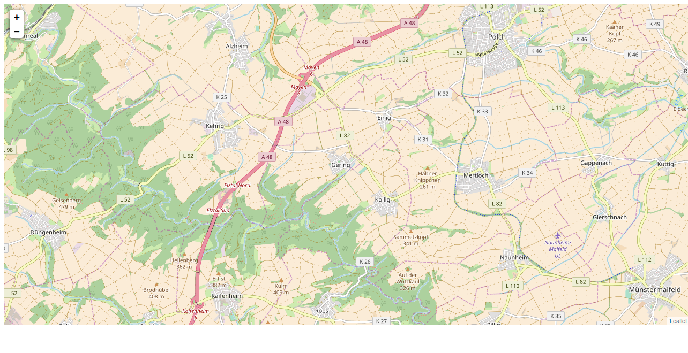
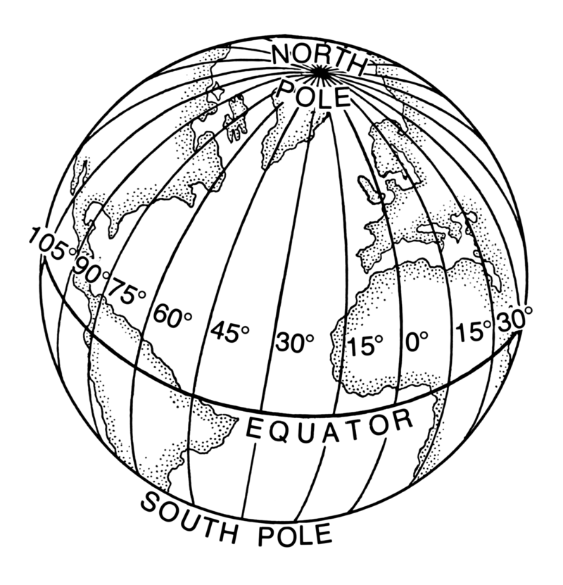

Abbildung: Vergleich zwischen verschiedenen Methoden zur Definition von Intervallen.
Abbildung: Vergleich zwischen verschiedenen Methoden zur Definition von Intervallen.Great that you give Typemill a try!! Typemill is a small open source cms and a project in work. You will probably miss some important features, but I am working hard to add everything that is needed for a handy and productive writing-system.
Read the short introduction about "writing content" before you start or simply play around and try it out.
Typemil is a flat file cms that runs out of the box without a complicated installation process. You can create a user account with the simple setup page and then login to the author panel. In the author panel, you can configure your website, use plugins, choose a theme and edit your content.
If you face any problems, then please make sure, that your system supports these features:
mod_rewrite and htaccess.If you run a linux-system like Debian or Ubuntu, then please double check that mod_rewrite and htaccess are activated. Check this issue on GitHub for help.
Please make the following folders writable with permission 774 (you can use your ftp-software for it):
If you still get an error, then you can post an issue on GitHub.
Typemill is a simple Flat File Content Management System (CMS). We work hard to provide the best author experience with easy and intuitive authoring tools. But Typemill is still in early development and it is likely that not everything will work perfectly out of the box. If you miss something or if you have ideas for improvement, then let me know via mail (trendschau@gmail.com) or via GitHub.
You can create, structure and reorder all pages with the navigation on the left. To structure your content, you can create new folders and files with the "add item" button. To reorder the pages, just drag an item and drop it wherever you want. Play around with it and you will notice, that it works pretty similar to the folder- and file-system of your laptop. And in fact, this is exactly what Typemill does in the background: It stores your content in files and folders on the server.
However, there are some limitations when you try to reorder elements, for example, you cannot move a complete folder to another folder. Click on the question-mark at the top of the navigation for detailed informations.
You can create and format your content with the Markdown syntax, that is similar to the markup syntax of wikipedia. If you are not familiar with Markdown, then please read the short Markdown-tutorial in the documentation of Typemill. You can learn Markdown in less than 10 minutes and there is no easier and faster way to format your webpage. You will love it!
Typemill provides two edit modes: The raw mode and the visual mode. You can switch between the modes in the publish-bar at the bottom of each page. The raw mode is the most robust way to create your content, because you write raw markdown into a simple textarea. The visual mode is experimental right now. It uses blocks and transforms each content block into a html-preview immediately, so that you can directly see the formatted result.
By default Typemill will use the raw mode. But you can change this behavior in the system settings and use the visual editor as default mode.
The publish bar of Typemill is pretty intuitiv and sticks at the bottom of the screen so that you have always full control of the status of each page. Simply play around with it and you will quickly understand how it works. In short:
If you need any help, then please read the documentation on typemill.net first. Some short video-tutorials are in work right now.
If you found a bug or if you have a question, then please open a new issue on GitHub.
Typemill is open source and a one man project right now, so please understand that I cannot provide individual support.
Contributions, donations and feedbacks are always welcome.
Eine bereichernde Zeit in einem schönen Land.
Lust die Arbeit an dieser Website wertzuschätzen? Das ist möglich via Paypal.
<div> <p>Ich möchte ein Buch schreiben über das, was ich erlebt habe. Es handelt von meiner Überwinterung 2017/2018 in Andalusien. Denn in dieser Zeit habe ich sehr viel über mich gelernt.</p>
<p class="a rotatedFloralHeartBullet"></p>
<p>Eigentlich wollte ich ein Buch über die Küste der Provinz Cadiz schreiben. Einen Reisebericht. Nun ist es eher ein Tagebuch geworden.</p>
<p class="a rotatedFloralHeartBullet"></p>
<p>Der <span class="highlight">Winter in Andalusien</span> war ein Erlebnis für mich. Deshalb bin ich der Meinung, dass ich Ihnen mit diesem Buch einen Eindruck über diese Zeit vermitteln kann. Vielleicht spielen Sie ja auch mit dem Gedanken einmal eine Weile alleine für sich in einer fremden Umgebung zu verbringen. Dann sind meine Erfahrungen vielleicht hilfreich für Sie. Oder Sie sind einfach nur neugierig. <br/>Dieses Buch kann leider nur einen Eindruck vermitteln. Erleben können meiner Meinung nach nur Sie selbst. Entweder Sie sind mittendrin im Geschehen und erleben direkt und selbst oder Sie lassen sich informieren. Information tut gut, wenn man etwas plant.</p></div>
<div> <p>Alles was ich in meiner dreimonatigen Auszeit erlebt habe, können Sie nicht erfahren, indem Sie darüber lesen. Sie werden aber Vieles zum Thema <span class="highlight">Überwintern in Andalusien</span> erfahren. Am Ende der Lektüre werden Sie zum Beispiel wissen, was mein Aufenthalt gekostet hat welche Eindrücke ich vom Land und von Leuten hier habe. Gut informiert können Sie Vorbereitungen für Dinge, an die Sie in Deutschland vielleicht nicht denken würden, treffen. Sie können dieses Buch aber auch einfach nur zur Unterhaltung lesen. Zumindest dann, wenn Sie eine Reise durch meine Gedanken in den drei Monaten unterhaltsam finden.</p>
<p>Ich habe lange Zeit immer Gedacht, dass eine längere Zeit im Ausland für mich nicht in Frage kommt. Gleichzeitig habe ich aber immer diejenigen, die so etwas in Angriff nahmen, beneidet. Die waren zu so etwas fähig. Die kannten sich aus und wussten immer weiter. Als ich entdeckte, dass auch bei anderen nicht immer alles ganz glatt und problemlos läuft, fing ich an nachzudenken. Ich habe einen kürzen Urlaub in den Bergen alleine unternommen. Diese Zeit habe ich sehr genossen. Auch hier lief nicht alles glatt. Es fing schon mit einer Autopanne auf der Hinfahrt an.</p>
<p>Bei dieser ersten Reise habe ich über mich gelernt, dass es wohl eine meiner inneren Überzeugungen war, das Problem etwas Schlechtes sind. Heute weiß ich über mich, dass mir ein Leben mit Probleme, die zu meistern sind, viel besser tut. Manche Menschen genießen ihr Leben mit einer sicheren, jeden Tag absehbaren, Arbeitsstelle. Abends sind sie am liebsten zusammen mit Vereinskameraden oder vor dem Fernseher auf dem Sofa. Ein solches Leben hatte ich. Das war aber nicht das Leben, mit dem ich froh war! In meinem Leben geht es nicht darum keinen Streß zu haben oder diesen um jeden Preis zu vermeiden. Ich möchte etwas erleben und dabei ist Streß unumgänglich. Wesentlich ist allerdings, wie ich mit dem Streß umgehe. Ich darf Stress nicht als negaiv ansehen und mich nicht von ihm überwältigen lassen sondern muss ihn als spielerische Herausforderung ansehen. Das kann ich, wenn ich alleine bin, meiner Meinung nach ganz gut.</p>
<p>In meiner Ferienwohnung in Spanien hatte ich Streß. Stunden habe ich mit meinem Ofen verbracht. Ich war es nicht gewohnt zu stochen. In der zweiten Hälfte meiner Auszeit hatte ich Spaß dabei dafür zu Sorgen, dass es in meinem kleinen Haus gemütlich warm war. In meiner gewohnten Umgebung kann ich nicht gut mit Streß umgehen. Viel zu nah sind die Gedanken:<span class="highlight">Du bist selbst dran schuld und das ist schlecht.</span>Und ich kann dem nichts erwidern. Ich hätte den Winter nicht in Andalusien verbringen müssen. Zuhause hätte ich den Stress mit dem Ofen nicht gehabt. Unsere Heizung schafft ohne unser Zutun ein behagliches Klima in unserer Wohung. Falls die Heizung ausfällt kümmert sich mein Mann darum. Wenn mein Mann das Problem nicht lösen kann, dann beauftragen wir einen Heizungsbauer den wir schon länger kennen. Alles ist geordnet und geregelt.</p></div>
<p class="a rotatedFloralHeartBullet"></p>kkk
<p>Es ist oft schwierig, Erlebtes in Worte zu fassen. Ich versuche es trotzdem. Ich schreibe hier sicherlich nichts weltbewegend Neues. Ich fasse einfach mein Erlebtes in Worte. Ich hoffe Sie haben beim Lesen eine schöne Zeit und gewinnen ein paar Denkanstöße.</p>
<p class="a rotatedFloralHeartBullet"></p>
<p>Ich war in den drei Monaten am Kap Trafalgar1 sehr viel unterwegs. Meistens war ich dabei alleine. In einem Kapitel dieses Buches habe ein paar der Wanderungen kurz beschrieben. Bei meinen Wanderungen haben sich viele meiner Gedanken geordnet. Das hat mir gut getan. Ich denke, dass das Wandern und Radfahren meine Auszeit positiv beeinflusst hat.</p>
<p>In diesem Buch erzähle ich nebenbei Geschichten von historischen Gegebenheiten und Personen an der Küste von Trafalgar auf die ich bei meinen Ausflügen gestoßen bin. Dabei handelt sich um Legenden, die ich gelesen habe oder die mir erzählt wurden. Ich weiß nicht, was daran wahr und was erfunden ist. Mir haben diese Erzählungen aber sehr gut gefallen und Sie haben mir das Land näher gebracht. Deshalb habe einige hier aufgenommen.</p>
<p class="a rotatedFloralHeartBullet"></p>
<p>Vielleicht fragen Sie sich, warum ich die Fotos alle ganz am Ende des Buchs eingefügt habe? Das ganze Buch würde sicherlich viel schöner wirken, wenn die Bilder die Texte auflockern würden. Die Bilder sind alle ganz am Schluss, wegen der Druckkosten. Der Druck einer farbige Buchseite ist viel teurer. Da die Bilder alle zusammen am Ende kompakt zusammengefasst sind, müssen nur wenige Seiten farbig gedruckt werden.</p>
<p>Ihnen gefällt es sicherlich nicht, dass ich die Hyperlinks auch im E-Book alle ausgeschrieben haben. Der Grund für diese lange Schreibweise ist folgender: Damit die Leser der Druckversion des Buches die Links verwenden können, habe ich diese vollständig eingegeben.</p>
<p class="a rotatedFloralHeartBullet"></p>
<p>Ich fühle mich in meinem Alltagstrott gefangen! Immer im gleichen, gewohnten Umfeld! Ich merke, dass ich gelenkt werde von all den Dingen, die um mich herum geschehen. Und merke, dass mir das nicht gut tut. Ich lasse mich in meinen Entscheidungen beeinflussen und entscheide oft nicht alleine. Oft fällt mir das erst im Nachhinein auf.</p>
<p>Was wäre, wenn das gewohnte Umfeld nicht da wäre? Wenn ich aus meiner Komfortzone ausbreche? Was passiert, wenn ich mich in der Umgebung nicht auskenne? Wenn alles fremd und unbekannt um mich herum ist?</p>
<p class="a rotatedFloralHeartBullet"></p>
<p>Ich wünsche Ihnen viel Spaß bei der Lektüre.</p>
Warum dieser langweilige Rückblick?
Ein kurze Blick in die Geschichte ist gut um Ursprünge zu erkennen. Sie können die verschiedenen Entwicklungsstufen so besser einordnen und zukünftige Trends leichter erkennen und bewerten.
Angefangen hat alles in den sechziger Jahren. Damals habe nicht nur ich das Licht der Welt erblickt, es tauchten auch die ersten GIS-Anwendungen aus dem Nichts auf. Die zwei Hauptgründe dafür waren der zunehmende Bedarf an geographischen Informationen und das Erscheinen der ersten Computer.
Die theoretische Grundlage von GIS wurde einige Jahre zuvor gelegt. Es entwickelten sich neue Ansätze auf dem Gebiet der Kartographie. Unter anderem entstanden die ersten quantitativen Karten1. Quantitative Karten befriedigten als erste die Bedürfnisse, die der Einsatz von Computern und geografischen Daten später mit sich bringen wird. Diese Quantitative Revolution bildet einen der wichtigsten Paradigmenwechsel in der Geschichte der modernen Geographie2. Methoden der Statistik und mathematische Verfahren spielen ab nun eine immer größere Rolle.
Quantitative Karten beantworten die Frage: Wie viel ist wo? Sie stellen Informationen wie Mengen oder Größen dar - entweder absolut oder relativ. Beispielsweise die Bevölkerungsdichte (relativ) oder die Einwohnerzahl (absolut). Da Computer jede Menge Mengen und Größen in Form von Daten sammeln können, bieten diese viel Futter für ein hungriges GIS.
Die erste relevante Erfahrung, die Computer und Geografie miteinander verbindet, findet sich im Jahr 1959. Vor mehr als einem halben Jahrhundert hat Waldo Tobler3 die Prinzipien eines Systems namens MIMO (map in - map out) definierte. MIMO nutzt erstmals Computer zur Erstellung von Karten. Auch wenn es sich heute banal anhört, damals war es bahnbrechend: MIMO definierte erstmals die grundlegenden Ideen zum Erstellen, Kodieren, Analysieren und Rendern von geografischen Daten innerhalb eines Computersystems. MIMO erlaubte die Konvertierung von Karten in ein Computer-lesbares Format, die Manipulation der Daten und die Ausgabe neuer Karten.
Das erste echte GIS war das CGIS4 (Canadian Geographical Information System). Es wurde in den frühen sechziger Jahren in Kanada von Roger Tomlinson5 entwickelt. Roger Tomlinson wird auch Vater des GIS genannt. Ziel von CGIS ist die Inventarisierung von Naturräumen. Mit CGIS werden Datenmodellen, Verarbeitungsalgorithmen und Werkzeugen entwickelt, die heute als Fundamente geographischer Informationssysteme angesehen werden. Nachlesen kann man dies alles auf 457 Seiten in der in der Doktorarbeit6 von Roger Tomlinson.
In der Mitte der sechziger Jahre kamen weitere GIS Anwendungen hinzu. Einen zweifellos sehr großen Anteil an der Entwicklung nahmen die theoretische Grundlage für die Analyse von Rasterdaten und Vektordaten ein. SYMAP (Synergistic Mapping) und GRID sind die beiden wichtigsten ersten Ansätze zum Kodieren und Speichern von geografischen Informationen. Diese werden in den nächsten Kapiteln Thema sein. Ich werde sie im Detail erklären. Auf YouTube gibt es ein kurzes Video7, in dem Howard Fisher8 erklärt wie es zur Entwicklung der Werkzeuge kam. Die Hauptideen für die Durchführung von Analysen in Raster-GIS wurden von Dana Tomlin9 mit seiner Kartenalgebra definiert.
SYMAP ist ein Programm zur Erstellung von Flächenkartogrammen (Choroplethenkarten) und GRID ist ein Verfahren für die Rasteranalyse. GRID, CALFORM und POLYVRT untersuchten den Raster-Vektor-Ansatz für die Kartierung weiter.
In den sechziger Jahren beginnt sich das Gebiet der GIS aus diesen bahnbrechenden Arbeiten zu entwickeln. GIS ist kein experimentelles Werkzeug mehr. GIS werden zu einem wichtigen Teil der kartographischen Welt.
Von diesem Moment an entwickeln sich GIS in verschiedenen Perioden und bewegt sich dank des Einflusses vieler externer Faktoren sehr schnell. Diese Entwicklung betrifft den Bereich der GIS selbst, die damit verbundene Technologie, die Daten und auch die Theorien und Techniken, auf denen sie aufgebaut sind.
Einen anderen interessanten Rückblick auf die Entwicklung von GIS können Sie in der GIS Geschichte10 der UNIGIS Salzburg lesen.
<h1 id="h1einwinterinandalusien">Ein Winter in Andalusien</h1>
<p>Nun sind es nur nur ein paar Tage. Nächste Woche werde ich in mein Auto steigen und losfahren. Fast 2.500 Kilometer in Richtung Südwesten. Ziel ist ein kleines Dorf in der Nähe von Vejer de la Frontera in Andalusien. Was wird mich wohl in den nächsten 3 Monaten erwarten?</p>
<p class="a rotatedFloralHeartBullet"></p>
<p>Ich mag gar keinem erzählen, dass ich den Winter in Spanien verbringen werden. Ich stoße nur auf Neid. Alle sind der Meinung , dass ich drei Monate Urlaub mache. Das ist aber nicht so. Zum einen möchte ich in der Zeit auch arbeiten und hoffe Aufträge zu bekommen. Zum anderen gibt es sicherlich einen guten Grund, warum nicht mehr Menschen drei Monate im Ausland verbringen. Es gibt nämlich auch Nachteile. Die Zeit muss gut vorbereitet werden und man muss die gewohnte Umgebung verlassen. Das Gewohnte verlassen viele aber nur ungern. Der Satz:<span class="highlight">Hast du es gut. Ich würde das auch gerne machen, wenn ich könnte</span>ist so schnell gesagt. Ich glaube dass fast allen, die das sagen bewusst ist, dass es nicht nur Urlaub ist - man muss auch Unannehmlichkeiten und Anstrengungen auf sich nehmen. Man muss schon wirklich eine Veränderung für sein Leben wünschen, um diese Nachteile in Kauf zu nehmen. Der Wunsch etwas zu ändern und das Unwohlsein zu Hause oder die Neugierde muss größer sein, als die Bequemlichkeit und das Wohlgefühl zu Hause. Und den Teil <span class="highlight">...wenn ich das könnte</span>, sehe ich als Ausrede. Es gibt sicherlich Zeiten, in denen es nicht passt. Auf diejendigen, von denen ich den Satz hörte, trifft dies aber nicht zu.</p>
<p class="a rotatedFloralHeartBullet"></p>
<p>Unwohl habe ich mich schon beim Planen der Anreise gefühlt. Es gibt viele Dinge, die ich lieber tue, als am Computer die optimale Rute und die günstigsten Hotels heraus zu suchen. Dann habe ich beim Buchen der Unterkünfte einen Fehler gemacht. Das kann ich auch positiv sehen. Ich habe gelernt, dass ich umbuchen kann. Und ich habe die Erfahrung gemacht, das es gar nicht so schlimm ist, einen Fehler zu machen. Viele Menschen nehmen auch nicht gerne eine Reise über 2.500 Kilometer auf sich. Vor dieser Strecke hatte ich auch etwas Angst. Ich bin noch nie so weit alleine unterwegs gewesen.</p>
<p class="a rotatedFloralHeartBullet"></p>
<p>Meine pubertierende Tochter sagte: <span class="highlight">Ich bin froh, wenn du weg bist</span>. Ich habe das mit einem lachenden und einem weinenden Auge aufgenommen. Wenn sie gesagt hätte, dass sie mich zu Hause braucht, dann wäre ich zu Hause geblieben.</p>
<p class="a rotatedFloralHeartBullet"></p>
<p>Mir ist danach, ein Zitat einzufügen:</p>
<blockquote> Nichts auf der Welt ist so mächtig wie eine Idee, deren Zeit gekommen ist. <br/>
(Fälschlich Victor Hugo zugeschrieben;<a href="https://de.wikiquote.org/wiki/Victor_Hugo">https://de.wikiquote.org/wiki/Victor_Hugo</a>)</blockquote>
<p>Anfang 2017 hatte ich das Gefühl, dass die Zeit für eine Auszeit für mich gekommen ist.</p>
<p class="a rotatedFloralHeartBullet"></p>
<p>Kurz vor meiner Abreise fühle ich mich unsicher. Nun wird alles konkret. Mir wird bewusst, dass ich mich ganz alleine in ein fremdes Land aufmache. Ich muss an einen Film denken, den ich vor kurzem gesehen haben. Im Film geht es um einen Flüchtling, der sich alleine aus seiner Heimat Kamerun durch die Sahara bis an die Küste Marokkos durchgeschlagen hat. Ich fühle eine Gemeinsamkeit. Er, und auch ich flüchten vor etwas. Ich will aber nicht nachempfinden, wie er sich vor seiner Abreise gefühlt hat. Ich fahre in meinem Auto und weiß wo ich unterwegs ein Dach über dem Kopf habe. Ich habe eine Kreditkarte dabei - und einen ADAC Schutzbrief. Paul, der Flüchtling aus dem Film, macht sich ohne diese Sicherheiten auf eine viel gefählichere und längere Reise. Das wovor er flüchtet muss gewaltig sein.</p>
<p class="a rotatedFloralHeartBullet"></p>
<p></p>
https://www.uni-trier.de/fileadmin/_migrated/content_uploads/w11_KIV_Kartenmodellierung.pdf und http://www.univie.ac.at/cartography/lehre/pskg/unterlagen/doc/kap9.pdf ↩
https://en.wikipedia.org/wiki/Canada_Geographic_Information_System (engl.) ↩
http://discovery.ucl.ac.uk/1563584/1/Tomlinson_Thesis.pdf (engl.) ↩
https://unigis.at/schnuppermodul/modul_gisintro/html/lektion8/index.htm ↩
<p class="a rotatedFloralHeartBullet"></p>
<p>Heute ist der Tag danach. Die Anreise ist vorbei. Ich habe die Fahrt gut gemeistert. Ich bin ein bisschen Stolz auf mich.</p>
<p>Es gehört Mut dazu und für viele ist es unvorstellbar, aber warum eigentlich? Ist es die Angst, die davor abhält? Der erste Schritt zum Alleinreisen ist ein Sprung über den eigenen Schatten. Es kostet Überwindung. Ich glaube die Angst vor dem Unbekannten ist mein größtes Problem.</p>
<p>Jetzt stehe ich alleine da. Ganz alleine und nur mit mir selbst. Jetzt kann ich bestimmen und es geht nur um meine eigenen Bedürfnisse.Ich bin gespannt wie es tatsächlich wird.</p>
<p class="a rotatedFloralHeartBullet"></p>
<p>Nach der Ankunft räume ich mein Hab und Gut aus dem Auto ins Haus. Dann mache ich eine kleine Wanderung. Mir tut es gut, wenn ich mich orientieren kann. Wenn ich weiß, was um mich herum ist. Ich gehe durch eine Straße, die mir fremd ist. Die Häuser sind mit Mauern umgeben. Ich weiß nicht wer in den Häusern wohnt. In den Höfen bellen Hund. Spanien ist laut. Das hatte ich vorher schon gelesen. Aus einem Hof kommt ein Hund bellend auf mich zu gelaufen. An frei laufende Hunde bin ich nicht gewöhnt. Ich habe Angst. Kein Mensch kommt und guckt nach dem Hund. Keiner sagt mir, dass der Hund nichts tut.</p>
<p>Der Hund tut mir nichts. Beim Weitergehen fühle ich mich unpassend. Ich denke, dass ich hier nicht sein sollte. Irgendwann ist dieser Gedanke wohl in mein Leben gekommen. Man sollte nicht einfach so in ein anderes Land fahren. Ich muss an die Redensart<span class="highlight">Schuster, bleib bei deinem Leisten</span>denken. Tue nichts, wovon du nichts verstehst!</p>
<p>Ich merke, wie ich mich selbst nicht sein lassen kann.</p>
<p class="a rotatedFloralHeartBullet"></p>
<p>Mir ist es wichtig, die Kosten für mein Überwindern gering zu halten. Die Miete stellt einen fixer Betrag dar. Diesen Betrag kann ich nicht beeinflussen. Ich zahle 350 Euro monatlich für mein 42 m<sup>2</sup> großes Hobbit-Haus. Erfahrungsgemäß kommen noch etwa 50 Euro an Nebenkosten hinzu. Der Stromzähler hängt neben meiner Haustür. Immer wenn ich an ihm vorbei gehe, werfe ich einen Blick auf den Zählerstand. Auch das kann ich einfach nicht lassen. Manchmal habe ich unerwartet wenig verbraucht. Andere Male ist der Zählerstand weit fortgeschritten, obwohl ich das Gefühl hatte, dass ich gar nicht viele elektrische Geräte genutzt habe. Das ist mir schlimm. Ich möchte gerne alles genau erklären können. Ich möchte es kontrollieren. Ich muss an etwas denken, dass ich einmal in einem Buch gelesen haben.<span class="highlight">Menschen die alles kontrollieren möchten sind Menschen mit Angst</span>. Es ist ihre Unsicherheit die Menschen dazu treibt alles genau wissen zu wollen. Und nun glaube ich, dass das stimmt. Ich habe Angst. Ich möchte aber keine Angst haben. Ich möchte gerne zuversichtlich sein und auf eine gute Zukunft vertrauen. Ich möchte einfach loslassen. Zumindest dann, wenn es um Dinge geht, die 40 Cent - also um eine Kilowattstunge.</p>
<p class="a rotatedFloralHeartBullet"></p>
<p>Warum mache ich das?</p>
<p>Warum bin ich so weit von zu Hause fort. Ich sitze hier alleine. Mein Mann ist zu Hause alleine. Am Anfang ist alles neu. Nichts ist vertraut. Vieles mache ich das erste Mal. Manches geht schief. Ich plane eine Joggingrunde am Strand und vergesse, dass gerade Flut ist. Bei Flut kann man am Strand nur schwer joggen. Das Wasser steht so hoch, dass man nur im lockeren Sand unterwegs ist. Bei Ebbe kann man wunderbar an der Uferlinie laufen, wo der Sand nasser und fester ist. Beim Joggen in der Nähe meiner Unterkunft stoße ich mehrmals auf private Wege, die ich gerne in meine Runde einbauen würde. Ich muss erst herausfinden, ob ich diese Wege nutzen darf. Ich brauche viel Zeit zum Organisieren und Planen. Ich brauche Zeit, um mein Leben für mich gut zu gestalten. Dies tue ich nun bewusst. In Deutschland, in meinem Alltag, jogge ich meist die gleichen Strecken. Ich lebe nicht bewusst. Ich mache mir keine Gedanken darüber, was gut für mich ist. Ich mache Gewohntes. Manchmal tue ich dieses Gewohnte nicht, weil ich es für mich als gut herausgefunden habe. Das Gewohnte hat teilweise auch seinen Ursprung in Meinungen anderer, die ich einmal übernommen habe.</p>
<p>Nun weiß ich wieder, warum ich das mache!</p>
<p class="a rotatedFloralHeartBullet"></p>
<p>Mir geht es ganz oft so, dass ich den Augenblick nicht genießen kann, weil ich über <span class="highlight">nicht abgeschlossene Dinge</span> in der Vergangenheit nachdenke. Ich überlege, warum ich bei meiner letzten Arbeitsstelle versagt habe oder denke an ein Problem mit meinen Nachbarn oder einen Konflikt mit meinen Eltern. Solange ich unabgeschlossene Situationen haben, bin ich nicht frei für Neues und für ein Erleben des Augenblicks. Das merke ich ganz deutlich. In Selbsthilfebüchern lese ich immer wieder, dass man sich oft davor drückt, Dinge anzusprechen. Ich bin mir sicher, dass das bei mir nicht zutrifft. Ich glaube eher, dass ich zu viele Dinge anspreche und damit andere Menschen nerve. Ich wünsche mir so sehr, dass ich in meiner Auszeit herausfinde, wie ich Dinge für mich abschießen kann.</p>
<p class="a rotatedFloralHeartBullet"></p>
<p>In den ersten beiden Wochen in Andalusien habe ich an einem Projekt gearbeitet. Gestern habe ich meinen Entwurf abgegeben. In seiner ersten Antwort geht der Kunde nicht auf die vielen Dinge ein, an die ich ungefragt gedacht habe. Er bemängelt eine Nebensächlichkeit.</p>
<p>Ich fühle mich schlecht. Ich fühle mich nur gut, wenn etwas Positives passiert. Ich merke immer mehr wie abhängig ich von äußeren Einfüssen bin. Ich kann mir nicht selbst helfen. Ich möchte aber unabhängig sein. Das heißt nicht, dass ich keine Hilfe von außen in Anspruch nehmen möchte. Ich möchte aber selbst meine Bedürfnisse wahrnehmen und befriedigen können.<span class="highlight">Ich möchte selbst wissen was mir, wenn ich mich schlecht fühle, gut tut.</span> Denn nur so kann ich selbstbestimmt leben. Egal wie viel Mühe ich mir gebe und wie gut oder schlecht ich arbeite - die Rückmeldungen anderer kann ich genauso wenig beeinflussen wie das Wetter.</p>
<p>Das ich sehr Abhängig von der Meinung anderer Menschen bin, ist mir schon oft bewusst geworden. Um zu dieser Erkenntnis zu gelangen musste ich nicht verreisen. Ich hoffe, dass mir die Zeit mit mir alleine hier hilft, herauszufinden wie ich mir selbst helfen kann, wenn ich mich schlecht fühle.</p>
<p class="a rotatedFloralHeartBullet"></p>
<p>Ich fühle mich schlecht. Schon beim Aufwachen habe ich keine Energie. Ich erkenne keinen offensichtlichen Grund für meine miese Stimmung. Dabei muss es einen Grund geben. Ich bin davon überzeugt, dass meine Gefühle immer eine Bedeutung haben. Negative Gefühle zeigen mir, dass ich etwas nicht mehr möchte. Positive Gefühle zeigen mir, dass ich mit etwas zufrieden bin. Leider deute ich meine Gefühle oft nicht richtig. Mir fehlt die Übung. Heute übe ich. Heute ist wohl so, dass ich etwas vermeiden möchte oder nicht mehr will. Ich glaube ich möchte nicht alleine sein. Vielleicht war es ein Fehler, die Unterkunft für drei Monate zu buchen. Vielleicht sollte ich meine sieben Sachen packen und nach Deutschland fahren. Andererseits kann es auch eine Herausforderung sein. Ein Gefühl ist nichts Schlechtes. Ich glaube, dass ich Gefühle zu oft verdränge. Hier habe ich nun Zeit meine Gefühle zu fühlen. Zeit in mich zu kehren und meine Gefühle anzunehmen.</p>
<p>Nach einer Weile freue mich sogar ein bisschen über die Traurigkeit. Ich glaube sie zeigt mir, dass ich meine Familie vermisse und das ist gut so. Ich nehme mir fest vor dies bei nächster Gelegenheit meinem Mann und meiner Tochter zu erzählen. Ich weiß nun schon, dass ich meine Tochter nerven werden und mein Mann als es als Kopfmensch nicht genauso wie ich verstehen wird. Das ist aber im Moment nicht wichtig.</p>
<p class="a rotatedFloralHeartBullet"></p>
<p>Ich muss heute an eine Situtation denken, die ein Auslöser für meine Flucht nach Spanien war. Ich habe oft meine Aggressionen nicht im Griff und schäme mich deshalb. Insbesondere meine Tochter kann mich schnell provozieren. Ich tue dann Dinge, die ich später bereue. Als Kind habe ich sicher nicht die Erfahrung gemacht, dass Gewalt eine erfolgreiche Strategie ist. Meine Wut ist sicherlich kein erlerntes Verhalten. Ganz im Gegenteil.</p>
<p>Jedes Gefühl hat eine Bedeutung. Auch die Aggression. Ich kann mich nicht erinnern, dass mir jemand gezeigt hat, wie ich mit diesem Gefühl am besten umgehe. Ich bin der Meinung, dass meine Eltern es selbst nicht wussten. Oft war ich aggressiv gegenüber meinem jüngeren Bruder. Er konnte mich sehr gut provozieren. Meine Eltern sahen das als böse an. Daraufhin haben dieses Gefühle selbst als unangenehm und schlecht abgelehnt. Ich habe mich selbst dafür verurteilt und versucht meine Aggressionen zu verdrängt. Dabei hat auch dieses Gefühl eine Botschaft. Ich bin aggressiv gegenüber einem anderen, wenn der andere eine Grenze von mir verletzt. Die Aggression gibt mir die Energie, meine Grenze deutlich zu machen.</p>
<p>Negativ ist aggressives Verhalten erst dann, wenn Gewalt ins Spiel kommt.</p>
<p class="a rotatedFloralHeartBullet"></p>
<p>Heute ist das Wetter schlecht. Schon morgens ist es trüb und regnerisch. An einem solchen Tag wäre ich lieber in meinem Haus in Deutschland. Das Haus in dem ich in diesem Winter in Spanien wohne ist nicht so komfortabel wie das, dass ich mit meinem Mann für ein ganzes Leben geplant und in Deutschland gebaut haben.</p>
<p class="a rotatedFloralHeartBullet"></p>
<p>Ich möchte etwas arbeiten. Meine Gedanken schweifen aber hin und her. Ich sitze am Computer und mir fällt ein, dass ich die Waschmaschine noch füllen wollte. Dann sitze ich wieder am Computer und mir fällt ein, dass ich das Akku für mein GPS-Gerät noch aufladen muss. Dann muss ich auf die Toilette. Nun sitze ich wieder am Computer und mir fällt wieder etwas anderes ein. Ich merke, dass ich unzufrieden werde. Wenn es so weiter geht, dann schaffe ich nichts von meiner eigentlichen Aufgabe. Ich habe am Ende kein Ergebnis. Ich habe einmal gelesen, dass man sich in solchen Situationen einen Zettel zur Hilfe nehmen kann. Eigentlich stand dieser Tipp in einer Einführung zur Mediation. Vielleicht hilft er mir aber auch, mich auf meine im Moment wesentliche Aufgabe zu konzentrieren. Ich schreibe also alle Dinge, die mir einfallen, auf einen Zettel. Ich werde sie später erledigen. Ich merke, dass ich skeptisch werde. Ich denke, dass das bei mir nicht funktioniert. Aber mir fällt kein Grund ein, warum es bei mir nicht funktionieren sollte.</p>
<p>Einen Versuch ist es wert.</p>
<p class="a rotatedFloralHeartBullet"></p>
<p>Manchmal weiß ich nicht, was gut für mich ist.</p>
<p>Eine Fliege ist ins Haus gekommen. Sie fliegt in der Nähe einer Fensterscheibe auf und ab. Dort ist es viel zu warm und zu trocken für sie. Sie wird verdursten. Die Fliege versucht immer wieder, nach draußen zu gelangen, und versteht nicht, dass sie an der Scheibe, die sie nicht sehen kann, nicht weiterkommt. Ich versuche ihr mit einem Blatt Papier zu helfen. Es sieht für mich so aus, als ob ich die Fliege damit noch mehr verängstige. Sie fliegt weiter nach unten und versteckt sich in einer Ecke auf der Fensterbank. Von hier aus hat sie alleine gar keine Change wieder nach Draußen zu gelangen. Mir gelingt es, sie vorsichtig weiter nach oben zu einem offenen Fenster zu bewegen. Nun kann sie in die Freiheit fliegt. Das tut sie auch. Ganz schnell verschwindet sie im Garten.</p>
<p class="a rotatedFloralHeartBullet"></p>
<p>Ich sitze gerne im Garten. Wenn ich nicht unterwegs bin oder schlafe, bin ich meist draußen. Im ersten Monate habe ich keinen festen Platz. Ich stelle meine sieben Sache immer mal in einer anderen Ecke auf - nur um dann zu merken, dass meine Ecke auch Nachteile hat und ich umziehen möchte. Abends wandere ich oft der Sonne hinterher. Ich möchte gerne die letzten Sonnenstrahlen noch in mir aufnehmen. Wenn ich am Tag am Computer arbeite, habe ich in der Regel Papier neben mir liegen. Dann bin ich gerne vor Wind geschützt.</p>
<p class="a rotatedFloralHeartBullet"></p>
<p>Alleinsein und Zeit zum Nachdenken, das suche ich in Spanien. Wenn ich alleine bin, habe ich Zeit für dich. Es gibt keine Ablenkung durch Freunde, Familie oder Partner. Ich muss, und hier passt das Wort muss, mich in meinen Gedanken ganz mit dir alleine beschäftigen. In dieser Zeit kommen die besten Ideen! Nun stelle ich fest, das es mit einem Smartphone schwer ist, mit sich alleine zu sein. Durch die permanente Vernetzung kann man jederzeit mit vielen weit entfernt lebenden Menschen Kontakt aufnehmen. Das hat Vorteile und Nachteile.</p>
<p>Das Gerät an sich ist meiner Meinung nach nicht schlecht. Es ist vielmehr die Art wie ich es nutze. Es ist schön, einmal am Tag zu lesen, dass es meinen Lieben zu Hause gut geht. Ich freue mich auch, ein bisschen an dem Leben in Deutschland - zumindest an dem Teil der mir wichtig ist - teilhaben zu können. Richte ich aber meine Aufmerksamkeit ständig auf die News Anzeige im Smartphone Display, dann weiß ich gar nicht mehr, was in mir geschieht. Ich haben keinerlei Selbstaufmerksamkeit mehr. Ich werde mir fremd.</p>
<p>Manchmal fühle ich mich von den sozialen Netzwerken sogar unter Druck gesetzt. Ich meine, ich muss unmittelbar reagieren, wenn mir über WhatsApp ein Frage gestellt wird.</p>
<p>Auch merke ich, dass ich nur mit wenigen Menschen enge Beziehungen haben kann. Mit Abstand betrachtet fühle ich mich wohler, wenn ich nur wenige Kontakte haben. Aus Neugierde bin einer Facebook Gruppe beigetreten, die sehr viele Mitglieder hat. Die Möglichkeiten in dieser Gruppe schienen mir unglaublich. Wenn ich mit meinem Mann am Abend die Erlebnisse des Tages austausche, kann das wunderbar sein und uns verbinden. Was mir Probleme macht, sind die Vielzahl der Reize und die schnelle Abfolge. Ich merke, dass dies dazu führt, dass meine engsten Beziehungen und die Beziehung zu mir selbst in den Hintergrund gerät.</p>
<p>Das Schlimme daran ist, das diese vielen Reize mich von meinem inneren Gefühl entfernen. An die Stelle des eigenen Gefühls treten Bilder, noch schlimmer: von außen kommende Bilder. Das sind nicht die Bilder und Ideen, die aus meinem eigenen Seelengrund stammen, sondern solche, die von anderen gemacht sind. Das ist nicht das wofür ich mich im Leben einsetzen möchte.</p>
<p>In meiner Auszeit hier ist mir klar geworden, wie ich soziale Netze nutzen möchte. Mir ist es nicht wichtig mit 80 auf mein Leben zu blicken und zu sagen, ich habe immer viele Bilder und Kommentare veröffentlicht! Liebe sehe auf wenige, dafür aber besondere Ereignisse, zurück. Und dann ist es mir wichtig wirkliche Beziehungen zu haben. Diese wirklichen Beziehungen kann ich auch mithilfe von sozialen Netze pflegen. Und darum geht es mir!</p>
<p class="a rotatedFloralHeartBullet"></p>
<p>Wenn ich alleine bin, bin ich grenzenlos frei. Ich kann machen, was ich möchte und muss mich mit niemandem absprechen. Vor allem musst ich keine Kompromisse eingehen und meine eigenen Wünsche zurückstellen. Im Moment bin ich hier in Spanien alleine.</p>
<p>Heute kann ich tun und lassen was ich will. Es gibt zwar ein paar Aufgaben, die auf meiner Aufgabenliste angezeigt werden. Die müssen aber nicht unbedingt direkt erledigt werden. Das Wetter ist mittelmäßig. Es könnte Regen geben. Ich kann mich nicht entscheiden, ob ich den Tag für einen Ausflug nutze oder ob ich im Haus bleibe und arbeite. Ich überlege hin und her. Am Ende bleibe ich zu Hause. Zufrieden bin ich nicht.</p>
<p>Ich kann das nicht begreifen. Im Alltag zu Hause in Deutschland, wünsche ich mir oft, alleine zu sein. Ich sehne mich nach Tagen, an denen ich tun und lassen kann, was ich will. Insgeheim gebe ich manchmal den Menschen in meiner Umgebund die Schuld daran, dass es mir nicht gut geht. Nun habe ich genau das, was ich mir zu Hause wünsche. Damit bin ich aber auch nicht zufrieden? Habe ich noch nicht gelernt, mit mir alleine zu sein? Ich möchte mich gerne einmal einfach treiben lassen und dabei froh sein.</p>
<p class="a rotatedFloralHeartBullet"></p>
<p>Es gibt Dinge die ich morgens tun muss, sonst geht es mir über Tag schlecht. Unter anderem muss ich daran denken eine Tablette einzunehmen. Meine Schilddrüse ist durch eine Operation verkleinert und kann alleine nicht genügend Hormone produzieren. Mit der Tablette gebe ich meinem Körper diese fehlenden Hormone. An die Tablette muss ich morgens ganz früh denken. Wenn ich vergesse die Hormone vor dem Frühstück zu mir zu nehmen, habe ich ab Mittag ein unangenehmes Druckgefühl im Hals. Mein Hals fühlt sich eingeengt an, so als ob ein Kloß darin ist. Heute habe ich die Tablette vergessen. Ich überlege, warum mir dies ab und zu passiert. Mir wird bewusst, dass ich meine Aufmerksamkeit nicht auf mich gerichtet hatte. Direkt nach dem Aufwachen habe ich zum Smartphone gegriffen. In meinem E-Mail-Postfach habe ich eine Nachricht vorgefunden, die ich direkt beantworten wollte. Dann habe ich mir die Wettervorhersage angesehen und danach die Nachrichten Applikation geöffnet.</p>
<p>Viele wichtige Dinge habe ich an diesem Morgen erledigt. Ich selbst bin dabei zu kurz gekommen.</p>
<p class="a rotatedFloralHeartBullet"></p>
<p>Mehrmals wöchentlich bin ich am Strand. Ich unternehme teilweise lange Wanderungen. Am Kap Trafalgar sind die Strände sehr lang und weit. Es gibt nicht viele markante Punkte um sich zu orientieren. Trotzdem ist es so, dass ich nach einiger Zeit bestimmte Bereiche unterteile. Dies ist der Strand-Abschnitt, den man auch bei Flut gut gehen kann, Hier kann man das erste Mal zum Leuchtturm blicken. Dort ist ein einsamer Fels in der Brandung. Nun kommt ein langer eintöniger sandiger Abschnitt.</p>
<p>Einmal vergleiche ich eine Wanderung mit meinem Leben. Auch in meinem Leben lebe ich Abschnitte unbewusst. Es zieht einfach so an mir vorbei. Dann gibt es aber auch immer wieder besondere Ereignisse. Sicherlich zählt der Tag, an dem ich meine Mann kennen gelernt habe dazu. Auch die Geburt meiner Tochter ist sicherlich ein markanter Punkt in meinem Leben. Es gibt aber auch kleine Dinge. Mir fällt der Besuch einer Schiefergrube ein, bei dem mir bewusst geworden ist, dass es nicht immer nur um wirtschaftliches Wachstum gehen kann. Die Menschen in dieser Schiefergrube hatten vor einem Jahrhundert ein gutes Leben, Dann hat die Nachbargrube Schienen zum nahe gelegenen Fluss gelegt. Per Zug konnte diese Grube mehr Schiefer günstiger anbieten. Die Grube ohne Bahnhof wurde stillgelegt. Auf den ersten Blick sieht man nur Vorteile in dem Bau der Schienen: Das sollte jeder tun, denn nur so haben wir ein besseres Leben. Auf den zweiten Blick stelle ich aber immer öfter fest, dass es mir mit den vielen Dingen nicht besser geht.</p>
<p class="a rotatedFloralHeartBullet"></p>
<p>In dem Open Projekt, bei dem ich manchmal mitarbeite, kommunizieren alle untereinander in Englisch. Mir fällt auf, das ich manchmal froh darüber bin. Eigentlich ist das verwunderlich. Mein Englisch ist gar nicht gut. Im Deutschen passiert es mir aber immer wieder, dass ich Angst haben, dass etwas das ich sage oder schreibe nicht richtig verstanden wird. Viele Aussagen kann man unterschiedlich interpretieren. Und dann merke ich, dass ich mit Fragen in deutscher Sprach auch Gefühle verbunden haben. Wenn ich zum Beispiel gerne in einem Projekt mitarbeiten will dann überlege ich lange wie ich die Frage stelle. Da kommen Sätze wie <span class="highlight">Ich bewerbe mich für das Projekt</span> über <span class="highlight">Ich möchte mich gerne an dem Projekt beteiligen</span> bis hin zu <span class="highlight">Darf ich bei dem Projekt mitmachen</span>. Und bei jedem Satz schwebt ein Gefühl mit. <span class="highlight">Ich bewerbe mich für das Projekt</span> fühlt sich für mich formal an. <span class="highlight">Darf ich bei dem Projekt mitmachen</span> empfinde ich als unterwürfig. In der englischen Sprache kenne ich nicht so viele Wörter. Außerdem weiß jeder mit dem ich kommuniziere, dass ich Deutsche bin. Englisch ist nicht meine Muttersprache. Ich habe das Gefühl, dass man mir deshalb unbeholfene Sätze eher nachsieht. Ich muss lachen als ich das schreibe. Ich merke selbst, dass ich gerne hilflos bin.</p>
<p class="a rotatedFloralHeartBullet"></p>
<h1 id="h1monat2">Verweilen</h1>
<p>Als ich an einem Nachmittag in der Nähe meiner Unterkunft joggte, bemerkte ich ein Pferd. Es war am Straßenrand angebunden. <span class="highlight">Das Pferd sah traurig aus.</span> Sofort kamen mir Worte, die ich als Kind öfter von Menschen gehört hatte, die Tiere als Sache betrachten und mit ihnen Geld verdienen. In deren Verständnis ist ein Tier nicht traurig und hat keine Gefühle. Ich sagte mir ganz bewusst den Satz: <span class="highlight">Ich fühlte, dass das Pferd traurig ist.</span> Und mit diesem Satz passiert etwas in mir. Das Gefühl war nun Wirklichkeit. Es war egal, dass andere Menschen dies als falsch ansehen. Ich möchte mein Gefühl nicht als allgemeingültig darstellen und die Sichtweise anderer Menschen als falsch darstellen. Aber mein Gefühl hatte nun seine Daseinsberechtigung.</p>
<p>Beim Weiterlaufen wurde mir bewusst, dass ich fast ganz frei überall hin laufen kann. Ich muss Grenzen anderer Menschen beachten. Ich bin aber nicht angebunden. Trotzdem bin auch ich oft traurig.</p>
<p class="a rotatedFloralHeartBullet"></p>
<p>Ich genieße die Nachmittagssonne auf der Terrasse. Ich lese ein Buch. Es ist ein Fachbuch. Ich würde der Übungen die im Buch beschrieben sind gerne an meine Computer nachvollziehen. Das geht im Garten nicht. Neben mir liegt mein Haarband. In ihm verwickeln sich immer mehr weiße Haare. Ich muss lernen bestimmte Dinge zu akzeptieren. Ich kann nicht die Sonne genießen und gleichzeitig am Computer arbeiten und ich kann es nicht aufhalten, dass meine Haare weiß werden.</p>
<p class="a rotatedFloralHeartBullet"></p>
<p><span class="highlight">Bewusstheit hilft Bewusstheit</span> (Awareness) ist einer der zentralen Begriffe der Gestalttherapie. Unser Leben findet immer nur in der Gegenwart statt. Den Geschmack eines guten Kuchens können wir nur wahrnehmen, wenn wir uns Zeit nehmen zu schmecken. Statt "Nutze den Tag", sagt die Gestalttherapie"Erlebe jeden Moment". Nur einer wachen Bewusstheit können wir unsere aktuellen Bedürfnisse und Gefühle wahrnehmen und damit mehr Zufriedenheit im Leben gewinnen. Das Hier und Jetzt bildet das grundlegende Fundament, um zu einem umfassenderen Erleben der eigenen Person und damit zur Selbstverwirklichung zu kommen. Nur durch die Wahrnehmung des Hier und Jetzt hat man eine Wahlmöglichkeit in der aktuellen Situation. Viele Menschen sind mehr mit der Vorbereitung auf das Leben beschäftigt, wie mit dem Leben selbst. Es lässt sich die äußere Bewusstheit (Wahrnehmung der Außenwelt) und die innere Bewusstheit unterscheiden. Viele Stressgeplagte hören im Wald weder die Vögel noch riechen sie den Wald, da Sie mit den Gedanken in der Zukunft oder in der Vergangenheit sind. Die eigene Wahrnehmungsfähigkeit lässt sich durch Übungen steigern (Nutzung aller Sinne).</p>
<p class="a rotatedFloralHeartBullet"></p>
<p><span class="highlight">Übernehme die volle Verantwortung</span> für das eigene Leben. Jeder Erwachsene ist in der Lage, seine Handlungen selbst zu wählen und zu verantworten. Häufig geben wir die Verantwortung für unser Leben an andere ab. Wir klagen über die Umstände, den Chef oder anderes, statt selbst etwas für unser Wohlergehen zu tun. Wir sind jederzeit für unsere Gedanken, Gefühle und Handlungen selbstverantwortlich.</p>
<p class="a rotatedFloralHeartBullet"></p>
<p>Gerade dachte ich: Wenn ich in Ordnung käme, dann hätte sich der Aufenthalt hier gelohnt. Ich wünsche mir so, dass ich in Ordnung komme. Beim Aufschreiben bemerke ich nun, dass ich den Begriff<span class="highlight">in Ordnung</span>nicht definieren kann. Ich starte mehrere Versuche, verwerfe aber jeden Text wieder. Ich fühle mich in Ordnung, wenn ich mich unbeschwert fühle. Ich möchte aber auch, dass sich alle anderen Menschen unbeschwert fühlen. Ich kann mich nicht unbeschwert fühlen, wenn beschwerte Menschen um mich herum sind - oder wenn ich von ihnen lese. In meiner Auszeit stelle ich fest, dass ich sogar für mich alleine an einem schönen Tag manchmal beschwert bin. Auf andere Menschen und ihre Unbeschwertheit habe ich noch wengiger Einfluss.</p>
<p class="a rotatedFloralHeartBullet"></p>
<p>Manchmal tue ich dieses Gewohnte nicht, weil ich es für mich als gut herausgefunden habe. Das Gewohnte hat teilweise auch seinen Ursprung in Meinungen anderer, die ich einmal übernommen habe. Dies fällt mir bei einer Wanderung ein. Mann bei Paloma ansprechen (todo)<br/></p>
<p>Ganz bewusst merke ich aber, dass ich</p>
<p class="a rotatedFloralHeartBullet"></p>
<p>Heute wäre ich gerne in Deutschland. Es ist Sonntag. In Deutschland ist heute ein schöner sonniger Wintertag. Hier in meiner Wahlwinterheimat regnet es und es ist kalt. Heute wird es nicht wärmer als 12 Grad. Das ist in einem Haus, das für den Sommer gebaut wurde, ganz schön kalt. Im Haus ist es dunkel. Wenn die Sonne draußen nicht scheint, dann muss ich auch am Tag das Licht anmachen. Das mag ich nicht. Im Haus fühle ich mich heute nicht wohl. Ich kann mich auch nicht aufrappeln. Ich habe keine Lust etwas zu unternehmen. Das Wetter soll laut Wetterbericht die ganze Woche so bleiben.</p>
<p class="a rotatedFloralHeartBullet"></p>
<p>Ich sitze mit meinem Computer im Garten. Ich sitze gerne draußen. Hier ist mehr Licht. Manchmal muss ich mir eine Decke über die Beine legen. Heute ist es kühl und ich sitze mit meiner Decke windgeschützt neben einer Hecke. In meinen Gedanken bin ich in ein Programmierproblem vertieft. Plötzlich kommt Wind auf. Eine Böe weht einen Tannenzapfen auf meine Beine. In der letzten Woche ist die Hecke geschnitten worden. Der Zapfen ist dabei wohl lose in der Hecke hängen geblieben. Nun hat er sich gelöst. Ich sehe den Zapfen an und fühle mich ganz <span class="highlight">hier</span>. Gewöhnlich bemerke ich nicht, welche Gedankenketten gerade in mir ablaufen. Ich bekomme bewusst kaum etwas von der Gegenwart mit. Nun aber wurde ich aus meinem Trott gerissen und bin dankbar für den besonderen Moment. Todo (bild)</p>
<p class="a rotatedFloralHeartBullet"></p>
<p>Während meines Aufenthaltes hatte ich viele schöne Erlebnisse. Einmal begegnete mir ein Hund, der mich ein Stück meines Weges begleitete. Bei dieser Begegnung fiel mir auf, dass ich diesen Hund nicht zu nahe an mich heran gelassen habe. Ich glaube ich wollte mich schützen. Ich musste an das Buch <span class="highlight">Frühstück bei Tiffany</span> denken. In der Erzählung lässt die Hauptperson Holly ihre Katze auch nicht an sich heran. Sie gibt ihr keinen Namen sondern nennt sie einfach Kater. Holly ist der Meinung ihrer Katze nie Versprechungen gemacht zu haben. Sie hat die Katze am Fluss getroffen und einige Zeit mit ihr zusammen gelegt. Mehr war nicht. Vogelfrei, alle beide - Holly und der Kater. Einmal setzt sie ihre Katze aus, obwohl es in Strömen regnet. Dann wird sie traurig und sucht die Katze. Sie hat erst festgestellt, dass sie zur Katze gehört und diese lieb gewonnen hat, als sie sie verloren hat. An der Stelle des Buches musste ich weinen und heute habe ich Angst, dass auch ich zu spät merke, was mir wichtig ist um was ich kämpfen sollte.</p>
<p class="a rotatedFloralHeartBullet"></p>
<p>Mein Mann wird mich noch einmal besuchen kommen. Über Fastnacht hat er frei und unsere Tochter ist in dieser Zeit auch unterwegs. Ich freue mich und ich freue mich darüber, dass ich mich freue.</p>
<p class="a rotatedFloralHeartBullet"></p>
<p>Heute kommen mir viele Gedanken. Ich schreibe diese Gedanken auf. Diese Gedanken möchte ich festhalten. Ich habe Angst, dass mir etwas Wichtiges zu verloren geht. Das ist etwas vergesse. In der Zeit mit mir alleine möchte ich etwas über mich lerne. Und meine Gedanken sind die beste Basis für dieses Lernen. Beim Aufschreiben ertappe ich mich dabei, dass ich diese Arbeit, also das Aufschreiben der Gedanken, in mir drinnen nicht als wichtig ansehe. Es gib so viele unerledigte Dinge, deren Erledigung ich in mir drin als wertvoller ansehe. Eigentlich wollte ich eine Art Reiseführer schreiben. Mein Reiseführer nimmt keine Formen an. Der Winter ist hier an der Costa de la Luz nicht die Reisezeit. Vieles hat geschlossen. Als ich mein Überwintern vorbereitet habe, bin ich auf einen Satz gestoßen, der den Winter hier meiner Meinung nach sehr gut beschreibt. Man muss, an den im Winter einsamen Stränden und Orten, etwas mit sich anzufangen wissen. Das war ein Grund, warum ich mir die Gegend um das Kap Trafalgar ausgesucht habe. Für mich hörte sich das so an, als ob ich hier ideale Bedingungen vorfinde, um mich selbst besser kennen zu lernen. Und das sehe ich auch heute noch so.</p>
<p>Nun ärgert mich aber, dass ich in mir drin meine Gedanken als wertlos ansehe.</p>
<p class="a rotatedFloralHeartBullet"></p>
<p>Ich habe oft das Gefühl, das andere Menschen über mich sprechen. Ich fühle mich dann schlecht. Meine Freundin Maria meinte einmal, dass ich mir das meist einbilde. Sie war der Meinung, dass ich mich zu wichtig nehme. Das ist aber sicher nicht immer so. Ich glaube, dass ich ein Gespür dafür habe und das mein Empfingen oft richtig ist. Den Beweis dafür habe ich auch einmal erlebt. Ich ging mit meiner Tochter und meinem Hund an einer Imbissbude vorbei. Dabei war ich mir ganz sicher, dass die Verkäuferinnen in der Imbissbude über uns lachten. Ich erzählte dies auch meiner Tochter. Außerdem erklärte ich ihr, dass Maria meinte, dass man sich das oft einbildet. Meine Tochter sollte aus meinen Fehler lernen. Auf dem Rückweg kamen wir wieder an der Imbissbude vorbei und kaufte hier ein Tüte Pommes. Dabei erzählte uns eine der Verkäuferinnen, dass sie uns eben beobachtet haben und das unsere Labrador im vorbeigehen eine auf den Bürgersteig heruntergefallene Currywurst gegessen hat. Mein Gefühl hat mich also vorher nicht betrogen. Es wurde also tatsächlich über mich geredet. Ein schlechtes Gefühl hätte mich aber betrogen, denn es gibt keinen Grund sich schlecht zu fühlen, weil anderen Menschen auffällt, dass ein Hund eine Currywurst frisst. todo Pilates und haare waschen.</p>
<p class="a rotatedFloralHeartBullet"></p>
<p>Im Garten meiner Vermieter arbeitet heute ein Gärtner. Immer mal wieder muss er das Tor öffnen und mit seinem Traktor Baumschnittbündel entsorgen. Ich mag nicht mit meinem Computer im Garten sitzen, wenn neben mir körperlich gearbeitet wird. Außerdem ist es sehr laut, weil mit einer Elektrosäge gearbeitet wird. Deshalb entscheide ich mich für eine Wanderung. Als ich zurück komme sehe ich zwei aufgebrachte Hunde auf der Straße. Ich erkenne die beiden sofort. Es sind die Hunde meiner Vermieter. Die beiden leben auf dem Grundstück. Sie haben selten Gelegenheit außerhalb des Grundstücks herumzustreunen. Heute haben sie wohl einmal die Unaufmerksamkeit der Gärtner beim Durchfahren des Tores ausgenutzt und sich aus dem Staub gemacht. Augenscheinlich bereuen sie dies nun. Angst steht ihnen ins Gesicht geschrieben, die Körperhaltung ist geduckt und die Rute fast in den Bauch gedruckt. Ich merke förmlich wie sie aufleben, als sie mich sehen. Ich bin ihr Retter. Ich kann sie wieder in ihre gewohnte Umgebung lassen.</p>
<p class="a rotatedFloralHeartBullet"></p>
<p>Pilates dinge wiederholen trainiert nicht nur Körperhaltung das gilt sicher auch für Gedanken.</p>
<p class="a rotatedFloralHeartBullet"></p>
<p>Ein Tag Ende Januar. Ich wache morgens auf. Für heute hatte ich mir nichts Konkretes vorgenommen. Ich wundere mich über mich. Es kommt selten vor, dass ich keinen Plan für den Tag habe. Ich gehe in den Garten. Es ist bewölkt aber auch angenehm warm. Ich nehme mir mein Notebook und setze mich in den überdachten Bereich vor meiner Haustür. Ich bearbeite eine Aufgabe - bis zu Ende. Dann nehme ich mir eine andere Aufgabe vor. Immer wenn eine Aufgabe erledigt ist, fällt mir etwas anderes ein, das auch noch zu erledigen ist. Eine Aufgaben kann ich nicht abschließend bearbeiten, weil mir Informationen fehlen. Ich bearbeite diese Aufgabe aber soweit ich es kann und leite Dinge in die Wege, die mir die fehlenden Informationen bringen können. Es sind ganz unterschiedliche Aufgaben, die ich an diesem in Angriff nehme. Ich arbeite nicht nur am Computer. Ich wasche zwischen durch Wäsche oder nehme mir Zeit für eine Maniküre. Plötzlich bemerke ich, dass die Sonne ganz tief am Himmel steht.</p>
<p class="a rotatedFloralHeartBullet"></p>
<p>Ich muss mich mehr mit Banksachen beschäftigen.</p>
<p class="a rotatedFloralHeartBullet"></p>
<p>Ich beobachte mich genau und mir werden immer mehr Dinge bewusst, die mir gut tun. Ich fühle mich energiegeladen, nachdem ich Sport gemacht haben. Und ich bin froh, wenn ich eine Arbeit erledigt haben. Am letzteren werde ich noch etwas arbeiten. Manchmal bin ich nämlich nur kurz froh. Das ist dann, wenn ich merke, dass ein anderer meine Arbeit als nicht so wichtig ansieht. Oder wenn alte Gedankenmuster die Oberhand gewinnen. Zum Beispiel das Gedankenmuster, welches immer in der Meinung endet, dass Arbeit nicht schön sein darf. Natürlich darf eine Arbeit Spaß machen. Es sogar alles richtig, wenn man gerne arbeitet.</p>
<p class="a rotatedFloralHeartBullet"></p>
<p>Gestern starb ein Bekannter. Glanz plötzlich. Er war nicht krank und auch nicht alt. Ich habe durch Zufall heute von dem Tod erfahren. Es versetzte mir einen Schlag. Das konnte nicht sein. In sozialen Netzen überschlugen sich die Kommentare. Viele waren schockiert. Ich schaltete das WLAN ab. Ich wollte das nicht lesen. Es ging mir nicht ganz so nah wie der Tod meines Hundes vor einen halben Jahr. Ich war aber traurig. Ich weiß, dass Trauer immer dann auftritt, wenn wir uns von etwas trennen müssen, was wir lieb gewonnen haben. Ich kannte den gestern gestorbenen Menschen nur flüchtig. Er zählte zu den Menschen, die ich als wertvoll ansehe. Ich würde aber nicht sagen, dass ich ihn lieb gewonnen habe. Warum betrifft mich dieser Tod dann so sehr? Der Sinn von Traurigkeit ist, einen Verlust zu bewältigen. Nebenbei bringt einen das Wissen, dass man nach einem Verlust traurig ist dazu, lieb gewonnene Dinge zu schützen. Und dann fällt mir noch ein Punkt ein, der durch Traurigkeit ausgelöst wird. Traurige Menschen richten die Aufmerksamkeit nach innen. Zumindest dann, wenn sie nicht abgelenkt werden. Hier in meiner Auszeit kann ich die Aufmerksamkeit ganz bewusst in mich lenken.</p>
<p>Ich überlege, was ich verloren habe. Ich muss einen Verlust empfinden, sonst wäre ich nicht traurig. Es ist sicher nicht reines Mitleid. Mitleid kommt noch dazu. Natürlich wird mir beim Tod eines Menschen, der so alt ist wie mein Mann, bewusst, dass auch ich betroffen sein könnte. Ich kann nachvollziehen, wie sich die Witwe im Moment fühlen muss. Sie tut mir unendlich leid.</p>
<p>Ich möchte nun meinem Leben Aufmerksamkeit schenken. Was habe ich verloren? Ich habe einen Menschen verloren, der Interessen mit mir geteilt hat. Auf Veranstaltungen, die wir gemeinsam besuchten, kam es vor, dass wir uns angelächelt haben. Er war jemand, der mir das Gefühl gab, dass ich dazu gehörte. Deshalb bin ich traurig, dass er nicht mehr da ist. Ich kann dies leider nicht ändern. Ich kann nur meine Gedanken und Gefühle beeinflussen. Ich weiß nun, was ich verloren habe und kann so etwas suchen, was diesen Verlust ausgleicht.</p>
<p>Für mich war es heute eine große Erkenntnis gedanklich zu dem Schluss zu gelangen, dass ich gerne mit Gleichgesinnten Zeit verbringe und mich gerne verbunden fühle. Aus Angst ziehe ich mich oft zurück und in der letzten Zeit hatte ich sehr wenige soziale Kontakte. Gute Kontakte und das Fühlen von Verbundenheit ist aber etwas, was ich in Zukunft schützen möchte.</p>
<p class="a rotatedFloralHeartBullet"></p>
<p>Als Kind ging ich regelmäßig in eine Kirche. Sonntags morgens habe ich mich zwischen den vielen Leuten häufig schlecht gefühlt. Es kam sogar ein paar Mal vor, dass ich in der Kirche ohnmächtig wurde. Meine Eltern waren der Meinung, dass ich Weihrauch nicht vertrage. Ich glaube heute, dass meine Eltern kein Verständnis für mich hatten. Als Kind habe ich das so hingenommen. Heute weiß ich, dass ich niedrigen Blutdruck habe und das es nicht gut für meinen Kreislauf ist vormittags als erstes ruhig zu stehen oder gar zu knien. Bewegung tut mir morgens gut. Ich habe als Kind nichts geändert. Ich ging weiterhin mit zur Messe. Manchmal quälte ich mich regelrecht. Da musste ich durch. Bewusst sehe ich das heute anders. Ich finde nicht, dass man sich in einer Kirche quälen muss, wenn man alternativ etwas viel gesünderes machen kann.</p>
<p>Trotzdem ertappe ich mich heute noch manchmal dabei, auf den inneren Antreiber von damals zu hören. Einmal ertappte ich den Antreiber, als ich Rückenschmerzen hatte und mit einem Kollegen öfter länger vor einem Computer stehen musste. Da habe ich mich auch zusammen gerissen und nicht gesagt, dass ich Rückenschmerzen habe. So schlimm waren die Schmerzen nicht. Ich konnte ja noch stehen. Da musste ich halt durch. Heute weiß ich, dass das ein großer Fehler war. Mein Kollege hätte vielleicht Verständnis gehabt. So hat er mein Verhalten sicherlich auf seine Art gedeutet.</p>
<p>Ich bin manchmal erstaunt, wenn Menschen mit Verständnis mir gegenüber reagieren. Bei meinem Mann fällt mir dies sehr häufig auf. Einmal sind wir zusammen Rad gefahren. An dem Tag ging es mir nicht gut. Ich wollte eigentlich gerne alleine in meinem Rhythmus fahren. Da aber Wochenende war und mein Mann auch Radfahren wollte, hatte ich das Gefühl, zusammen fahren zu müssen. Unterwegs störte es mich aber wenn mein Mann vor mir fuhr, weil er mir manchmal zu langsam war. Er wollte sich mir anpassen. Wenn er hinter mir fuhr fühlte ich mich von ihm gedrängt. Ich habe dann unterwegs gesagt, dass ich alleine einen anderen Weg fahren möchte und bin einfach weggefahren. Ich fühlte mich schlecht dabei. Ich kam mir vor wie ein unartiges Kind. Ich war mir sicher, dass mein Mann sauer ist. Als ich nach Hause kam, war mein Mann aber nicht böse mit. Er meinte, dass er vorher schon gemerkt hat, dass ich gerne alleine fahren will. Das er aber dachte, dass es mir trotzdem gut tut, wenn er mich begleitet. Diese Geschichte habe ich einmal einem Therapeuten erzählt. Der Therapeut meinte, dass ich wohl bisher nicht gelernt habe, dass man Verständnis für meine Verhalten haben kann.</p>
<p class="a rotatedFloralHeartBullet"></p>
<p>Das Haus in dem ich diesen Winter lebe steht in einem Garten der von einer Mauer umgeben ist. Wenn ich mit dem Auto wegfahren möchte, dann muss ich vorher ein Tor öffnen und hinterher muss ich es wieder schließen. Das ist mir sehr lästig. Hier geht es mir aber nicht in erste Linie um das Tor. Ich kenne die Vorteile die das Tor hat. Ab und zu werden Kühe am Haus vorbei getrieben. Diese Tiere möchte ich auch nicht gerne zwischen Blumenbeeten im Garten sehen. Worum es mir hier geht ist etwas ganz anderes. Ich habe mich dabei ertappt, dass ich mir eine Fernbedienung wünschte, mit der ich das Tor öffnen kann. Gerade bei Regen hätte ich dieses Hilfsmittel besonders gerne. Meine Vermieter verlassen das Grundstück über eine andere Ausfahrt. Das Tor an dieser anderen Ausfahrt kann mit einer Fernbedienung geöffnet und geschlossen werden. Zuerst bin ich neidisch. Dann musste ich aber daran denken, dass viele Menschen krank sind, weil sie sich zu wenig bewegen. Und das Aussteigen, um ein Tor zu öffnen, wäre eine Bewegung, die einem Menschen vielleicht gut tun. Vielleicht ist es gar nicht so gut, dass wir uns das Leben immer bequemer machen.</p>
<p>Ich höre eine innere Stimme, die mir sagt, dass es nicht nur um die Bewegung geht. Es geht auch darum, dass man nicht nass wird. Ich weiß, dass andere Menschen es nicht gut finden, wenn die Frisur vom Regen in Mitleidenschaft gezogen wurden. Als ich noch in einer Bank gearbeitet habe, habe ich mein Auto nicht immer in der Nähe meiner Arbeitsstelle parken können. Manchmal hatte ich keinen Schirm im Auto und musste durch den Regen ein längeres Stück laufen. Ich hatte immer das Gefühl, das andere das als schlecht und peinlich ansehen. Mir selbst war es an warmen Tagen gar nicht schlimm, wenn ich nass wurde. Ich habe mich nur schlecht gefühlt, weil ich dachte etwas falsch zu machen.</p>
<p>Heute merke ich deutlich, dass es eher zu mir passt irgendwo zu arbeiten, wo weniger wert auf Äußerlichkeiten gelegt wird.</p>
<p class="a rotatedFloralHeartBullet"></p>
<p>Ich verbrauche hier nicht viel Gas. Ich koche nicht oft, weil ich hier gemerkt habe, dass ich das gar mich brauche. Beim Duschen war ich am Anfang bewusst sparsam. Dann habe ich gemerkt, dass es mir auch gut tut. Kälter zu duschen. Meine Vermieter wundern sich, dass ich so wenig verbrauche. Nun schäme ich fast dafür. Dabei ist es doch nichts Schlimmes, Energie zu sparen.</p>
<p class="a rotatedFloralHeartBullet"></p>
<p>Das Leben ist hier ganz anders als in Deutschland. Ganz besonders merke ich das an einem Abend. Ich bin zum Strand gefahren. Es ist nach 18 Uhr im Januar. Heute hat den ganzen Tag die Sonne geschienen. Die Menschen gehen an der Promenade spazieren. Kinder fahren Skateboard. Ein paar sitzen am Wasser und warten auf den Sonnenuntergang. In Deutschland ist die Sonne heute den ganzen Tag nicht zwischen den Wolken hervor gekommen. Auch in Deutschland gibt es im Januar sonnige Tage und in Andalusien regnet es im Winter auch schon einmal. Da es in Deutschland aber durchschnittlich 10 Grad kälter ist denkt dort niemand daran sich zum Feierabend im Freien hinzusetzten.</p>
<h1 id="h1monat2">Entfernen</h1>
<p>An Geburtstagen kann man eigentlich nicht viele Fehler machen. Es gibt vorgegebene Muster und Rituale. Man weiß eigentlich genau, was man sagen soll. Das Gratulieren fällt mir trotzdem immer schwer. An einem Tag gratuliere ich meine Mutter. Ich rufe sie an. Ich rufe meine Mutter nicht gerne an. Ich weiß nie was ich mit ihr reden soll. Meist ist das Wetter ein Thema. Nach dem Standardsatz zur Gratulation geht es mir heute auch wieder so. Ich weiß nicht was ich sagen soll. Bei meinem Bruder passiert mir peinliches. Ich gratuliere ihn einen Tag zu früh. Mir bedeuten solche Tage nicht viel. Vielleicht passiert mir deshalb so etwas. Über Dinge die einem wichtig sind denkt man mehr nach. Deshalb sind sie präsenter und vertrauter.</p>
<p>Ich muss an etwas lustiges denken. Jedes Jahr am 10. August ruft meine Mutter mich an und gratuliert mir. Ich bin jedes Mal ganz erstaunt und erinnere mich dann aber, dass ich an dem Tag Namenstag habe. Ein paar Mal konnte ich das Erstaunen nicht verstecken. Einmal habe ich auch ganz bewusst gesagt, dass ich selbst gar nicht mehr daran denke, dass ich Namenstag habe. Meine Mutter ruft trotzdem jedes Jahr wieder an. Ich frage mich, warum sie dies tut. Das es für mich keine Bedeutung hat müsst ihr klar sein. Entweder tut sie es, weil man das halt so macht. Sie denkt nicht darüber nach, sondern handelt nach vorgegebenem Muster. Oder sie tut es, weil es ihr wichtig ist. Ihr ist dabei egal was ich denke.</p>
<p class="a rotatedFloralHeartBullet"></p>
<p>Ich habe über ein soziales Netzwerk eine Gruppe von Deutschen, die in der Provinz Cadiz leben, kennen gelernt. Die Gruppe trifft sich einmal die Woche abends in einer Bar. An einem Tag möchte ich gerne an einem Treffen teilnehmen.<span class="highlight">Aber</span>mein Portemonnaie ist leer - ich müsste vorher zum Geldautomaten fahren. Außerdem sind die Treffen abends und ich fahre nicht gerne im Dunkeln Auto. Fast hätte ich mein Vorhaben an den Nagel gehangen. Ich korrigiere mich aber noch rechtzeitig: Ich möchte gerne zum Treffen <s>aber</s> und dazu muss ich Geld abheben und im Dunkeln Auto fahren. Der Austausch des Wortes<span class="highlight">aber</span>mit dem Wort<span class="highlight">und</span>hat eine gewaltige Auswirkung.</p>
<p class="a rotatedFloralHeartBullet"></p>
<p>Ich bin froh, denn mir fallen immer mehr Dinge ein, die ich möchte. Ich möchte wieder einen Hund. Ich möchte einmal in der Woche mit leidenschaft kochen und danch gemütlich mit meinen Lieben essen.</p>
<p class="a rotatedFloralHeartBullet"></p>
<p>Plötzlich wurde mir klar, dass mein Leben anders sein kann. Ich habe in meiner Auszeit geübt. Täglich habe ich versucht mich selbst wahrzunehmen. Dabei sind mir viele Dinge bewusst geworden. Ich habe Vieles über mich selbst gelernt. Zu Hause habe ich dies auch oft versucht. In meiner Auszeit hatte ich weniger Ablenkung. Vielleicht ist es mir deshalb hier in Andalusien besser gelungen. Ich habe oft bewusst einfach mich selbst beobachtet. Habe mich selbst geschehen lassen. Ich habe nicht versucht, mich zu lenken. Das ist sicher noch nicht perfekt. Im Moment fasziniert mich aber, wie das funktioniert und ich bin gespannt, was in der Zukunft mit mir geschehen wird. <span class="highlight">Leben heißt wachsen! </span>Es ist auch nicht so, dass ich erwarte, dass nach meiner Heimkehr alles glatt läuft. Vielmehr glaube ich, das persönliches Wachstum und Weiterentwicklung ein lebenslanger Prozess ist. Aber nur durch neue Erfahrungen und deren Verarbeitung entwickeln wir uns weiter. Egal wo und wie wir diese Erfahrungen machen. Ich glaube nicht, dass man dafür eine Zeit im Ausland erbringen muss. Wenn man aber merkt, dass man zu Hause nicht mehr weiter kommt. Wenn man sich in seiner normalen Umgebung blockiert fühlt, dann ist eine Veränderung vielleicht ein Möglichkeit aus seinem Teufelskreis heraus zu kommen. Die eigenen Fähigkeiten zu entdecken und zu entwickeln ist eine permanente Lebensaufgabe. Dabei ist jeder Wachstumsprozess von Höhen und Tiefen begleitet. Jede Entwicklung hat auch etwas Widersprüchliches, da wir nach dem Neuen streben aber auf der anderen Seite häufig unsere Sicherheit bewahren wollen.</p>
<p class="a rotatedFloralHeartBullet"></p>
<p>Ich habe eine Erinnerung. Ich habe in einem Urlaub einmal in einem Souvenir-Geschäft Miniatur-Glockenspiele entdeckt. Ich habe die verschiedenen Melodien durchprobiert. Musik ist mir eigentlich nicht wichtig. Bei einem Song von Frank Sinatra, Do it My Way, bin ich hängen geblieben. Ich habe damals das Glockenspiel gekauft.</p>
<p class="a rotatedFloralHeartBullet"></p>
<p></p>
<blockquote> Don't push the river it flows by itself. <br/>
(Fritz Perls <a href="https://de.wikipedia.org/wiki/Fritz_Perls">https://de.wikipedia.org/wiki/Fritz_Perls</a>)</blockquote>
<p></p>
<p class="a rotatedFloralHeartBullet"></p>
<p>Heute habe ich eine Theorie darüber gelesen, wie Menschen ihr Leben leben. Teilweise verhalten sie sich nach Mustern oder Ritualen. Diese Muster lernt man in der Kindheit. Man sagt Danke, wenn man etwas bekommt und Guten Tag, wenn man jemandem begegnet. Ganz egal ob man dem anderen wirklich einen guten Wünscht oder ob man die Gefälligkeit wirklich wertschätzt. Es sind Floskeln. Ein Leben in diesen Mustern bietet Vorteile. Man hat eine gewisse Sicherheit. Man weiß was man tun soll und was man erwarten kann. Kein Mensch zeigt das was er wirklich ist - das wäre nicht mehr vorhersehbar.</p>
<p>Andere Menschen möchten aus den Mustern ausbrechen. Sie möchten sich aber nicht wirklich zeigen. Deshalb spielen sie eine Rolle. Rollenspiel haben auch eine Sinn. Manche Dinge bekommt man in einer Rolle leichter. In einem Vorstellungsgespräch spielen viele eine Rolle. Sie überlegen sich vorher wie sie sein sollten, um die Arbeitsstelle zu bekommen. Diese Rolle spielen sie dann. Ich glaube ich habe lange eine Rolle gespielt. Ich war die Hilflose. Ich konnte mein Leben nicht ändern. Das hat mir den Vorteil gebracht, dass mein Leben vorhersehbar war. Es hat mich aber nicht froh gemacht.</p>
<p class="a rotatedFloralHeartBullet"></p>
<p>Irgendwann habe ich gemerkt, dass ich nicht hilflos bin. Ich kann meine Arbeit kündigen und selbständig etwas arbeiten. Ich muss nicht permanent für meine 17-jährige Tochter erreichbar sein. Wenn meinem Mann seine Arbeit wichtig ist und er hier viel Zeit verbringt kann ich in dieser Zeit etwas mache, dass mir wichtig ist. Ich bin aus meiner Rolle und saß in der Patsche. Ich war nun eine Situation geraten, die ich gar nicht kannte. Es war alles Neuland für mich. Es gab keine Muster und keine Rolle an der ich mich festhalten konnte. In dieser Phase befinde ich im Moment immer noch. Ich mache aber Fortschritte. Ab und zu merke tatsächlich, dass ich gerade das tue, was ich will. Ich spiele keine Rolle oder verfolge ein Muster.</p>
<p>Ich fühle mich immer mehr hier.</p>
<p class="a rotatedFloralHeartBullet"></p>
<p>Ich werde mich meiner Angst stellen. Ich werde einen Tag im Eine Welt Laden arbeiten.</p>
<p class="a rotatedFloralHeartBullet"></p>
<p>Die Fahrbahn für bewusstes Leben auf der Datenautobahn in meinem Kopf ist ein bisschen breiter geworden. todo</p>
<p class="a rotatedFloralHeartBullet"></p>
<p>Wenn ich lange sitze tut mir der Rücken und das Knie weh.</p>
<p class="a rotatedFloralHeartBullet"></p>
<p>Ich habe ein interessantes Gespräch. Ich unterhalte mich mit einer Frau, in deren Leben es im letzten Jahr sehr viele Änderungen gegeben hat. Sie erzählt mir, dass sie einen Nervenzusammenbruch hatte. Ihrer Meinung nach ist sie krank geworden, weil es so viele Änderungen in ihrem Leben gab.</p>
<p>Ich verstehe nicht, was an Änderungen schlecht ist. Sie kann mir das auch nicht erklären.</p>
<p class="a rotatedFloralHeartBullet"></p>
<p>Bei den langen Wanderungen am Strand lerne ich mich besonders gut kennen. An einem Tag sammle ich Muscheln und Steine. Ich gebe mir besonders viel Mühe bei der Auswahl der Steine. Auf einen Außenstehenden muss das lustig wirken. Es handelt sich nich um Diamanten. Es sind ganz normale Steine.</p>
<p>Der größte Teil des Standes ist um diese Jahreszeit leer. Ich kann ganz unbeobachtet meiner Sammelleidenschaft nachgehen. In der Nähe eines Ortes treffe ich aber manchmal auf andere Menschen. Heute wird mir bewusst, dass ich die Steine in der Nähe von Menschen anders auswähle. Ich versuche zu erraten, was die Menschen, die mich vielleicht beobachten, denken.</p>
<p>Manchmal treffen ich auf andere Muschelsammler. Dann sammle ich unbeschwerter. Wenn ich auf nüchtern aussehende Menschen treffe, überlege ich mir vorher genau, ob ich einen Stein aufhebe. Das Sammeln kommt mir fast lächerlich vor. Ich merke, dass ich mich etwas dafür schäme. Ich höre eine Stimme in mir, die mir sagt, dass die Steine nichts wert sind und das das Sammeln Zeitverschwendung ist. Außerdem meint die Stimme, dass die Steine zu Hause stören und man nichts damit anfangen kann.</p>
<p>Heute antworte ich der Stimme nett aber bestimmt. Ich sage ihr, dass ich sehr wohl eine Verwendung für meine Fundstücke habe. Ich mag Steine zur Dekoration in meiner Wohnung. Die Muscheln möchte ich in ein Netz einarbeiten und an eine Wand hängen. Außerdem ist jeder Stein und jede Muschel die ich sammle und in meine Tüte stecke für mich etwas Besonderes.</p>
<p class="a rotatedFloralHeartBullet"></p>
<p>Ist mir bewusst geworden was mir wichtig ist und um was ich kämpfen sollte? todo</p>
<p>Ich habe etwas gelernt. Ich kann mit mir alleine sein. Das gibt mir ein starkes und selbstsicheres Gefühl. Ich traue mir mehr zu. Ich kann mich auf mich verlassen.</p>
<p class="a rotatedFloralHeartBullet"></p>
<p>Der Reißverschluss an meiner Lieblingsjacke ich kaputt gegangen. Ich bin traurig. Ich mag diese Jacke so sehr. Nun kann ich sie, wenn es windig und kalt ist, nicht mehr schließen. Ich kann ich sie nicht mehr immer tragen. Ich werde mir eine andere Jacke kaufen. Bei dieser neuen Jacke werde ich darauf achten, dass ich pfleglich mit dem Reißverschluss umgehe.</p>
<p class="a rotatedFloralHeartBullet"></p>
<p>Wenn ich etwas Abschließe, dann frage ich mich oft: Was war das Beste? Ich glaube mir hat es gut getan zu sehen, dass er mehr Menschen gibt, die einmal etwas anderes machen. Einen ähnlichen Aha-Effekt hatte ich schon in der Rehabilitation. Auch hier habe ich Menschen kennengelernt und mich gewundert das die Probleme haben. Wenn ich ihnen auf der Straße begegnet wäre, dann hätte ich das nie vermutet. Meine normalen Denkmuster wären abgelaufen. Und meine normalen Denkmuster sind: "Die machen alles richtig und denen geht es gut. Ich mache etwas falsch. Das mag ich aber nicht zeigen, denn ich muss mich dafür schämen." Ich habe über den Tellerrand geblickt und das war gut so!</p>
<p class="a rotatedFloralHeartBullet"></p>
<p>Ich bin schon eine Arme.</p>
<p>Heute habe ich Verständnis für mich. Folgendes ist passiert: Das Content Management System mit dem ich überwiegend arbeite wurde gestern aktualisiert. Jemand, der eine Erweiterung für dieses System von mir nutzt, schrieb mir per E-Mail, dass er nun Probleme hat. Mein Gedankenmuster lief an: <span class="highlight">Ich habe etwas falsch gemacht</span>. 8 Stunden war ich nur mit diesem Problem beschäftigt. Ich konnte es nicht eingrenzen und auch selbst nicht nachstellen. Ich hatte Angst, dass auch andere betroffen sind. Das war aber nicht der Fall. Als ich nicht mehr weiter wusste, bat ich den Kunden etwas zu testen, um das Problem einzugrenzen. Schon dabei hatte ich ein schlechtes Gewissen. Wie konnte ich einem anderen, der wegen mir schon Probleme hat, noch mehr Aufwand zumuten. Der Kunde meldete sich einen Tag nicht. Ich machte mir weiter meine Gedanken und fühlte mich schuldig. Immer wieder klickte ich die Website des Kunden an und überprüfte etwas. Plötzlich bemerkte ich, dass meine Erweiterung auf der Website des Kunden wieder problemlos lief. Ich frage per E-Mail nach. Ich wollte wissen, weshalb meine Erweiterung Probleme machte. Und, was soll ich sag: Eine andere Erweiterung war die Ursache.</p>
<p>Heute bin ich froh, dass ich wenigstens Verständnis für mich habe. Ich bin mir sicher, dass vor noch nicht allzu langer Zeit das Gedankenmuster: <span class="highlight"> Da hast du Zeit verschwendet und das hast du falsch gemacht</span> im Vordergrund stand. Dabei war ich nicht schuld. Außerdem hätten viele andere Menschen sich sicherlich nicht einmal 5 Minuten schlecht gefühlt. Sie hätten sofort den Fehler irgendwo anders gesucht.</p>
<p>Ich bin schon eine Arme.</p>
<p class="a rotatedFloralHeartBullet"></p>
<p>Ich kann nun mitreden. Ich weiß mehr und das macht mich sicherer. Ich weiß woher der Trafalgar Square in London seinen Namen hat und ich weiß, wie das Abwassersystem der weit auseinander liegenden Häuser auf den spanischen Dörfern funktioniert.</p>
<p>Ich kenne die Vorteile und die Nachteile.</p>
<p>Außerdem prüfe ich, ob die Vorteile wirklich Vorteile sind. Zum Beispiel soll die soziale Absicherung in Deutschland besser sein als in Spanien.<br/> Ich kenne eine Frau in Deutschland, die in einem guten Altenheim lebt, hier aber nicht froh ist. Es gehört mehr dazu, als eine Versorgung. Und ich glaube, dass mir die Trainerin in den wenigen Pilates Stunden ein paar Dinge gezeigt hat, die für meine Körper wirklich wichtig sind.</p>
<p class="a rotatedFloralHeartBullet"></p>
<p>Ich bin manchmal in einem Internetforum aktiv. Bei einer Diskussion heute ist mir aufgefallen, dass ich den Beitrag von jemandem, der mir schon oft positiv aufgefallen ist, unterstützt habe. Hätte jemand, der mit unbekannt ist das gleiche geschrieben, hätte ich nicht reagiert.</p>
<p>Als mir dies bewusst wird, muss ich an etwas denken, dass ich früher einmal gelesen haben. Damals dachte ich, das so etwas in der Schule unterrichtet werden müsste. Ich meine das Vier-Ohren-Modell von Friedemann Schulz von Thun. Das Vier-Ohren-Modell geht davon aus, dass jede Äußerung vier Botschaften enthält und auch auf vier Weisen verstanden werden kann: Den Sachinhalt der angibt, worüber man informiert. Die Selbstoffenbarung gibt an, was ich von mir selbst offenbare. Die Beziehung enthält Informationen darüber, was der Sender von dem Empfänger hält und wie er zu ihm steht. Die Seite des Appells drückt aus, wozu der Sender den Empfänger veranlassen möchte.</p>
<p>Meine Unterstützung des Beitrags hatte eine größere Bedeutung, als das unterstützen des Sachinhalts. Ich habe damit auch gezeigt, dass ich den Kommentator mag und mich mit ihm verbunden fühle. Das nun wieder ein anderes Thema, aber ich glaube in sozialen Netzen werden die Likes sehr häufig nicht vom Sachinhalt abhängig gemacht, sondern viel häufiger von der Beziehung die man zu dem Beitragsersteller hat.</p>
<p class="a rotatedFloralHeartBullet"></p>
<p>An einem der letzten Tage fällt mir wieder ein, dass ich mir mehr für diese Zeit vorgenommen hatte.</p>
<p class="a rotatedFloralHeartBullet"></p>
<p>Mir ist weder an einem Arbeitsplatz noch in einem Verein bisher gelungen, mich Dazugehörig zu fühlen. Ich fühle mich nirgends zugehörig. Dabei wünsche ich mir das sehr.</p>
<p>In meiner Auszeit gehöre ich nirgendwo dazu. Das war mir von vornherein klar. Hier kommt der Wunsch bei mir gar nicht auf. Ich habe die Zeit für mich alleine geplant. Kontakte mit anderen sehe ich als Experiment. Ich habe Claudi kennengelernt, die Radfahrerin (todo). Von ihr habe ich später erfahren, dass ihr etwas fehlte. Ich glaube, sich irgendwo dazugehörig zu fühlen ist ein Grundbedürfnis. Das tief in uns verwurzelt. Alleine konnten unsere Vorfahren sich schlechter durchs Leben schlagen. Überlebt haben die, die in einem sozialen Verbund lebten. Deshalb sehnen wir uns sicherlich nach liebevollen Beziehungen in der Familie oder auch in Gruppen.</p>
<p>Heute braucht man keine sozialen Kontakte um zu überleben. Von anderen geachtet zu werden, kann ein gutes Gefühl auslösen. Ich denke oft, dass ich selbstbewusster wäre, wenn andere mich mehr bemerken würden. Ist man nicht mehr wert, wenn andere einen als wertvoll ansehen? Kann man dann nicht eher denken: Es ist gut, dass es mich gibt. Und schon wieder habe ich mich bei dem Denkfehler ertappt. todo</p>
<p>Viele Menschen tun relativ viel, um sich irgendwo zugehörig zu fühlen. Sie feiern Weihnachten in der Familie, obwohl sie immer wieder erzählen wie furchtbar das ist und das sie das eigentlich nicht wollen. Sie arbeiten viel mehr als andere, obwohl sie das nicht gezahlt bekommen, nur um auf der Arbeit akzeptiert zu werden. Sie ziehen Kleider an, die gerade modern sind, obwohl sie sich darin nicht wohl fühlen. Sie sind bereit ihr Verhalten den Gepflogenheiten anderer anzupassen. Nur um das Bedürfnis nach menschlicher Nähe zu befriedigen. Ich glaube ich habe das auch einmal versucht. Insbesondere bei meiner Arbeit. Ich bin gescheitert. Was ich auch tat. Ich habe mich falsch gefühlt.</p>
<p>Mir fällt auf, dass ich in den letzten Jahren gar nicht mehr versucht habe, irgendwo dazu zugehören. Ich glaube ich bin frustriert. Es ist anstrengend sich mit anderen verbunden zu fühlen. Man muss sich das hart erarbeiten. Wenn ich die Menschen noch nicht kenne, bin ich unsicher. Ich weiß nicht, wie die Gruppe funktioniert, wer welche Rolle hat. Ich glaube ich bin aber ganz gut darin, die Regeln und Umgangsweisen der Gruppe zu verstehen. Nicht gut bin ich darin mein Verhalten anpassen. Das ist ist aber wichtig für die Aufnahme in einer Gemeinschaft. Menschen mögen andere Menschen eher, wenn man Gemeinsamkeiten sieht. Das kennt man eher. Man fühlt sich vertrauter. Wenn ich mein Verhalten mehr an andere anpassen könnte, würde ich sicherlich eher in eine Gruppe aufgenommen oder mit Anerkennung belohnt. Ich kann das aber nicht.</p>
<p>Für mich steht das Bedürfnis nach Zugehörigkeit im Konflikt mit dem Wunsch, mein Leben selbstbestimmt zu gestalten. Ich möchte so angenommen werden, wie ich bin. Trotzdem habe ich lange auf diese Selbstbestimmung verzichten, weil ich irgendwie dazugehören wollte. Dabei war ich oft im Zwiespalt. Ich gerne Urlaub über eine Haustauschagentur. Das habe ich nur den Menschen gerne erzählt, bei denen ich das Gefühl hatte, dass sie es auch gut finden. Und über einen Geocaching Ausflug am Wochenende habe ich auch nur mit denen gesprochen, bei denen ich das Gefühl hatte, dass sie das verstehen. Als ein Kollege erzähle, dass er seinen Urlaub auf einem Campingplatz ganz der Nähe macht, habe ich mich nicht getraut zu sagen, dass ich das langweilig finde. Das muss ich auch nicht. Ich muss andere nicht vor den Kopf stoßen. Es ist aber doch irgendwie auffallend und bezeichnend. Trotzdem habe ich es nicht geschafft dazu zugehören. Wenn ich nun darüber nachdenke komm ich zu dem Schluss, dass das vielleicht ganz gut war. Es wäre sicher eine eine Scheinzugehörigkeit entstanden. Also keine echte Zugehörigkeit, sondern eine, die mein Bedürfnis des Aufgehobenseins nicht erfüllt hätte.</p>
<p>Es ist sicher wichtig, Menschen zu finden, mit denen man sich wohl fühlt, ohne große Anpassungsleistungen vornehmen zu müssen. Und für mich hat die erfolgreiche Aufnahme in eine Gruppe viel damit zu tun, wie man an den Aufbau der Beziehungen herangeht. Denn gerade nach vielen Misserfolgen und Frustrationen schütze ich mich und baue eine Mauer um mich auf. Außerdem schämen ich mich ein bisschen, dass ich das Bedürfnis haben, irgendwo dazu zugehören. Ich denke, dass andere ich mich nicht mögen, auf mich herabsehen und mich für meinen Wunsch belächeln. todo</p>
<p class="a rotatedFloralHeartBullet"></p>
<p>Kind fällt hin und steht aber wieder auf beim Laufenlernen.</p>
<p></p>
<h1 id="h1wiederzuhause">Wieder zurück</h1>
<p>Das Ankommen in meinem Zuhause ist schön. Mein Mann ist noch auf der Arbeit. Meine Tochter ist am lernen. Als ich sie frage, ob sie einen Tee trinken will, nimmt sie sich aber Zeit. Wir unterhalten uns gut. Sie erzählt mir, was sie am nächsten Wochenende vor hat. Sie freut sich darauf. Später stelle ich fest, dass sie mir Dinge erzählt, die sie meinem Mann nicht erzählt.</p>
<p>Ich bin stolz auf mich. Zum einen hätte ich vor meiner Auszeit sicherlich nicht vorgeschlagen einen Tee zusammen zu trinken. Mir wäre es wichtig gewesen meine Sachen auszupacken. Den Antreiber, der fordert erst die unangenehmen Dinge zu erledigen, habe ich wohl überlistet. Und zum anderen hätte ich nicht erwartet, dass meine Tochter so nett ist. In dieser Situation fühle ich mich noch nicht ganz sicher. Es ist aber ein Schritt in die richtige Richtung. Da bin ich mir sicher.</p>
<p class="a rotatedFloralHeartBullet"></p>
<p>Einen ersten Rückschlag erlebe ich schon in der ersten Woche. Meine Tochter möchte gerne in den Osterferien mit einer Freundin nach Berlin fahren. Die Großeltern der Freundin wohnen da. Sie suchen nach einer günstigen Reisemöglichkeit und finden eine. Dazu müssten sie aber morgens um 5 Uhr schon zu einem Bahnhof gefahren werden. Ich werde gefragt, ob ich das übernehmen will. Ich will nicht. Mir wäre eine spätere Fahrt viel lieber. Dafür würde ich auch mehr zahlen. Außerdem wäre der Bahnhof näher. Meine Tochter ist enttäuscht. Sie sagt: "Danke das du mir Berlin versaust".</p>
<p>Das tut mir weh. Ich esse etwas, obwohl ich keinen Hunger habe. Ich weiß, dass ich hier eine Ausgleich suche, der aber keiner ist. Ich werde zunehmen. Wenn ich dicker bin fühle ich mich auch schlecht.</p>
<p>Ich habe doch gelernt, dass es auch anders geht. Was ist eigentlich los? Ich bin traurig, weil alle anderen eine feste Arbeitsstelle haben. Meine Tochter entschuldigt die Absagen der anderen mit dieser Arbeitsstelle. Es ist schon richtig, dass ich mir im Moment meine Zeit flexibler einteilen kann. Ist meine Zeit deshalb weniger wert?</p> <p>Abends bin ich allerdings froh. Nina fragt meinen Mann, ob er sie fährt. Noch vor 3 Monaten hätte ich mich eingemischt. Heute bin froh, dass ich mich aus der Diskussion heraus halte.</p>
<p class="a rotatedFloralHeartBullet"></p>
<p>Dann kommt das nächste Problem. Bei meinen Nachbarn wird in der Nacht gefeiert. Um 3 Uhr höre ich noch Musik. Es ist nicht so laut, dass ich davon geweckt würde. Ich kann aber nicht schlafen, weil ich Angst habe. Ich spüre wie mein Herz klopft. Es gibt keinen Grund aufgeregt zu sein. Ich würde zwar meine Musik in einem Gartenhaus in der Nacht nicht so laut einstellen, dass sie im Nachbarhaus bei geschlossenem Fenster hörbar ist. Es ist aber nicht so laut, das ich mich objektiv gesehen beschweren kann.</p>
<p>Mir wird aber klar, warum mein Herz klopft. Ich denke an das letzte Jahr. Im letzten Jahr waren die Eltern des Nachbarhauses in den Osterferien und in den Sommerferien nicht zu Hause. Die Jugendlichen Kinder haben im Garten mehrmals sehr laut gefeiert. Wir konnten Unterhaltungen mithören. Einmal wurde sich darüber unterhalten, wer mit wem bummst und wer dabei ins Zimmer kommt. Kurzfristig war das lustig. Die lauten Nächte, bei denen ich teilweise im Keller geschlafen habe, waren mir schlimm. Einmal bin ich in der Nacht zu den Feiernden gegangen und habe sie gebeten die Musik auszumachen. Sie waren betrunken und ich hatte Angst und bin weggelaufen. Meine Grenzen wurden überschritten. Mit den Jugendlichen konnte wir nicht reden. Sie haben uns auch am Tag sehr respektlos behandelt. Mit den Erwachsenen konnten wir nicht reden, weil sie nicht da waren. Später hatte ich dann das Gefühl, dass es zu spät ist. Nun habe ich aber Angst, dass es in den nun kommenden Ferien wieder so wie im letzten Jahr wird. Ich nehme mir vor, mich nicht vor einem Gespräch zu drücken.</p>
<p>Am nächsten Tag klingel ich bei den Nachbarn. Mein Mann begleitet mich dankenswerterweise. Ihn stört das nicht so sehr wie mich. Ich fühle mich schlecht, weil ich der Problemmacher bin. Ich habe aber ein Recht Dinge die mich stören anzusprechen. Die andere Seite kann ja erwidern, dass sie mich als zu empfindlich ansieht. Vielleicht ist es aber so, dass die andere Seite gar nicht weiß, wie sehr mich die Musik im Garten stört. Mein Ziel war nur, meine Nachbarn zu bitten, dafür zu sorgen dass ihre Kinder sich auch wie sie nicht da sind rücksichtsvoll verhalten. Beim Öffnen haben wir aber schon gemerkt, das man keine Lust hat mit uns zu sprechen. Meine Nachbarn erwidert etwas, was ich nicht verstanden habe und macht uns die Tür vor der Nase zu.</p>
<p>Ich fühle mich hilflos. Aber ich mache mir bewusst, dass ich nicht hilflos bin. Mein Mann ist mit der Situation auch nicht froh. Wir werden uns nach einem anderen Haus umsehen. Das ist Entscheidung, die man nicht von heute auf morgen umsetzten kann. Wir möchten nicht vom Regen in die Traufe kommen. Aber die Entscheidung ist getroffen und schon das tut mir gut.</p>
<p>Es ist wieder so, dass ich Nachteile habe. Ein Umzug kostet Geld. Außerdem sind wir in unserem Haus sehr froh. Wir haben sehr viel Mühe beim Hausbau gegeben. Wie wohnen so wie wir gerne wohnen möchte - bis auf die Nachbar.</p>
<p class="a rotatedFloralHeartBullet"></p> <p>Ich kenne mich selbst so wenig. Ich frage mich, ob sich jeder so wenig kennt? Meine Auszeit hat mir geholfen, mich selbst besser kennen zu lernen. Trotzdem bin ich immer wieder überrascht. Oft sind es Kleinigkeiten. Zum Beispiel bin ich überrascht, wie wichtig mit die Uhrzeit ist. Ich war mir sicher, dass ich nicht fortwährend wissen muss wie spät es ist, wenn ich keinen Termin habe. Heute ist die Anzeige der Uhrzeit bei meinem Smartphone von dem Startbildschirm verschwunden. Ich habe viele andere Dinge auf meiner ToDo Liste. Deshalb kümmere ich mich nicht direkt um das Anzeigeproblem des Smartphones. Ich merke dann aber, dass ich innerhalb von einer halbe Stunde mehrmals vergeblich die aktuelle Uhrzeit am Smartphone ablesen will. Es ist mir also doch wichtig, immer zu wissen wie spät es ist.</p> <p>Das ist tatsächlich eine Kleinigkeit. Aber es gibt mehrere solcher Kleinigkeiten.</p> <p>In meiner Auszeit habe ich festgestellt, dass ich mich mit Dingen, die ich gut kenne, vertrauter fühle. Ich glaube mit mir selbst fühle ich mich nicht sehr vertraut. Ich erlebe sicher immer wieder Momente die nicht zueinander passen. </p> <p><br/></p> <p><br/></p> <p><br/></p> <p>todo heute habe ich auf dem Radweg eine Frau gesehen, die ihren Hund böse schimpfte, weil er nicht sitz machte. Das habe ich bei sami auch oft .... ich habe mitleidig geguckt und brav gesat, als er sich endlich setze. Ich glaube die frau hat das gemerkt.</p>
<h1 id="h1organisatorisches">Organisatorisches</h1>
<p class="a rotatedFloralHeartBullet"></p>
<p>An- und Abreise. Unterkünfte suchen es gibt Gruppen Urlaub gegen Hand.</p>
<p class="a rotatedFloralHeartBullet"></p>
<p>wind und wetter</p>
<p class="a rotatedFloralHeartBullet"></p>
<p>Zum Dorfbild gehören die krähenden Hähne genauso wie die frei herumlaufenden Kühe auf den Wegen.</p>
<p>Das Klima an der Küste von Trafalgar ist durch den Atlantik sehr ausgeglichen. Selbst im Winter fallen die Tagestemperaturen kaum unter 15 Grad Celsius und die Werte im August übersteigen kaum 32 Grad Celsius.</p>
<p class="a rotatedFloralHeartBullet"></p>
<p>kleidung sonnencreme</p>
<p>Im Gegensatz zum Mittelmeer sind die Gezeiten am Atlantik stark spürbar. Im 6-Stunden-Takt zieht sich das Meer zurück, um in den folgenden 6 Stunden das verlorene Territorium wieder zurückerobern. Den genauen Verlauf der Gezeiten in der Provinz Cádiz kann man übrigens hier nachsehen: http://www.gezeitenfisch.com/es/cadiz</p> </body>
Immer mal wieder habe ich etwas Interessantes entdeckt. Ich habe Dinge nachgelesen. Und im letzten Monat habe ich versucht an ein paar wenigen Tagen das Schönste noch einmal zu besuchen.
Start: Isla de las Palomas oder Tarifa
Ziel: Bucht von Bolonia
Entfernung: 36 Kilometer
- Phönizische Nekropolis auf der Isla de las Palomas
- Nekropolis Los Algarbes
An einem Tag habe ich mir die geschichtsträchtigsten Orte der Costa de Trafalgar angesehen. Am interessantesten empfand ich an diesem Tag den archäologischen Komplex Baelo Claudia und die spektakuläre Aussicht auf die Meerenge und Afrika vom Aussichtspunkt Cueva del Moro aus.
Vor meinem Aufenthalt in Andalusien wusste ich nicht sehr viel über die Geschichte Spaniens. Vielleicht empfand ich deshalb alles, was ich zu den Ursprüngen der Besiedelung lesen und sehen konnte, als besonders spannend. Auf den Spuren der ersten Menschen in Andalusien habe ich viel darüber erfahren, wie die ersten Siedler hier im südlichsten Zipfel von Spanien lebten.
Gestartet bin in der Nähe der Isla de las Palomas oder der Insel von Tarifa. Dieser Ort bietet ein besonderes Flair. Inmitten uralter grauer Gebäude blickt man auf einen riesigen Strand auf dem fast zu jeder Jahreszeit farbenfrohe Kites auf den Wellen reiten. Im Hintergrund blickt man auf Berge. Bei guter Sicht kann man den Jbel Mosa1 in Marokko gut sehen. Vor einem endet der europäische Kontinent in der Meerenge zwischen Atlantik und Mittelmeer.
Die Insel von Tarifa durfte ich leider nicht betreten. Hier befindet sich zurzeit ein Aufnahmezentrum für Füchtlinge. Deshalb ist für die Besichtigung eine Genehmigung der Guardia Civil2 erforderlich. Bei meinen Ausflügen nach Tarifa hat mich das immer etwas traurig gestimmt. Nicht nur, weil ich mir die Insel gerne angesehen hätte. Mir kommt es auch nicht richtig vor, das hier andere Menschen nicht weiter in meine Richtung dürfen.
Von Tarifa aus kommend folge ich der Nationalstraße N340 in Richtung Cádiz bis zur Bucht Valdevaqueros. Hier bin ich auch ab und zu gewandert. Eine Wanderung habe ich als die vierte im Kapitel zu den Wanderungen aufgenommen. Außerdem findet man hier die eingezäunte Fläche der Nekropolis Los Algarbes. Los Algarbes ist eine Ansammlung von Gräbern in künstlichen Höhlen, die in den Kalkstein geschlagen wurden und ab Ende der Bronzezeit (3. Jahrtausend v. Chr. ) verwendet wurden.
Der nächste Halt bei meinem Ausflug liegt neben dem Weiler Betis auf einer ebenen Fläche, auf der Felsen zutage treten. Hier befinden sich zahlreiche in den Fels gehauene anthropomorphe Gräber unterschiedlicher Größe.
Den Heiligen Fels von Ranchiles , erreichten ich hinter den letzten Häusern des Weilers in Richtung der Gipfel des Gebirges Sierra de la Plata. Es handelt sich um einen großen bearbeiteten Fels, der in Zeiten der Keltiberer (1. und 2. Jahrhundert v.Chr.) vielleicht ein Heiligtum darstellte. Er ist ein „großer Altar, auf dem gemäß den Sitten der keltiberischen Völker die Leichen der berühmten Männer des Stammes aufgebahrt wurden, bevor die Geier ihre Überreste auffraßen. Diese Tiere galten als heilig, weshalb so die Seele des Verstorbenen zu den Göttern im Himmel aufstieg”.
Um das nächste Zwischenziel zu erreichen, fahre ich zum Aussichtspunkt in der Nähe der Höhle Cueva del Moro . Im Inneren der Höhle sollen sich Malerien befinden. Die ältesten, von Lothar Bergmann3 entdeckten Figuren sollen sind 20.000 Jahre alt sein und von der Kultur Solutréen4 stammen. Selbst konnte ich leider nicht in die Höhle hinein.
Nun möchte ich mir noch eine Höhesiedlung ansehen. Die Fernsehantennen auf den Höhen der Sierra de la Plata dienen als Referenz. Hier in der Nähe hat sich im 1. und 2. Jahrhundert v. Chr. die Siedlung Silla del Papa befunden. Der Weg zu den Antennen ist nur schlecht mit dem Auto zu befahren. An Schönwettertagen ist es schön ihn zu gehen. Ich bin einmal dort hin gewandert und habe die Wanderung auch hier im Buch aufgenommen. In der Nähe der Antennen stößt man überall auf Mauern verschiedener Felsengebäude mit in den Fels gehauenen Treppen.
todo Wissen zum Einordnen das ich nachgeguckt haben
<h2 id="ausfluege2meerlandschaften">Meer, Fisch und Salz</h2>
<div class="datenzubeginn"> <span class="hstart">Start: </span>Bucht von Bolonia<br/>
<span class="hziel">Ziel: </span> <span class="ziel">Barbate</span><br/>
<span class="hentfernung">Entfernung: </span>43<span class="entfernung">Kilometer</span> <br/>
<ul>
<li><span class="haltepunkt">Archäologischer Komplex Baelo Claudia - Besucherzentrum</span><br/> <span class="kords">kords</span></li>
<li><span class="haltepunkt">Salzfischfabriken</span><br/> <span class="kords">kord</span></li>
<li><span class="haltepunkt">Hafen von Barbate</span><br/> <span class="kords">kord</span></li>
</ul>
<p>Auf dieser Route lernen wir die für diese Region immer schon große Bedeutung des Thunfischs kennen, und wie die Art der Fischerei, Verarbeitung und des Handles die Geschichte, Kultur und Landschaft geprägt hat.</p>
<p>Neben Salzfisch wurde in Baelo Claudia auch das berühmte Garum hergestellt, eine Soße aus vergorenen Fischinnereien, die in jener Zeit sehr beliebt war. Die Überreste und Innereien des gepökelten Thunfischs wurden in Salzlauge eingelegt und in die Sonne gestellt. Danach wurden sie in Amphoren abgefüllt und in andere Regionen des Reichs ausgeführt.</p>
<p>Wir beginnen diese Route in der Bucht von Bolonia und besuchen den archäologischen Komplex Baelo Claudia. Diese Siedlung wurde im 2. Jahrhundert v.Chr. errichtet und ihre Gründung sowie spätere Entwicklung sind eng mit der Salzfischherstellung und dem Handel mit Nordafrika verbunden.</p>
<p>Im Besucherzentrum von Baelo Claudia kann man viel über die Bedeutung dieses Ortes und seine Wichtigkeit für die Geschichte der Region erfahren.</p>
<p>Baelo Claudia ist das beste Beispiela auf der iberischen Halbinsel, um den römischen Städtebau und das Leben in einer Stadt des Reiches zu sehen, denn hier sind alle wesentlichen Elemente einer römischen Stadt vorhanden. Besonders hervorzuheben sind, neben dem Salzfischkomplex, das Forum, die Tempel, die Basilika, Verwaltungsgebäude, wie die Curia oder das Archiv, der Markt, das Theater, die Therme, Mauern usw. Für Eu bürger frei</p>
<p>Auf dem nächsten Abschnitt der Route kommen wir nach Zahara de los Atunes, wo wir die Überreste der <span class="example">Almadrabas-Chanca</span> oder -Burg besuchen, die auch Palacio de las Pilas (Trogpalast) genannt wird.</p>
<p>Diese Anlage ließ der erste Herzog von Medina Sidonia oder „Gott des Thunfischs“ errichten, der jedes Jahr hier herkam, um die Fischerei zu überprüfen und die hohen Gewinne aus der Thunfischerei einzunehmen. Oft wurde er dabei von zahlreichen anderen spanischen Grandes oder sogar den Königen von Kastilien begleitet.</p>
<p>Wussten Sie... Im Werk von Cervantes „La Ilustre Fregona” wird diese Gegend für den Thunfischfang als „Finibusterrae des Gaunertums“ bezeichnet, so dass man alle, die in den Fischereiakademien in Zahara de los Atunes zwei Kurse absolviert hatten, als Gauner bezeichnen konnte. https://de.wikipedia.org/wiki/La_ilustre_fregona</p>
<p>Zu sehen, wie sich die Fischer direkt am Strand mit den Thunfischen richtige Schlachten lieferten, um die in den Sand zu ziehen, war in jener Zeit en echtes Spektakel, das sich nur Wenige entgehen lassen wollten. (Andere Zeiten andere Sitten ...)</p>
<p>Unsere Route geht nun in Richtung Barbate weiter, mit dem Blick auf den Hafen von <span class="highlight">La Albufera</span> und den Anlagen der Salzfisch- und <span class="highlight">Konservenfabriken von Barbate</span>, um (nach Voranmeldung) (https://www.herpac.com/en/artisanal-tuna-route/) zusehen zu können, wie die Thunfische dort zerlegt und verarbeitet werden. Museum hat zu ?</p>
<p>Im Hafen von Barbate findet man nicht nur eine gutes Fischerambiente vor, sondern auch das Interpretationszentrum (http://www.manager-magazin.de/lifestyle/genuss/a-794075.html https://de.wikipedia.org/wiki/Almadraba) für den Almadraba-Thunfisch, was schon auf die Bedeutung dieses Lebensmittels für die Region hinweist.</p>
<p>Verlassen Sie auf keinen Fall Barbate ohne einige der Spezialitäten probiert zu haben, die in den örtlichen Restaurants aus Almadraba- Thunfisch und anderen Fischen zubereitet werden. Kosten Sie auch unbedingt die Thunfisch-Mojama (getrockneter Thunfisch) oder die verschiedenen Konserven und Pökelfische, die auf dem Markt und in den Fachgeschäften im Ort angeboten werden.</p>
<p>Konzepte und Gedanken zur Erinnerung: ë Die Phönizier waren die Ersten, die die „Almadraba de tiro“ als Fischereitechnik einsetzten und Fischfabriken in der Region errichteten, obwohl es die Römer von Baelo Claudia waren, die diese Tätigkeiten erneut aufnehmen und den Ruf der Produkte über das gesamte Reich verteilten. ë Alfonso Pérez de Guzmán, erhielt 1299 für die heldenhafte Verteidigung von Tarifa die Almadraba Huedi Conil als Teil seines Besitzes; später (im Jahr 1445) wurde seine Nachfahren mit dem Herzog von Medina Sidonia vom König Juan II. das Monopol für die Almadraba-Fischerei in ganz Andalusien gewährt. Erst 1817 wurde mit den Gesetzen der Cortes von Cádiz dieses Privileg aufgehoben und das Recht auf die sogenannten „Matriculados“ oder Seeleute (Konsumgeschäften der Fischereigenossenschaften) übertragen.</p></div> </body>
<h2 id="ausfluege3wachtuerme">Uralte Wachtürme</h2>
<div class="datenzubeginn"> <span class="hstart">Start: </span>Conil<br/>
<span class="hziel">Ziel: </span> <span class="ziel">Tarifa</span><br/>
<span class="hentfernung">Entfernung: </span>115<span class="entfernung">Kilometer</span> <br/>
<p>An der Küste waren auf Grund der kontinuierlichen Überfälle der Piraten und Eindringlinge immer schon Verteidigungsanlagen notwendig. Die Araber sollten die Ersten sein, die Signalfeuertürme an bestimmten Stellen an den Küsten aufbauten. Danach ließ der Herzog von e Medina Sidonia, „Generalkapitän des Ozeans und der Küsten Andalusiens“ mehrere Türme errichten, die neben der Wachaufgabe auch der Beobachtung der Thunfische dienten, deren Fischereirecht in den Fischgründen ausschließlich ihm zustand.</p>
<p>Diese Route kann komplett oder teilweise absolviert werden, in dem für als Besichtigungen die am nächsten gelegenen Türme gewählt werden, oder die am leichtesten erreichbaren, wenn das unseren Bedürfnissen entsprich.</p>
<p>Die Route beginnt im Norden von Conil, genau dort, wo der Gemeindebezirk des Ortes endet und der von Chiclana beginnt. Dort steht der Puerco-Turm .</p>
<p>AM sogenannten Cerro de la Cabeza del Puerco (Schweinekopfhügel) wurde Anfang des 19. Jahrhunderts während des Unabhängigkeitskriegs die Schlacht von Chiclana geschlagen, die eine Niederlage für die französischen Truppen gegen die englisch-spanischen Verbündeten bedeutete.</p>
<p>Der nächste Halt auf der Route ist der Leuchtturm von Roche , der alte Torre de Roche. Dank seiner Lage ist es möglich, eine einen großen Küstenabschnitt zu beobachten, von Sancti Petri bis nach Trafalgar und zur Almadraba von Conil. (Bei einem Spaziergang kann man in Buchten Pause machen oder Vögel über Steilküste beobachten)</p>
<p>Um den nächsten Zwischenstopp zu erreichen, müssen wir zuerst nach Conil kommen und zur Mündung des Salado-Flusses gehen. Der Turm von Castilonovo steht ungefähr 100 m vom Meer entfernt in einem unberührten Landstrich. Neben dem Turm ist hier besonders auf die Markierung der Almadraba hinzuweisen, die noch erhalten ist. Die Aufgabe dieses Turms war doppelt: neben Wachturm diente er als Beobachtungstrum für die Almadraba- Fischereiboote, die an diesen Küsten anlegten.</p>
<p>Unser nächstes Ziel ist der an der Küste gelegene Stadt El Palmar von Vejer. Neben der Küstenlinie steht der Wachturm, Torre de la Marina oder der Neue Turm.</p>
<p>Die vom König Felipe II. in Auftrag gegebenen Türme kennzeichnen sich durch ihre von der Senkrechten abweichenden Zylinderform, da der Zugang über eine Fenstertür erfolgte. Sie verfügten über nur einen Innenraum mit Gewölbe.</p>
<p>Der in Los Caños de Meca gelegene Leuchtturm von Trafalgar ist unser nächstes Ziel auf dieser Route. Neben dem Leuchtturm finden wir die Überreste des Turms von Meca, der im Jahr 1860 für den Bau des Leuchtturms teilweise abgerissen wurde.</p>
<p>Der nächste Halt auf unserer Runde liegt am Kilometerpunkt 19 der A-2233, der durch den Pinienwald von Breña führt. Hier stoßen wir einen markierten Wanderweg, der uns bis zum Tajo-Turm führt. Der Ort, an dem er steht, ist wirklich beeindruckend, denn er liegt direkt am Rand der Klippen und beherrscht eine fabelhafte Aussicht über die gesamte Küste.</p>
<p>An diesen Küsten wurde - unabhängig von der Landeszugehörigkeit oder Fahne - allen Mitgliedern der Besatzungen geholfen, die hier strandeten nach dem Kampf 1805 zwischen der britischen Marine und der französisch-spanischen Armada in der Schlacht von Trafalgar.</p>
<p>Unseren nächsten Halt machen wir am Cabo de Gracia, wo sich der Leuchtturm Camarinal erhebt, der im 16. Jahrhundert nach einem königlichen Modell errichtet wurde. Später wurde er als Leuchtturm für die Seefahrt umgebaut.</p>
<p>Der nächste Halt auf dieser Route führt uns zum einzigen maurischen Turm, der an dieser Küste noch erhalten ist: Peña-Turm oder Felsenturm an der Nationalstraße N-340 auf der Höhe des Kilometerpunkts 78. Hierbei handelt es sich um den einzigen Turm an den andalusischen Küsten, der auf einem Felsen errichtet wurde und dem islamischen Vorbild der „Hibns” oder kleinen Festungen auf Felsen folgt. Das ist der einzige an der Küste erhaltene Turm mit Eingang auf Bodenhöhe. Üblicherweise wurde eine Fenstertür in ein paar Metern Höhe angebracht, wie bei ähnlichen Türmen zu sehen ist, um die Verteidigung zu erleichtern. Der schwere Zugang zu diesem Turm (85 Stufen auf 25 m Höhenunterschied) machte ein solches Verteidigungssystem unnötig.</p>
<p>In unmittelbarer Nähe spielte sich 1340 die berühmte Schlacht am Salado an dem heute als Tal des Heiligtums bekannten Ort ab. Hier trafen die alliierten Truppen Kastiliens und Portugals auf die muslimischen Truppen der Könige von Granada und Marokko und besiegten diese.</p>
<p>Nun geht es weiter nach Tarifa, um den Turm der Isla de las Palomas oder von Tarifa zu betrachten, einen früheren Signalturm, der im Jahr 1813 zum ersten Leuchtturm der Straße von Gibraltar umgebaut wurde.</p>
<p>Der letzte Halt auf unserer Runde liegt im Osten von Tarifa neben der Mündung des Flusses Guadalmesí auf einer Anhöhe nahe am Meer. Dort finden wir den Guadalmesí-Turm. Hauptzweck dieses Turms war zu verhindern, dass sich feindliche Schiffe mit Süßwasser aus dem Fluss Guadalmesí versorgen konnten. Dank seiner Abmessungen, mit fast 17 m Höhe und einer Dachterrasse mit 10 m Durchmesser konnten hier sogar einige Artilleriewaffen der damaligen Zeit aufgestellt werden, und von der Lage am Südende der Halbinsel und an der Straße von Gibraltar lässt sich ableiten, dass die Abwehrstärke dieses Turms deutlich größer war als die anderer Anlagen an der Küste.</p>
<p>Konzepte und Gedanken zur Erinnerung: ë Um zu bestimmen, ob ein Turm vom König in Auftrag gegeben wurde oder von dem Herzog ist das Merkmal entscheidend, dass die ersteren einen runden Grundriss hatten und alle der gleichen Vorlage folgten, während die des Herzogs im Grundriss quadratisch und unterschiedlich ausgeführt waren, gleich wie die arabischen Türme. ë Die Signaltürme waren mit einem Alarmsystem ausgestattet, über das sie den Küstenorten und den Nebentürmen anzeigten, wenn sich feindliche Schiffe näherten. Dann zündeten sie auf dem Flachdach ein Feuer an oder gaben Rauchzeichen ab, je nachdem, ob es Tag oder Nacht war.</p>
<p>Idee Zeitstrahl wann wer gebaut wurde</p>
<ul>
<li><span class="haltepunkt">Puerco-Turm</span><br/> <span class="kords">kord</span></li>
</ul></div>
<h2 id="ausfluege4burgen">Schützen und Verteidigen</h2>
<div class="datenzubeginn"> <span class="hstart">Start: </span>Tarifa<br/>
<span class="hziel">Ziel: </span> <span class="ziel">Conil</span><br/>
<span class="hentfernung">Entfernung: </span>115<span class="entfernung">Kilometer</span> <br/>
<ul>
<li><span class="haltepunkt">jj</span><br/> <span class="kords">kords</span></li>
<li><span class="haltepunkt">jj</span><br/> <span class="kords">kord</span></li>
<li><span class="haltepunkt">jj</span><br/> <span class="kords">kord</span></li>
</ul>
<p>Diese Route führt durch eine Gegend, in der einige der bekanntesten Schlachten unserer Geschichte stattgefunden haben: Guadalete (oder Barbate, wie die Historiker heute glauben), Salado, Trafalgar usw.</p>
<p>Wir beginnen unsere Route mit der Besichtigung von Tarifa, wo fünfhundert Jahre muslimische Herrschaft (711-1292) offensichtlich ihre Spuren hinterlassen hat. Arabischen Ursprungs ist die Burg und der Turm von Guzmán el Bueno , die Mauern und Toren sowie die Auslegung der Stadtmitte, die als Gut von kulturellem Interesse unter Denkmalschutz steht. Im 10. Jahrhundert ließ Abd al- Rahmán III., der erste Omaijaden- Kalif von Al-Andalus, auf den Ruinen einer alten phönizischen und römischen Siedlung die Burg von Tarifa errichten.</p>
<p>Der Hauptzugang zur Burg liegt neben dem Turm des Guzmán el Bueno, der bekannt ist, weil laut den Chroniken Alfonso Pérez de Guzmán von hier aus sein Messer warf, um seinen Sohn hinrichten zu lassen, nachdem sich dieser geweigert hatte, die Festung den muslimischen Belagerern zu übergeben.</p>
<p>Tarifa hat, dank der geografischen Lage, das Erbe einer starken Verteidigung, von der mehrere Wachtürme (die Türme Rayo, Torregrosa, Guadalmesí, de la Peña und Camarinal), Bollwerke und Festungen erhalten sind, die Mitte des 18. Jahrhunderts mit den Türmen auf der Isla de Las Palomas ergänzt wurden.</p>
<p>Während des Unabhängigkeitskriegs gegen die Truppen Napoleons erlebte Tarifa eine der denkwürdigsten Heldentaten dieser Auseinandersetzung: die Belagerung und Verteidigung von Tarifa 1811-1812. Mit einer ungefähr 3.000 Mann starken englisch- spanischen Garnison, die zahlenmäßig den 10.000 kaiserlichen Soldaten Generals Leval deutlich unterlegen war, gelang es dem General Francisco de Copons y Navía mit seinen Männern 17 Tage Belagerung und dem Angriff auf die von den Franzosen aufgeschossene Stadtmauer zu widerstehen, denen nicht einmal so gelang, die Festung zu erobern.</p>
<p>Während des Spanischen Bürgerkriegs und mitten im 2. Weltkrieg wurden zahlreiche Stellungen für Maschinengewehre oder Bunker entlang der Küstenlinie gebaut.</p>
<p>Der nächste Halt auf unserer Route führt uns in die als Pedro Valiente bekannte Gegend, neben der Brücke über den Salado-Bach am Ortsausgang von Tarifa in Richtung Cádiz. Hier wurde die Salado-Schlacht geschlagen, bei der die christlichen Truppen des kastilischen Königs Alfonso XI. zusammen mit den Truppen des portugiesischen Königs Alfonso IV. und einigen Schiffen aus Aragon sich gegen die muslimischen Truppen stellten und diese besiegten. (https://de.wikipedia.org/wiki/Schlacht_am_Salado)</p>
<p>Die Schlacht am Salado (1340) bedeutete die Niederlage der Meriniden, und dass sie die iberische Halbinsel verlassen mussten. So stand ab diesem Zeitpunkt nur noch das Königreich Granada der Nasriden-Dynastie unter muslimischer Herrschaft.</p>
<p>Wir lassen Tarifa hinter uns und fahren nach Vejer . Dieser Ort konnte sich dank seiner Lage auf einer Anhöhe optimal verteidigen.</p>
<p>Höchstwahrscheinlich entspricht der heute zu sehende befestigte Bereich dem aus der Zeit der kastilischen Eroberung und Widerbevölkerung (13. und 14. Jahrhundert), denn in dieser Zeit ordnete Sancho IV. die Restaurierung der Festung von Vejer an. Später sollte der Herzog von Medina Sidonia große Bauvorhaben vornehmen und den Corredera-Turm und sowie die Segur-Bastion neben dem gleichnamigen Tor im 15. Jahrhundert errichten lassen.</p>
<p>Vejer ist zweifelsohne ein gutes Beispiel für eine befestigte Stadt. Mit vier Toren (Segur, Sancho IV., Villa und Cerrada), drei Türmen (Mayorazgo, San Juan und Corredera) in einem mit Stadtmauer, die einen Großteil der Altstadt umgibt.</p>
<p>Der nächste Halt auf unserem Weg ist Barbate . Der Name des Ortes stammt von dem arabischen Namen „Barbat” für die heute nicht mehr bestehende Burg ab. Später sammelten sich die wenigen Einwohner um die Burg von Santiago, die Ende des 15. Jahrhunderts vom Herzog von Medina Sidonia zum Schutz der Mündung des Barbate-Flusses errichtet worden war. Im gleichen Gemeindebezirk können wir weniger als 10 km entfernt Zahara de los Atunes besichtigen. Die hier stehende Burg wurde vom Herzog von Medina Sidonia im 16. Jahrhundert errichtet, als es sich erforderlich zeigte, der Almadraba dieses Ortes eine Wohn-, Verteidigungs- und Industrieinfrastruktur zu verleihen, die seiner Bedeutung entsprach.</p>
<p>Neben der Küste stehen auch die zum Verteidigungssystem der Küste gehörenden Signaltürme: Tajo-Turm, früher Meca-Turm, und der Leuchtturm von Trafalgar. In diesen Gewässern wurde am 21. Oktober 1805 die berühmte Schlacht von Trafalgar geschlagen, bei der sich die Alliierten Frankreich und Spanien unter dem Kommando des französischen Vizeadmirals Pierre Villeneuve, der auch auf der spanischen Seite den Kapitänsleutnant Federico Gravina y Napoli befehligte, der britischen Marine unter dem Kommando des Admirals Horatio Nelson entgegenstellte. Die mangelhafte Abstimmung der französisch- spanischen Alliierten und einige falsche Bewegungen der Schiffe ermöglichten den britischen Sieg.</p>
<p>Für den letzten Abschnitt unserer Route fahren wir nach Conil. Dort finden wir den Turm des Guzmán , die Stadtmauer und an der Küste ein paar Wachtürme. Die Türme von Castilnovo und Roche wurden vom Herzog von Medina Sidonia in Auftrag gegeben und sie standen über Signalfeuer oder Rauchzeichen mit der Burg in Verbindung.</p>
<p>Die Türme von Castilnovo und Roche dienten auch als Beobachtungstürme der Almadrabas. Von ihnen aus konnten die Beobachter sehen, wenn Thunfische in die Netze geschwommen waren und Alarm geben, damit die Arbeiten an den Almadrabas beginnen konnten.</p>
<p>Konzepte und Gedanken zur Erinnerung: Zahlreiche Schlachten wurden vor dem Hintergrund dieser Region und an diesen Küsten geschlagen. Drei davon waren entscheidend für den weiteren Verlauf der Geschichte Spaniens: ë ë ë Schlacht am Guadalete (Janda oder Barbate) (https://de.wikipedia.org/wiki/Schlacht_am_R%C3%ADo_Guadalete) im Jahr 711, nach der die arabische Herrschaft auf der Halbinsel beginnen sollte. Schlacht am Salado 1340, mit der der Anfang des Endes dieser Beherrschung eingeläutet wurde (es blieb nur das Königreich de Granada). Schlacht von Trafalgar 1805 zwischen der britischen Marine und der französisch- spanischen Armada, mit der die Herrschaft Spaniens über das Meer beendet wurde, die fortan bei Großbritannien liegen sollte.</p></div>
<h2 id="ausfluege5vejer">Burgen, Festungen und Schlachten</h2>
<div class="datenzubeginn"> <span class="hstart">Start: </span>Tarifa<br/>
<span class="hziel">Ziel: </span> <span class="ziel">Conil</span><br/>
<span class="hentfernung">Entfernung: </span>11<span class="entfernung">Kilometer</span> <br/>
<ul>
<li><span class="haltepunkt">jj</span><br/> <span class="kords">kords</span></li>
<li><span class="haltepunkt">jj</span><br/> <span class="kords">kord</span></li>
<li><span class="haltepunkt">jj</span><br/> <span class="kords">kord</span></li>
</ul>
<p>Auch für den Ort Vejer, in dem ich zu Beginn meiner Zeit Sprachunterricht genommen habe, spielt die Nähe zum Meer und die Sicherung in der geschichtlichen Entwicklung eine große Rolle. Vejer de la Frontera liegt erhöht auf einer Bergspitze, 9 km vom Atlantik entfernt. Vejer de la Frontera ist meiner Meinung nach eines der schönsten, weißen Dörfer Andalusiens.</p>
<p>An dem Tag, an dem ich mir die Gegend um Vejer genauer angesehen habe, startete ich bei gotischen Kirche Virgen de la Oliva. Diese befindet sich ungefähr fünf Kilometer von Vejer de la Frontera entfernt an der Straße (A- 314) von Barca de Vejer nach Barbate. Die im 15. Jahrhundert, vielleicht auf einer früheren westgotischen Basilika, erbaute Kirche wurde im 18. und 19. Jahrhundert umgebaut.. Im überdachten und mit Säulengang versehenen Innenhof, über den man in das Gotteshaus gelangt, sind die Gründungsaltare der christichen Basiliken aus dem 7. Jahrhundert von San Ambrosio (Barbate) und La Oliva ausgestellt. Drinnen findet man ein wunderschönes Altarbild aus dem Jahr 1773.</p>
<p>Weiter geht es auf der A-314 in Richtung Barca de Vejer. Dort wo heute Barca de Vejer ist, war im Mittelalter eine Brücke. Damals war der Fluß noch bis hierhin schiffbar. Daher hat der Ort seinen Namen. Übersetzt heißt Barca de Vejer Barkasse von Vejer.</p>
<p>Bevor wir nach Vejer hineinfahren, bleiben wir in Santa Lucía stehen, einem kleinen Weiler von Vejer, in dem wir Wasserfälle und ein Aquädukt aus der Römerzeit finden.</p>
<p>Wir fahren die A-2229 bergauf weiter nach Vejer , wo wir von der Plazuela aus zu Fuß weitergehen. Hier ist das Kloster von San Francisco, dem ehemaligen Kloster der Klarissen Nonnen und später franziskaner, errichtet wurde es im 17. Jahrhundert und heute beherbergt es ein Hotel, in dessen Rezeption ein Fragment des in der Villa Libreros entdeckten römischen Mosaiks erhalten ist.</p>
<p>Unser Rundweg führt weiter über den kleinen Platz der Padre Ángel und die Pfarrkirche Salvador, die auf der früheren Moschee errichtet wurde. Von hier aus gehen wir weiter bis zum Palast des Markgrafen von Tamarón, heute Kultur- und Interpretationszentrum des historischen Kulturerbes von Vejer.</p>
<p>Die Altstadt betreten wir durch das Puerta de la Segur (Segur-Tor), das bis zum 17. Jahrhundert als Puerta de la Villa – das Stadttor – bekannt war, den es handelte sich um das Haupttor der Einmauerung.</p>
<p>Die Besichtigung führt weiter zur Burg, den Stadtmauern und den anderen drei Toren des befriedeten Bereichs: Puerta de la Villa (Stadttor), Puerta de Sancho IV (Tor des Sancho IV) und das Puerta Cerrada (Bogen des verschlossenen Tors).</p>
<p>Vejer bietet zahlreiche Anreize, und am besten erlebt man sie, indem man einfach durch die Gassen schlendert und sich vorstellt, wie die Einwohner wohl in früheren Zeiten gelebt haben. Auf diesem Spaziergang treffen wir auf Hinweise auf einige der bedeutendsten Persönlichkeiten im Zusammenhang mit Vejer, wie Juan Relinque oder die Erinnerung an Lal-la Zohra.</p>
<p>Geht man um die Altstadt herum, erreicht man die Cobijadas-Promenade. Am dortigen Aussichtspunkt steht ein Denkmal zu Ehren der Frauen aus Vejer.</p>
<p>Unser letzter Halt ist am Park des Windes, um die restaurierten Mehlmühlen zu besichtigen und zu erfahren, wie sie funktionierten. Von hier aus bietet sich eine wunderschöne Aussicht auf einen breiten Küstenstreifen, an dem das Land von Vejer auf das Meer trifft.</p>
<p>Konzepte und Gedanken zur Erinnerung: ë ë Der befriedete Bereich von Vejer besitzt vier Tore: La Segur, Sancho IV, la Villa und Cerrada; sowie drei Türme: Mayorazgo, San Juan und Corredera. Andere bedeutende Sehenswürdigkeiten sind die Burg, die Salvador-Kirche, das Konzeptionistenkloster, der Palast des Markgrafen von Tamarón und das Majoratshaus. ë Cobijado nannte man die typische Frauenkleidung, die zwar auf dem Kleid mit Schleier und Rock aus Kastilien beruht, aber auch den Kleidern der muslimischen Frauen sehr ähnlich ist.</p></div>
<h2 id="ausfluege6barbate">Burgen, Festungen und Schlachten</h2>
<div class="datenzubeginn"> <span class="hstart">Start: </span>Tarifa<br/>
<span class="hziel">Ziel: </span> <span class="ziel">Conil</span><br/>
<span class="hentfernung">Entfernung: </span>115<span class="entfernung">Kilometer</span> <br/>
<ul>
<li><span class="haltepunkt">jj</span><br/> <span class="kords">kords</span></li>
<li><span class="haltepunkt">jj</span><br/> <span class="kords">kord</span></li>
<li><span class="haltepunkt">jj</span><br/> <span class="kords">kord</span></li>
</ul>
<p>Barbate ist schon recht alt. Die Stadt wurde von den Karthagern (<a href="https://de.wikipedia.org/wiki/Karthago">https://de.wikipedia.org/wiki/Karthago</a>) errichtet. Karthago liegt an der afrikanischen Mittelmeerküste rund zehn Kilometer östlich des heutigen Tunis und wurde im 9. oder 8. Jahrhundert v. Chr. gegründet. Damals hieß Barbate Baesippo. Unter den Römern fristete die Stadt später ein Schattendasein. Unter Muslismischer Herrschaft bekam Barbate seinen heutigen Namen. Die Hafenstadt liegt an der Mündung des gleichnamigen Flusses. Seit jeher ist die wichtigste Einnahmequelle der Gemeinde die Fischerei. Das merkt man der Stadt auch an. Touristen machen sich hier rar.Wenn man aber einen Einblick in das ursprüngliche Andalusien gewinnen kommt man in Barbate voll auf seine Kosten.Ich fand es schön hier auf dem Marktplatz zu sitzen und bei einem Cafe dem - an sonnigen Tagen - bunten Treiben der Einheimischen zuzusehen.</p>
<p>Was ich interessant fand: Über viele Jahrhunderte konnten die aufeinanderfolgenden Fischergenerationen aus Barbate vom Thunfischfang leben. Der Fischfang wurde nachhaltig betrieben. Die Einwohner der Stadt nutzten eine traditionelle Fangtechniken. Der Name der Fangtechnik ist Almadraba (<a href="https://de.wikipedia.org/wiki/Almadraba">https://de.wikipedia.org/wiki/Almadraba</a>). Die Geschichte Barbates ist also eng mit dem Fischfang, im Besonderen dem des Thunfisches verbunden. Schon die Phönizier machten diese Gegend im gesamten Mittelmeerraum durch ihren Exportschlager Garum bekannt. Garum (<a href="https://de.wikipedia.org/wiki/Garum">https://de.wikipedia.org/wiki/Garum</a>) war eine pikante Fischsauce aus Thunfisch, Makrele und Moräne.</p>
<p>An einem Tag bin ich in Caños de Meca gestartet. Konkret am Naturdenkmal El Tómbolo de Trafalgar. Die Landzunge von Trafalgar ragt hier ins Meer hinaus und formt eine schöne Landschaft aus Dünen mit feinem Sand. An diesem Ort habe ich mich sehr wohl gefühlt. Oft haben meine Strandspaziergänge hier geendet. Neben dem beeindruckenden Leichtturm kann man die Überreste des früheren Meca-Turms erkennen. Der Meca-Turm wurde vom Herzog von Medina Sidonia errichtet. Von diesem Turm aus sollten die Fischgründe vor den Angriffen von Piraten geschützt werden. Immer wieder ist mir aufgefallen, wie wichtig der Thunfisch-Fang für diese Region war. Durch den Rückgang der Fischerei ist die Arbeitslosigkeit heute angestiegen. Oft habe ich gehört, dass insbesondere Jugendliche im Drogenschmuggel aus Marokko eine Einnahmequelle sehen. Ich habe davon aber nichts mitbekommen.</p>
<p>Den Trafalgar Square in London kenne ich. Ich habe aber vergessen, woher der Name Trafalgar kommt. Daran wurde ich in meiner Zeit hier wieder erinnert. Reisen bildet. In den Gewässern rund um die Landzunge von Trafalgar wurde die Schlacht von Trafalgar geschlagen. Laut den Erzählungen wurden hier damals Schiffsreste, Verletzte und Tote angeschwemmt. Damals soll die ortsansässige Bevölkerung keinen Unterschied zwischen Freund und Feind gemacht haben. Sie haben wohl allen gleichermaßen geholfen.</p>
<p>Von Caños de Meca aus bin ich über die A-2233 in Richtung Barbate gefahren. Die Straße führt durch den Pinien Wald La Breña. In diesem Pinien Wald habe ich mir zwischen Caños de Meca und Barbate gerne zwei Sehenswürdigkeiten angesehen. Die <span class="highlight">Einsiedelei des Heiligen Ambrosius</span>, die im 7. Jahrhundert auf den Ruinen einer römischen Villa errichtet wurde und den <span class="highlight">Taubenschlag (Palomar) La Breña</span>. Der Taubenschlag befindet sich in einem altes Landgut aus dem 18. Jahrhundert. Diese beiden Sehenswürdigkeiten kann man mit dem Auto erreichen.<br/>An Tagen an denen ich gerne draußen gehen wollte, habe ich gerne einen Abstecher in Richtung Küste zu einem der Signaltürme<span class="highlight">Torre de Tajo</span>oder<span class="highlight">Torre de Meca</span>gemacht. Von der Straße aus gesehen liegen die beiden in entgegengesetzte Richtung. Man kann einen Besuch der beiden also schlecht verbinden. An beiden bin ich bei der ersten Wanderung, die ich im Kapitel Wanderungen beschrieben habe, vorbei gekommen.</p>
<p>Barbate ist heute mein eigentliches Ziel Ich lasse den Pinienwald hinter mir und fahren auf der Landstraße A-2233 weiter in Richtung Barbate. Beim bergab fahren bietet sich mir eine wunderschöne Aussicht auf den Fischerort, seinen Hafen und den gesamten Küstenstreifen bis zum Cabo Camarinal. An Tagen mit guter Sicht kann ich sogar die Küsten Afrikas erkennen.</p>
<p>Barbate bietet wenig Sehenswürdigkeiten. Ich war gerne am Hafen von La Albufera. Im Centro de Interpretación del Atún de Almadraba gibt es eine Dauerausstellung über die 3.000 Jahre alte Fangmethode Almadraba. Den Leuchtturm und die Strandpromenade fand ich schön. Und der alte Fischmarkt ist ein Besuch wert. Der alte Fischmarkt wird heute als Ausstellungshalle und Kultureinrichtung genutzt. Ich weiß nun, das Mojama ein leckerer getrockneter Thunfisch ist und als Delikatesse unter den Fischen gilt.</p>
<p>Auf dem Markt kann man ausgezeichnete frische Fische und in den Fachgeschäften einige der traditionellen Thunfisch-Produkte (Mojama) und andere Verarbeitungsformen (Konserven oder Pökelfisch) kaufen.</p>
<p>Abgeschlossen habe ich den Tag in Zahara de los Atunes. Zahara de los Atunes war bis vor kurzem ein kleiner Fischerort an der Mündung des Cachón-Flusses. Jetzt sind ein paar Hotels und Appartements hinzugekommen. Im Winter ist es in Zahara de los Atunes trotz der Hotels eher ruhig. Der Ursprung des Ortes geht auf die sogenannte Chanca Burg von Zahara zurück, die der Herzog von Medina Sidonia im 16. Jahrhundert erbauen lies.</p>
<p>Was mich besonders beeindruckt hat ist die Verbundenheit dieser Gegend mit dem Meer. Ich habe vorher noch nie von der Almadraba Technik gehört. Diese gibt es schon seit 1100 vor Christus. Damals haben die Phönizier diese Technik in diese Gegend gebracht. Phönizien ist die Bezeichnung eines schmalen Landstreifens an der östlichen Mittelmeerküste auf dem Gebiet der heutigen Staaten Israel, Libanon und Syrien. Später verbesserten die Römer aus Baelo Claudia diese Technik weiter. Und später besaß der Herzog von Medina Sidonia das Exklusivrecht. Noch heute spielt die Technik mit der Fische gefangen werden in Barbate eine große Rolle. Der Kampf der Fischer mit einem großen Thunfisch muss früher ein Spektakel gewesen sein, das sich niemand entgehen lassen wollte. Heute wenden die Fischer zwar eine abgewandelte Methode an. Trotzdem soll der Moment des Anhebens des Fischkörpers (levantá) immer noch gleich spektakulär sein. Ich habe es nicht geschafft einmal bei einer Angelcharter oder einer Bootstour dabei zu sein. Im Sommer wird dies sicher häufiger angeboten.</p><h2 id="ausfluege8conil">Burgen, Festungen und Schlachten</h2>
<div class="datenzubeginn"> <span class="hstart">Start: </span>Tarifa<br/>
<span class="hziel">Ziel: </span> <span class="ziel">Conil</span><br/>
<span class="hentfernung">Entfernung: </span>115<span class="entfernung">Kilometer</span> <br/>
<ul>
<li><span class="haltepunkt">jj</span><br/> <span class="kords">kords</span></li>
<li><span class="haltepunkt">jj</span><br/> <span class="kords">kord</span></li>
<li><span class="haltepunkt">jj</span><br/> <span class="kords">kord</span></li>
</ul>
<p>Conil ist eng mit dem Meer verbunden. Der Ort hat es immer nachhaltig genutzt, historisch mit Fischerei und heute mit dem Fremdenverkehr.</p>
<p>Wir beginnen unsere Runde auf dem Platz Plaza del Arco de la Villa , wo sich das Haupttor des befriedeten Bereichs befindet. Darin finden wir zahlreiche sehenswürdige Gebäude: das Haus des Grafen Conde de las Cinco Torres, das Hospiz der Barmherzigkeit (barockes Gebäude von Ende des 18. Jahrhunderts) und die alte Markthalle, heute umfunktioniert in Kunstmarkt, auf dem die Kunsthandwerker ihre Arbeiten ausstellen und Ausstellungen</p>
<p>Der nächste Halt auf unserer Runde führt uns zum Plaza de la Constitución , wo wir das alte Kloster Virgen de las Virtudes (18. Jahrhundert) sehen, in dem heute die Gemeindeverwaltung untergebracht ist. Daneben steht die Santa Catalina- Pfarrkirche, in der wertvolle Goldschmiedearbeiten, Malereien und Skulpturen erhalten sind.</p>
<p>Nun schlendern wir einfach durch die Gassen der Altstadt, wo man auf Herrenhäuser (Casa Arrafán, Mitte 18. Jahrhundert, und andere in den Straßen Calle Gabino Aranda, José Velarde, Hospital oder Sta. Catalina) und zum Beispiel in der Calle Ancha und Padre Caro auf Mehrfamilienhäuser trifft.</p>
<p>Ab den Santa Catalina-Platz betritt man den mit Sicherheit sehenswürdigsten Bereich des Ortes mit dem alten Rathaus (Gefängnisgebäude), die Jesus-Einsiedelei, der Santa Catalina-Kirche usw.</p>
<p>Gegenüber der Kirche steht das einzigartigste Gebäude von Conil, der Turm Torre de los Guzmanes . Der auf das 14.-15. Jahrhundert datierte Turm war Teil des befriedeten Bereichs der fast nicht mehr vorhandenen Burg (es sind nur noch Reste der Mauern und Ruinen einiger Türme vorhanden).</p>
<p>Die Verteidigungsanlagen umfassten außerdem die Wachtürme an der Küste von Castilnovo und Roche, die mit Feuern und Rauchzeichen direkt kommunizierten.</p>
<p>Neben dem Turm befindet sich das Museum der Wurzeln Conils , ein ethnographisches Museum, im dem gut die traditionelle Lebensweise im Ort dargestellt wird.</p>
<p>Für die Fortsetzung unserer Runde haben wir nun zwei Möglichkeiten: entweder gehen wir die Avenida de la Playa bis zur Calle Almadraba hinunter, um zur Chanca von Conil zu gelangen, oder wie gehen die Calle Santa Catalina hinauf, um die Calle Cádiz zu sehen, eine der malerischsten des Ortes, im Fischerviertel .</p>
<p>Unsere Route endet im Hafen von Conil , wo wir diese Seefahreressenz dieses Ortes aufnehmen und etwas mehr über die Fischereikunst erfahren können.</p>
<p>Der Hafen liegt unter dem Leuchtturm von Roche, zwischen den Buchten Roche und Aceite. An der Einfahrt sind zahlreiche Anker zu sehen, die verwendet werden, um die Almadraba- Netze zu verankern. Hinten im Hafen befindet sich der für Besichtigungen umgebaute Fischmarkt , in dem man das bunte Treiben während der Fischversteigerungen miterleben kann.</p>
<p>Konzepte und Gedanken zur Erinnerung: ë Conil bietet für Besucher viele unterschiedliche Reize, angefangen von einem Spaziergang durch die Straßen und Plätze des Ortes, um das Ambiente und die Menschen zu erleben, bis hin zu Spaziergängen an den schier unendlichen Stränden (Los Bateles, Castilnovo,...) oder an den Klippen an den zahlreichen Buchten (Fuente del Gallo, Aceite, Tío Juan Medina,...). In den guten Restaurants und Lokalen Fische und frisches Gemüse probieren ist ein weiterer Anreiz dieses Ortes mit dem Duft eines Dorfs. ë Conil blickt auf eine Geschichte voller Leidenschaft zurück, entstanden aus Bemühungen und Opfern der Einwohner. Vielleicht wollen sie gerade deswegen immer noch diese ganz eigene Identität erhalten, die sie Conil von anderen Küstenorten in Andalusien unterscheidet.</p>
<p>todo (https://www.yelp.de/biz/ruine-einer-salzfabrik-conil-de-la-frontera) Ein weiterer Strandspaziergang bietet sich an, um die Überreste einer Salzfabrik zu besuchen. Sie befindet sich zwischen Radweg und Meer inmitten eingetrockneter Salzwasserbecken, etwa hier: 36.259254,-6.083749. Es gibt kein Info-Schild direkt an der Ruine, aber am Abzweig vom Radweg in Richtung Strand, der über die Geschichte als Salzgewinnungsareal aufklärt.</p>
<p></p>
<p></p>
<p></p><h2 id="ausfluege7tarifa">Burgen, Festungen und Schlachten</h2>
<div class="datenzubeginn"> <span class="hstart">Start: </span>Tarifa<br/>
<span class="hziel">Ziel: </span> <span class="ziel">Conil</span><br/>
<span class="hentfernung">Entfernung: </span>115<span class="entfernung">Kilometer</span> <br/>
<ul>
<li><span class="haltepunkt">jj</span><br/> <span class="kords">kords</span></li>
<li><span class="haltepunkt">jj</span><br/> <span class="kords">kord</span></li>
<li><span class="haltepunkt">jj</span><br/> <span class="kords">kord</span></li>
</ul>
<p>Menschliche Siedler sind in dieser Gegend mindestens seit dem Spätpaläolithikum belegt, wie man an den Höhlenmalereien in der Cueva del Moro erkennen kann. Seit jenen Tagen wollten alle Völker, die hier herkamen (Phönizier, Römer, Muslimen, Christen usw.) diese Region erobern, denn sie erkannten die strategische geografische Lage zwischen zwei Meeren und zwei Kontinenten, was einen unschätzbaren Wert für die Kontrolle und Beherrschung des Zugangs zum Mittelmeer darstellt.</p>
<p>Unsere Route beginnt direkt an der Zufahrt zur Taubeninsel – Isla de las Palomas – der südlichsten Stelle Europas, wo sich das Wasser des Atlantiks mit dem des Mittelmeers vermischt. Von hier aus bietet sich eine große Panoramasicht auf den Ort Tarifa mit seiner beeindruckenden Kalifenburg, die den gesamten Ort beherrscht, und zu ihren Füßen den Hafen. Hinter uns befindet sich einer der geheimnisvollsten und wegen seinem militärischen Charakter am wenigsten bekannten Orte der Gemeine, die Isla de las Palomas (Besichtigung nur mit Genehmigung möglich).</p>
<p>Von hier aus gehen wir zu dem mit Sicherheit repräsentativsten Gebäude in Tarifa, der Burg von Guzmán el Bueno . Wir betreten sie über das Tor neben dem achteckigen Turm. Hier spielte sich 1294 die Heldentat des Don Alfonso Pérez de Guzmán mit der Abwehr der Belagerung der Meriniden ab. Seitdem wird er „der Gute“ genannt.</p>
<p>Nach mehreren fruchtlosen Versuchen die Festung einzunehmen wird ihm mit der Ermordung seines erstgeborenen Sohnes gedroht, aber er gab nicht nach, weil er sonst seinen Eid gegenüber dem König gebrochen hätte, der ihm die Verteidigung von Tarifa anvertraut hatte. Die königlichen Chroniken erzählen, er habe dem Belagerer seinen Dolch entgegen geschleudert, damit er damit die Tat vollbringen könnte.</p>
<p>Nach der Besichtigung der Burg gehen wir die Straße Guzmán el Bueno hinauf und spazieren durch die Altstadt . Hier lassen wir uns von der Straßenführung und den wunderbaren Aussichten auf die Meerenge überraschen, die von den Aussichtspunkten im oberen Stadtteil (Plaza del Viento, Miramar, la Ranita) möglich sind.</p>
<p>Auf unserem Rundweg besuchen wir die Türme Torre de Jesús, Torre del Macho und die Hauptkirche des Hl. Matthäus. Sie ist das größte Gotteshaus in Tarifa. Sein Bau begann unter der Schirmherrschaft des Don Fadrique Enríquez de Ribera, der vom Könige im Jahr 1514 auf Grund der Verdienste seiner Vorfahren bei der Rückeroberung der Stadt zum Markgrafen von Tarifa ernannt wurde.</p>
<p>Seitlich an der St.-Matthäus-Kirche befindet sich die Puerta del Perdón – das Begnadigungstor – über das die Einwohner gemäß dem Homicianos-Edikts zur Danksagung die Kirche betraten. Dieses besagte, dass jeder Verbrecher oder Angeklagter, gleich aus welchem Ort, begnadigt würde, wenn er ein Jahr und einen Tag lang in Tarifa blieb und sich verpflichtete, der Verteidigung der Festung zu dienen, was gegenüber den Geschädigten nachzuweisen war. Der Ausdruck „salir por la vía de Tarifa” (über den Tarifa- Weg hinauskommen) geht auf diese einmalige Sachlage zurück.</p>
<p>Das königliche Gefängnis, die Kirche des Hl. Franziskus, das Jerez-Tor oder die Markthallen sind einige der hervorstechenden Sehenswürdigkeiten auf diesem Rundweg.</p>
<p>Unsere Route endet am Hafen , in dem wir, bevor wir rechts hineinfahren, auf einem kleinen Hügel die neugotische Santa Catalina-Burg erkennen können (1933 auf den Resten einer alten Einsiedelei aus dem 16. Jahrhundert errichtet).</p>
<p>Tarifa muss man auf jeden Fall den archäologischen Komplexde Baelo Claudia in Bolonia besichtigen und auf dem Weg das Spektakel der bunten Drachen (Kitesurf) betrachten, die den Himmel über den Stränden Los Lances und Valdevaqueros besiedeln.</p>
<p>Konzepte und Gedanken zur Erinnerung: ë Die strategische geografische Lage mit der Kontrolle der Durchfahrt vom Mittelmeer und dem Atlantik aus hat immer schon die Völker angezogen, die hier durchkamen. Auch wenn alle ihre Spuren hinterlassen haben, ist besonders auf die römischen Ruinen in Baelo Claudia und die arabischen Funde in der Burg des Guzmán el Bueno sowie andere Gebäude hinzuweisen. Beachtenswert ist auch die typische Straßenführung in der Altstadt. Die christlichen Könige bauten viele dieser Gebäude um und errichteten Neubauten. Auch das hat die örtliche Geschichte geprägt. ë Tarifa ist ein Ort voller Geschichten und Legenden, in denen die Erlebnisse vieler Menschen erzählt werden, die hierherkamen und die Stadt beherrschen wollten oder die „auf dem Weg von Tarifa“ kamen, einem Privileg, nach dem jeder Übeltäter oder Angeklagter eines jeden Ortes begnadigt werden konnte, vorausgesetzt er blieb ein Jahr und einen Tag in Tarifa und verpflichtete sich, der Verteidigung der Festung zu dienen. Dies musste gegenüber den Geschädigten rechtlich nachgewiesen werden.</p>
<p></p>
<p></p>
<p></p>Ich wandere für mein Leben gerne. Ich sehe bei einer Wanderung viele Dinge genauer. Bei der Wanderung, die ich im Kapitel Wanderungen zum Römerberg in La Muela beschrieben habe, bin ich ein kleines Stück Weg gegangen, das ich vorher schon mit dem Fahrrad und dem Auto befahren habe. Beim Gehen sind mir zwei wild wachsende Organgenbäume aufgefallen. Ich habe die Orangen probiert. Der eine Baum trug saure, der andere Baum süße Orangen. Seit dieser Wanderung sehe ich diesen Wegabschnitt ganz anders. Ich kenne ihn besser und fühle mich wohler weil er mir vertrauter ist.</p>
Beim Wandern in Andalusien muss man auf Tiere achten.
Kuhreiher (todo bild)
Korkeiche (todo bild)
todo http://wandern-in-andalusien.de/html/praktische_hinweise.html
am besten war es am strand zu wandern.
http://www.andalusien360.de/land-leute/natur/typische-pflanzen
Kaktusfeige https://de.wikipedia.org/wiki/Opuntia_ficus-indica (http://www.spanienimmobiliencostablanca.de/4601/costa-blanca/neue-plage-feigenkakteen-sterben-ab.html)
Beim Spazieren oder Joggen im Sand werden meine Gedanken vom Rauschen der Wellen fort getragen. Irgendwann kehrt eine wunderbare Stille in mir ein. Auch ich kann still sein! Wer hätte das gedacht. Ich liebe die Ebbe und die Flut, die ständige Bewegung, das Kommen und Gehen.
Direkt an der Steilküste beginnt der Pinienwald La Breña mit Pinien und Aleppokiefern. Und durch diesen Wald führt der Wanderweg Sendero del Acantilado.
Bei einer Wanderung bin ich teilweise auf dem Wanderweg Sendero del Acantilado gegangen. Dieser verbindet den Strand von Caños de Meca mit dem Strand von Hierbabuena in Barbate. Der Weg verläuft parallel zur Klippe. Bis zur Klippe kann man, obwohl die Vegetation teilweise recht dicht ist, an manchen Stellen. Es gibt auch extra dafür vorgesehene Aussichtspunkte. Ich habe es genossen, hier die verschieden Vögel zu beobachten. Der Wanderweg selbst ist meiner Meinung nach recht einfach. Man kann ihn gut mit Kindern gehen.
Ich bin in Caños de Meca losgegangen und konnte gleich zu Beginn schon die Aussicht auf Landzunge von Trafalgar genießen. Und diese hat mich in den unterschiedlichsten Variationen auf dem gesamten Weg begleitet. Beeindruckt hat mich an schönen Tagen das tiefe Blau des Meeres. An einer Lichtung habe ich gerne eine Pause gemacht und die Sicht über die Klippen genossen.
Der Weg ist sehr gut markiert und auch sehr gut zu gehen. Es ist eine Mischung aus Stand und Lehm. Immer mal wieder kann man nach unten in eine Bucht einsehen. Die meisten dieser schönen Stellen sind aber nur per Boot zu erreichen. An machen Stellen sieht man dem Fels an, dass das Wasser an ihr genagt hat und das es nur eine Frage der Zeit ist, bis ein Teil ins Wasser verschwinden wird.
Man muss schwindelfrei sein. Dann kann man die Sicht genießen. Ich habe immer wieder einen Stein gesehen, der einem U-Boot glich.
Ich gehe auf dem Wanderwege bis zum Aussichtspunkt des Torre del Tajo. Der Torre del Tajo, dessen Besichtigung man buchen kann, steht erhaben über der Klippe. An windstillen Tagen kann man hier die Ruhe über dem Meer genießen.
Obwohl der Weg über den Klippen sehr schön ist, gehe ich gerne Rundwege. Deshalb wandere ich von hier bergauf in das Erholungsgebiet von Jarillo und das Erholungsgebiet Majadillas del Sol. Der Pinar de la Breña ist hier ein eindrucksvoller Wald, in dem sich die Zirbe mit dem Aleppo abwechseln, zusammen mit Wacholderhainen. Dieser Pinienwald hat seinen Ursprung im 19. Jahrhundert. Aufgrund der vielen beweglichen Dünen, die in Richtung des Landesinneren vorrückten, wurden natürliche Barrieren errichte. Ziel war die Befestigung des Landes. Und besonders beim Gehen merkt man, das der Boden auf dem Piniennadeln liegen, viel fester und besser zu begehen ist. Und somit sicher und nicht so leicht vom Wind davon getragen wird. Weiter oben gibt es viele Eukalypten vorbei.
Kurz bevor es wieder hinunter nach Caños de Meca geht komme ich an dem Aussichtspunkt Trafalgar vorbei und etwas oberhalb finde ich den Torre del Meca. Von hier aus geht es durch den Pinienwald nach unten, wobei der Weg nicht immer ganz offensichtlich ist.
Für diese Wanderung habe ich mein Auto auf dem Parkplatz am Strand von Valdevaqueros abgestellt. Von Dezember bis März kann man hier sehr gut parken. Ob man es mag oder nicht. Immer, wenn ich mein Auto auf dem Parkplatz abstellte, bemerkte ich deutsche Wohnmobile. Vom Strand aus geht es erwartungsgemäß bergauf. Umgeben von Eukalyptusbäumen, Mastixbäumen (wilden Pistazien), Palmbäumchen, Kermes-Eichen und Pinien führt dieser Weg nach Betijuelo.
Ich passiere die Nekropole von Los Algarbes (Necrópolis de los Algarbeses). Die Nekropole von Los Algarbes ist ein wichtiger archäologischer Komplex aus der Bronzezeit, also dem 3. Jahrtausend vor Christus. Hier soll fünfzig Grabstrukturen in künstlichen Höhlen zu sehen sein. Ich durfte mir diese nicht ansehen. Man darf das Gebiet nur mit einer Erlaubnis betreten. Ich habe nicht herausgefunden, wie ich diese Erlaubnis komme. Von außen ist ein grosser megalithischer Bau zu sehen. Ein Megalith ist ein großer in der Regel unbehauenen Steinblock, der in der Steinzeit als Baustein für Grab- oder Kultanlagen benutzt wurde.
Weiter geht es durch Teile der Sierra de San Bartolomé und durch die Sierra de Betis. Von hier konnte ich vom Cabo de la Plata bis zur Isla de Las Palomas in Tarifa blicken. An klaren Tagen hatte ich freie Sicht bis Marokko.
Vom Dorf Betis aus gehe ich weiter durch das Klettergebiet des Tajo del Buho bis zum oberen Bereich, wo ich einen spektakuläre Ausblicke auf die Ensenada de Bolonia, Cabo de Gracia und die Sierra de la Plata auf der einen Seite und Punta Paloma haben. Auf der anderen Seite sehe ich Valdevaqueros und Tarifa, Sierra de Enmedio und Sierra de Fates. Der Weg durch die Bergkette führt auf eine Höhe von 443 Meter.
Bergab führt mein Weg durch einen Kiefernwald wieder nach Betijuelo zurück. Ich komme an vielen unterschiedlichen Feldformationen vorbei. Vor dem eigentlichen Abstieg in Richtung Betijuelo passiere ich einen Bunker, der einen der Hügel krönt von dem aus das gesamte Gebiet von Valdevaqueros und Punta Paloma beobachtet werden kann.
Im weiteren Abstieg, umgeben von Ginster, Stech-Wacholder oder Phoenicas, erreichen ich den spektakulären Verlauf des Arroyo del Puerco, wo die Erosion eine tiefe Schlucht geschaffen hat, die mich direkt zum Küstengebiet führt. Von hier aus bestimmen die Gezeiten den weiteren Weg. Bei Flut geht es oberhalb durch die Dünen zurück zum Parkplatz. Bei Ebbe kann ich direkt am Wasser entlang gehen.
Klettergebiet1 Tajo del Ojo führt. Das nächste, was wir finden, ist ein Wasserloch mit einem anderen Verbot, es ist ausschließlich für Rinder, obwohl dort kaum Rinder sein können, es ist ein Gebiet ohne Grenzen und ein paar Meter von der Straße entfernt. Nun, das Ding fängt an. Nun, wir verlassen die Neuros und freuen uns, der Tajo del Búho erwartet uns Zu unserer Linken finden wir einen alten Ofen, restauriert oder gebaut "Ex-Profs", die Wahrheit ist, dass ich nicht weiß, aber es ist schön. Das Klettergebiet ist in vier Teile geteilt: El Bordillo, El Mosaico, Arapiles und El Panal. Wir sind in der Gegend von Arapiles.
<h1 id="h1wanderungen7benalup">Über Stock und Stein in der Sierra Mumie bei Benalup-Casas Viejas</h1>
<p>Ich war gerne in der Gegend rund um Benalup. Der Ort Benalup liegt auf einem Hügel. Der Hügel heißt‚ <span class="highlight">Loma de las Grullas</span> oder <span class="highlight">Kranichhügel</span>. In der Lagune von La Janda, ganz in Nähe von Benalup, haben sich Kraniche niedergelassen - daher der Name für den Hügel. Eine Lagune ist ein flaches Gewässer, das durch vom Meer, beispielsweise durch Sandablagerungen, abgetrennt ist. </p>
Rund um Benalup findet man
Mir hat es die Sierra angetan. Unter den archäologischen Funden sind Höhlenmalereien und eine aus der Jungsteinzeit oder dem Metallzei- talter stammende Gräberanlage und einige Höhlen aus dem tartessischen Megalith hervorzuheben.</p>
Die in der Gegend um Benalup in den Höhlen von El Tajo de las Figuras, Cimera und von el Arco aufgefundenen Höhlenmalereien aus der Jungsteinzeit belegen die Anwesenheit des prähistorischen Menschen.
Anthropomorphe Felsgräber der Iberischen Halbinsel, in Spanien als Tumba Olèrdolana bezeichnet, finden sich zumeist in Nekropolen (größeren Begräbnis- und Weihestätten). Die Felsgräber weisen meist eine anthropomorphe Form auf, sind also der menschlichen Körperform ähnelnd gestaltet. Sie waren ursprünglich von einer Deckplatte bedeckt und in den meisten Fällen nicht von Grabbeigaben begleitet. (https://de.wikipedia.org/wiki/Anthropomorphe_Felsgr%C3%A4ber_der_Iberischen_Halbinsel)
Sierra Mumie (Benalup-Casas Viejas) ist eine komplizierte Reihe von langen und geschwungenen Hügeln, die durch Täler und mehr oder weniger offene Schluchten getrennt sind. Sie sind in tausend und einem Mantel, einige mit Höhlenmalereien kaum bemerkbar und im klaren Verschwinden, selbst wenn wir etwas sehen können. Dieser Weg markiert eine Route, wo wir einige von ihnen besuchen können. Obwohl die technische Schwierigkeit mäßig ist, beachten Sie, dass die Straße hart ist, es gibt kaum Wege oder Pfade (außer im letzten Abschnitt), so dass wir gezwungen werden, zwischen Büschen und Buschwerk, Brombeersträucher, Aladiernos, schwarzen Weißdorn zu gehen und eine Vielzahl von Stechginster, die uns viele Kratzer und Einstiche verursachen werden, wird niemand getäuscht werden, dieser wilde Platz und schönes Bild wird eine Maut verlangen, die nicht alle Wanderer bereit sind zu zahlen. Wesentliche lange Hosen und hohe Socken. Wir werden ein privates Anwesen betreten und es wäre ratsam, die Erlaubnis des Besitzers zu haben, ich habe es versucht, aber ich hatte nicht das Glück, ihn zu kontaktieren. Allerdings gibt es am Eingangstor ein Schild, das die Durchfahrt freitags, samstags, sonntags und an Feiertagen als Jagdgebiet verbietet, was uns zu der Annahme verleitet hat, dass der Rest der Wochentage und sofern nicht anders angegeben, Das Anwesen hindert uns nicht daran, hindurchzugehen, aber wir müssen extrem respektvoll mit allem sein, was wir auf unserem Spaziergang finden. Wenn Sie sich für Felsmalereien interessieren, werden Sie von dieser Strecke enttäuscht sein. Auf dieser Route werden Sie nichts finden, was Sie sich wünschen, wenn Sie jedoch die wilde Natur, rein und hart, lieben, wird es sich lohnen. Technischer Schwierigkeitsgrad: Moderat, aber schwer durchzuführen. Zeit: 8 Stunden 12 Minuten. Entfernung: 9,83 Kilometer. Wir verließen das Auto bei: 36 ° 20.472'N - 5 ° 45.425'W
Dieser Pfad kann nur einen Tag während der Woche gemacht werden.
Am späten Nachmittag bin ich dann noch ein Stück auf dem Corredor Verde Dos Bahías, ein Wanderweg von 93km Länge im Landesinnern von Puerto Real an der Bucht von Cádiz nach Los Barrios an der Bucht von Algeciras, gelaufen.
Karten sind eine Kommunikationsmethode, die eine Sprache mit einem bestimmten Zweck verwendet: räumliche Beziehungen beschreiben. Eine Karte ist daher eine symbolische Abstraktion eines realen Phänomens, was bedeutet, dass sie ein gewisses Maß an Vereinfachung und Verallgemeinerung aufweist.
Die visuelle Sprache, die wir gerade gesehen haben, wird zu einer kartographischen Sprache, wenn sie an den speziellen Fall der Erstellung von Karten angepasst wird und ihre Regeln benötigt werden, um Kartografie zu erstellen, die später für den Kartenbenutzer nützlich ist. All diese Ideen zur Kartenproduktion bilden das sogenannte kartographische Design.
Beim kartografischen Design müssen Entscheidungen getroffen werden (in diesem Fall vom GIS-Benutzer, der die Rolle des Kartographen übernimmt). Diese Entscheidungen müssen sich am Ziel der Karte und der Zielgruppe orientieren, und abhängig von diesen Faktoren muss der Kartograph die Projektion (die nicht immer die ursprüngliche der Daten sein muss), die Skala (abhängig von der Ebene) entscheiden Details und unter Berücksichtigung der Grenzen der Daten), die Art der Karte (wir werden später mehr dazu in diesem Kapitel sehen), oder die zu verwendenden Symbole, unter anderem.
Es gibt zwei Hauptarten der Kartographie: Basiskartographie (auch als fundamental oder topographisch bezeichnet) und thematische Kartographie.
Historisch stellt die Basiskartographie die klassischen Karten dar, die von Kartographen erstellt wurden. Dieser Kartentyp dient dazu, genau zu beschreiben, was sich auf der Erdoberfläche befindet.
Thematische Kartographie konzentriert sich auf die Darstellung von Informationen über ein bestimmtes Phänomen (eine gegebene geographische Variable), die von jedem Typ sein kann: physisch, sozial, politisch, kulturell usw. Wir schließen von dieser Liste diejenigen Phänomene aus, die rein topografisch sind Sache der Basiskartographie.
Man kann auch sagen, dass die Bodenkartographie physikalische Elemente (einen Strom, eine Küstenlinie, eine Straße, ein Tal usw.) darstellt, während sich die thematische Kartographie auf die Darstellung von Werten und Attributen konzentriert.
Die thematische Kartografie verwendet eine Basiskartographie (die normalerweise in thematischen Karten enthalten ist), um dem Kartenbenutzer zu helfen, das räumliche Verhalten der dargestellten Variablen zu verstehen und auch einen geografischen Kontext dafür bereitzustellen.
Wir wissen bereits, dass die thematische Komponente geografischer Informationen numerisch oder alphanumerisch sein kann und dass numerische Variablen nominal, ordinal, Intervalle oder Verhältnisse sein können. Die Auswahl einer korrekten Symbologie entsprechend der Art der Informationen, mit denen wir arbeiten, ist der Schlüssel zum Erstellen einer effektiven Karte. Insbesondere müssen wir eine visuelle Variable verwenden, die die richtigen Eigenschaften (Organisationsebenen) für die Variable hat, die wir visualisieren möchten.
Zum Beispiel sind die assoziative Eigenschaft und die selektive Eigenschaft nur für qualitative Informationen von Interesse, während Größe die einzige visuelle Variable ist, die wir verwenden können, die die quantitative Eigenschaft besitzt und daher die einzige ist, die verwendet werden sollte, um Verhältnisse darzustellen.
Im Folgenden sind einige der wichtigeren Ideen dazu, bezogen auf die oben genannten Arten von Informationen.
Nominal. Nominale Informationen werden korrekt unter Verwendung der visuellen Variablenform dargestellt. Diese Information zeigt, was an den verschiedenen Orten einer Karte zu finden ist, und nicht wie viel gefunden wird, und sie ist eher mit der Basiskartographie als mit der thematischen Kartographie verbunden. Die Verwendung verschiedener Symbole für Punktelemente und Linienelemente ist eine übliche und sehr effektive Lösung. Für den Fall von Flächensymbolen sind Farbton und Textur die gebräuchlichsten Lösungen.
Alphanumerische Informationen haben ähnliche Eigenschaften und die gleichen Ideen gelten für sie.
Ordinal. Da Werte der Variablen eine Reihenfolge definieren, wird eine visuelle Variable mit der geordneten Eigenschaft benötigt, um diese Art von Informationen korrekt zu visualisieren
Intervall und Verhältnis Visuelle Variablen mit der geordneten Eigenschaft können in diesem Fall verwendet werden. Größe ist jedoch eine bessere Wahl, da es die einzige ist, die die quantitative Eigenschaft hat.
Werte werden normalerweise in Klassen gruppiert, sodass der gleiche Wert der visuellen Variablen (z. B. die gleiche Größe der Symbole oder der gleiche Farbwert) für verschiedene Werte der Variablen verwendet wird, die wir visualisieren. Dafür gibt es verschiedene Strategien, die versuchen, die Informationen zu maximieren, die die Karte überträgt. Die meisten Commons sind gleiche Intervalle, Intervalle, die Perzentile oder natürliche Intervalle verwenden (Intervalle, die versuchen, die Varianz innerhalb jeder Klasse zu minimieren).
Die Verwendung der einen oder anderen dieser Methoden kann sich in der Visualisierung bemerkbar machen, wie in Abbildung 11.4 gezeigt.
Abbildung: Vergleich zwischen verschiedenen Methoden zur Definition von Intervallen.
Es ist wichtig anzumerken, dass, obwohl Organisationsstufen ein erhöhtes Potenzial anzeigen (das heißt, mit einer Variablen wie Größe oder Wert können wir alle Informationen, die mit Farbton übermittelt werden können, übermitteln, da sie Eigenschaften mit einem höheren Niveau haben) ist es nicht immer besser, visuelle Variablen mit einem höheren Organisationsgrad zu verwenden, und es ist nicht wahr, dass sie immer besser sein werden als die mit einem niedrigeren. Zum Beispiel ist die Verwendung des visuellen Variablenwerts für eine Karte mit qualitativen Informationen (wie die Verwendung einer Rampe mit verschiedenen Blau-Tönen für eine Karte mit Informationen zum Bodentyp) möglicherweise keine gute Idee, da sie die geordnete Eigenschaft hat und dies verursachen könnte der Kartenbenutzer denkt, dass es eine Hierarchie gibt (dass einige Bodentypen "besser" sind als andere), was falsch ist.
Eine Karte ist nicht nur der Teil, der die geografische Information darstellt, sondern auch eine Menge mehrerer Elemente, z. B. diejenige, die die geografischen Informationen selbst enthält.
Ein korrektes Layout der Kartenelemente ist ebenso wichtig wie eine korrekte Symbologie, da diese, wie die Symbologie selbst, dem Kartenbenutzer helfen sollen, die enthaltenen Informationen besser zu interpretieren.
Die folgenden Elemente können zum Erstellen einer Karte verwendet werden (Abbildung):
 Abbildung: Karte mit den gebräuchlichsten Elementen
Abbildung: Karte mit den gebräuchlichsten Elementen
Name oder Titel Benötigt zu wissen, welche Informationen in der Karte enthalten sind.
Autor. Erstelle die Karte.
Zusätzliche Informationen zur Karte Zum Beispiel das verwendete Koordinatenreferenzsystem oder seine Erstellungsdaten.
Datenrahmen. Der Rahmen, der die gerenderten geografischen Informationen enthält. Es ist das zentrale Element und wird den größten Teil des Kartenraums nutzen.
Gradnetz Über dem Datenrahmen wird der Inhalt der Karte auf der Erde lokalisiert und eine geografische Referenz bereitgestellt. Es dient dem gleichen Zweck wie die Skala und hilft, Entfernungen zu schätzen. Es wird normalerweise auf allen Skalen hinzugefügt, aber es ist bei kleinen Skalen relevanter.
Legende. Beim Entwurf einer Karte sollten wir versuchen, eine möglichst ausdrucksstarke Symbologie zu verwenden. Manchmal ist es jedoch nicht möglich, alle Informationen nur mit der Symbologie selbst zu versehen, und es wird eine Legende benötigt. Die Legende muss klar und einfach zu interpretieren sein. Eine Legende, die zu groß oder schwer zu verstehen ist, sagt uns wahrscheinlich, dass die von uns gewählte Symbologie verbessert werden kann. Die Legende und der Datenrahmen bilden eine Einheit und sollten zusammen sein (Legende innerhalb des Datenrahmens), nicht getrennt in verschiedenen Rahmen oder mit Grenzen zwischen ihnen, außer der Datenrahmen nutzt den gesamten Platz der Karte und es ist nicht möglich Beide Elemente optisch deutlich voneinander trennen.
Nordpfeil. Obwohl die Karten nach Konvention eine Süd-Nord-Ausrichtung haben (Norden ist oben auf der Karte), muss das nicht immer so sein. Ein nach Norden weisender Pfeil oder eine Kompassrose helfen dabei, die Kartenausrichtung zu verdeutlichen.
Rahmen. Der Kartenmaßstab sollte sowohl numerisch als auch grafisch angezeigt werden (Maßstabsleiste).
Locator-Karte. Ermöglicht dem Benutzer, die Karte in einem größeren geografischen Kontext zu finden. Es ist besonders wichtig im Fall von Kartenserien, die Beziehung zwischen der aktuellen Karte und dem Rest von ihnen als eine Indexkarte zu zeigen.
Detailkarten Wird verwendet, wenn es einen Bereich gibt, den wir detaillierter anzeigen können. Das Gebiet, dem es entspricht, sollte auch in der Hauptkarte angegeben werden.Es ist auch wichtig, dass die Karte ihren Zweck betont und den Elementen, die ihr besser dienen, mehr Bedeutung beimisst.
Diese kleine Wanderung möchte ich Ihnen als etwas Besonderes vorstellen. Ich habe diesen Ort in keinem Reiseführer gefunden. Vielleicht gibt es viele dieser Orte in Andalusien. Wenn Sie meinem GPX-Track folgen, werden Sie nicht immer auf einem Weg oder Pfad gehen. Wahrscheinlich habe ich die alte Römer-Siedlung deshalb auch nur gefunden, weil meine Vermieterin mich darauf aufmerksam gemacht hat. Wenn ich an einem neuen Ort bin, steige ich immer gerne auf Erhöhungen. So bin ich vorher ein paar Mal in Richtung Römer-Berg gegangen. Weil mein Weg endetet, bin ich aber immer umgekehrt.
An einem Tag erzählte mir meine Vermieterin, dass sich auf dem Berg vor meiner Haustür Reste einer Römer-Siedlung befinden. Das wollte ich mir ansehen und so bin ich Richtung Römer-Berg gewandert und bin auch da weiter gegangen, wo kein offizieller Weg mehr war. Und vorgefunden habe ich interessante Mauerreste und einen schönen Blick über die Küste von Trafalgar.
Trüb 2° - 5°
Zwei Nächte werde ich noch in Deutschland schlafen. Dann geht es los. Für mich ist das ein Abenteuer. Den Winter werde ich in Andalusien verbringe.
Alle wünschen mir einen schönen Urlaub. Dabei sehe ich das gar nicht als Urlaub. Ich wohne nur an einem anderen Ort. Der Winter in der deutschen Eifel war für mich schon immer eine Quälerei. In diesem Jahr habe ich das erste Mal die Chance dem zu entfliehen.
Sonnig 2° - 8°
Beim Packen merke ich, dass ich mir Druck mache: Der ganze Aufwand muss ich lohnen.
Dabei ist genau dieses Denken das, was ich mir in der Zeit mit mir alleine in Spanien abgewöhnen möchte.
Sonnig 0° - 14°
1100 Kilometer von Koblenz nach Bordeaux. Der erste Tag ist super anstrengend. Ich fahre über 1100 Kilometer von Koblenz bis Bordeaux. Ich bin vorher noch nie alleine so weit gefahren. Ich bin ein bisschen Stolz auf mich. Es kommt mir vor wie ein Aufbruch. Ich trenne mich vom Wohlbehüteten normalen Leben und meistere viele für mich neue Herausforderungen. Das ist zwar etwas übertrieben. So eine Art Sicherheitsnetz habe ich ja schon. Zum Beispiel den ADAC Schutzbrief. Ich habe auch vorher dafür gesorgt, dass ich die drei Monate finanzieren kann. Aber mutig finde ich mich trotzdem.
Das Besondere heute war, dass ich nicht damit gerechnet hatte in Bordeaux mit Minusgraden konfrontiert zu werden. Das war aber so. Hier war es, trotz Nähe zum Meer, kälter als in in der deutschen Eifel.
Sonnig 2° - 15°
<div> 900 Kilometer von Bordeaux nach Plasencia. Das war eine spannende Reise. Zuerst musste ich mein Auto vom Eis befreien. Im Norden Spaniens bin ich durch Schnee gefahren. Vielleicht hätte ich mich doch auf Schnee vorbereiten sollen. Gott sie Dank ist alles gut gegangen. Wenn man Ende November durch Nordspanien fährt, muss man aber mit Schnee rechnen. Das habe ich nun gelernt. Je weiter ich nach Süden fahr, desto besser wird aber das Wetter.
Sonnig 3° - 15°
<div> 400 Kilometer von Plasencia in meine Winterzuhause in der Nähe von Vejer. Schon morgens ist es sonnig. Allerdings ist es kalt.Um 13 Uhr bin ich in meinem Winterzuhause in La Muela angekommen. Meine Vermieterin hat mir das Haus gezeigt. In La Muela war es schön warm. Ich habe schnell die wichtigsten Dinge ausgepackt. Dann bin ich wieder nach draußen. Ich wollte mich ein bisschen orientieren und bin die Straße entlang gewandert. Ein paar Hunde liefen frei herum. Frei laufende Hunde sieht man in Deutschland selten - zumindest da wo ich wohne. Zurück in meiner neuen Unterkunft wurde mir schnell kalt. Es gab zwar einen Ofen, den ich mit Holz heizen konnten. Da traute ich mich aber noch nicht heran. Meine Vermieterin hat das mitbekommen und hatte Mitleid mir mir. Sie wollte mir helfen und mir zeigen, wie ich stoche. Ich wollte mich aber erst einmal langsam herantasten. Meine Vermieterin hat mir dann einen Elektroofen gebracht.
Sonnig 5° - 16°
<div> Am nächsten Morgen war es wieder schön sonnig. Meine erste Radtour. Ich bin dachte in Barbate, dass ich den Berg nicht fahren muss. Schade, dass es im Haus so dunkel ist. Was habe ich es gut - bei uns zu Hause schneit es.
Sonnig 7° - 16°
<div> Wanderung nach Santa Luzia. Hunde. Ich fühle mich etwas alleine.
Sonnig 9° - 16°
<div> Wandern im Pinienwald von Barbate.
Sonnig und windig 8° - 16°
<div> Meine zweite Radtour nach Benalup
<div> Mit dem Rad nach Conil. Starker Wind. Geschäfte haben geschlossen. Im Dezember mit dem Rad fahren zu können und dabei nicht frieren zu müssen, ist schon toll. Am tollsten ist aber eine Strecke zu fahren, die man nicht kennt. Zu Hause weiß ich immer schon im voraus, was auf mich zu kommt. Das kann langweilig sein. Manchmal fahre ich deshalb eine kürzere Strecke. In einer neuen Umgebung geht es mir so, dass ich neugierig bin. Ich muss aufpassen, dass ich mich beim Radfahren nicht übernehme. Das ist mir heute so gegangen. Ich war am Ende wirklich geschafft. Da ich aber noch gut nach Hause gekommen bin, war dies nícht schlimm. Ich habe mir etwas Gutes zu Essen gegönnt und die Radtour als ein extra Training angesehen.
Sonnig 8° - 16°
Sonnig 9° - 17°
<div> Wanderung in Bolonia. Spannend. Spannend was da am Strand so alles ankommt.
Sonnig 10° - 17°
<div> Wanderung in Facina. Deutsche getroffen.
<br/>
Bewölkt 7° - 15°
Hier muss man einfach etwas mit seiner Zeit anzufangen wissen. Und ich wusste heute tatsächlich etwas mit meiner Zeit anzufangen. Ich am Stand spazieren gegangen. Wie weit kann ich gar nicht genau sagen. Ich habe mir immer mal wieder etwas angesehen und bin deshalb kreuz und quer. Ich war 5 Stunden unterwegs. Es bewölkt. Vielleicht hatte ich deshalb den Stand fast für mich allein.
Bewölkt und regnerisch 7° - 16°
Den Sonntag war ich den ganzen Tag zu Hause. Der Wetterbericht sagte staken Sturm vorher. Ich hatte ein bisschen Angst. Da ich aber viel zu tun hatte, habe ich mich mit meinem Notebook vor mein kleines Haus gesetzt und gearbeitet. Ab und an kam sogar die Sonne zum Vorschein. Ich habe viel erledigen können und habe auch eine positive Rückmeldung bekommen. Heute fühlte ich mich gut. Auch der Sturm war dann auch gar nicht so schlimm.
Morgens Regen - nachmittags Sonne 7° - 15°
<br/>
Ich habe von zu Hause aus schon eine Woche Sprachkurs gebucht. Das war über das Internet ganz einfach. Die Website der Sprachschule in Vejer bietet eine englische Version und der Kontakt per E-Mail war auch in englisch ganz problemlos. Heute war die erste Unterrichtsstunde. Eigentlich hatte ich 4 Stunden pro Tag in einer Gruppe gebucht. Leider war ich aber die einzige Schülerin in dieser Woche. Deshalb wurde die Stundezahl gekürzt. So hatte ich nur zwei Unterrichtstunden pro Tag. Als ich von der Stundenkürzung erführ, war ich enttäuscht. Heute hat es mir aber sehr gut gefallen. Ich bin mir auch sicher, dass ich sehr viel gelernt habe. Als in die Schule fuhr regnete es noch. Auf dem Heimweg kam die Sonne heraus. Ich bin dann sogar noch Rad gefahren. Arbeiten konnte ich nämlich nicht, weil ich keinen Strom, und deshalb auch kein Internet, hatte. Nach starkem Regen und Sturm ist dies wohl in der Gegend hier normla.
Sonnig 6° - 12°
<br/>
Mein zweiter Tag in der Sprachschule war anstrengend. Ich kann mit meiner Lehrerin nur spanisch sprechen. Sie hatte zwar englisch in der Schule. In ihrer Schule wurde aber kein Wert auf die Aussprache gelegt. Deshalb verstehen wir uns nicht, wenn wir auf englisch ausweichen möchten. Das hat sein Gutes. Ich bin gezwungen mir meine Fragen auf spanisch zurecht zu legen und ihre Erklärungen auf spanisch nachzuvollziehen. Nach dem Unterricht bin ich durch Vejer gebummelt. Ich habe Postkarten gekauft. Fast wie im Urlaub. Schön, dass die Stadt so leer ist. Ich will nicht wissen, was hier im Sommer in den engen Gassen für ein Trubel ist. Abends hatten ich dann alle Hände voll zu tun. In meinem E-Mail Postfach sind Aufträge eingegangen und ich musste Hausaufgaben machen. In der Sprachschule sind die lebensfroh. Ich weiß südländisch aber ich gucke mir was davon ab todo.
Sonnig 6° - 17°
Heute hatte ich von 9 Uhr bis 11 Uhr unterricht. Ich bin froh, dass ich diese Woche in die Sprachschule fahre. Die Investition und der Aufwand lohnt sich. Heute hatte ich einen Aha-Effekt. Ich habe etwas Wesentliches verstanden. Im Selbstunterricht habe ich einfach keine Regel gesehen und mich hilflos gefühlt. Manchmal gibt es ja auch keine Regel. Hier gibt es aber eine und ich bin nun froh, diese zu kennen. Und das man eine Sprache in dem Land in dem sie gesprochen wir am besten lernt, habe auch wieder erlebt. Heute habe ich die Regeln zu "para" und "por" gelernt. Beide Wörter bedeuten mehr oder weniger "für". Im Unterricht habe ich gelernt, das man "para" verwendet, wenn man einen Ort beschreibt. Beim Kauf der Briefmarken konnte ich das sofort anwenden. Ich habe also Briefmarken "para Alemania" gekauft und diese Regel werde ich wohl noch lange mit dem Kauf der Briefmarken verbinden und besser in Erinnerung haben.
Beim Mittagsessen habe ich meine E-Mails beantwortet und etwas gearbeitet. Danach bin ich aber zum Strand. Das Wetter war einfach zu verlocken. Ich habe mich zum Joggen angezogen und bin 20 Kilometer in der Sonne gelaufen. Von Conil bis zum Trafalgar Leuchtturm und zurück. Das hat einfach gut getan.
Abends wurde es dann aber kalt. Ich habe mir wieder den Ofen angemacht. Holz anzünden kann ich nun. Ich weiß eine Fußbodenheizung zu schätzen. Die drei Monate hier finde ich es aber toll mit meinem kleinen Holzofen.
Morgens sonnig - nachmittags wolkig 7° - 16°
Die Zeit vergeht rasent schnell. Ich habe heute Postkarten geschrieben. Dabei ist mir aufgefallen, dass es nun wirklich schnell geht. Im Moment verstehe ich nicht mehr, warum ich am Anfang kurz das Gefühl hatte, dass mir die Zeit hier lang werden würde. Nächste Woche kommt meine Familie. Wenn die wieder nach Hause fahren, ist es schon weit im Januar und Ende Februar ist meine Zeit hier um. Und dabei macht es mir gerade Spaß den Holzofen zu heizen. Im Haus ist es nun abends schön warm.
Regen 12° - 16°
Heute regnete es den ganzen Tag. Außerdem war heute meine vorerst letzter Unterrichtsstunde in der Sprachschule. Ich war ein bisschen wehmutig. Meine Lehrerin und ich haben uns in dieser Woche gut verstanden. Wir haben unsere Kontaktdaten ausgetausch und beschlossen im nächsten Jahr einmal zusammen einen Kaffe zu trinken. Ich vermute aber, dass daraus nichts wird. Die Zeit vergeht einfach zu schnell und es gibt so viel, was ich hier tun und erleben will. Und Eli, die Spanischlehrerin, hat auch alle Hände voll zu tun. Zumindest habe ich das aus unseren Gesprächen herausgehört. Aber vielleicht bin ich ja zu pessimistrisch.
Abends muss ich daran denken, was ich zu Hause üblicherweise zu dieser Zeit mache. Freitags ist immer Reittag. Im Sommer ist das schön. Meine Tochter reitet und ich wandere oder jogge lange. Ich erhole mich. Im Winter ist das manchmal schrecklich. Mir wird oft kalt und am Ende ist es auf dem Reithof im Dunkeln richtig ungemütlich.
Sonnig 10° - 16°
Heute fühle ich mich wieder etwas alleine. Das ist schon komisch. Zuhause hätte ich gerne öfter ein Wochenende an dem ich ganz allein entscheiden kann was ich tue. Hier werde ein wenig wehmütig, wenn mein Mann mir per Whatsupp mitteilt, dass meine Tochter und ihr Freund bei uns sind, dass die beiden später irgendwohin fahren und er Nina in der Nacht irgenwo abholen muss.
Ich wollte hier soviele Dinge tun. Ich fühle mich aber irgendwie blockiert. Trotzdem mache ich mich auf zu einer Wanderung. Ich gehe von Bolonie nach Paloma Baja. Auf dem Hinwege gehe ich so nah wie möglich am Meer und für den Rückweg wechsele zum etwas höher gelegenen Pinienwald. Die Wanderung ist schön. Auf der Heimfahrt merke ich, dass ich Kopfweh bekomme. Eigentlich hatte ich mir vorgenommen, am Abend etwas am PC zu arbeiten. Ich lege mich aber sofort ins Bett. Im Bücherregal meiner Ferienwohnung finde ich ein Buch. Trotz Kopfweh beginne ich zu lesen. Das Buch handelt von einer Chinesin, die traditionell erzogen ist. Sie wird mit einem Mann verheiratet, der in Amerika Medizin studiert hat. Das ist problematisch. Aber weil die beiden sich Liebe geht alles gut aus. Ich lese das Buch auf eine Schlag bis zu Ende. Das müsste ich wieder öfter tun. In der letzten Zeit lese ich eigentlich nur Fachbücher.
Sonnig 8° - 16°
Paul, der Hund meiner Vermieter kommt immer öfter zu mir herüber. Ich glaube die Hündin langeweilt sich. Sie lebt zusammen mit sechs anderen Hunden auf dem Grundstück. Paule hätte aber ganz offensichtlich lieber etwas mehr Abwechslung und Zuneigung von Menschen. Sie ist einfach nur froh wenn Sie von mir gestreichelt wird. Ich überlege, ob es gut für sie wäre, wenn ich sie einmal zu einem Spaziergang mitnehmen würde. Heute nachmittag habe ich einen Standspaziergang geplant. Das Wetter ist super. Wenn ich Paula mitnehmen würde, würde ich aber auch eine Verantwortung übernehmen. Ich weiß noch nicht, ob ich das will.
Sonnig 0° - 0°
Conil Pilates
San Fernandes Salz Sümpfe
Sonnig 0° - 0°
Heute habe ich nur eine Radtour nach Palmar und Conil gemacht. Und viel gearbeitet.
Sonnig 0° - 0°
Pilates, einkaufen, tanken und wanderung am Stand bis Tarifa. Finca von Vermietern geguckt. Römerberg ist nah.
Sonnig 0° - 0°
Römerberg La Muela und Nina abgeholt.
Sonnig 0° - 0°
Mit Elmar und Nina Barbate Pinenwald. Streit zu Beginn, weil Nina mir eine Wunsch nicht erfüllte.
Sonnig 0° - 0°
Bolinia
Sonnig 0° - 0°
Reiten
Sonnig 0° - 0°
Gibraltar
Sonnig 0° - 0°
San Fernando
Sonnig 0° - 0°
Römerberg, Vejer, Santa Lucia
Sonnig 0° - 0°
Bolonia Berg, wir haben silla del papa nicht gefunden
Sonnig 0° - 0°
Algarbes/Betijuelo (Valdevaqueros)
Sonnig 0° - 0°
Strasse von Gibralta
Sonnig 0° - 0°
Tarifa
Sonnig 0° - 0°
Zwischen Conil und Cadiz
Sonnig 0° - 0°
Nina macht Surfkurs
Sonnig 0° - 0°
Lange Wanderung bei Facinas
Sonnig 0° - 0°
Wir machen nur eine kleine Wanderung am Stand von Conil. Ich vertue mich bei Ebbe und Flut. Ich bin froh wieder etwas mehr Platz im Haus zu haben. Gleichzeitig bin ich aber auch etwas traurig. Vor allem, weil der Tag für mich wieder nicht Harmonisch war und ich das Gefühl haben, dass ich meinem Ziel nicht näher komme. Ich bin in die alten Muster gefallen .. Elmar will im Februar wieder kommen
Sonnig 0° - 0°
Heute ist das Wetter nicht so schön. Ich arbeite viel am PC und mache eine große Joggingrunde. Das tut mir sehr gut. Komisch, warum bin in den letzten 2 Wochen nicht gelaufen. Morgens hätte ich Zeit gehabt.
Und beim Joggen traue ich mich nun noch einmal an neue Wege in der Umgebung.
Faschingszug. In der Nacht schlimmes Gewitter.
Sonnig 0° - 0°
Morgens habe ich kein Internet. Dabei wollte ich heute doch so viel Arbeiten. Ich überlege und nutze die Zeit um ein Fotobuch mit den Bildern der letzten zwei Wochen zu erstellen. Das kann ich offline tun. Außerdem hat der Regen in der Nacht den überdachten Bereich vor meiner Haustür überschwemmt. Hier hatte ich meine Jogginghose und Handtücher zum Trocknen aufgehangen. Alles ist nass. Dafür scheint die Sonne. Mittags ist alles trocken. Ich sitze im überdachten Bereich in der Sonne und arbeite.
Sonnig 0° - 0°
Ich bin gelaufen. Darauf war ich stolz. Ich stoße hier aber immer an Grenzen. Auch heute war an dem Weg, den ich laufen wollte, wieder ein geschlossenes Tor.
Sonnig 0° - 0°
Morgens hat es gereget. Ich wollte erst nicht zum Pilates fahren, war aber dann doch da. Das hat mir gut getan. Dann habe ich gearbeitet und auch etwas fertig bekommen. Ich habe etwas Angst, dass der Kunde das nicht zu würdigen weiß. Ich berechne 10 Stunden. Ich habe aber mindestesn schon 10 Stunden an dem Programm gesessen und heute kommen da auch noch einmal 10 Stunden dazu.
Sonnig 0° - 0°
Heute ist ein schrecklicher Tag. Ich wache auf und habe kein Internet. Außerdem ist es bewölkt und kalt. Nachmittags regnet es. Ich sitze den ganzen Tag am PC, bekomme aber nichts gearbeitet, weil ich keinen Zugriff auf das Internet habe. Meine Vermieterin kommt und fragt, ob ich was brauche. Ich rede lange mit ihr. Sie hört nett zu. Ich werde immer trauriger und erzählt einfach zu viel.
Sonnig 0° - 0°
Heute fahre ich wieder zum Pilates. Ich fühle mich heute aber nicht wohl. Ich verstehe immer weniger und ging eigentlich davon aus, dass ich mit der Zeit immer mehr verstehe. Und dann habe ich das Gefühl, dass ich alles falsch mache. Nachmittags gehe ich, obwohl das Wetter unsicher ist, spazieren, weil ich immer noch kein Internet haben. Ich will einen Weg bei mir in der Nähe ausprobieren. Ich lande aber von einem Matschweg im nächsten und werde auf einer privaten Straße, die als soche nicht erkannt habe, gemassregelt. Außerdem soll das gefährlich sein, weil die Tiere Junge haben. Ich habe Angst.
Sonnig 0° - 0°
Morgens wird direkt vor meiner Haustür die Hecke geschnitten. ich traue mich nicht meiner Vermieterin zu sagen, dass sie das doch bitte vorher kurz in er Whatsup hätte sagen können. Nachmittags habe ich eine Fahradpanne in Conil. Diese Woche ist nicht meine Woche.
Abend tue ich mir etwas Gutes. Ich mache den Ofen richtig warm an. Da wird mir zu warm ...
Sonnig 0° - 0°
Gestern hatte ich schon gesehen, dass in Conil jemand Fahrräder repariert. Der hat aber nur Samstgs auf. Meine Vermieterin nennt mir einen anderen. Zu dem fahre ich. Der ist nett , hört direkt heraus das ich Deutsche bin. Es ist 14 Uhr und ich kann den Reifen um 19 Uhr abholen. Ich mache einen langen Strandspaziergang. Abend bin ich müde und schlafe früh. Dabei hatte ich den Ofen angemacht.
Sonnig 0° - 0°
Heute ist das Wetter nicht beständig. Ich habe aber zwei E-Mail im Postfach, die Arbeit bedueten. Ich arbeite den ganzen Tag und mache zwischendrin immer mal wieder Dehnübungen.
Sonnig 0° - 0°
Heute bin ich den ganzen Tag am Heizen. Ich komme mit dem Ofen nicht richtig klar. Ich vergesse das Dehnen.
Sonnig 0° - 0°
Ich habe mit Claudi nach Pilates gesprochen.
Sonnig 0° - 0°
Bin über Barbarte nach San Ambrosio mit dem Rad gefahren. Das Wetter war super. Ich habe vorher draußen gesessen, habe ein Joomla Problem und deshalb geht es mir nicht gut und ich arbeite meine todo nicht ab. Abends habe ich das Joomla Problem gelöst. Schlimm das es mir immer nur gut geht, wenn ich Probleme löse und andere das auch so sehen. Hätte man mich kritisiert, wäre ich traurig gewesen.
Sonnig 0° - 0°
War am Stand spazieren nach Pilates. Auf dem Rückweg habe ich ein deutsches Ehepaar mitgenommen. Heute ist das Wetter super. Bei Pilates haben wir Vokabel gelernt und die Begriffe an den Spiegel geschrieben. Habe Steine gesammelt und mich dabei erwischt, dass ich das als unsinnig ansehe.(das sind gedanken meiner Eltern.)
Ich kaufe selbst immer zu viel auf Vorrat.
Ich weiß nicht wie ich mit meiner Todo liste umgehen soll. Ich schreibe viel auf, weil ich es nicht vergessen will. Ich will bewusst entscheiden, dass ich etwas nicht mache und mich nicht später ärgern, weil ich vielleicht doch hätte doch hätte machen wollen. Ist das aber richtig?
Ich möchte gerne etwas anderes arbieten. Etwas bei dem ich ein Ergebnis sehe und das nicht bei einem Computercrach oder einer neuen Softwareversion wertlos ist.
Sonnig 0° - 0°
Morgens habe ich meien Bettwäsche gelüftet und da hat sich eine Katze breit gemacht.
Ich bin heute lange gewandert in valdevaqueros. Es ist nicht immer alles so wie man das plant. Ich wollte über den Berg wandern und dachte, dass es am Schluss am strand schön ist. es war aber windig und es kam Flut. Am Berg saß ein Mann mit seinem Hudn und machte Pause. Hier hätte ich meine Pause auch machen sollen. ich traue mich aber noch nicht einfach so andere anzusprechen. Am strand konnte ich dann später nicht vorbei, weil hier flut war. Außerdem war es windig und der Sand ist mir in die Augen geweht. Ich habe keine schönen windstillen Platz gefunden und bin deshalb in meinen windstillen Garten gefahren.
Abends habe ich mich mit meiner Vermieterin per Whatsup ausgetauscht. Und nina hat mich sogar gefragt, wie mein Tag war. Reto Brüsch hat mir geschrieben, dass er meine Erweiterung gut findet. Ich bin also heute gut drauf.
Ich habe jemanden getroffen der pause gemacht hat. hier wollte ich mich dazusetzten. Habe mich später geärgert, dass ich das nicht gemacht ahbe.
Heut ist mir aufgefallen: man sollte nur sich selbt ändern. Das geht aber mit abstand besser.
männer verdienen mehr als frauen. Clau di. Ich habe das als Sicherheit angesehen.
Sonnig 0° - 0°
Heute bin ich sehr weit mit dem Fahrrad gefahren. Über La Zarzuela und Barbate. Abends war ich müde und habe es mir erlaubt früh zu schlafen. Vielleicht habe ich mich etwas übernommen.
Es ist eine Stunde länger hell
Spanier räumen nicht auf auto am straßenrand
Ich fühle mich nur mit track sicher.
man kann bei langen spaziergangen so gut überlegen und gedanken ordnen sich.
Ich sehe mich im spiegel beim pilates. Ich sehe verbittert aus. Ich bin erscheckt über mich selbst.
Ich habe meine Gedanken immer aufgeschrieben. Ich habe aber sicher vieles wichtige vergessen. Das ist mir schlimm.
Es muss nicht jeder Abstand nehmen, bei vielen passt es ja.
Nicht ohne grund ist burn out als krankheit umstritten.
<br/>
Sonnig 0° - 0°
Nun ist es passiert. Ich bin krank. Ich mache joggingrunde am Strand von El palmar. Zuerst ist es sonnig. Dann kommt Nebel auf. Morgens dokumentiere ich aggpxtrack. ich froh diese lästige Arbeit gemacht zu haben. Ich kann einen punkt auf der todo verschieben.
abend mache ich paar PRs für cassiopeia.<br/>
Sonnig 0° - 0°
Morgens gucke ich als erstes, ob meine PRs getestet wurden. Ich bin schlimm. Das schadet mir . Ich arbeite bis 13 Uhr am PC und laufe dann in der Näeh von la muela. Danach geniese ich die Sonne im Garten. Abend will ichund abends mache ich für steffes das formular zum kauf von feuerwerk. - mache es aber nicht<br/>Nachkriegszeit mit geht es doch gut. .. Es wird wieder schlechte Zeiten geben.
Sonnig 0° - 0°
Einsamkeitsminister ich frage meine Mann ob er einsam ist. Ich war in pilates und dann den ganzen Tag alleine im garten habe hüfte gedeht und gelesen. ich bin etwas krank. ich höre auf meinen Körper und mache pause
jemand frag in facebook ob es aktzeptabel ist drei nächte hintereinander nicht zu schlafen. ich finde das auf facebook unpassendend
Sonnig 0° - 0°
Ich schiebe eine lästige arbeit : mache ich für steffes das formular zum kauf von feuerwerk. Heute mache ich das als erstes! Dann belohne ich mich mit einer schönen Radtoure. abends bin ich schön müde.
Sonnig 0° - 0°
Nach pilates wandere ich 5 Stunden barfus am strand. was ist normal? barfus oder mit schuhen? Ich habe viele Gedanken bin tieftraurig weil ich keine antwort weiß.
abends arbeite ich etwas. jemand hat meine erweiterung gekauft und hat fragen und ich habe einen fehler gefunden.
Sonnig 0° - 0°
heute ist das wetter nicht so gut. auch der wetterbericht ist umgeschlagen. gestern sah es noch so aus, als ob es die nächsten 14 tage nicht regnet. Heute ist die meiste Zeit bewölkt und regnerisch gemeldet.
Ich setze mich in meine überdachten vorbereich mit notebook. Ich bekomme was gearbeitet. Zuerst denke ich, was mache ich hier überhaupt. ich habe etwas sehnsucht danch, dass meine familie sich bei mir meldet. später weiß ich wieder, dass ich hier bin um herauszufinden, wie cih mich auch alleine froh machen kann. das melden von familie ist dann ein schöner bonus.
Sonnig 0° - 0°
Heute wollte ich eigentlich zu einem Treffen von deutschen. erfahren habe in einer Facebook Gruppe davon. Ich bin dann aber doch nicht hingefahren. Ich war den ganzen Tag im Garten. Es war sonnig. ich habe sass und dont push the river gelesen. Abends habe ich dann ein Bier getrunken und geschrieben. Morgen will ich in Benalup wandern. Das werde ich auch tun.
Sonnig 0° - 0°
Heute sind wieder die Gärtner da. Ich wandere in Benalupe. Eigentlich wollte ich lieber schreiben.
Sonnig 0° - 0°
Ich bin den ganzen Tag zu Hause. Das Wetter ist nicht schön. Ich sitze aber trotzdem draußen. In Malaga gibt es wohl einen Sturm, lese ich in Facebook. Elmar hat Flug gebucht.
Sonnig 0° - 0°
Heute war es schön sonnig. Ich war aber trotzdem nach dem Pilates den ganzen Tag im Garten. Heute habe ich etwas gearbeitet.
Sonnig 0° - 0°
<br/>Habe meine Mutter zum GEburstag gratuliert. Eigentlich wollte ich den Wanderweg gehen. ich habe viel am Computer gesessen. Aggpx track Kilometer punkte fertig gemacht und PR fur pluig
Sonnig 0° - 0°
Nach Pilates ist es kalt. Ich gehe ein Stück am Strand in Conil. Da ist aber Flut. Ich fahre in den Garten und arbeite. Heute habe ich wieder nur am PC gearbeitet. steffes ollig (rechung und dies und das) und italienischer kunde von gpxtrack macht mir arbeite, obwohl sien template schuld ist.
Sonnig 0° - 0°
<br/>Auch heute mache ich nichts. Ich gratuliere Holger aus versehen eine Tag zu früh. Ich mache agosm track fertig und stelle es in jed und 2 Beiträge für eine welt laden.
Sonnig 0° - 0°
<br/>Heute bin ich den ganzen Tag am PC. Abends fahre ich nach La Barrossa. Ich treffe aber die deutsche Gruppe nicht.
Sonnig 0° - 0°
<br/>Ein Schönwettertag im Garten. Ich arbeite am PC. Diese Woche habe ich nicht viel unternommen. Am PC bin ich heute nicht gut weitergekommen. ich suche mehr rum. gucke was Template in Joomla 4 machen kann. Probiere Boostrap und ein SASS kompielier Plugin.
Sonnig 0° - 0°
<br/>REgen und kalt und ich bin am PC heute schreibe ich an meinem Buch. Ich komme aber nicht gut weiter.
Sonnig 0° - 0°
<br/>
Sonnig 0° - 0°
<br/>
Sonnig 0° - 0°
<br/>
Sonnig 0° - 0°
Heute war ich den ganzen Tag am Pc habe dann elmar abgeholt. Habe mich gefreut das er kam
Sonnig 0° - 0°
Den ganzen Tag in der Nähe von Chiclanan abend mit der deutschen Gruppe gegessen.
Sonnig 0° - 0°
mit elmar auf dme Silla de papa und dann noch rund um bolonia bucht.
Sonnig 0° - 0°
mit elmar in tarifa abends schön gegessen.
Sonnig 0° - 0°
mit elmar 21 kilometer über gibralta
Sonnig 0° - 0°
mit elmar in bolonia in museum und dann am strand bis paloma baja
Sonnig 0° - 0°
mit elmar in benalup in den höhlen und abends am see<br/>
Sonnig 0° - 0°
mit elmar von conil bis trafalgar und dann zum flugplatz gebracht.
Sonnig 0° - 0°
rad gefahren . der feldweg nach conil ist noch matschig.
Sonnig 0° - 0°
?
Sonnig 0° - 0°
römerberg und cache versteckt<br/>
Sonnig 0° - 0°
pilates und dann nichts
Sonnig 0° - 0°
radtour bei der ich viele caches gefunden habe. vejer, und san ambrosio (das war an einem anderen tag) Ich glaube ich habe nichts gemacht.
Sonnig 0° - 0°
Wanderung in der nähe von baca de vejer senero de los arenas<br/>
Sonnig 0° - 0°
RAdfahrt über La zahora und barbate <br/>
Sonnig 0° - 0°
morgens angefangen zu räumen. Es fällt mir schwer zu entscheidne was ich nicht mehr brauche und wie ich heimfahren will. Ich kann das nicht genau einschätzen.Ich würde gerne durchfahren. Habe aber Angst, dass ich das nicht schaffe und etwas schlimmes passiert.
Sonnig 0° - 0°
<br/>
Sonnig 0° - 0°
<br/>
Sonnig 0° - 0°
<br/>
Sonnig 0° - 0°
<br/>
Sonnig 0° - 0°
<br/>
Sonnig 0° - 0°
<br/>
Sonnig 0° - 0°
<br/>
<div> <br/>
<div> Wenn ich bei meinen Eltern wohnen würde hätte ich das nicht gemacht.
<div> Gut das ich es mir beweisen habe
<div> Naiv jamdn der deutsch lernen will (Eigenbrötler)
<div> Schlange Autos in Vejer hinter mit lustig.
<div> Es ist genauso wie immer. ich dachte ich habe hier so viel zeit und kann soviel machen, Yoga Spanisch lernen, arbieten. Es ist aber immer etwas zu tun und die Zeit vvergeht so schnell. Es liegt wohl an mir.
<div> Bei pilates keine Musik
<div> Morgens um 11 bei schönstem Wetter ist keienr am strand (nach pilates)
<div> Man braucht Sonnenbrille
<div> Ich brauch immer eine Beschützer. Hat jemand mir einmal gesagt. Das ist wohl so.
<div> Reha war anders. Hier gabe es Zeitplan.
<div> Man ist durch Handy verbunden.
<div> Wäsche machen ist lästig, aber zu hause vertraut. Hier ist das anders einemal spannend. Ich fühle mich nicht dazu gemach timmer alles ganz einfach zu haben, sondern immer alles etwas anders zu haben.
<div> <br/>
<div> Ich muss immer alles übertreiben. Ein Stranspaziergang ist 20 Kilometer
<div> Am Strand fühle ich mich unbehanglich, wenn ich nah einem anderen vorbei gehe. Wenn der Stand leer ist.
<div> Andalusien ist hundefreudlich. Nicht wie Dänen.
<div> Surfen ist langweilig. Nur stehen.
<div> Wanderung auf Römerberg. Ausgrabung ganzu nah. ICh habe mich vorher nicht gertaut den wEg zu gehen.
<div> Ich schäme mich etwas, aber das Ausschlafen tut mir gut.
<div> Nach dem Sport geht es mir gut. Was mache ich hier anders.
<div> <br/>
<div> Wenn keine heizung werden stoffe klamm und feucht.
<div> http://www.cadizturismo.com/publicaciones/?page=9<br/>
<div> <br/>
<div> Abends ab 5 ist das licht schön
<div> komisch, dass ich wanderungen auch so vorbereite wie elmar, obwohl ich ihn immer ausschimpfe und mit ihm zusammen, dass ärgerlich finde
<div> <br/>
<div> kochen ist löstig. aber wo ich hier nicht koche merke ich , das einmal in der woche zusammen kochen doch schön wäre
<div> <br/>
<div> Ich freue mich auf meine gut geplante vernümpftige Heizung und den Backofen
<div> <br/>
<div> Sand weht im Wind
<div> Die vielen Tieweiden sind toll
<div> Hunde am strand
<div> <br/>
<div> manchal bei schlechtem wetter denke ich, ich fahre nach hause. Aber dafür bin ich ja hier, um herauszufinden was ich will.
<div> <br/>
<div> <br/>
<div> Surfen und reiten sind möglich
<div> <br/>
<div> pilates trainerin malt bild
<div> <br/>
<div> einfach so joggen ist nicht möglich, großgrundbesitzer, wege sind nicht als privat gekennzeichznet gefärhliche tiere
<div> <br/>
<div> dünn bediedelt
<div> <br/>
<div> Ebbe und Flut bestimmt ein bisschend as leben
<div> <br/>
<div> wind levante und ..
<div> <br/>
<div> drinnen ist kalt und klamm, sogar buch wellt sich.
<div> <br/>
<div> fastnacht an weihnachten
<div> <br/>
<div> mama hat karte bekommen und spricht auf ab
<div> <br/>
<div> Andere Blickwinkel, das ist mir auf dem Weg zu la torre eingefallen
<div> <br/>
<div> Nina surft, soll ich das auch einmal probieren. zu hause denke ich,ich bin zu alt und zu teuere und
<div> <br/>
<div> Ich bekomme ein Schweichenviedo von holger zum dritten mal an weihnachtenb
<div> <br/>
<div> am strand haben wir iene stunde gelegen. das war schön
<div> <br/>
<div> Nina nerve ich beim Früjstück, wiel cih mich frage, ob holger wintencamping nicht macht, weil meine eltern ihn beeinflussen. mein mann nervt mich wegen fensterscheibe putzen.
<div> <br/>
<div> beim einkauf in tarifa wird mir schlecht. ich will nach hause
<div> <br/>
<div> menschen sammeln steine am strand und fotografieen möwen
<div> <br/>
<div> Was brauche ich
<div> <br/>
<div> Warum bin ich nicht gejogged als besuch hier war
<div> <br/>
<div> <br/>
<div> essen worauf ich lust habe
<div> <br/>
<div> man erlebt dauern etwas neues
<div> <br/>
<div> gitarre spielen?
<div> <br/>
<div> ich wunder mich wovon die leute leben, sind die froh
<div> <br/>
<div> man brauch keine ohrenstäbchen wenn man keine hat (gewohnheit)
<div> <br/>
<div> kühe geniesen aussicht auf afrika in tarifa nicht
<div> <br/>
<div> warum freue ich mich darauf wieder allein zu sein
<div> <br/>
<div> lieber einmal ncihtkochen
<div> beim frühstück situze ich gerne drausen
<div> <br/>
<div> ich will allein sein und dann auch wieder nicht
<div> <br/>
<div> kein weihnachtsschmuck
<div> <br/>
<div> <br/>
<div> <br/>
<div> man machtr sich mit abstand gedanken um system
<div> <br/>
<div> hoffentich weiß ich fürh genug wo ich hingehöre tiffany buch
<div> <br/>
<div> ich mach emir notizen von iwchtigen dingen und mit abstand sind sie nicht mehr wichtig oder ich weiß nicht mehr was ich meinte
<div> <br/>
<div> china buch dinge sind oft anders
<div> <br/>
<div> 6 dezember alles geschlossen
<div> <br/>
<div> ich vergesse egeldbeute wenn elmar da ist
<div> <br/>
<div> gewohnheit alkohol kaffee
<div> <br/>
<div> vieles mach ich doppelt. das ist aber schön und ich sehe neues düne
<div> <br/>
<div> ich brauche mehr abstand beim bergabgehen
<div> <br/>
<div> klettern ich habe angst. du hast immer angst. man hat kein mitleid
<div> <br/>
<div> manche dinde müssen langsam wachsen - ich und facebook. sonst sind sie nicht echt.
<div> <br/>
<div> Ich übernehme verantwortung für mein Leben. Ich entscheide ob ich gerde auf menschen zugehen will oder ob ich mich auf mich konzentriereen will. Ich suche mir meine freunde bei facebook aus. ich traue mich menschen anzusprechen. ich muss dann natürlich mit einer zurückweisung zurecht kommen. Ich fühle mich aber nicht mehr hilflos!!! und ich kann entscheiden was ich heute tue.
<div> <br/>
<div> https://train-the-trainer-seminar.de/monatstipps/gestalttherapie.html
<div> <br/>
<div> Man kann radfahren. ich finde meine art aber ok. alles hat vorteile und nachteile. im sommer werde ich über die berge wandern.
<div> <br/>
<div> ich verfolge claudi auf facebook.
<div> <br/>
<div> Wenn ich sauer bin, dass Nina nicht aufräumt, dann darf ich das eigentlich nicht. Sie will es ja nicht aufgeräumt haben. ich will, dass es aufgräumt ist.
<div> <br/>
<div> Manchmal lasse ich mich so treiben. Ich möchte am Buch schreiben. BEim öffnen sehe, das ein Email eingegangen ist. Ich öffne diese. Darin ist ein Spam mail die mich daran erinnert, dass ich javascipt tests ausprobieren wollte. Ich öffen die joomla webiste und den bereich der javascritp test und gucke, ob es hier etwas neues gibrt ..
<div> <br/>
<div> flüchtlingslager tarifa. paul der flüchtling aus dem film war da.
<div> Ich wasche Haare wenn es passt.
<div> <br/>
<div> Ich wasche mir die Haare wenn es mir passt.
<div> <br/>
<div> Ich habe keinen Anstand
<div> <br/>
<div> Ich bin verwirrt muss mich neu ordnen
<div> <br/>
<div> Ich habe beim schreiben von Rechnungen ein schlechtes gewissen. geschichte mit dem segler
<div> <br/>
<div> geschichte mit den zwei gärten und die unterschiedlcihen sichtweisen.
<div> <br/>
<div> Zum ersten mal sehe ich mich als individuum.
<div> <br/>
<div> Ich lese gerade fachbuch zu sass. standardisieren ich will dass nicht.
<div> <br/>
<div> auf angst zugehen, nur dann ertragen?
<div> <br/>
<div> ich habe es gut, ich habe ein schelchtes gewissen, kann es immer so sein.
<div> <br/>
<div> anders als reha
<div> <br/>
<div> Man muss etwas mit sich anzufangen wissen.
<div> <br/>
<div> Heimweh
<div> <br/>
<div> Meditieren
<div> <br/>
<div> Therapie
<div> <br/>
<div> https://www.psychotipps.com/im-hier-und-jetzt-leben.html<br/>
<div> <br/>
<div> Computer sicherungen machen.
<div> <br/>
<div> Therapie
<div> <br/>
<div> Dinge ausprobieren, claudi, zu hause ist oft kein platz dafür, oder man ist näher an gewohntem verhalten. Ich würde zu Hause nie einen Fremden beim Wandern ansprechen.
<div> <br/>
<div> angst , fahradpanne, andere wollten mich im auto mitnehmen. ich hatte angst.
<div> <br/>
<div> 131 unten alkohol
<div> <br/>
<div> Ich bin froh, wenn ich etwas erledigt haben, dass ich mir vorgenommen haben. manchmla brauche ich länger als erwartet.
<div> <br/>
<div> oranisatorisches kein anspruch auf vollständigkeit
<div> <br/>
<div> fahrradreparatur. ich hätte mehr zahlen sollen, vergangenem nicht nachhägen.
<div> 121 122 Vögel beobachten am Strand - sinnlos? <br/>
<div> man bei wanderung in paloma baja ansprechen. warum habe ich es nicht getan?
<div> <br/>
<div> hund läuft ein stück mit mir. ich habe angst, dass ich ihn nicht wieder los werden. bin ich ein schlechter mensch. ich fühle mich als schlechter mensch.
<div> <br/>
<div> ich sehe toten hund im straßengraben.
<div> <br/>
<div> 121 ich habe rückenschmerzen seltsam wie der Schmerz bewusst wird.
<div> <br/>
<div> 122 plates ich fühle energie
<div> <br/>
<div> 124 traurigkeit zulassen
<div> <br/>
<div> 131 Fehler und keine Fheler machen, dann würde kind nie laufen lernen.
<div> <br/>
<div> ich weiß nicht was ich gestern gemacht oder oder welchen Wochentag wir haben. dafür ist pilates gut, es gibt regelmäßigkeit
<div> <br/>
<div> pilates Bild zum vokabeln lernen
<div> <br/>
<div> nuir ein teil tun
<div> <br/>
<div> Ich habe ein schlecthes gewissen wenn ich eine REchnung schreibe. UND 130 ich nehme nicht gerne geld für etwas das ich gerne mache.
<div> <br/>
<div> Einsamkeit - missverständnis mit elmar unterschied einsam und allein. ich möchte nicht nur oberflächlich reden.
<div> <br/>
<div> Menschen wollen mit anderen zusammen sein mit der Option sich zurückzuziehen.
<div> <br/>
<div> Ich mache viele Dinge nur, um anderen zu gefallen. Mir ist das eigentlich nicht so wichtig. Vielleicht war das auch mein problem bei meiner Arbeit.
<div> <br/>
<div> Ich habe im letzten Jahr meine Arbeit gekündigt. Viele haben mir von diesem Schritt abgeraten. Ich selbst habe gekündigt, weil ich es einfach nicht mehr ausgehalten habe. Ich selbst verstehe aber nicht, warum ich es nicht ausgehalten habe. Es gabe keinen objektiven Grund. Jemand sagte einal zu mir. Ich kann nicht weglaufen. Ich werde bei jeder andern Arbeit auf die gleichen Probleme stoßen. Ändern kann ich nur etwas, wenn ich mich ände. Das hat mich eigentlich überzeugt. Ich habe es aber nciht geschafft mich zu ändern.
<div> <br/>
<div> soziale netze man ist verbunden. so ganz alleine ist man nicht.
<div> <br/>
<div> wie bei pilates, wo ich körperhaltungen immer wieder erinnere und so besser daran denke kann ich auch gedanken erlernen indem ich es übe.
<div> <br/>
<div> was will ich mit einem ipad
<div> <br/>
<div> Heute habe ich nicht s besonderes gemach tun des war trotzdem ein schöenr tag.
<div> <br/>
<div> Am strand sidn die grenzen manchmal anders. Wenn ich alleine am strand bin, dass ist es mir zu nah wenn jemand eine meter an mir vorbei geht. Ist der STrand voll, ist dass anders.
<div> <br/>
Ich möchte ländlich wohnen Istr lonnig ländlich? zu nahe na koblenzu ich meine eher eifel.<br/>
Ich möchte einmal in der Woche kochen<br/>
Fitnessstudio
Meine Vermieterin nimmt rücksicht auf mich. Holzmachen tun sie heute nicth. Da fühle ich mich auch schlecht.
<div> Ich höre ein Brummen.
Leben in Gruppen ich will dazugehören.
Wenn man etwas anstösst bekommt man antworten. wenn ich viele prs mache, dann bekomme ich viele emails
Wenn ich eine negaitve rückmeldung bekomme kann ich entweder den kopf in den sand stecken oder noch einmal versuchen. Kind beim laufenlernen.
im kalten bin ich nicht aktiv? ist das so?
manchmal hat es einen grund warum die meisten Menschen etwas auf eine bestimmte art machen.
<br/>
Mein Akku fällt mir runter. ich denke gut das es da akku war und nicht die Festplatte. Ich habe ein schlechtes gewissen. ich hab das akku aber nicht absichtlich heruntergeworfen. So wie gut das kein regen obwohl alles troken ist. Es ändert doch nichts wenn ich anders denke.
<br/>
Ich muss doch nun etwas tun. ich muss die zeit hier ausnutzen. falsch, das hintert mich die zeit zu geniesen.
<br/>
Ich mache oft falsch. eigentlich dachte ich, dass ich trainieren kann ohne noch mehr zu zahlen. ich muss 10 Eruo für eine weitere woche zahlen. ich überlege nicht mehr hinzugehen. das ist das was ich immer falsch mache. ...
Manchmal bin ich zuversichtlich und dann plötzlich sehe ich alles trostlos. Ich werde mich bemühen, herauszufinden woran das liegt. Im Moment fühle ich aber nur. Ganz ohnen Druck. Ich werde zuversichtlich.
<div> <br/>
<div> ein hund oder eine katze macht einfach. ohne zu überlegen.
<div> <br/>
<div> der hund meiner Vermieter ist in meinem Garten. er hat angst und möchte rüber. ich habe mich gerade nachthemd angezeogen. ich gehe raus und lasse ihn rüber. ich hasse zäune.
<div> <br/>
<div> Ich möchte dauernd essen ich muss überlegen warum das so ist. Gerde ist es so, etwas tue, dass noch nicht ganz verstehe. Ich habe das Gefühl, dass ich mich mit etwas besser konzentrieren kann. Ist das so?
<div> <br/>
<div> Ich stelle im Chat eine Frage (JavaScript Dateien) mir antwortet einen Tag keiner. Ich bin traurig. Dann fragt ein Deutscher nach. Mein Englisch war wohl zu schlecht. Ich merke auch, dass man nicht immer sofort antworten muss. Ich habe das Gefühl immer schnell antworten zu müssen. Besser ist es aber zu überlegen und erst dann zu antworten.
<div> <br/>
<div> Meine Eltern haben mich schon gut gemacht. Sonst hätte ich nicht drei Monate hier alleine mit mir zurfrieden sein können. Ich habe nur denkmuster, die mich an dem Leben das ich geren fürhen will hinderlich sind. Hier habe ich mir die nun bewusst gemacht. Ich habe nicht alle im Buch aufgenommen. Manches ist zu persönlich.
<div> <br/>
<div> Heute war ich lange wandern. Danach habe ich mir eine Schokolade gekauft und die genossen. Kein schlechtes Gewissen.
<div> <br/>
<div> Meine Vermieterin fragt mich ob ich mit nach Cadiz will. Ich weiß zwar nicht was ichwill. Das Wetter soll schön werden. ich bin froh. dass ich weiß was ich nciht will. Sie sagt mir, dass eine Decke verschmutzt ist. Ich habe ein schlechtes Gewissen. Ich habe aber nichts gemacht. Ich dachte die Decke wäre vorher schon in der Farbe blasser gewesen. Es ist nicht schlimmes passiert. Ich kann das mit Geld gut ausgleichen. Die Decke hat keinen individuellen Wert. Ich mache mir das bewusst. Ein Schritt in die richtige Richtung
<div> <br/>
<div> <div> Ich freue mich auf zu Hause
<div> <br/>
<div> Die letzten Tage muss ich nicht noch absitzen.
<div> <br/>
<div> Ich fühle mich hier alleine.
<div> <br/>
<div> Ich schlafe sehr schlecht wegen dem brummen.
<div> <br/>
<div> Ich muss Zeit nicht nur absitzen.
<div> <br/>
<div> Irgendwo aufbrechen fällt mir immer schwer. Das Organisieren glaube ich
<div> <br/>
<div> Ich kann es mir nicht richtig gemütlich machen
<div> <br/>
<div> <br/>
<div> <br/>
<div> <br/>
<div> Mein Bruder hat keine Ahnung. Er er denkt wenn in Spanien die Nachrichteny kaltaz melden dass es auch bei mir kalt ist. Das denke ich ist das richtig hat es mme eine Auswirkungw
<div> Sssj
<div> Es glibt Mensckhen die finden ex unmögleich sich zu bewerben ohne zu fragen öffentlicher Dienst
<div> <br/>
<div> Man reimt sich Dinge zusammen ich sehe Baum Rand denke es ist ein Mensch. 8
<div> <br/>
<div> Man sollte nicht zu lange überlegen wo die Traurigkeit her kommt. Man sollte überlege n was man tun kann.
<div> <br/>
<div> <br/>
<div> Fz
<div> Der Weg war nicht schon. Ich hatte mich besser informieren sollen aber ich will erfahrung selbst machen.
<div> <br/>
<div> Heute hatte ich gerne Bier gehabt. Gut das keines da war.
<div> <br/>
<div> <br/>
<div> Wenn ich arbeite denke ich nicht über mich nach. Das ist aber auch einmal wichtig auch nicht beim wandern
<div> <br/>
<div> Einer stirbt kurz darauf wird Karnevals Video hochgeladen. Im Radio Nachrichten danach Diskussion über Spielplatz das geht mir zu schnell.
<div> <br/>
<div> Nicht immer denken ich mache etwas falsch Kaffee essen. Wenn ich gewandert bin belohnen ich mich mit Tee mit Zucker.
<div> <br/>
<div> Gut das ich keinen Alkohol habe. Noch dem wanderführerer hatte ich gerne.
<div> <br/>
<div> Viel reden warum
<div> <br/>
<div> Mama zu hause besuchen. Anruf hat auch geklappt.
<div> <br/>
<div> Zusammen machen Dinge mehr Spass
<div> <br/>
<div> Gefühle und gedsnken nicht Körper trennen
<div> <br/>
<div> Ich bin das wert wartungsvertrag oster-daum.de.
<div> <br/>
<div> <br/>
<div> Sehr kalt Eis gekratzt
<div> <br/>
<div> <br/>
<div> Bei 10 ist mindestens einer der einen nicht gut findet.
<div> <br/>
<div> Ich mache sicher unbewusst Dinge die andere anders auffassen
<div> <br/>
<div> Nicht überlegen warum traurig
<div> <br/>
<div> Pwa progressive webaps und apm accociated productmanager
<div> <br/>
<div> Gruppe Urlaub gegen Hand ist gut für Blick über Tellerrand. Man muss nicht Beamter leben. Man muss aber gucken was zu einem passt und extreme sind nie gut.
<div> <br/>
<div> Mofa bei Kühen die laufen weg fressen dann weiter
<div> <br/>
<div> Manchmal merkt man nicht wie nah man An klosung weg ist.
<div> <br/>
<div> Menschen sind blöd gibralta einer macht Loch anderer macht zu eine Welt Domain Adresse.
<div> <br/>
<div> Elmar sitzt drin ich draußen bewusst machen ist wichtig
<div> <br/>
<div> Kühe eine allein.
<div> <br/>
<div> Hund bei pirat. Der denkt nicht und hat ex gut.... besser als deutscher.?
<div> <br/>
<div> <br/>
<div> Mit ruckenwind geht es leichter.
<div> <br/>
<div> Kakteen die alleine stehen haben keinen schadling
<div> <br/>
<div> Menschen bauen wo sie sicher fühlen und es wässer gibt hippy heute wo Arbeit ist.
<div> <br/>
<div> Sparkasse hat mich zur Einarbeitung runtergestuft.
<div> <br/>
<div> Bin mit Rad an Strand gefahren weil Holz gemacht wird.
<div> <br/>
<div> Meine Vermieterin fragt mich etwas, ich habe angst dass ich das nicht kann.
<div> <br/>
<div> Am Strand lese ich Nachrichten und bin ganz weg. Verwundert stelle ich fest wo ich bin.
<div> <br/>
<div> Ich habe gelernt dass ich gerne einen Papa habe.
<div> <br/>
<div> Ich hänge an alten Dingen hier Wanderschuhe ganz lange an. Das ist gut so.
<div> <br/>
<div> Hund Auto und Kuh Grenzwert und gefährlich. Man gwohnt sich
<div> <br/>
<div> Aldi Talk Fehler passieren man muss nachhängen.
<div> <br/>
<div> <br/>
<div> Dinge sind anders windräder bei uns gut fahren hier zaun
<div> <br/>
<div> Problem mit wolnys rückt wieder in den Vordergrund
<div> <br/>
<div> Manchmal ist es gut wenn jemand ganz anderes übernimmt. Van der leyen. Sie muss es aber wirklich anders mache.
<div> <br/>
<div> Man sieht eingrfahrene wege weg vin vejer nach san ambrosio. Man kann die aber andern und wenn man dasgut findet und oftermacht wird der eingefahren. Auch wenn man ganz lange irgendwo ist. Man findet immer etwas neues. Weg hoch zur Windmühle in vejer. Wenn also eingefahren Wege nicht ändern kann genauer hinsehen.
<div> <br/>
<div> In Deutschland erwartet man von mir dass ich pünktlich zur Arbeit fahre. Deshalb erwachte ich das die Straße im Winter von Schnee frei ist. Ich muss meine Arbeit machen und brauche Strom. Hier in Spanien ist ein Stromausfall nicht so schlimm für mich.
<div> <br/>
<div> Martina frag bei Pilates die Lüftung auszuschalten. Ich würde das nicht machen. Ich würde nicht mehr zu Pilates gehen. Dadurch ziehe ich mich von allem zurück.
<div> <br/>
<div> Kaffee ist gut. Ich habe eine Arbeit gemacht bei der ich nicht weiterkam. Habe mich in die Sonne gesetzt eine Tasse Kaffee getrunken. Extremist ist nicht gut.
<div> <br/>
<div> <br/>
<div> Hunde haben mich an Pizzeria angebetet als ich fotografieren wollte. Das ist ihnen nicht spanisch vorgekommen gut das sie anschlagen
<div> <br/>
<div> <br/>
<div> <br/>
<div> <br/>
<div> <br/>
<div> <br/>
<div> <br/>
<div> <br/>
<div> Katze steif herum wenn es schon ist bleibt sie sonst geht sie ich kann von ihr lernen.
<div> <br/>
<div> Eine Katze pirscht sich heran jnd ist vorsichtig.
<div> Ich war überzeugt nichts wert zu sein.
<div> <br/>
<div> Wenn ich sehe wie meine Eltern mit meinem Neffen umgehen.
<div> <br/>
<div> Ich versuchte gesund zu essen. Man ist es immer selber schuld
<div> <br/>
<div> Mein Selbstbewusstsein war ganz unten
<div> <br/>
<div> Ich war nicht allein.meinmann
<div> <br/>
<div> Mein Mann lebte mir vor, dass ich nicht richtig bin.
<div> <br/>
<div> Meine Tochter schlechtes Gewissen vor Abfahrt.
<div> <br/>
<div> <br/>
<div> Manchmal leistungsfähig. Im Sport. Heute erkläre ich mir das mit Gedanken.
<div> <br/>
<div> <br/>
<div> Psychotherapeuten Hilfe angenommen. Aber Tipps sind nicht immer richtig.
<div> <br/>
<div> Arbeit wir mussten listen führen was wir gemacht haben.
<div> <br/>
<div> <br/>
<div> Ich würde als Vorbild genannt.
<div> <br/>
<div> <br/>
<div> In dem letzten Monat was nehme ich mit
<div> Einmal die Woche kochen Ehrenamt
<div> <br/>
<div> <br/>
<div> Menschen gehen unterschiedlich mit etwas um. Man trifft einer jubelt einem ist das peinlich. Bogenschiessen
<div> <br/>
<div> <br/>
<div> Farmer Jäger
<div> <br/>
<div> Ich kann mir Menschen über die gesprochen wird nur merken, wenn ich sie kenne. Wenn Kaffee war sollen wir nicht stornieren. Hatte ich das Gefühl das ich brav sein muss.
<div> <br/>
<div> <br/>
<div> Auch bei Pilates albern wir Run. Das muss ich mitnehmen.
<div> <br/>
<div> Drohnen
<div> <br/>
<div> <br/>
<div> Burn out mit hunger ast vergleichen.
<div> <br/>
<div> Ich bin heute 20 Kilometer barfuß gegangen. Was ist normal?
<div> <br/>
<div> <br/>
<div> War wirklich alles Ok vielleicht sage ich zu spät etwas.
<div> <br/>
<div> Nicht immer auf sich hören. Bier und Schokolade.
<div> <br/>
<div> <br/>
<div> Ich bin tieftraurig weil ich keine Lösung weiss andere male bin ich froh. Dann sehe klarer? Wie Nebel am Meer
<div> <br/>
<div> <br/>
<div> Nicht sagen ich muss oder ich hatte Glück.
<div> <br/>
<div> <br/>
<div> <br/>
<div> Nackriegsgeneration es werden schlechte Zeiten kommen.
<div> <br/>
<div> <br/>
<div> Eigentlich will ich nicht kindheit betrachten es ist aber wichtig um mich zu verstehen.
<div> <br/>
<div> Auszeit hilft beim Abstand nehmen und von aussen betrachten.
<div> <br/>
<div> Ich habe jede menge Ratgeber gelesen. Sicher nicht alles richtig verstanden.
<div> <br/>
<div> Meine Eltern lesen nicht.
<div> <br/>
<div> Aufschreiben ist gut ich drücke mich vor dem aufschreiben.programmiere lieber.
<div> <br/>
<div> <br/>
<div> Sie hat einmal jemand gesagt ich soll aufhören zu denken dann ging es mir besser. Ich habe das damals nicht verstanden. Ich glaube er meinte nicht die soll aufhören zu denken ich glaube er meinte ich soll aufhören mir die Zukunft von denken vorzustellen
<div> <br/>
<div> Wandern mit Eltern kochen Unterschiede
<div> <br/>
<div> Tüten ich ärgere mich nicht.
<div> <br/>
<div> Yu hause weiss man wo man seine lieblingsachen einkauft und was Schilder bedeuten. Wie man sich benimmt. Es ist nicht peinlich. Es hat Vorteile zu hause zu sein.
<div> <br/>
<div> Manche Menschen hängen liebesbilder andere kriegsbilder auf.
<div> <br/>
<div> Auch andere haben Angst.
<div> <br/>
<div> Gedanken freien lauf lassen langweilig.
<div> <br/>
<div> <br/>
<div> Zwischendurch neidisch auf claudia dafür sehe ich meine Ecke geäußert.
<div> <br/>
<div> Zurückweisung warte auf Antwort jasmine
<div> <br/>
<div> Ich gucke gerne weit dabei b ich das schöne nahe. Oder das nicht so schöne Erika sticht.
<div> <br/>
<div> Zu Hause gibt es zu sllem eine Geschichte hier fange ich neu an.
<div> <br/>
<div> Unterschiedliche Sichtweisen gibt es. Benjamin und ich.
<div> <br/>
<div> Geschichte von 2 Garten unterschiedlich he Sichtweisen
<div> <br/>
<div> Hunde meiner Vermieterin waren ausgesperrt.
<div> <br/>
<div> Denk nicht hat Therapeut gesagt.
<div> <br/>
<div> 148 so viel zu tun
<div> <br/>
<div> Ich möchte abends immer gute Nacht schreiben. Das kommt mir albern vor.
<div> <br/>
<div> Facebook Bilder Familie ob das immer so friedlich und harmonisch ist?
<div> <br/>
<div> Ärzte, Müller panici hat mir nicht zugehört nuereninsufficience.
<div> <br/>
<div> Ich kann keine Nachrichten hören Flüchtlinge ertrinken danach beschwert sich jemand über Nachbarn.
<div> <br/>
<div> Bei mir gibt es nur ganz oder gar nicht.
<div> <br/>
<div> <br/>
<div> Wenige Sachen hier klein und überschaubar. Nahem muss ich zu hause. Manche Dinge brauche ich aber auch nicht
<div> <br/>
<div> Strandkorb schöner stellen
<div> <br/>
<div> 2974
<div> 26052
<div> <br/>
<div> Ich ziehe mich bei grenzüberschreitend zurück n
<div> <br/>
<div> <br/>
<div> <br/>
<div> <br/>
<div> Alkohol martina Schwager ist daran gestorben
<div> <br/>
<div> <br/>
<div> <br/>
<div> <br/>
<div> Fremde kennen lernen verhindert Krieg haustausch oder open source prijekte
<div> <br/>
<div> Ich mache oft Dinge kurz ganz intensiv und dann vergesse ich . Darauf muss ich achten.
<div> <br/>
<div> <br/>
<div> Etwas besonderes etwas besseres
<div> <br/>
<div> Nina antwortet mit nicht. Mein erster Gedanke ist: da ziehe ich mich auch zurück.
<div> <br/>
<div> Kriegsgenera tio es wird schlechter.
<div> <br/>
<div> Ich habe Si viel zu tun. Todo Lust ist die gut?
<div> <br/>
<div> Mit Duschvorhang ärger ich mich nicht damit rum. Fuß Unterlagen in Bad brauche ich b
<div> <br/>
<div> <br/>
<div> <br/>
<div> <br/>
<div> <br/>
<div> <br/>
<div> Ich bin so unendlich traurig, dass nina unfreundlich zu mir ist. Als ich schreibe, dass ich früher heim komme schriebt sie: och bleib doch noch etwas.
<div> <br/>
<div> <br/>
<div> Am letzten Tag am Strand: Wenn ich am Strand etwas geplatn gehe, dann denke zu Beginn oh erst hier und am Schluß schade das es vorbei ist.
<div> <br/>
<div> Ich nehme mi reinen Zettel wenn ich durcheinander bin. Dann schreibe ich die Dinge auf. Oft fühle ich mich dann besser.
<div> <br/>
Die Kompfortzone verlassen.
Alkohol Kaffe.
Spanier sind laut
<br/>
<h1>Wanderungen</h1>
Nun sind es nur nur ein paar Tage. Nächste Woche werde ich mich in mein Auto steigen und losfahren. Was wird mich wohl in den nächsten 3 Monaten erwarten? Spruch Nun ist die Zeit.
<br/>
<h1>Organisatorisches</h1>
Anfahrt Sprache
ADAC
Kosten Miete Essen ...
Sprachkurs.
haus sollte heizung haben
Kein Strom
<h1>Zeit mit mir</h1>
Gewohnheiten, Regelmäßigkeit
Lukas als Festnachtsprinz.
Fotografieren
WEniger Ablenkung man sich auf das Wesentliche konzentrieren. Man macht das, was man sich vorgenommen hat.
Was vermisse ich?
<br/>
<h1>Besonders schöne Dinge</h1>
Dankbarkeit Ich Überwinter ja auch, weil ich aus meinem Trott heraus kommen will.
Man weiß sein Zuhause wieder mehr zu schätzen.
Man lernt neues.
Bilder alle von mir. Karte zum Überblick?
Dies ist ein freies (CC lizenziertes) Buch über die Grundlagen von Geographischen Informationssystemen.
Es ist eine sehr freie Übersetzung des Free GIS Book.
Lust die Arbeit an dieser Website wertzuschätzen? Das ist möglich via Paypal.
Auch wenn Sie es unbewusst tun: Die meisten Informationen, die Sie heute verwenden, sind georeferenziert1. Das heißt, es handelt sich um Informationen, denen eine geografische Position zugeordnet werden kann. Glauben Sie das nicht? Hier nur einige wenige Beispiele:
Georeferenzierte Daten enthalten neben den eigentlichen Daten Informationen zum Standort.
Ein geografisches Informationssystem (GIS) ist ein Werkzeug, um mit georeferenzierten Informationen zu arbeiten. GIS ist ein System, das folgende Operationen erlaubt:
GIS geht einen Schritt weiter als traditioneller Karten. Eine Landkarte ist ein Rendering3 einer Menge von räumlichen Daten. Also die Erstellung eines Bildes aus Rohdaten.
Dieses Rendering ist aber nur eine von vielen GIS Komponenten. Ein GIS beinhaltet nicht nur Daten und deren Rendering. Ein GIS beinhaltet auch Operationen mit denen diese Daten verarbeitet werden können.
Mithilfe eines GIS können Naturschutzorganisationen bestimmen, welche Naturschutzgebiete in immer trockener werdenden Regionen liegen. Sie können erkennen wie gefährdet diese Naturschutzgebiete sind. Ein Unternehmen, das Produkte speziell für ältere Menschen entwirft, kann herausfinden, in welchen Gebieten am besten Neukunden gewonnen werden können.
GIS ist ein flexibles und vielseitiges Werkzeug. Einer der Hauptgründe dafür ist der integrative Charakter von GIS:
GIS verbindet Informatik, Menschen und geografische Informationen, deren Hauptzweck es ist, georeferenzierte Daten zu erfassen, zu analysieren, zu speichern, zu bearbeiten und zu visualisieren.
Sie können GIS in 5 Bereiche unterteilten:
Das Ganze ist mehr als die Summe seiner Teile.
Aristoteles6
In den folgenden Kapiteln werden wir uns dies alles genauer ansehen.
todotodo GIS haben eine enorme Entwicklung hinter sich. Insbesondere in den letzten Jahren wurden GIS ganz neu definiert. Dies geschah, weil GIS-Technologien immer beliebter und populärer wurden. Und das nicht nur im privaten Bereich. Fast alle wissenschaftlichen Fachbereiche nutzen heute GIS.
Warum dieser langweilige Rückblick?
Ein kurze Blick in die Geschichte ist gut um Ursprünge zu erkennen. Sie können die verschiedenen Entwicklungsstufen so besser einordnen und zukünftige Trends leichter erkennen und bewerten.
Angefangen hat alles in den sechziger Jahren. Damals habe nicht nur ich das Licht der Welt erblickt, es tauchten auch die ersten GIS-Anwendungen aus dem Nichts auf. Die zwei Hauptgründe dafür waren der zunehmende Bedarf an geographischen Informationen und das Erscheinen der ersten Computer.
Die theoretische Grundlage von GIS wurde einige Jahre zuvor gelegt. Es entwickelten sich neue Ansätze auf dem Gebiet der Kartographie. Unter anderem entstanden die ersten quantitativen Karten1. Quantitative Karten befriedigten als erste die Bedürfnisse, die der Einsatz von Computern und geografischen Daten später mit sich bringen wird. Diese Quantitative Revolution bildet einen der wichtigsten Paradigmenwechsel in der Geschichte der modernen Geographie2. Methoden der Statistik und mathematische Verfahren spielen ab nun eine immer größere Rolle.
Quantitative Karten beantworten die Frage: Wie viel ist wo? Sie stellen Informationen wie Mengen oder Größen dar - entweder absolut oder relativ. Beispielsweise die Bevölkerungsdichte (relativ) oder die Einwohnerzahl (absolut). Da Computer jede Menge Mengen und Größen in Form von Daten sammeln können, bieten diese viel Futter für ein hungriges GIS.
Die erste relevante Erfahrung, die Computer und Geografie miteinander verbindet, findet sich im Jahr 1959. Vor mehr als einem halben Jahrhundert hat Waldo Tobler3 die Prinzipien eines Systems namens MIMO (map in - map out) definierte. MIMO nutzt erstmals Computer zur Erstellung von Karten. Auch wenn es sich heute banal anhört, damals war es bahnbrechend: MIMO definierte erstmals die grundlegenden Ideen zum Erstellen, Kodieren, Analysieren und Rendern von geografischen Daten innerhalb eines Computersystems. MIMO erlaubte die Konvertierung von Karten in ein Computer-lesbares Format, die Manipulation der Daten und die Ausgabe neuer Karten.
Das erste echte GIS war das CGIS4 (Canadian Geographical Information System). Es wurde in den frühen sechziger Jahren in Kanada von Roger Tomlinson5 entwickelt. Roger Tomlinson wird auch Vater des GIS genannt. Ziel von CGIS ist die Inventarisierung von Naturräumen. Mit CGIS werden Datenmodellen, Verarbeitungsalgorithmen und Werkzeugen entwickelt, die heute als Fundamente geographischer Informationssysteme angesehen werden. Nachlesen kann man dies alles auf 457 Seiten in der in der Doktorarbeit6 von Roger Tomlinson.
In der Mitte der sechziger Jahre kamen weitere GIS Anwendungen hinzu. Einen zweifellos sehr großen Anteil an der Entwicklung nahmen die theoretische Grundlage für die Analyse von Rasterdaten und Vektordaten ein. SYMAP (Synergistic Mapping) und GRID sind die beiden wichtigsten ersten Ansätze zum Kodieren und Speichern von geografischen Informationen. Diese werden in den nächsten Kapiteln Thema sein. Ich werde sie im Detail erklären. Auf YouTube gibt es ein kurzes Video7, in dem Howard Fisher8 erklärt wie es zur Entwicklung der Werkzeuge kam. Die Hauptideen für die Durchführung von Analysen in Raster-GIS wurden von Dana Tomlin9 mit seiner Kartenalgebra definiert.
SYMAP ist ein Programm zur Erstellung von Flächenkartogrammen (Choroplethenkarten) und GRID ist ein Verfahren für die Rasteranalyse. GRID, CALFORM und POLYVRT untersuchten den Raster-Vektor-Ansatz für die Kartierung weiter.
In den sechziger Jahren beginnt sich das Gebiet der GIS aus diesen bahnbrechenden Arbeiten zu entwickeln. GIS ist kein experimentelles Werkzeug mehr. GIS werden zu einem wichtigen Teil der kartographischen Welt.
Von diesem Moment an entwickeln sich GIS in verschiedenen Perioden und bewegt sich dank des Einflusses vieler externer Faktoren sehr schnell. Diese Entwicklung betrifft den Bereich der GIS selbst, die damit verbundene Technologie, die Daten und auch die Theorien und Techniken, auf denen sie aufgebaut sind.
Einen anderen interessanten Rückblick auf die Entwicklung von GIS können Sie in der GIS Geschichte10 der UNIGIS Salzburg lesen.
https://www.uni-trier.de/fileadmin/_migrated/content_uploads/w11_KIV_Kartenmodellierung.pdf und http://www.univie.ac.at/cartography/lehre/pskg/unterlagen/doc/kap9.pdf ↩
https://en.wikipedia.org/wiki/Canada_Geographic_Information_System (engl.) ↩
http://discovery.ucl.ac.uk/1563584/1/Tomlinson_Thesis.pdf (engl.) ↩
https://unigis.at/schnuppermodul/modul_gisintro/html/lektion8/index.htm ↩
GIS waren zunächst nur eine Kombination von Ideen aus der quantitativen Kartographie und den Computersystemen, die damals existierten1. Es war im Grunde die Arbeit von Kartographen und Geographen, die versuchten, ihr Wissen und ihre Bedürfnisse an eine vielversprechende Technologie anzupassen. Seither hat eine Vielzahl anderer Fachbereiche zu GIS beigetragen und ihre Beiträge sind ebenso wichtig oder sogar noch wichtiger als die der Kartographie und Geografie.
Mehr oder weniger zur selben Zeit spielte bei vielen Menschen der Schutz der Umwelt eine immer größere Rolle. Dies beeinflusste GIS insofern, dass diese zu einem grundlegenden Werkzeug für alle Aufgaben im Zusammenhang mit dem Umweltmanagement (Flächennutzungsplanung, Umweltüberwachung usw.) wurden2. Dies führte nun wiederum dazu, dass die Entwicklung von GIS weiter ankurbelt wurde.
Als Anfang der siebziger Jahre klar war, dass GIS eine große Zukunft vor sich hatte, begann der Bereich der GIS seine Identität zu formen und zu einem wissenschaftlichen Fachbereich zu werden. Die ersten Konferenzen und Symposien über GIS fanden statt und GIS war bereits in den Lehrplänen der Universität enthalten. Fachzeitschriften und Foren erschienen in den achtziger Jahren und trugen dazu bei, GIS einem breiteren Publikum zugänglich zu machen. Die GIS-Branche formte sich in den siebziger Jahren. ESRI, Pionier und derzeitiger Führer des GIS-Marktes, wurde 1969 gegründet, und seine Produkte haben eine Schlüsselrolle bei der Popularisierung von GIS gespielt. Das erste Open-Source3 GIS, GRASS4, erschien 1985.
Der Beginn des 21. Jahrhunderts markiert einen Wendepunkt in der Geschichte der GIS, da sie die private Gesellschaft erreichen. Dienste wie Google Maps ermöglichen Benutzern mit wenig oder keinem technischen GIS-Wissen, mit einer GIS-Anwendung zu interagieren und sie zu verwenden. Ein gutes Beispiel hierfür sind GPS-Navigationssysteme, die sowohl Analyse- als auch Renderfunktionen von GIS beinhalten.
Geoinformatik: Modelle · Strukturen · Funktionen; Norbert Bartelme; Springer-Verlag; books.google.de ↩
Geoinformationssysteme: Mehr als nur Werkzeug der Geographen...; Nadja Podbregar; YOUPublish; books.google.de ↩
Sie lesen es hier nicht zum ersten Mal: Die Entwicklung von Computern hat sich auf GIS ausgewirkt. Im Bereich der Computer-Technik können wir drei Einflussfaktoren unterschieden, die GIS maßgeblich beeinflusst haben.
Darüber hinaus hat sich die Software im Zuge der Entwicklung von Computern selbst verändert. Die Entwicklung ging von Großrechnern hin zu PCs. Auch hier ist noch keine Ende in Sicht. In jüngster Zeit werden die PCs immer mehr durch Tablets oder Smartphones ersetzt.
Seit Ende der achtziger Jahre kann die Kartographie mithilfe von Personalcomputern unter vergleichsweise geringen Kosten effizient durchgeführt werden. Es sind keine teuren und dedizierten Großrechner mehr notwendig. Der Begriff dedizierter Server bezeichnet einen Server, der mit seiner gesamten Performance ausschließlich einer bestimmten Aufgabe beziehungsweise einem Service zur Verfügung steht.
Heutzutage spielt die Kombination von Ortungssystemen wie GPS mit mobilen Plattformen eine wichtige Rolle bei der Entwicklung von GIS in Bereichen wie der Datenerfassung.
Das Internet hat fast überall seine Spuren hinterlassen. So hat das Internet auch GIS verändert. 1993 wurde Xerox PARC2, der erste Kartenserver, der Kartographie über das Internet vertreibt, erstellt. Der erste digitale Online-Atlas, der Canadian National Atlas3: , ist seit 1994 verfügbar. In jüngerer Zeit sind die Ideen des Web 2.0 an den Bereich GIS angepasst und tragen zur Entwicklung des heutigen Geodatenmanagement4 (Web Mapping) bei.
http://www.geoinformatik.uni-rostock.de/einzel.asp?ID=1215 ↩
Geoinformatik: in Theorie und Praxis; Norbert de Lange; Springer-Verlag; books.google.de und https://en.wikipedia.org/wiki/Xerox_PARC_Map_Viewer (engl.) ↩
http://www.nrcan.gc.ca/earth-sciences/geography/atlas-canada/about-atlas-canada/16890 ↩
todotodu Die ersten Daten mit denen GIS arbeiteten waren eingescannte Landkarten. Seitdem ist viel Wasser den Rhein hintergeflossen. Die Digitalisierung ist weit voran geschritten und bietet immer mehr Möglichkeiten. Heute kann man geografische Daten sehr viel besser für GIS aufbereiten. Somit steht eine viel größere Datenmenge für die Verwendung in GIS zur Verfügung. Die Genauigkeit und die Qualität der Daten hat sich stark verbessert.
Der Start der ersten Erdbeobachtungssatelliten1 ist ein wichtiger Meilenstein in der Geschichte von GIS.
Erdbeobachtungssatelliten erstellen Fotos die für die Kartierung verwendet werden.
Dabei werden Techniken genutzt - beispeilsweise die Photogrammetrie2, die schon für die ersten
Luftbildfotografien entwickelt wurde.
Während des Ersten Weltkriegs wurde diese Technik hauptsächlich entwickelt. Damals
wurden Fotos von Heißluftballons aus aufgenommen. Die Ursprünge der Luftbildfotografie
reichen aber bis in die zweite Hälfte des 19. Jahrhunderts zurück.
SPOT Image3, das erste kommerzielle Unternehmen, das Satellitenbilder über den
gesamten Globus verteilt, wurde 1982 gegründet.
Positionsbestimmungssysteme sind eine weitere wichtige Datenquelle für GIS. Im Jahr 1981 wurde das GPS-System4 vollständig in Betrieb genommen. Zunächst ausschließlich für militärische Zwecke. Im zivilen Bereich konnten nur ungenaue Daten empfangen werden. Im Jahr 2001 wurde die Genauigkeit des GPS-Signals für den zivilen Einsatz erhöht.
Genau wie GIS werden digitale geografische Daten im Laufe der Zeit immer mehr nachgefragt und immer beliebter. Dies hat zur Folge, dass auch das Angebot immer Größer wird. Im Jahr 1976 veröffentlicht der Geologische Dienst der Vereinigten Staaten5 (USGS) sein erstes digitales Höhenmodell6. Im Jahr 2000 wurden Höhendaten der Shuttle Radar Topographic Mission7 (SRTM) veröffentlicht, die 80% der Erdoberfläche mit einer Auflösung von einer Bogensekunde (etwa 30 Meter) abdecken.
Es entstehen neue Techniken wie beispielweise Lidar8. Mit Lidar können Höhendaten mit viel mehr Details aufgenommen werden. Außerdem enstehen viele neue neuen Möglichkeiten. Die Lidar Daten sind genauer als die SRTM7 Daten.
Lidar ist eine optische Fernerkundungstechnik. Lidar verwendet Laserlicht zum Abtasten der Erdoberfläche. Das Ergebnis sind hochgenaue Messwerte. LIDAR ist eine kostengünstige Alternative zu herkömmlichen Vermessungstechniken wie etwa der Photogrammetrie2. Eine schöne Erklärung mit anschaulichen Bildern bietet ArcGIS9.
Aber die Weiterentwicklung der Daten betrifft nicht nur die Technik.
Auch sozial und organisatorisch entstehen immer neue Herausforderungen.
Mit zunehmender Datenmenge wird deutlich, dass neue Strategien für die Verwaltung dieser
Daten entwickelt werden müssen. So entstehen sogenannte
Geodateninfrastrukturen10 (GDI) (englisch Spatial Data Infrastructures).
Die relevanteste von ihnen ist die National Spatial Data Infrastructure11 (NSDI),
die 1994 geschaffen wurde. In Europa dient die INSPIRE12
(deutsch Geodateninfrastruktur in der Europäischen Gemeinschaft, einem ähnlichen Zweck.
Viele dieser Aktivitäten und Entwicklungen folgen den Vorgaben des Open GIS Consortium13 (OGC). Das OGC wurde 1994 gegründet. Es ist ein internationales Konsortium, das die Nutzung und Verbreitung von geografischen Daten vereinheitlicht und standardisiert. Das OGC seinerseits ist seit Januar 2007 Mitglied des World Wide Web Consortiums (W3C). Gerade dies zeigt, wie starkt die Verarbeitung von geografischen Informationen heutzutage mit dem World Wide Web verwoben ist.
https://de.wikipedia.org/wiki/United_States_Geological_Survey ↩
http://desktop.arcgis.com/de/arcmap/latest/manage-data/las-dataset/what-is-lidar-data-.htm ↩
https://de.wikipedia.org/wiki/Infrastructure_for_Spatial_Information_in_the_European_Community ↩
https://de.wikipedia.org/wiki/Open_Geospatial_Consortium und http://www.opengeospatial.org/ ↩
Man kann den Eindruck gewinnen, dass auf die ersten GIS gewartet wurde. Das erste GIS war gerade eingeführt, da wurden neue Techniken und Ansätze entwickelt. Es ist kauf möglich, mit der Entwicklung Schritt zu halten. Immer dann, wenn gerade alles läuft und die Datenmanagement- und Analyseanforderungen passen, dann wird schon wieder an etwas Neuem gearbeitet.
Die räumliche Analyse ist ein vergleichsweise junges Gebiet. Im Jahre 1854 führte John Snow das, was normalerweise als eines der ersten Beispiele für analytische Kartographie angesehen wird, auf, als er eine Karte benutzte, um die Quelle eines Cholera-Ausbruchs in London zu bestimmen.
In seinem Buch Design with Nature (1969) definierte Ian McHarg die Grundideen für Karten-Overlays, die, wie wir später sehen werden, für die Analyse und Visualisierung geographischer Datenschichten innerhalb eines GIS grundlegend sind.
Die Geländeanalyse ist ein weiterer Bereich, der dank GIS eine enorme qualitative Veränderung erfahren hat. Die traditionelle Geländeanalyse, die hauptsächlich auf geologischen und geomorphologischen Analysen basiert, entwickelte sich zu einer quantitativen Wissenschaft, die sich auf die morphometrische Analyse von Reliefs konzentrierte.
Neben der analytischen Komponente hat sich auch die Kartographie im Kontext von GIS entwickelt. Im Jahr 1819 schuf Pierre Charles Dupin die erste Choroplethenkarte. Mit der Ankunft von GIS wird diese Art von Karte sehr beliebt.
Die Fortschritte in CAD-Anwendungen (Computer-Assisted Design) und In-Screen-Rendering-Techniken halfen bei der Definition einer neuen Disziplin: Computergestützte Geometrie. Die GIS-Vektoranalyse basiert darauf.
GIS übernehmen Konzepte und Ideen, die zuvor zum Erstellen gedruckter Karten verwendet wurden. Sie müssen diese Konzepte und Ideen somit kennen, damit Sie die in einem GIS enthaltenen Werkzeuge korrekt verwenden können. Die Konzepte aus Kartographie und Geodäsie sind die wichtigsten. Ohne diese Kenntnisse ist es nicht möglich, GIS zu verstehen.
Alle georeferenzierten Informationen habe eine gemeinsame Eigenschaft: Alle georeferenzierten Informationen können einem Ort auf der Erde zugeordnet werden. Dieser Ort wird mit Koordinaten angegeben. Um die Koordinaten koorekt interpretierne zu können, ist ein Bezugssystem erforderlich.
Was ist Geodäsie1? Geodäsie kennt man in Deutschland auch unter dem Namen Vermessungskunde. Geodäsie ist die Wissenschaft, die den theoretischen Rahmen für ein Bezugssystem liefert. Einfach ausgedrückt untersucht die Geodäsie die Form der Erde.
Geodäsie ist die Wissenschaft von der Ausmessung und Abbildung der Erdoberfläche.
-- Friedrich Robert Helmert2; (1843–1917, deutscher Geodät, Begründer der theoretischen Geodäsie)
Die Geodäsie bietet durch ihre verschiedenen Zweige Methoden und Konzepte, die es ermöglichen, Koordinaten zu definieren und zu verwenden, um Elemente und Phänomene auf der Erde zu lokalisieren.
Geodäsie wird benötigt, weil die Erde nicht flach ist und wenn die untersuchte Fläche groß genug ist, kann der Effekt der Erdkrümmung nicht ignoriert werden. Aus diesem Grund implementieren GIS die erforderlichen Elemente zur Verwaltung geographischer Informationen unter Berücksichtigung der Ideen und Prinzipien der Geodäsie.
Ein Hauptzweck der Geodäsie besteht darin, ein Bezugssystem zu erstellen und eine Reihe von Punkten (bekannt als geodätische Scheitelpunkte) zu definieren, deren Position mit hoher Genauigkeit bekannt ist. Basierend auf diesen Punkten, die ein geodätisches Netzwerk bilden, können Koordinaten für jeden Punkt auf der Erdoberfläche berechnet werden.
todo http://kartenkunde-leichtgemacht.de/handbuch.php?page=Kartenerstellung
Um Koordinaten für jeden Punkt auf der Erdoberfläche berechne zu können, definiert die Geodäsie zwei grundlegende Referenzflächen: Referenzellipsoid3 und Geoid4.
Ein Ellipsoid ist die 3-dimensionale Entsprechung einer Ellipse. Ein Referenzellipsoid ist ein an den Polen abgeplattetes Ellipsoid Das Geoid ist ein physikalisches Modell der Erdfigur
Die Erde hat eine kugelförmige Form. Es ist jedoch keine perfekte Kugel, sondern ein sogenanntes Ellipsoid5. In einem Ellipsoid ist der Radius nicht konstant. Der Radius hängt von der Position relativ zur Oberfläche ab. Mit einem Ellipsoid kann die Form der Erde genauer nachbildet werden, als mit einer Kugel. Und diese genauere Nachbildung ist notwendig, um Karten genau erstellen zu können. Insbesondere dann, wenn mit einem kleinen Maßstab gearbeite wird. Also, wenn ein großes Gebiet der Erde auf einem kleinen Papierabschnitt abgebildet wird.
Je nach dem Inhaltsreichtum und dem Detaillierungsgrad der Karten werden große Maßstäbe, mittlere Maßstäbe und kleine Maßstäbe unterschieden. Die Adjektive „groß“ und „klein“ beziehen sich auf die Größe eines Objektes auf der Karte und nicht auf die Maßstabszahl. Diese Begriffe werden gerne verwechselt, wenn der Unterschied von Maßstab und Maßstabszahl nicht beachtet wird. Bei einer Karte in großem Maßstab ist die Maßstabszahl daher klein und umgekehrt. Eine Karte 1:25.000 ist zum Beispiel großmaßstäbiger (der Inhalt also größer bzw. detaillierter dargestellt) als eine Karte 1:100.000.
-- Wikipedia6
Das Ellipsoid liefert einen theoretischen Ausdruck der Erdform und der nächste Schritt besteht darin, die Parameter zu bestimmen, die es definieren. Im Fall einer Kugel ist der einzige benötigte Parameter der Radius. Im Fall eines Ellipsoids müssen zwei Parameter bestimmt werden: Die Länge der halben Hauptachse und die kleine Halbachse.
Die halben Hauptachse ist die Hälfte der längsten möglichen Entfernung von einer Seite der Ellipse zur anderen - durch die Ellipse in Längsrichtung.
Die kleinen Halbachse ist die die Hälfte der kürzesten Entfernung von einer Seite der Ellipse zur anderen.
Aus historischen Gründen existieren viele Ellipsoide. Alle stammen aus verschiedenen Zeiten und Orten. Die ersten allgemeinen Ellipsoide, die für die Darstellung eines beliebigen Ortes auf der Erdoberfläche verwendet werden können, erschienen vor etwa hundert Jahren. Sie sollten als als internationale Referenz dienen. Mit Hilfe dieser internationalen Referenzen konnten nun Landkarten für jedes Gebiet unseres Planeten erstellt werden. Das WGS-84-Ellipsoid7 ist derzeit eines der beliebtesten und wird vom GPS - Positionierungssystem verwendet.
Die andere nenneswerte Bezugsfläche ist das Geoid8. Das Geoid ist als die dreidimensionale Fläche definiert, bei der jeder Punkt die gleiche Anziehungskraft hat. Ein Geoid ist ein physikalisches Modell der Erdfigur. Es stellt die Fläche der Erde dar und wählt dazu die mittlere Höhe über Meer. Durch die unterschiedliche Massenverteilung auf der Erde bekommt das Geoid im Erdmantel Beulen und Dellen.
Wie bei den Ellipsoiden gibt es auch mehrere Geoiden. Diese sind nicht konstant und entwickeln sich, um sich an die Veränderungen anzupassen, die auf der Erdoberfläche stattfinden.
Die nächste Abbildung zeigt einen Vergleich der drei Oberflächen: Erdoberfläche, Geoid und Ellipsoid.

Abbildung: Vergleich der drei Grundflächen: Erdoberfläche, Geoid und Ellipsoid (nach Wikipedia).
In einem allgemeinen Ellipsoid stimmen sowohl der Schwerpunkt als auch die Äquatorebene mit denen der Erde überein. In einem lokalen Ellipsoid muss dies nicht so sein, und das Ellipsoid alleine reicht nicht aus, da wir nicht wissen, wie wir es relativ zur realen Erdoberfläche platzieren sollen.
Das Konzept des Datums löst dieses Problem. Ein Bezugspunkt ist die Kombination einer Bezugsoberfläche (das Ellipsoid) und eines Punktes, an dem es mit dem Geoid verbunden ist. Dieser Punkt wird als fundamentaler Punkt bezeichnet, und das Ellipsoid ist dort tangential zum Geoid. Am fundamentalen Punkt ist eine Linie senkrecht zum Geoid identisch mit einer Linie senkrecht zum Ellipsoid.
Sobald wir ein Modell haben, um die Form der Erde zu definieren, können wir ein System einrichten, um jede Position über seiner Oberfläche zu kodieren und ihr eine entsprechende Koordinate zuzuweisen. Die Kombination eines Koordinatensystems und eines Datums wird als Koordinatenreferenzsystem (CRS) bezeichnet.
In Bezug auf das Koordinatensystem haben wir zwei Hauptalternativen: Verwenden der Elemente der sphärischen Geometrie unter Verwendung der Konzepte der Ebenengeometrie. In letzterem benötigen wir ein Projektionssystem, um die Elemente auf der Oberfläche des Ellipsoids in eine Ebene zu bringen.
Geographische Koordinaten verwenden ein sphärisches Koordinatensystem, in dem die Position jedes Punktes durch zwei Winkelwerte definiert ist: Längen- und Breitengrad. Linien gleicher Breite werden Parallelen genannt, während Linien gleicher Länge Meridiane genannt werden.
Geographische Koordinaten sind von großem Nutzen, besonders wenn man mit großen Regionen arbeitet. Es ist jedoch kein kartesisches System, und es ist schwierig, Aufgaben wie das Messen von Entfernungen oder von Bereichen auszuführen. Um Operationen wie diese zu vereinfachen, benötigen wir kartesische Koordinaten. Um jedem Punkt auf der Erdoberfläche (der keine Ebene ist) eine Ebenenkoordinate zuzuordnen, müssen wir eine kartographische Projektion verwenden.
Die Erdoberfläche ist nicht entwickelbar. Das heißt, es kann nicht ohne Verzerrung abgeflacht werden. Aus diesem Grund brauchen wir eine Methode, um Punkte auf dieser Oberfläche in Punkte auf einer Ebene umzuwandeln. Abbildung 5.2 zeigt diese Idee.

Abbildung: Grafische Darstellung einer Projektion. Die Punkte A, B und C auf der Oberfläche des Ellipsoids werden in ihre äquivalenten Punkte a, b und c auf einer Ebene umgewandelt.
In dem in der Figur dargestellten Fall werden Punkte direkt auf die Ebene projiziert. Eine andere Alternative besteht darin, sie auf eine Oberfläche zu projizieren, die anders als die Oberfläche, die durch eine Kugel oder ein Ellipsoid definiert ist, entwickelt werden kann (das heißt, sie kann später ohne Verzerrung abgeflacht werden). Die üblichsten Oberflächen dafür sind der Zylinder und der Kegel. Die entsprechenden Vorsprünge werden als konische Vorsprünge und zylindrische Vorsprünge bezeichnet.
Es kann in der Figur gesehen werden, dass Projektionspunkte Verzerrungen einführen. Zum Beispiel ist der Abstand zwischen den Punkten A und B nicht derselbe wie der Abstand zwischen den Punkten a und b. Alle Projektionen führen unabhängig von ihren Eigenschaften zu einer gewissen Verzerrung. Abhängig von den metrischen Eigenschaften, die unverzerrt beibehalten werden, haben wir Flächenprojektionen (die die Fläche erhalten), konform (Winkel und Formen beibehalten) oder äquidistant (Abstände beibehalten).
Je nach Kontext und Zweck unserer Daten können wir die eine oder andere Art der Projektion verwenden.
Eine der am weitesten verbreiteten Projektionen ist heutzutage der Universal Transverse Mercator, der die Grundlage für das UTM-Koordinatensystem bildet. Dieses System ist nicht nur eine Projektion, sondern ein komplettes System von vielen. Die Erdoberfläche ist in rechteckige Bereiche unterteilt, und für jede von ihnen wird eine andere Projektion und ein anderer Satz geodätischer Parameter verwendet. Es verwendet ein einzelnes Ellipsoid: WGS-84.
Im UTM-System werden Koordinaten nicht als absolute Koordinaten ausgedrückt, sondern sie werden als entsprechende Koordinaten in das entsprechende Rechteck referenziert.
Das UTM-Gitter enthält 60 Zonen mit jeweils 6 ° Länge. Zone 1 ist zwischen 180 ° und 174 ° West lokalisiert, und die Nummerierung nimmt nach Osten zu.
Jede Zone ist in 20 Breitengrade unterteilt, die von 80 ° Süd bis 84 ° Nord reichen. Diese sind mit Buchstaben von C bis X codiert, ausgenommen I und O aufgrund ihrer Ähnlichkeit mit den Ziffern eins und null. Jede Band hat 8 ° in der Höhe, mit Ausnahme der X-Band, die 12 hat.
Ein UTM-Rechteck wird daher durch eine Zahl und einen Buchstaben definiert, und die Koordinaten, die zur Lokalisierung eines bestimmten Punktes auf der Erdoberfläche verwendet werden, beziehen sich auf die Zone, zu der es gehört. Koordinaten werden in Metern ausgedrückt und stellen die Entfernung zwischen dem Punkt und dem Ursprung des UTM-Rechtecks dar. Der Ursprung befindet sich am Schnittpunkt zwischen dem Meridian, der durch das Zentrum der Zone verläuft, und dem Äquator.
Um negative Zahlen zu vermeiden, wird angenommen, dass der Ursprung eine X-Koordinate von 500000 Metern und eine Y-Koordinate von 10000000 Metern aufweist, so dass alle Koordinaten, auf die Bezug genommen wird, nur positive Werte haben.
Es ist üblich, bei der Arbeit mit GIS Schichten in mehreren verschiedenen Koordinatensystemen oder im selben Koordinatensystem zu verwenden, jedoch unterschiedliche Parameter (z. B. ein anderes Datum) zu verwenden. Um diese Schichten zusammen verwenden zu können, müssen wir in einem Koordinatensystem arbeiten, und zumindest einige dieser Schichten müssen in dieses Koordinatensystem konvertiert werden. Das ist bekannt als Koordinatenumwandlung. Wenn das Ursprungs- und das Zielkoordinatensystem ein anderes Datum haben, wird die Koordinatenumwandlung Koordinatentransformation genannt.
In einem GIS können mithilfe von Konvertierungs- und Transformationsfunktionen neue Layer generiert werden, die ein anderes CRS verwenden. GIS bietet auch die Möglichkeit, sie beim Rendern von Layern direkt auszuführen, sodass wir eine Karte mit Layern erstellen können, die nicht dasselbe CRS verwenden. Diese werden auf der Karte korrekt dargestellt und "stimmen" miteinander überein, da das GIS automatisch die entsprechenden Änderungen an ihren Koordinaten vornimmt, um sie in einem gemeinsamen CRS zu haben.
Um die Verwendung von Koordinatenreferenzsystemen zu erleichtern, gibt es Initiativen, die sie organisieren und codieren, so dass jedes System leicht durch einen eindeutigen Code identifiziert werden kann (der als SRID (Spatial Reference System Identifier) bezeichnet wird). Das gebräuchlichste Kodierungssystem ist das von der European Petroleum Survey Group (EPSG) geschaffene.
*[WGS-84-Ellipsoid] World Geodetic System 1984
Unter den grundlegenden Konzepten der Kartographie, die jeder GIS-Benutzer kennen muss, ist die Skalierung die wichtigste. Der Maßstab einer Karte stellt das Größenverhältnis zwischen der "Karte" dar, die durch die Entwicklung der realen Oberfläche, die wir repräsentieren (die Erdoberfläche in diesem Fall), und dem Maßstab unserer kleineren Karte erhalten würde. Wenn wir dieses Verhältnis kennen, können wir die tatsächlichen Maße der Elemente kennen, die in der Karte enthalten sind, da wir die Messungen, die wir daran vornehmen, in reale Messwerte umwandeln können. Es ist wichtig, daran zu denken, dass diese Maße nicht so "real" sind, da die Projektion sie verzerrt haben könnte, aber sie sind nichtsdestoweniger Maße im ursprünglichen Maßstab des gemessenen Objekts.
Maßstab wird normalerweise als ein Quotient zwischen der in einer Karte gemessenen Entfernung und der Entfernung, die dieses Maß in der Realität darstellt, ausgedrückt. Zum Beispiel bedeutet ein Maßstab von 1: 50000, dass ein Zentimeter in einer Karte in Wirklichkeit 50000 Zentimeter entspricht, also 500 Meter. Dieser Wert wird als numerische Skalierung bezeichnet.
Unabhängig von der verwendeten Projektion ist der Maßstab nur an bestimmten Punkten der Karte vollständig wahr. In den anderen ändert sich die Skalierung. Die Beziehung zwischen der Skala in diesen Punkten und der numerischen Skala wird als Skalierungsfaktor bezeichnet.
Obwohl Skalierung traditionell als ein Konzept im Zusammenhang mit der Datendarstellung verstanden wird, haben geografische Daten eine inhärente Skalierung, die nicht mit ihrer Repräsentation in Beziehung steht, sondern mit der Detailebene, mit der die Daten auf dem Feld erfasst wurden. Es ist korrekter, Skalierung als etwas zu verstehen, das mit der Datenauflösung in Beziehung steht, das heißt mit der minimalen abgebildeten Größe.
Die Auflösung des menschlichen Auges beträgt 0,2 mm. Mit diesem Wert und der Skalierung, die wir für eine Karte verwenden möchten, können wir den Detaillierungsgrad ermitteln, den wir verwenden müssen, wenn Daten erfasst werden, die als Teil dieser Karte verwendet werden sollen.
Wie wir gesehen haben, enthalten Daten in GIS keine Visualisierung. Das bedeutet, dass wir es in jedem Maßstab visualisieren können (und das ist sehr einfach mit den Zoom-Tools, die in den meisten GIS-Software zu finden sind). Die Daten wurden jedoch auf einer bestimmten Detailebene erfasst. Die Daten wurden jedoch mit einer bestimmten Detailebene erfasst, die den zu verwendenden Maßstab definiert und eine Einschränkung dieser Daten darstellt. Es wird nicht korrekt sein, sie über diesen Maßstab hinaus darzustellen. Mit anderen Worten, um eine Karte in einem detaillierteren Maßstab zu erstellen, benötigen wir detailliertere Daten. Das kann man leicht vergessen, wenn man ein GIS benutzt.
Raster-Layer haben, wie wir gesehen haben, eine Zellengröße, die die Auflösung der Ebene definiert und mit der Skalierung zusammenhängt.
Im Zusammenhang mit dem Konzept der Skala finden wir die sogenannte kartographische Verallgemeinerung. Es bedeutet, eine Idee oder Information in einer prägnanteren Weise auszudrücken, so dass sie in einem gegebenen Kontext nützlicher sein kann. In einem GIS ist eine Verallgemeinerung erforderlich, um Daten in einem kleineren (weniger detaillierten) Maßstab darzustellen, als dies inhärent ist, hauptsächlich aufgrund der Beschränkungen, die von den Wiedergabegeräten auferlegt werden. Wenn wir beispielsweise eine Ebene mit den Straßen eines bestimmten Landes haben, macht es keinen Sinn, sie in einer Karte zu verwenden, die den gesamten Planeten darstellt. Wir werden eine Masse von Linien bekommen, und wer auch immer diese Karte benutzt, wird nicht in der Lage sein, zwischen ihnen zu unterscheiden. Außerdem wird das Rendern all dieser Zeilen eine Menge Verarbeitungsleistung verbrauchen. Eine viel interessantere Option wäre, nur die Hauptautobahnen und Autobahnen zu benutzen und den Rest von ihnen nicht zu malen. Die Karte wird klarer und nützlicher, und das Bildschirm-Rendering wird viel schneller sein.

Abbildung: Generalisierung durch Aggregation Zwei Straßen, die fast parallel sind, werden als zwei separate Elemente in der Karte dargestellt, aber in der Übersichtskarte der oberen linken Ecke, mit einer kleineren Detailstufe, werden sie als ein einzelnes Element verallgemeinert. (Aus Yahoo Maps.)
Die Verallgemeinerung im Kontext eines GIS umfasst auch andere Änderungen, die vorgenommen werden, um die Qualität der Karte zu verbessern und die Art der Übermittlung von Informationen zu verbessern. Dies bedeutet möglicherweise nicht, die Detailgenauigkeit zu reduzieren, sondern lediglich die Daten für rein kartografische Zwecke zu ändern.
Wenn wir beispielsweise die Straßenebene in einer Karte darstellen, die die gesamte Welt abdeckt, sollten wir die Straßen nicht in ihrer tatsächlichen Größe malen. Sie wären zu dünn und fast unsichtbar. Wir werden sie viel dicker bemalen und so eine Karte erstellen, die weniger korrekt ist (wir verzerren die tatsächliche Größe dieser Straßen), ist aber viel nützlicher.
Verallgemeinerung ist daher ein Prozess, dessen Hauptzweck darin besteht, ein kartographisches Bild lesbarer und expressiver zu machen, indem die Elemente ausgewählt und angepasst werden, die in der Karte enthalten sind. Es betont die wichtigen, während es die unwichtigsten weglässt.
Einige der wichtigsten Operationen in der kartographischen Verallgemeinerung sind die Vereinfachung (die ein weniger komplexes Element repräsentiert), die Aggregation (die mehrere Elemente repräsentiert, wie nur eine Abbildung 5.3), die Übertreibung (die Elemente mit einer größeren Größe repräsentiert) und die Verschiebung (die Elemente repräsentiert) ein anderer Ort, um die Lesbarkeit zu gewährleisten).
In GIS kann die Generalisierung als Teil des Visualisierungsmechanismus implementiert werden. Das heißt, wenn eine Schicht gerendert wird, wird sie gleichzeitig entsprechend der kartographischen Skala und anderen Faktoren modifiziert. Dies ist ein zeitaufwendiger Vorgang und führt normalerweise nicht zu guten Ergebnissen, hauptsächlich wegen der Komplexität des Prozesses, der schwer zu automatisieren ist.

Abbildung: In einem GIS werden häufig Informationen in verschiedenen Maßstäben verwendet. Die aktuelle kartographische Skala wird definieren, welcher Teil davon gerendert wird und welcher nicht.
Eine alternative Lösung besteht in der Verwendung eines Multiskalen-Ansatzes (Abbildung 5.4). Informationen für ein bestimmtes Untersuchungsgebiet werden in verschiedenen Maßstäben erstellt (mit Hilfe einer Generalisierung basierend auf einem einzelnen oder nur mit Schichten mit einem anderen Ursprung), und das jeweils günstigste wird in Abhängigkeit von der aktuellen Skala verwendet. Dies entspricht mehreren gedruckten Karten in verschiedenen Maßstäben.
Das Konzept der Schicht, das wir im nächsten Kapitel sehen werden, ist der Schlüssel für diesen multiskaligen Ansatz.
Im Falle von Bildern beinhaltet der Ansatz die Erzeugung sogenannter Pyramiden. Anstatt ein einzelnes Bild zu verwenden, haben wir eine Reihe von ihnen mit verschiedenen Zellgrößen. Um die Datenverarbeitung zu optimieren und die Menge der beim Rendern des Bildes zu verarbeitenden Daten zu minimieren, wird die Ebene in der Pyramide verwendet, die am besten zum aktuellen Maßstab passt.
Von allen GIS-Subsystemen sind Daten wahrscheinlich der wichtigste Bestandteil.
Es ist auch zusammenhängender, da es mit allen verknüpft ist und alle davon in gewissem Maße abhängig sind.
Die Daten sind der Treibstoff, der GIS antreibt.
Daten und Informationen. Arten von Informationen.
Es gibt einen großen Unterschied zwischen den Konzepten von Daten und Informationen. Ein GIS ist ein geografisches Informationssystem, verwendet jedoch geografische Daten.
Daten sind eine Menge von Werten oder Elementen, die verwendet werden, um etwas darzustellen. Zum Beispiel ist der String 502132N Daten.
Wir können diese Daten als geografische Referenz interpretieren. In diesem Fall könnte es sich um einen Breitenwert handeln, insbesondere 50 ° 21 '32' 'Nord. Wenn wir es als Verweis auf einen Personalausweis (z. B. einen Führerschein) einer Person interpretieren, sind die Informationen, die wir erhalten, völlig verschieden. Es sind dieselben Daten, die sechs Ziffern und einen Buchstaben enthalten, aber die Informationen, die wir daraus gewinnen, sind anders, weil wir sie anders verstehen und interpretieren.
Information ist daher das Ergebnis von Daten und ihrer Interpretation. In vielen Fällen bedeutet das Arbeiten mit Daten, dass nur versucht wird, alle Informationen zu extrahieren, die es enthalten könnte.
Wenn wir die Bedeutung und die Unterschiede zwischen Daten und Informationen verstehen, können wir beispielsweise verstehen, warum das Verhältnis zwischen der Größe einer bestimmten Datenmenge und der Menge der darin enthaltenen Informationen nicht konstant ist. Die Strings 502132NORTH und FIFTY TWENTY ONE THIRTY TWO NORTH sind länger als 502132N, enthalten aber die gleichen Informationen (solange wir sie als Breitengradkomponente einer Koordinate interpretieren).
Geographische Informationen haben zwei getrennte Komponenten: räumliche und thematische. Die räumliche Komponente enthält die Position bezogen auf ein gegebenes Bezugssystem und beantwortet die Frage wo. Die thematische Komponente beantwortet die Frage was und definiert die Merkmale des Phänomens oder Merkmals, das an der von der räumlichen Komponente angegebenen Stelle auftritt.
Während die räumliche Komponente normalerweise ein numerischer Wert ist (die meisten Koordinatensysteme verwenden nur Zahlen), kann die thematische Komponente numerisch oder alphanumerisch sein. Eine numerische Variable kann selbst vier verschiedene Typen haben: nominal, ordinal, interval oder ratio.
Die Operationen, die für bestimmte geografische Daten durchgeführt werden können, sind durch die Arten von Variablen definiert, die in der thematischen Komponente enthalten sind.
Die verschiedenen Ansätze zur Darstellung und Speicherung geografischer Informationen, auf die wir später in diesem Kapitel eingehen werden, hängen von der Art der Variablen ab, mit denen wir arbeiten.
Ein wichtiges Konzept, das im Zusammenhang mit geografischen Informationen zu berücksichtigen ist, ist die Dimension. Die Elemente, die wir speichern, reichen von einfachen Punkten (0D) bis zu dreidimensionalen Volumina (3D) (Abbildung).
 Abbildung: Dimensionen der räumlichen Komponente von geografischen Daten.
Abbildung: Dimensionen der räumlichen Komponente von geografischen Daten.
In einem GIS sind die Informationen zu einem bestimmten Untersuchungsgebiet in mehrere Ebenen unterteilt. Selbst wenn es sich auf denselben Ort bezieht, werden die Informationen über verschiedene Variablen getrennt gespeichert. Das heißt, ein Satz verschiedener Informationsblöcke existiert für den gleichen Bereich, wobei jeder eine bestimmte Variable oder einen bestimmten Satz von Elementen enthält. Jeder dieser Blöcke wird als Layer bezeichnet (Abbildung 6.2).
 Abbildung: Eine grafische Erklärung des Schichtkonzepts.
Abbildung: Eine grafische Erklärung des Schichtkonzepts.
Das Schichtkonzept ist grundlegend für das Verständnis von GIS und hilft bei der korrekten Strukturierung und Verwaltung geografischer Informationen. Alle Informationen, die wir in einem GIS verwenden, haben die Form von Layern. Jeder von ihnen kann unabhängig oder zusammen mit anderen verwendet werden.
Bei der traditionellen Kartographie ist es nicht möglich (oder komplex und nicht genau), verschiedene Arten von Informationen zu kombinieren, beispielsweise den Typ einer topografischen Karte und den Typ einer Landnutzungskarte. Im Falle eines GIS können die verschiedenen Schichten, in denen diese Informationen enthalten sind, einfach und sauber kombiniert werden.
Das Konzept der Schicht als grundlegende Einheit für geografische Informationen in GIS hat eine große Relevanz, da es den grundlegenden Rahmen für die meisten Operationen darstellt. Zum Beispiel haben wir im Abschnitt über die kartographische Verallgemeinerung gesehen, wie wir in einem GIS verschiedene Versionen der Daten verwenden können, die einem bestimmten Gebiet entsprechen, und das eine oder andere in Abhängigkeit von der aktuellen Skala zeigen. Diese Versionen werden als unabhängige Ebenen gespeichert. Schichten sind somit nicht nur die grundlegende Einheit für ein gegebenes Gebiet, sondern auch für eine gegebene Größenordnung und ermöglichen es uns, geografische Informationen optimal zu trennen und zu organisieren.
Layer helfen außerdem, Datenredundanz zu vermeiden, da jede Ebene nur Informationen über eine bestimmte Variable oder einen bestimmten Feature-Typ enthält. Eine traditionelle Karte enthält immer eine Menge verschiedener Variablen, nicht nur eine einzige. Einige von ihnen werden verwendet, um einen allgemeinen Kontext bereitzustellen, z. B. die Namen der Hauptstädte oder der Hauptstraßen, und diese erscheinen in den meisten Karten. In einem GIS existieren sie unabhängig voneinander und der Benutzer kann sie bei Bedarf zu anderen Layern hinzufügen und kombinieren. Daher bietet die Arbeit mit Schichten einen effizienteren Ansatz und eine atomarere Organisation der Daten mit den Vorteilen, die sie für die Speicherung, Verwaltung und Verwendung bietet.
Abgesehen davon, dass die geografische Information je nach Inhalt in Schichten unterteilt wird, wird sie auch unter Berücksichtigung rein räumlicher Kriterien unterteilt und in kleinere Teile zerschnitten, die eine kleinere Fläche abdecken. Dies ist ähnlich wie bei der traditionellen Kartographie, unterteilt in Kartenblätter.
Das Hauptmerkmal eines GIS ist die Trennung zwischen Daten und ihrer Visualisierung, um Daten, die verschiedenen Bereichen entsprechen, transparent zu integrieren und ein nahtloses Mosaik zu erzeugen. Daten werden für die Visualisierung benötigt, aber diese beiden Elemente bilden unterschiedliche Teile eines GIS mit einer klaren Trennung zwischen ihnen. Das bedeutet, dass Daten verwendet werden, um eine visuelle Ausgabe zu erstellen, aber die Daten selbst enthalten keinen Wert für die Darstellung und Visualisierung.
So ist es möglich, Daten zu kombinieren und diese Kombination dann als Ganzes darzustellen. So etwas ist mit einer gedruckten Karte nicht möglich, da es auch die Visualisierungselemente (Farben, Linienstärke, Etikettenplatzierungen usw.) und sogar einige zusätzliche kartografische (Legende, Maßstab, Nordpfeil usw.) enthält. Selbst wenn gedruckte Karten kombiniert werden können, verschmelzen die darin enthaltenen Informationen nicht zu einer einzelnen neuen Karte. In einem GIS kann andererseits die Visualisierung mehrerer Datenblöcke mit derjenigen identisch sein, die erhalten würde, wenn diese Daten als ein einzelner Block gespeichert würden.
Der Prozess der Umwandlung eines gegebenen geografischen Gebiets und der Informationen darüber in Daten, die innerhalb von GIS verwendet werden können, kann in drei verschiedene Phasen unterteilt werden.
Repräsentationsmodelle sind die wichtigsten und wir konzentrieren uns hier auf sie. Die zwei Hauptdarstellungsmodelle sind das Rastermodell und das Vektormodell. Ebenen, die diese Modelle verwenden, werden allgemein als Raster-Layer und Vektor-Layer bezeichnet.
Das Rastermodell basiert auf einer systematischen Raumaufteilung. Der gesamte Raum ist durch eine Reihe von Elementen charakterisiert, die ihn jeweils mit einem assoziierten Wert abdecken.
Das gebräuchlichste Rastermodell basiert auf einem Gitter aus quadratischen oder manchmal rechteckigen Zellen. Wenn man die Ausrichtung des Gitters, die Größe der Zellen (die für alle gleich ist) und zumindest die Koordinaten eines Gitters kennt, kann man dank seiner regelmäßigen Struktur die Position aller Zellen erkennen. Damit sind die Werte der Variablen, mit der wir arbeiten, in allen Punkten des von der Ebene abgedeckten Bereichs bekannt. Die Zellengröße ist ein Parameter, der sich auf die Skalierung der Ebene bezieht, da sie ihre Auflösung definiert und von der Detailebene abhängt, die bei der Ausführung der entsprechenden Maßnahmen verwendet wurde.
Die nächste Abbildung zeigt ein Beispiel für ein Raster.
 Abbildung: Zellen in einem Raster mit den zugehörigen Werten.
Abbildung: Zellen in einem Raster mit den zugehörigen Werten.
Die Anzahl der für jede Zelle gespeicherten Werte definiert die Anzahl der Bänder in einer Raster-Ebene. Ein Band enthält einen einzelnen Wert für jede Zelle. Wir können eine Raster-Ebene mit mehreren Bändern als eine Gruppe von Unterschichten verstehen, die alle die gleiche räumliche Struktur (Ausdehnung und Zellengröße) aufweisen und als einzelne Ebene umschlossen sind.
Ein deutliches Beispiel dafür finden wir in digitalen Farbbildern. Ein digitales Bild besteht aus einem Raster von Werten (Pixel genannt), die jeweils eine Farbe haben. Im häufigsten Fall wird diese Farbe mit drei Werten ausgedrückt, die der Intensität der Farben Rot, Grün und Blau entsprechen, die zusammen die Pixelfarbe ergeben. Das heißt, ein Bild wie dieses ist eine Raster-Ebene mit drei Bändern, von denen jedes eine der roten, grünen und blauen Komponenten enthält.
Eine weitere typische Verwendung des Rastermodells ist für die sogenannten Digital Elevation Models (DEM), die die Topographie eines bestimmten Bereichs enthalten. Dies sind immer Single-Band-Layer.
In den meisten Fällen sind die Werte einer Rasterebene numerisch, und GIS-Software ist normalerweise nicht dafür geeignet, andere Arten von Werten in der thematischen Komponente einer Rasterebene zu verarbeiten. Aus diesem Grund können Raster-Layer als Matrizen angesehen werden, und die entsprechenden mathematischen Werkzeuge können für ihre Analyse verwendet werden.
Das andere Hauptdarstellungsmodell ist das Vektormodell. In diesem Modell gibt es keine grundlegenden Einheiten, die den modellierten Bereich teilen und überdecken. Stattdessen werden die Variabilität und Merkmale dieses Bereichs mithilfe von Merkmalen modelliert, die Elemente darstellen, in denen sich diese Merkmale nicht ändern. Der geografische Teil eines Features besteht aus geometrischen Primitiven, die aus drei verschiedenen Typen bestehen können: Punkte, Linien und Polygone (Abbildung).
 Abbildung: Geometrische Grundelemente im Vektordarstellungsmodell und einige Beispiele für jeden von ihnen und ihre zugehörigen Attribute.
Abbildung: Geometrische Grundelemente im Vektordarstellungsmodell und einige Beispiele für jeden von ihnen und ihre zugehörigen Attribute.
Unter Verwendung von Punkten, Linien und Polygonen kann der geographische Raum durch Assoziieren von Werten mit diesen Grundelementen modelliert werden. Ein Feature kann mehrere Primitive haben. Zum Beispiel benötigt ein Land wie die Vereinigten Staaten in einer Schicht, die Länder enthält, mehrere Polygone (kontinentale US-, Alaska-, Hawaii-Inseln usw.). All diese Polygone bilden ein einziges Merkmal, da sie alle demselben Land angehören und die gleichen zugeordneten Werte aufweisen.
Ein Layer kann Features mit unterschiedlichen Grundtypen enthalten, ist aber normalerweise auf nur einen Typ beschränkt. Es ist üblich, von einer "Punkteebene" oder einer "Polygonenebene" zu sprechen, um dies anzuzeigen.
Elemente können unter Verwendung verschiedener Arten von Grundelementen dargestellt werden. Zum Beispiel kann eine Stadt als ein einzelner Punkt oder als ein Polygon mit seinem Umfang dargestellt werden. Die Verwendung der einen oder anderen Geometrie sollte unter anderem von der Art des Phänomens abhängen, das wir modellieren möchten, oder von der Detailtiefe, die benötigt wird.
Die thematische Komponente im Vektormodell wird über Attribute definiert. Eine Ebene enthält normalerweise mehrere Attribute. Attribute sind Features zugeordnet, können Informationen aller Art enthalten und sind vielseitiger als die Werte, die Raster-Layern zugeordnet sind, die normalerweise nur numerische Werte enthalten. Aufgrund seiner besonderen Struktur (eine Menge von Attributen, die einem Merkmal zugeordnet sind) kann die thematische Komponente im Vektormodell als Tabelle dargestellt und in einer Datenbank gespeichert werden (wir werden mehr darüber in dem Kapitel über Datenbanken sprechen). Außerdem kann es unabhängig von der räumlichen Komponente analysiert werden.
Ein bestimmtes Element des Vektordarstellungsmodells ist die Topologie. Eine Vektorschicht soll Topologie enthalten, wenn sie die räumlichen Beziehungen zwischen ihren Merkmalen enthält. Topologie ist für bestimmte Analysen erforderlich und ändert die Art und Weise, in der einige Operationen, z. B. die Geometriebearbeitung, in GIS ausgeführt werden.
 Abbildung: Ein Straßenlayer ohne Topologie (a) und mit Topologie (b). Kreise in diesem letzten Fall zeigen Verbindungen zwischen Straßen an.
Abbildung: Ein Straßenlayer ohne Topologie (a) und mit Topologie (b). Kreise in diesem letzten Fall zeigen Verbindungen zwischen Straßen an.
Obwohl die meisten Vektor-Layer-Operationen ohne Topologie durchgeführt werden können, sind einige von ihnen wie Netzwerkanalyse ohne sie nicht möglich. Wenn wir über eine Straßenschicht nachdenken, wenn sie nur Linien enthält, die Straßen darstellen, aber keine Informationen darüber, wie sie miteinander verbunden sind, gibt es keine Möglichkeit, das Netzwerk aus ihnen aufzubauen. Die Punkte, an denen sich Linien kreuzen, können Kreuzungen oder Kreisverkehre sein (so ist es möglich, von einer Straße zur anderen zu wechseln), aber sie können auch Punkte ohne Verbindung zwischen den Straßen sein (eine über der anderen). Ohne das zu wissen, fehlen uns Informationen und die Netzwerkanalyse kann nicht durchgeführt werden. (Abbildung)
Liniendaten ohne Topologie werden im Volksmund als Spaghetti-Daten bezeichnet.
Sowohl die Raster- als auch die Vektordarstellungsmodelle können zum Speichern jeglicher geografischer Informationen verwendet werden. Die mächste Abbildung enthält ein Beispiel dafür. Sie zeigt eine Straßenebene, die mit beiden Modellen dargestellt wird.
Wir haben DEMs als typischen Fall von Raster-Layern erwähnt. Die Darstellung von Elevation als Rasterebene hat viele Vorteile, insbesondere für die Durchführung von Analysen, ist aber nicht die einzige Option. Wir können eine Vektorebene mit Punkten haben (dies ist der Fall, wenn die Höhendaten für eine topographische Vermessung verwendet werden) oder eine Linienebene mit Höhenlinien (die häufigste Art, Höhen in einer traditionellen Karte darzustellen).
 Abbildung: Vergleich zwischen Repräsentationsmodellen für Vektor (a) und Raster (b).
Abbildung: Vergleich zwischen Repräsentationsmodellen für Vektor (a) und Raster (b).
Es ist klar, dass beide Modelle viele Unterschiede haben und jedes von ihnen hat Vor- und Nachteile. Im Folgenden sind einige Faktoren zu vergleichen.
 Abbildung: Einschränkungen des Rasterdarstellungsmodells Da der Raum in quadratische Einheiten unterteilt ist, können Elemente wie Kurven nicht getreu dargestellt werden.
Abbildung: Einschränkungen des Rasterdarstellungsmodells Da der Raum in quadratische Einheiten unterteilt ist, können Elemente wie Kurven nicht getreu dargestellt werden.Insgesamt gibt es kein besseres Repräsentationsmodell als das andere. Je nach Fall wird einer geeigneter sein als der andere. Die folgenden Faktoren sollten bei der Beurteilung der Eignung dieser Modelle für einen bestimmten Umstand berücksichtigt werden:
Es gibt Algorithmen, die die Konvertierung zwischen den Raster- und Vektordarstellungsmodellen ermöglichen. Wenn wir also unsere Daten in einem von ihnen haben, können wir eine neue Ebene erhalten, die das andere Modell verwendet und für unsere Arbeit besser geeignet ist.
Vor nicht allzu langer Zeit hatten alle Informationen, die in einem GIS verwendet wurden, ihren Ursprung in einer Papierkarte, deren Inhalt später geändert wurde, um sie an die besondere Natur dieses GIS anzupassen. Geographische Daten wurden von der Digitalisierung der gedruckten Kartographie erhalten; das heißt, von der Umwandlung analoger Karten in digitale Daten, mit denen GIS umgehen kann.
Abgesehen davon, dass wir sie in einem GIS verwenden können, haben digitale Daten viele Vorteile und stellen eine wichtige qualitative Verbesserung dar. Digitale Daten sind einfacher zu aktualisieren, einfacher zu verteilen (besonders seit das Internet erstellt wurde), benötigen weniger physischen Platz und sind einfacher zu warten (digitale Daten werden nicht abgebaut: ihre physische Unterstützung ist einfach, aber ohne Qualitätsverlust replizierbar) .
Techniken für die geografische Datenerfassung sind fortgeschritten und es ist nun möglich, Daten zu erstellen, die direkt in GIS integriert werden können. Datenquellen, die Daten erzeugen, die für die Verwendung in GIS bereit sind, werden als primäre Datenquellen bezeichnet. Diejenigen, die Daten generieren, die angepasst oder konvertiert werden müssen, werden sekundäre Datenquellen genannt.
In diesem Kapitel sehen wir und die wichtigsten Datenquellen an. Zumindest die, die Daten für GIS bereitstellen.
Fernerkundung ist die Erfassung von Informationen über ein Objekt oder Phänomen ohne physischen Kontakt damit. Anstatt das Objekt selbst zu messen, misst es die Störungen - hauptsächlich die elektromagnetischen -, die es an seiner Umgebung verursacht. In unserem Fall wird es auf Objekte auf der Erdoberfläche angewendet.
Ein Fernerkundungssystem enthält die folgenden Elemente (Abbildung):
 Abbildung: Elemente in einem Fernerkundungssystem.
Abbildung: Elemente in einem Fernerkundungssystem.
In diesem Kapitel werden wir diese Elemente im Detail beschreiben. Um die ersten beiden zu untersuchen, werden wir auch einige Grundlagen über Strahlung und ihre Wechselwirkung mit Materie untersuchen. Um die Empfänger zu beschreiben, die Teil eines Fernerkundungssystems sind, werden wir sie in zwei Komponenten aufteilen: Sensoren und Plattformen.
Die Interaktion mit der Atmosphäre muss gesteuert werden, um ihren Einfluss zu eliminieren, da wir uns in den meisten Fällen für das Objekt auf der Erdoberfläche interessieren, nicht für die Atmosphäre selbst. Das Entfernen dieses Einflusses ist Teil der Nachbearbeitung der Daten. Diese Prozesse sind jedoch sehr komplex und gehen über den Rahmen dieses Buches hinaus, weshalb sie hier nicht erläutert werden.
Elektromagnetische Strahlung wird durch Veränderungen der elektrischen und magnetischen Felder verursacht, die Wellen erzeugen, die jedem von ihnen entsprechen. Diese Wellen bewegen sich mit Lichtgeschwindigkeit und können mit den üblichen Parametern wie Wellenlänge und Frequenz beschrieben werden. Der Bereich von Frequenzen (und entsprechenden Wellenlängen) von elektromagnetischer Strahlung wird als elektromagnetisches Spektrum bezeichnet.
Das Spektrum ist in Bereiche unterteilt, die von der Wellenlänge abhängig sind, wie Gammastrahlen, Röntgenstrahlen, Ultraviolettbereich, sichtbarer Bereich, Infrarotbereich oder Mikrowellen (von kürzerer zu größerer Wellenlänge).
Die von einer Strahlungsquelle emittierte Strahlung wird durch das Vorhandensein von Objekten verändert, die sie absorbieren, übertragen oder reflektieren.
Diese drei Phänomene treten in Abhängigkeit von den Eigenschaften des Objekts und der Strahlung in einem anderen Verhältnis auf. Für die Fernerkundung ist die Strahlung, die reflektiert wird, von Interesse, da sie später gesammelt und zur Erzeugung der Datenausgabe verwendet werden kann.
Da jedes Objekt Strahlung mit unterschiedlichen Wellenlängen auf eine andere Weise reflektiert, kann dies als eine Eigenschaft eines Objekts betrachtet werden. Die besondere Antwort eines gegebenen Objekts und die Art und Weise, wie es eine gegebene Strahlung ändert (was von seiner Form, seinem Material usw. abhängt), wird als seine spektrale Signatur bezeichnet und kann verwendet werden, um das Objekt zu identifizieren.
Die zwei wichtigsten technologischen Elemente in einem Fernerkundungssystem, die beide mit dem Empfänger zusammenhängen, sind der Sensor und die Plattform.
Der Sensor ist das Element, das die elektromagnetische Strahlung lesen und ihre Intensität für eine bestimmte Zone des Spektrums registrieren kann. Es kann eine einfache Fotokamera oder ein spezieller Sensor sein.
Passive Sensoren verwenden natürliche Strahlungsquellen (in den meisten Fällen Sonnenlicht) und messen diese Strahlung, wenn sie auf der Erdoberfläche reflektiert wird. Aktive Sensoren emittieren ihre eigene Strahlung und sammeln sie dann zurück, nachdem sie reflektiert wurden. Hier ist ein einfaches Beispiel, um dies besser zu verstehen: Eine Fotokamera ist ein passiver Sensor, während eine Fotokamera, die ein Blitzgerät verwendet, aktiv ist. Die von einem aktiven Sensor emittierte Strahlung muss kein sichtbares Licht sein (wie beim Blitz); der Sensor kann in anderen Bereichen des Spektrums emittieren.
Technologien wie Radar oder LiDAR (ähnlich wie Radar, aber mit Lichtpulsen anstelle von Radiowellen) basieren auf aktiven Sensoren.
Der Sensor ist auf einer Plattform montiert und führt seine Datenerfassung aus. Mehrere Sensoren können auf einer einzigen Plattform montiert werden.
Die zwei wichtigsten Arten von Plattformen sind diejenigen, die sich innerhalb der Erdatmosphäre befinden (hauptsächlich in Flugzeugen) und außerhalb (auf Satelliten).
Der Vorteil von Flugzeugen ist ihre Verfügbarkeit, da sie gesteuert werden können und jederzeit an jedem Ort der Erde eingesetzt werden können. Satelliten dagegen können nicht geführt werden, und ihre Bewegung wird durch einen Satz von Parametern, die als Umlaufbahnparameter bezeichnet werden und die die Umlaufbahn des Satelliten um die Erde definieren, festgelegt und definiert.
Umlaufbahnen können nach ihrer Rotationsachse oder ihren Bewegungen klassifiziert werden. Zwei besondere Fälle sind die geosynchronen Umlaufbahnen (der Satellit befindet sich an einem festen Punkt und seine Bewegung folgt der Erdrotation) und der heliosynchrone Umlauf (der Satellit passiert einen beliebigen Punkt auf seinem Weg, immer zur selben lokalen Sonnenzeit).
Die wichtigsten Parameter, die die Eigenschaften eines Fernerkundungssystems definieren, sind seine Auflösungen. Diese definieren den Detaillierungsgrad der Produkte, die es erstellt. Entscheidungen hängen sowohl vom Sensor als auch von der Plattform als einer einzelnen operativen Einheit und von den individuellen Eigenschaften jedes einzelnen ab.
Allgemein werden vier Auflösungen unterschieden:
Aus technischen und theoretischen Gründen ist es nicht möglich, einen Sensor zu verwenden, bei dem alle oben genannten Auflösungen gleichzeitig maximiert sind. Einige Sensoren bevorzugen bestimmte Auflösungen, andere bevorzugen andere.
Bei der Verwendung von Bildern aus der Fernerkundung in einem GIS sollten wir überlegen, welche Auflösung wichtiger ist (um z. B. Elemente mit einer geringen Größe zu finden, ist eine hohe räumliche Auflösung erforderlich). Die Verwendung von Daten von verschiedenen Sensoren ist eine gute Strategie, um diese Einschränkungen zu überwinden.
Photogrammetrie ist die Technik, die benutzt wird, um die Form, die Größe und die Position im Raum irgendeines Gegenstandes zu studieren und genau zu bestimmen, unter Verwendung der Maße von den Fotographien. Von besonderem Interesse für GIS ist der Bereich der Photogrammetrie, bekannt als Luftfotogrammetrie, der Luftbilder verwendet und hauptsächlich zur Erzeugung von Höhendaten durch einen als Restitution bekannten Prozess verwendet wird.
Anstelle von Einzelbildern verwendet der als Stereofotogrammetrie bekannte Zweig der Photogrammetrie Bilderpaare, die jeweils von einem anderen Punkt aus aufgenommen wurden. Diese Bilder bilden ein Stereopaar und mit ihnen kann eine dreidimensionale Rekonstruktion der Originalszene erzeugt werden. Dies kann von einem Bediener verwendet werden, um die Szene mit Tiefe und Volumen zu sehen, so dass Geländeformen identifiziert und Höheninformationen erhalten werden können.
Wenn Satellitenbilder verwendet werden, können Stereopaare von diesen Plattformen und Sensoren erhalten werden, die eine Änderung des Blickwinkels erlauben, so dass im selben Satellitenpass Bilder eines gegebenen Bereichs von verschiedenen Punkten aufgenommen werden können.
Die Photogrammetrie kann analog oder digital sein, wobei die letztere mehr mit dem Gebiet des GIS verwandt ist.
Stereoplotter werden verwendet, um die Bilder, die das Stereopaar bilden, zu kombinieren und auszurichten. Aktuelle Stereoplotter werden analytische Stereoplotter genannt und enthalten Elemente aus GIS zusammen mit spezifischeren Elementen. Unter diesen finden wir spezifische Visualisierungssoftware und Peripheriegeräte wie 3D-Mäuse oder andere mechanische Elemente, die in analogen photogrammetrischen Geräten zu finden sind, so dass sich der Bediener leicht an diese neue Art von Werkzeugen anpassen kann.
Eine große Menge Kartographie existiert in gedruckter Form, wie Karten oder alten analogen Luftbildern. Um in einem GIS verwendet zu werden, muss diese Kartographie digitalisiert werden, was bedeutet, dass aus ihnen Raster- oder Vektorschichten erzeugt werden. In diesem letzteren Fall bedeutet es auch, die verschiedenen Arten von Informationen zu trennen, die die Karte enthalten könnte, da die Informationen in einer einzelnen gedruckten Karte in unabhängigen Schichten in GIS gespeichert würden
Die Digitalisierung eines gedruckten kartographischen Dokuments umfasst drei Schritte:
Die Digitalisierung kann manuell oder automatisch erfolgen. Wenn manuell, führt ein Operator den Wert ein, während ein automatischer Ablauf durch einen Algorithmus erfolgt.
Zum Erstellen von Raster-Layern wird das Originaldokument am häufigsten mit einem Scanner gescannt, der ein digitales Bild aus einem analogen Dokument erstellt.
High-End-Scanner, die speziell für das Arbeiten mit kartographischen Dokumenten entwickelt wurden, sind verfügbar. Generische Scanner können jedoch für diese Aufgabe mit akzeptablen Ergebnissen in Bezug auf Genauigkeit und Verzerrung verwendet werden.
Zwei Parameter definieren die Eigenschaften eines Scanners: seine räumliche Auflösung und seine radiometrische Auflösung. Die erste wird normalerweise in DPI (Dots per Inch) gemessen und gibt die Anzahl der Punkte (Zellen) an, die der Sensor im resultierenden Bild für jede Längeneinheit im Originaldokument erstellt. Die radiometrische Auflösung definiert die Fähigkeit des Sensors, zwischen zwei verschiedenen Farben zu trennen.
Die Ideen, die im Kapitel \ ref {Fundamentals} zur Skalierung diskutiert werden, sollten hier ebenfalls berücksichtigt werden. Arbeiten mit einer höheren Auflösung (wenn der Scanner dies zulässt) bedeutet nicht immer, dass dem resultierenden Bild mehr Informationen hinzugefügt werden, da es im Originaldokument möglicherweise nicht vorhanden ist. Wir hätten nur ein Datenvolumen, das größer ist als das, das benötigt wird, um alle Informationen im gedruckten Dokument zu erfassen, aber nicht mehr Informationen.
Im Fall von Vektorschichten ist die manuelle Digitalisierung die gebräuchlichste Methode. Ein Operator definiert die Features, verfolgt deren Geometrien und gibt die zugehörigen Attributdaten ein.
Um Geometrien zu digitalisieren, kann der Bediener die Bearbeitungsfunktionen eines GIS verwenden und auf dem Bildschirm des Computers mit seiner Maus als Ortungsgerät arbeiten oder spezielle Peripheriegeräte wie ein Digitalisiertablett verwenden. Im ersten Fall findet die Digitalisierung auf dem Bildschirm statt, so dass eine digitale Version des gedruckten Dokuments benötigt wird (obwohl keine Vektorvorlage), die durch Scannen erhalten werden kann. Der vollständige Digitalisierungsprozess umfasst zwei Schritte, die zwei verschiedene Arten der Digitalisierung umfassen: von der gedruckten Karte zum Rasterbild (automatisch) und von den Bild- zu den Vektormerkmalen (manuell). Wenn Sie ein Tablett verwenden, kann die gedruckte Karte direkt zum Verfolgen von Geometrien verwendet werden.
Die automatische Digitalisierung von Geometrien in einer Vektorschicht wird als Vektorisierung bezeichnet. Ein digitales Bild wird benötigt, daher muss das Originaldokument zuerst gescannt werden. Der Vektorisierungsalgorithmus analysiert die Karte und findet die Elemente, die sie enthält, und erzeugt daraus die entsprechenden Vektorschichtelemente. In der Regel ist manuelle Arbeit erforderlich, um die resultierenden Daten zu vervollständigen und zu korrigieren, da dies ein komplexer und fehleranfälliger Prozess ist, bei dem die Datenaufbereitung eine große Bedeutung hat und eine vollautomatische Alternative meistens nicht möglich ist.
Ein besonderer Fall der Digitalisierung ist die Erzeugung von Schichten aus einer Menge von Werten, die einen räumlichen Prozess darstellen. Das heißt, wenn das ursprüngliche analoge Dokument keine Karte ist, sondern nur ein Satz von Werten. Dieser Prozess wird als Geocodierung bezeichnet. Dabei werden diesen Werten Koordinaten zugewiesen und anschließend die entsprechenden Ebenen mit der Kombination der ursprünglichen thematischen Daten und der geografischen Informationen (der räumlichen Komponente) erstellt, die sich aus dem Geokodierungsprozess ergeben haben.
Die ursprünglichen alphanumerischen Daten können manuell oder unter Verwendung eines automatisierten Ansatzes eingegeben werden, beispielsweise durch Scannen des Dokuments und anschließendes Verwenden einer Zeichenerkennungs- (OCR) -Software.
Ein besonderer und sehr beliebter Fall der Geocodierung (obwohl in diesem Fall das Dokument nicht analog ist) ist Geotagging, bei dem Koordinaten digitalen Bildern zugeordnet werden.
Einer der wichtigsten Aspekte der Digitalisierung ist die Qualität ihres Ergebnisses, das der Qualität des zu digitalisierenden Dokuments möglichst nahe kommt. Die Digitalisierung ist niemals perfekt, unabhängig von der Genauigkeit der verwendeten Ausrüstung oder den Fähigkeiten der Person, die sie ausführt. Es wird immer Fehler und Mängel geben.
Neben den Fehlern, die in den verschiedenen Phasen des Digitalisierungsprozesses eingeführt wurden, können die ursprünglichen Quelldokumente auch ihre eigenen Fehler enthalten. Zum Beispiel könnte das Scannen einer Karte Fehler aufgrund von geometrischen Verzerrungen verursachen, aber diese Karte könnte selbst Verzerrungen aufgrund ihrer früheren Verwendung enthalten.
In einem kartografischen Dokument enthaltene Informationen können Elemente enthalten, die problematisch sind und die Qualität der resultierenden Daten beeinträchtigen. Eine Karte, die Flecken enthält oder einige Linien hat, die nicht korrekt sichtbar sind, führt zu Fehlern bei der Digitalisierung ihrer Vektormerkmale (insbesondere im Falle der automatischen Digitalisierung), unabhängig von der Qualität des Scan-Prozesses, der vorher benötigt wird. Unter den Fehlern, die auf den Digitalisierungsprozess selbst zurückzuführen sind und nicht mit den Dokumenteigenschaften zusammenhängen, sind nicht übereinstimmende Knoten in Vektorgeometrien am häufigsten (Abbildung 7.2).
 Abbildung: Digitalisierungsfehler a) Korrekte Version mit übereinstimmenden Knoten. b) und c) Falsche Versionen mit nicht übereinstimmenden Knoten verursachen falsche unterbrochene Leitungen.
Abbildung: Digitalisierungsfehler a) Korrekte Version mit übereinstimmenden Knoten. b) und c) Falsche Versionen mit nicht übereinstimmenden Knoten verursachen falsche unterbrochene Leitungen.
Aus diesem Grund beinhalten die Editierfunktionen von GIS zusätzliche Funktionalitäten, um diese Fehler beim Digitalisieren zu vermeiden, dem Benutzer zu helfen und eine Genauigkeit und Qualität zu ermöglichen, die ohne solche Hilfsmittel nicht möglich wären. Unter diesen ist die automatische Anpassung von Geometrieknoten basierend auf vordefinierten Toleranzen (bekannt als Fangen) besonders relevant, da sie eine korrekte Beziehung zwischen den Knoten unterschiedlicher Geometrien garantieren kann, unabhängig davon, ob sie zu demselben Merkmal gehören oder nicht.
Dies ist besonders wichtig, wenn nicht nur die Geometrien digitalisiert werden, sondern auch die topologischen Informationen, die im Originaldokument enthalten sind (z. B. die Verbindung zwischen den Straßen in einem Kartenblatt). Beim Digitalisieren von Geometrien und ihrer Topologie müssen bestimmte zusätzliche Regeln beachtet werden, z. B. das einmalige Digitalisieren der gemeinsamen Seiten benachbarter Polygone. Zusätzliche Informationen müssen ebenfalls digitalisiert werden, z. B. die Definition von Knoten, wenn sich Linien kreuzen und eine Beziehung zwischen den Objekten besteht (z. B. eine Kreuzung zwischen zwei Straßenlinien, die einen Punkt darstellen, an dem Fahrzeuge von einer Straße zu das andere).
Eine der relevantesten Fortschritte in Bezug auf geografische Datenquellen sind globale Satellitennavigationssysteme (GNSS). Zu jedem Zeitpunkt und zu jeder Zeit können wir mit diesen Systemen die genaue Position dieses Punktes mit einer Genauigkeit von wenigen Metern oder weniger ermitteln. Um dies zu tun, verwenden sie eine Konstellation von Satelliten, zu denen Informationen von dem Untersuchungspunkt übertragen werden, und verwenden diese Übertragung, um die Koordinaten des Punktes zu berechnen.
Das erste und beliebteste dieser Systeme ist das Global Positioning System (GPS). Es hat 24 aktive Satelliten (das Satellitensegment) zusammen mit terrestrischen Stationen, um sie zu steuern (das Kontrollsegment) und es basiert auf Trilateration. Entfernungen werden von einer GPS-Einheit (dem Benutzersegment) zu einer bestimmten Anzahl von Satelliten gemessen. Mit diesen Entfernungen und der genauen Position der Satelliten kann die Position der Einheit berechnet werden. Die Position wird mit ihren x-, y- und z-Koordinaten berechnet. Das GPS-System verwendet WGS-84 als Referenzellipsoid.
Das Satellitennetzwerk soll gewährleisten, dass von jedem Punkt der Erdoberfläche aus und zu jeder Zeit eine GPS-Einheit die erforderliche Anzahl von Satelliten lokalisieren kann, um ihre Position zu berechnen.
Es gibt mehrere Fehlerquellen, die die Genauigkeit der von einer GPS-Einheit berechneten Position beeinflussen können. Unter ihnen finden wir Fehler in der Position von Satelliten, Fehler aufgrund der Wirkung der Erdatmosphäre auf das GPS-Signal, und auch Fehler, die durch Genauigkeitsprobleme mit den Uhren zur Messung der Signallaufzeit verursacht werden (die dann in Fahrdistanz umgewandelt wird) ). Die selektive Verfügbarkeit war ein zufälliger Fehler, der im GPS-Signal zu militärischen Zwecken eingeführt wurde. Es wurde jedoch am 2. Mai 2000 entfernt.
Unter den Techniken, die verwendet werden, um diese Fehler zu korrigieren oder zu minimieren, ist das differentielle GPS das wichtigste. Es wurde ursprünglich entwickelt, um den Effekt der selektiven Verfügbarkeit zu beseitigen, kann aber verwendet werden, um einen großen Teil der anderen Fehler, die das GPS-System beeinflussen, zu korrigieren.
Um Differential-GPS anzuwenden, wird zusammen mit der Empfängereinheit, für die seine Position berechnet werden soll, ein zweiter Empfänger benötigt. Es muss fixiert sein, nicht mobil, und seine Koordinaten müssen mit großer Genauigkeit bekannt sein. Dieser Empfänger ist selbst eine hochpräzise Einheit und sendet Informationen aus, die andere Einheiten verwenden können, um ihre Position zu korrigieren.
Die Idee ist, dass Fehler, die die mobile GPS-Einheit betreffen, auch die feste Referenz beeinflussen. Der Fehler für die Referenzeinheit kann berechnet werden, da seine Position bekannt ist, und unter Verwendung der Diskrepanz zwischen dieser realen Position und derjenigen, die unter Verwendung des GPS-Systems berechnet wurde, kann die Position anderer GPS-Einheiten korrigiert werden.
Mit dieser Differentialkorrektur kann ein normales GPS Koordinaten mit einer Genauigkeit von ungefähr 2 Metern in ihren x- und y-Komponenten und ungefähr 3 Metern in der z-Komponente erhalten. Ohne Differential-GPS ist eine Genauigkeit von nur 10 - 20 Metern zu erwarten.
Die Genauigkeit des GPS-Systems hängt von der GPS-Einheit ab. Es gibt viele Klassen von GPS-Empfängern, aber die wichtigsten, aus der Sicht von GIS, sind zwei:
In Bezug auf seine Verbindung mit GIS können GPS-Einheiten Koordinaten sammeln und dann GIS-Schichten mit ihnen erstellen. Sie können Punkte speichern (in der üblichen GPS-Terminologie als Wegpunkte bezeichnet) oder den Pfad erfassen, den der Benutzer verfolgt (Track genannt). In diesem letzten Fall speichert der Empfänger Punkte in regelmäßigen Intervallen, so dass der Benutzer sich einfach bewegen kann und die Koordinaten nicht entlang der Route manuell speichern muss. Diese Information kann später in einem GIS zur weiteren Analyse oder Visualisierung eingeführt werden.
Die partizipativen Ideen des sogenannten Web 2.0, kombiniert mit Tools wie GPS-Recordern oder vereinfachter Software zum Editieren und Digitalisieren, führen zu interessanten Initiativen, mit denen Menschen ohne spezifische Ausbildung in Kartographie oder Vermessung akquirieren können geographische Informationen teilen.
Obwohl dies nicht als eine andere Datenquelle angesehen werden kann (die Techniken und Geräte wurden bereits in den vorherigen Abschnitten beschrieben), gibt es eine wichtige Änderung in der Philosophie der Datenerhebung und -nutzung, die es lohnt, diese Art von Daten separat zu behandeln der Kontext dieses Buches.
Der Begriff "Volunteered Geographical Information" (VGI) bezieht sich auf die Nutzung des Internets, um geografische Informationen zu erstellen, zu verwalten und weiterzugeben, die freiwillig von einer Nutzergemeinschaft, die auch das Internet nutzt, beigetragen wurden. Die Menge der von diesen Benutzern verwendeten Techniken und Werkzeuge wird als Neogeographie bezeichnet.
Die Neogeographie hat einige grundlegende Ideen in der Kartographie verändert, da sie das traditionelle Konzept der geografischen Information (die von sehr wenigen Personen erstellt wurde), seine Eigenschaften oder die Rolle, die es in bestimmten Bereichen spielte, verändert hat. Das Folgende sind einige Ideen über diese Veränderungen und Neogeographie selbst.
Das relevanteste VGI-Projekt zu dieser Zeit ist OpenStreetMap (OSM), ein "kollaboratives Projekt zur Erstellung einer frei editierbaren Weltkarte".
Unabhängig von ihrer Herkunft benötigen Daten möglicherweise zusätzliche Daten, die interpretiert werden müssen. Wenn wir zum Beispiel die Koordinaten eines Punktes haben, um ihn richtig zu interpretieren, brauchen wir unter anderem das Koordinatensystem, in dem diese Koordinaten ausgedrückt werden. Die Daten, mit denen wir arbeiten (die Koordinaten), sollten mit zusätzlichen Daten (wie dem EPSG-Code des Koordinatensystems) versehen sein.
Diese Zusatzdaten werden als Metadaten bezeichnet. Metadaten sind Daten über die Daten und dienen dazu, die Bedeutung der Daten zu erklären. Das heißt, sie helfen dem Benutzer, die Bedeutung der Daten und der darin enthaltenen Informationen besser zu verstehen. Metadaten sind ein zusätzliches Dokument, das die Daten begleitet und eine bessere Verwaltung und Verwendung ermöglicht.
Innerhalb von GIS werden Metadaten in der Regel einer Ebene und ihrem Inhalt zugeordnet und können auf beide Komponenten (räumlich und thematisch) bezogen werden.
Das Konzept der Metadaten schließt digitale geografische Daten nicht aus. Eine gedruckte Karte hat Metadaten in einer bestimmten Art und Weise. Eine Legende oder ein Text am Rand mit Informationen über das Erstellungsdatum sind ebenfalls Metadaten. Bei digitalen Metadaten sind die Metadaten unabhängig von den Daten selbst. Dadurch können wir Operationen getrennt von den Metadaten ausführen, was viele Möglichkeiten eröffnet und ihnen einen höheren Wert verleiht.
Zwei der Hauptfunktionen von Metadaten sind die Gewährleistung der korrekten Verwendung von Daten und die Erleichterung ihrer Verwaltung, Ermittlung und Nutzung.
Geographische Daten werden, wie bei vielen anderen Arten von Daten, normalerweise für einen bestimmten Zweck erstellt, und dieser Zweck muss nicht in den Daten selbst enthalten sein oder leicht aus ihnen abgeleitet werden. Wenn Daten dann für einen anderen Zweck verwendet werden, können Probleme auftreten, da die Daten in diesem neuen Kontext möglicherweise einige Mängel aufweisen. Mit Hilfe von Metadaten kann dies gelöst werden. Metadaten können zum Beispiel helfen, die Verwendung veralteter oder ungenauer Datensätze zu vermeiden. Wenn wir die Parameter kennen, die einen Datensatz definieren (ursprüngliche Skala, Datum usw.), können wir besser beurteilen, ob sie für eine bestimmte Aufgabe verwendet werden sollen oder nicht.
Datenersteller müssen ihnen genügend Metadaten hinzufügen, und Benutzer müssen die zugehörigen Metadaten konsultieren, bevor sie Daten verwenden.
In Bezug auf das Datenmanagement erleichtern Metadaten Operationen wie das Durchsuchen von Daten in größeren Datensätzen oder Datensammlungen. Metadaten können eine Zusammenfassung der vollständigen Daten enthalten, die sie begleiten, und sie können verwendet werden, um Suchvorgänge effizienter zu gestalten, wenn sie geografische Kriterien verwenden. Wenn ein Benutzer beispielsweise ermitteln möchte, ob eine Datensammlung Daten für einen bestimmten Bereich enthält, sollte der gesamte Inhalt jeder Vektorschicht in der Sammlung überprüft werden, um festzustellen, ob eine seiner Geometrien in den angeforderten Bereich fällt. Dies kann eine langwierige Operation sein. Wenn jeder Ebene Metadaten mit ihrer Ausdehnung zugeordnet sind, kann die Abfrage mit den Metadaten ausgeführt werden, was viel schneller ist, da sie unabhängig von der Anzahl der Features in der Ebene ist. Dies ist von grundlegender Bedeutung beim Erstellen von Datenkatalogen, die auf Benutzeranfragen basierend auf den in den Metadaten enthaltenen Informationen reagieren.
Die Informationen, die in den mit geographischen Daten verbundenen Metadaten enthalten sind, hängen von Parametern wie dem verwendeten Repräsentationsmodell, dem Format, in dem Daten gespeichert werden (Dateiformat, Datenbank usw.), der für die Daten oder das Element verantwortlichen Organisation, Entität oder Person ab (s) mit denen sie verbunden sind (Menge von Schichten, Layer, Feature, etc.).
Einige der gemeinsamen Elemente, die bei geografischen Daten den Metadaten hinzugefügt werden, sind Identifikationsinformationen (um sie auf einzigartige Weise zu identifizieren und von anderen Daten zu unterscheiden), Informationen über ihre Qualität (einschließlich ihrer Herkunft und der Herkunft der Daten) sie können von der Datenherkunft stammen) oder Informationen über ihre Verteilung (Zugang, Lizenz, etc.). Metadaten können am Datenursprung erstellt werden, während die Daten selbst erstellt werden. Es kann auch später von Datenverteilern, Managern oder Benutzern erweitert werden.
Der Großteil des Metadateninhalts wird manuell mithilfe bestimmter Anwendungen erstellt, die manchmal mit Desktop-GIS-Tools verbunden sind. Metadatenelemente, die aus den Daten selbst extrahiert werden können (z. B. der Datenumfang), können automatisch erstellt werden.
Metadaten werden im Allgemeinen als zusätzliche Dateien gespeichert, die den Datendateien beigefügt sind, oder sie werden als Teil einer Datenbank gespeichert.
GIS sind mit einer vollständigen Softwareanwendung vergleichbar. GIS möchten alles aus einer Hand anbieten. Also alle Funktionen und Werkzeuge, die für die Arbeit mit geografischen Daten erforderlich sind. Insbesondere
Daneben sind andere Arten von Anwendungen aufgetaucht, die, obwohl sie nicht genau dieser Definition entsprechen, als Teil der GIS-Welt betrachtet werden.
Dieses Buch unterteilt GIS-Anwendungen in drei Hauptbereiche:
Diese drei Bereiche sehen wir uns in diesem Kapitel detailliert an. Außerdem finden Sie in diesem Kapitel zusätzliche Informationen zu Technologien die GIS nutzen.
Mithilfe von Desktop GIS Anwendunge können Sie geografische Daten bearbeiten.
Allgemein unterscheiden wir fünf grundlegende Funktionalitäten:
Die meisten Desktop-GIS-Tools verfügen über diese fünf Funktionen - wenn auch in unterschiedlicher Art und Weise. Beispielsweise sind einige Tools besser für die Datenbearbeitung vorbereitet, während andere sich auf die Analyse konzentrieren.
Ein Desktop-GIS muss in der Lage sein, Daten zu lesen und optional zu speichern. Ein Speichern wird nur dann benötigt, wenn das GIS neue Daten erzeugen kann - also eine Analyse- oder Editierfunktion bietet.
Es gibt eine schier unzählige Anzahl von Formaten in den geografische Daten gespeichert werden. Die meisten GIS verwenden Bibliotheken, um diese Formate lesen und schreiben zu können. So sind die Daten untereinander austauschbar.
Neben dem Lesen von Datendateien ist es heutzutage wichtig, eine Verbindung zu Datenbanken und anderen entfernten Diensten oder Remote Services herstellen zu können.
Remote Service ist ein Verfahren, über das technische Dienstleistungen mit Hilfe von Telekommunikationsnetzwerken an einem entfernten Ort erbracht werden1.
todo link Wir werden über die später in diesem Kapitel sprechen.
Daten zu visualisieren ist eine wichtige Aufgabe von GIS. Der Hauptzweck der Verwendung von GIS ist die Erstellung von Landkarten. Aber auch bei der Datenbearbeitung oder -analyse, spielt die Visualisierung eine große Rolle.
Vereinfacht ausgedrückt werden alle Daten auf einem Canvas-Element2 dargestellt. Meist geschieht dies mithilfe von verschiedenen Ebenen. Der Benutzer kann Ebenen hinzufügen oder entfernen und auch Symbole ändern. Insbesonder kann er die Art und Weise, in der die Daten in grafische Elemente umgewandelt werden, beeinflussen. Wenn er eine Karte für Radfahrer anbieten möchte, dann kann er Waldwege mehr hervorheben. Möchte er eine Karte für Autofahrer erstellen, dann wir er Waldwege vielleicht gar nicht anzeigen. Die Ebenen werden in einer bestimmten Reihenfolge gezeichnet. Sie entsteht eine Art Hierarchie. Die unteren Ebenen werden von den darüber liegenden Ebenen überdeckt.
Das englische Wort Canvas2 bedeutet auf deutsch "Leinwand" und ist ziemlich genau das: Eine Leinwand, auf die man zeichnen kann. Im Kontext von GIS werden Daten nicht einfach dargestellt oder gezeichnet - sie werden gerendert3. Für eine Ebenen wird in der Regel der englische Begriff Layer4 verwendet.
Neben der Canvas-Element, also der Arbeitsfläche, gibt es Navigationswerkzeuge, mit denen der Benutzer den angezeigten Bereich durch Vergrößern, Verkleinern oder Verschieben ändern kann (Abbildung 8.1).
 Abbildung 8.1: Navigationswerkzeuge, die in einem Desktop-GIS üblich sind. a) herauszoomen, b) hineinzoomen und c) schwenken.
Abbildung 8.1: Navigationswerkzeuge, die in einem Desktop-GIS üblich sind. a) herauszoomen, b) hineinzoomen und c) schwenken.
Anders als bei einer klassischen gedruckten Karte, kann der Benutzer eines GIS auswählen, was er sieht und wie er es sieht. Auch wenn er die geografischen Informationen nicht ändern kann. Eine Linie mit dem Attribut highway=motorway5 kann er entweder für eine Straßenkarte rot als Autobahn hervorheben oder trägt sie unscheinbar in eine Wanderkarte ein. Hier soll sie nur zur Orientierung dienen
WICHTIG: Geografische Daten sind unabhängig von den Informationen, die zur Visualisierung erforderlich sind, und können daher auf verschiedene Arten dargestellt werden.
Dies gilt auch für Daten bei denen schon eine Darstellungsform gibt -
zum Beispiel Bilder. Aber selbst bei Bildern kann das Rendering vom Benutzer
angepasst und modifiziert werden.
Obwohl ein Canvas normalerweise zweidimensional ist, können bestimmte GIS auch dreidimensionale Darstellungen wiedergegeben werden. In diesem Fall sind Navigationstools komplexer und ermöglichen unter anderem die Anpassung von
Die geografischen Daten, mit denen wir in GIS arbeiten, sind nicht statisch. Informationen, die in einem Layer enthalten sind, müssen möglicherweise geändert oder korrigiert werden. Das ein Benutzer Daten bearbeiten kann ist wichtig, wenn das GIS-Tool vielseitig und flexibel sein soll. Ohne sie verlieren geografische Daten einen Teil ihres Potenzials. Aus diesem Grund bieten die meisten Desktop-GIS-Tools eine Menge Bearbeitungsmöglichkeiten.
Diese Funktionen können verwendet werden, um neue Layer zu erstellen oder vorhandene zu aktualisieren. Im Folgenden sind einige Bearbeitungsaufgaben aufgeführt, die mit GIS durchgeführt werden können:
Werkzeuge, die zum Bearbeiten von Geometrien verwendet werden, müssen nicht in jedem Fall das Rad neu erfinden. Sie können eine Menge Funktionalitäten von CAD7-Software übernehmen. In bestimmten Fällen werden sie um neue Funktionalitäten erweitert, wie dies bei der Bearbeitung geographischer Daten mit Topologie8 der Fall ist.
Die Topologie ist wörtlich übersetzt die Lehre vom Ort und handelt von der Form und gegenseitigen Lage geometrischer Objekte, wie Punkte, Kurven und Flächen. Sehr anschauliche und kurzweilige Erkäuterungen zum Begriff Topologie bietet die Website der Uni Stuttgart9. CAD7-Software berücksichtigt keine Topologie8.
Die Analyse ist seit ihrer Entstehung eine grundlegende Funktion von GIS. Andere Funktionen waren in den frühen Tagen sehr begrenzt. Zum Beispiel die Visualisierung die uns heute oft als die wichtigste erscheint, weil sie sofort ins Auge springt. Die Analyse war jedoch schon immer der Kern von GIS und mit ihr hat alles begonnen.
Der aktuelle Trend bei GIS besteht darin, Analysefunktionen als modulare Tools zu betrachten. Diese Tools werden auf einer Art Basisplattform ausgeführt und nutzen die die Dateneingabe- und -ausgabefunktionen zusammen mit der Visualisierungskomponente. Die einzelnen Analysewerkzeuge sind unabhängig, können jedoch zusammen verwendet werden, um komplexere Analysen zu erstellen.
Analysewerkzeuge können vollständig unabhängig von der
Visualisierungskomponente sein -
sie können aber auch mit ihr verknüpft sein.
Im ersten Fall wird die Analyse an einer Menge von
Schichten und Parametern ohne jegliche Interaktion mit der Karte durchgeführt.
Im zweiten Fall kann der Benutzer mit der Ansicht interagieren,
um zu definieren, wie die Analyse durchgeführt wird.
Er kann beispielsweise eine Koordinate oder eine Region in der Zeichenfläche auswählen,
die dann als Parameter für das Analysetool verwendet wird.
Das Ergebnis eines Analyse-Tools in GIS kann geographisch (eine neue Ebene) sein oder nicht. Eine geographische Ausgabe des Analyse-Tools könnte ein neue Layer mit Daten sein. Ein nicht geografische Ausgeabe kann man sich als einen einfachen Wert, der sich aus einer statistischen Analyse der Eingabedaten ergibt, vorstellen.
Analysetools können in Workflows organisiert werden, die Analyse-Routinen unterstützen. Darüber hinaus kann die Analysefunktionalität von Desktop-GIS in der Regel aus Skriptsprachen verwendet werden, die die Definition komplexerer Modelle und Datenflüsse ermöglichen. Dies ist eine der Hauptstärken aktueller GIS-Tools, da sie dem Benutzer mehr Leistung und Flexibilität bietet.
Die meisten Desktop-GIS sind in der Lage, kartographische Dokumente zu erstellen, die später gedruckt und als klassische Papierkarte verwendet werden können. Diese Karten oder Dokumente werden im GIS aus den Daten zusammengesetzt und verwenden dieselbe Funktionalität, die für das On-Screen-Rendering (Symbologie usw.) verwendet wird.
Darüber hinaus ermöglichen andere Werkzeuge dem Benutzer das Entwerfen und Verfassen der Karte sowie das Anpassen der Elemente (gerenderte Ebenen, Legende, Titel usw.) und sind von denen in der Entwurfssoftware inspiriert.
Einige Desktop-GIS enthalten Elemente zur Automatisierung der kartografischen Produktion, z. B. Vorlagen oder Tools zum Generieren von Kartenserien (Abbildung 8.2).
 Abbildung 8.2: Automatisierte Erstellung von Kartenserien in einem GIS.
Abbildung 8.2: Automatisierte Erstellung von Kartenserien in einem GIS.
Dies ist möglich dank der Trennung zwischen geographischen Daten und der Gestaltung des Endprodukts, also des kartographischen Dokuments. Erinnern Sie sich: Genau diese Trennung wurde im Kapitel Visualisierung schon einmal hervorgehoben.
https://de.wikipedia.org/w/index.php?title=Remote_Service&oldid=160831705 ↩
https://de.wikipedia.org/w/index.php?title=Canvas_(HTML-Element)&oldid=176880399 ↩ ↩
https://de.wikipedia.org/w/index.php?title=Rendern_(Design)&oldid=168315753 ↩
https://de.wikipedia.org/w/index.php?title=Layertechnik&oldid=73960532 ↩
https://wiki.openstreetmap.org/w/index.php?title=Attributierung_von_Stra%C3%9Fen_in_Deutschland&oldid=1500682 ↩
https://de.wikipedia.org/w/index.php?title=Perspektive&oldid=177871864 ↩
https://de.wikipedia.org/w/index.php?title=CAD&oldid=180412935 ↩ ↩
https://de.wikipedia.org/w/index.php?title=Geodaten&oldid=177215946#Topologie ↩ ↩
http://www.igt.uni-stuttgart.de/eiserm/lehre/2010/Topologie/ ↩
Einer der relevantesten Fortschritte in der Geschichte von GIS ist das Aufkommen des Geodatenmanagements im Internet1, also des Web-Mappings. Web-Mapping-Technologien werden verwendet, um GIS-Elemente als Teil von Websites zu integrieren. Hierbei kann der Internet-Browser dann die Basisplattform sein, auf der die GIS-Funktionalität ausgeführt wird. Diese Technologien umfassen nicht nur die Elemente, die im Browser ausgeführt werden, sondern sind auch maßgeblich für die Gestaltung und Entwicklung anderer Elemente wie Remote-Datendienste, die nicht nur von Web Mapping-Anwendungen, sondern auch von Desktop-GIS verwendet werden. Desktop-GIS war Thema im vorherigen Kapitel.
Hier geht es also in erste Linie um Clients und Servers2. Deshalb sehen wir uns das Client-Server-Modell als nächstes etwas ausführlicher an.
Ein Server ist das Element, das einen bestimmten Inhalt über das Netzwerk bereitstellt. Er dient. In unserem GIS-Kontext bedeutet dieser Inhalt im Wesentlichen geografische Daten. Der Client ist das Element, das die Daten anfordert, empfängt und damit arbeitet.
Ein Webbrowser ist ein Client, da er eine Anfrage stellt, um den Inhalt einer Website abzurufen und dem Benutzer zu zeigen. Wenn wir eine Webadresse in die Adressleiste eines Webbrowsers eingeben, stellen wir die Informationen bereit, die zum Herstellen der Verbindung zwischen dem Server und dem Client und zum Übertragen der Daten von einem zum anderen erforderlich sind.
Angenommen, Sie möchten die folgende Website besuchen:
https://astrid-guenther.de/texte
Die Anfragen werden basierend auf der Webadresse - technisch gesehen, einem Uniform Resource Locator (URL) - ausgeführt. Die Webadresse ist eine Referenz auf eine Web-Ressource, die ihren Speicherort in einem Computernetzwerk und eine Regel zum Abrufen angibt. Wir können es in folgende Teile teilen:
Der Prozess, der es uns ermöglicht, diese Seite in unserem Webbrowser zu lesen, umfasst die folgenden Schritte:
Abbildung 8.3 zeigt eine Zusammenfassung davon.
 Abbildung 8.3: Client-Server-Interaktionsmechanismus beim Besuch einer Website.
Abbildung 8.3: Client-Server-Interaktionsmechanismus beim Besuch einer Website.
Es wird also eine Verbindung zwischen Clients und Servern hergestellt. Eine beliebige Anzahl von Clients kann sich mit einem Server verbinden. Der Client erhält vom Server Daten, wenn er eine Anfrage stellt. In dieser Client-Server-Architektur verfügt der Server über die Daten, die über einen Dienst freigegeben werden. Der Clients stellt nur Informationen über sich selbst bereit, die zum Validieren und Durchführen der gemeinsamen Datennutzung erforderlich sind.
Übertragen wir dies nun auf den Bereich GIS!
In Bezug auf Server können wir folgende Hauptfunktionen unterscheiden:
 Abbildung 8.4: Fernverarbeitungsdienst, der Daten von einem zweiten Server verwendet.
Abbildung 8.4: Fernverarbeitungsdienst, der Daten von einem zweiten Server verwendet.
Die Clients können in zwei Klassen unterteilt werden:
Heavy Client oder Fat Client4 ist ein Begriff aus der elektronischen Datenverarbeitung und bezeichnet vollwertig ausgestattete, leistungsfähige Desktop-Computer mit ausreichender Rechenkapazität, Plattenspeicher, Disketten- und CD-ROM-Laufwerken sowie leistungsstarken Grafikkarten. Das Gegenstück dazu ist, je nach applikationsspezifischer Funktionalität, der Thin Client.
Ein Light client oder Thin Client 5 ist ein Client, das heißt ein Computer oder Programm, das auf die Hilfe eines Servers angewiesen ist, um seine Aufgaben zu erfüllen.
Zwei wichtige Techniken, die im Kontext der Client - Server - Architektur
für geografische Daten verwendet werden, sind Tiling und Caching.
Diese Techniken, ob auf einem Light-Client oder einem Heavy-Client implementiert,
ermöglichen reaktionsschnellere Schnittstellen und reduzieren die Menge der
über das Netzwerk gesendeten Daten.
Dadurch werden die Probleme, die ein langsames Netzwerk verursachen kann,
bis zu einem gewissen Grad überwunden.
Beide werden hauptsächlich mit Kartenservern, also
Servern, die gerenderte Bilder bereitstellen, verwendet.
Tiling oder Kacheln6 bezeichnet im Gebiet der grafischen Benutzeroberflächen die kachelartige Anordnung von Fenstern nebeneinander, frei von Überdeckungen.
HTTP Caching oder Zwischenspeichern7 ist eine Technik um Ressourcen (Dokumente, Bilder, Dateien allgemein) anhand bestimmter Kriterien in einem Cache zwischenzuspeichern, um unnötige Datenübertragungen, Serveranfragen zu vermeiden und Zugriffszeiten zu verringern.
Tiling6 unterteilt die Bilder, mit denen der Client arbeitet, in kleinere, die ein Art Mosaik bilden. Durch die korrekte Verwaltung der Kacheln in diesem Mosaik kann die Menge der übertragenen Daten reduziert werden. Wenn die Anforderung an den Server gesendet wird, wird anstelle eines einzelnen Bildes eine Gruppe von ihnen angefordert. Obwohl dies die Datenmenge nicht reduziert, ermöglicht die gekachelte Struktur einen flexibleren und optimierten Umgang mit den Daten. todo link auf später
HTTP Caching7 ist eine Technik, die nicht nur für Web-GIS verwendet wird, sondern als allgemeines Werkzeug im Kontext des Internets. Webbrowser speichern frühere Antworten von Webservern wie Webseiten und Bildern in einem so genannten Cache. Wenn Daten, die zuvor angefordert wurden, erneut angefordert werden, können diese aus dem Cache statt aus dem entsprechenden Server entnommen werden - was ist normalerweise schneller und effizienter.
Die Kombination von Tiling6 und Caching7 erhöht die Reaktionsfähigkeit und führt zu einem optimierten Datenmanagement. Sehen wir uns in Abbildung 8.5 genauer an, wie das funktioniert.
 Abbildung 8.5: Kombination von Tiling- und Caching-Techniken zur Optimierung der Datenverarbeitung in einer Web-GIS-Anwendung.
Abbildung 8.5: Kombination von Tiling- und Caching-Techniken zur Optimierung der Datenverarbeitung in einer Web-GIS-Anwendung.
Zu Beginn zeigt die Anwendung einen Bereich mit 20 Elementen oder Kacheln an. Alle diese Kacheln wurden bereits vom Server heruntergeladen und im Anwendungscache gespeichert. Dies bedeutet, dass bei erneuter Verwendung keine neuen Anforderungen an den Server gestellt werden müssen. Wenn der Anwendungsbenutzer den anzuzeigenden Bereich wie in der Abbildung dargestellt ändert, muss ein neues Bild mit genau der gleichen Größe wie das auf dem Bildschirm zu rendernde Bild, angefordert werden. Wenn jedoch Tiling und Caching angewendet werden, müssen wir nur das gesamte neue Bild in Kacheln unterteilen. Im Beispiel besteht der anzuzeigende Bereich aus 20 Kacheln. Einige Kacheln, nämlich 12, wurden in einer früheren Anfrage gespeichert. Deshalb müssen wir bei der Änderung des Anzeigebereiches nur eine kleine Anzahl von neuen Kachelln anfordern - in unserm Fall 8. Die Menge an Daten, die für den Server angefordert und über das Netzwerk übertragen wird, ist viel kleiner.
Caching kann auch serverseitig implementiert werden. Wir haben gesehen, dass Kartenserver bereits gerenderte Bilder basierend auf einigen Daten bereitstellen. Das Rendern dieser Daten, also das Erstellen des Kartenbildes aus den geografischen Daten, kann zeitaufwendig sein. Wenn das Rendern für jede Anforderung durchgeführt werden muss, bedeutet dies eine Menge Rechenaufwand für den Server. Stattdessen werden mit Caching Bilder in unterschiedlichen Skalierungen vorgerendert und zwischen gespeichert. Wenn nun eine Clientanforderung vom Server empfangen wird, muss das Bild nicht neu erstellt werden - das vorgerenderte Bild kann aus dem Cache abgerufen und ausgeliefert werden.
Eine neue Technik, die an Popularität gewinnt, ist der Vektor-Tiling8. Mit dem gleichen Ansatz wie im Falle der Kachelung, die wir gerade gesehen haben (das heißt, die Daten in Stücke schneiden), werden Vektorschichten geteilt und nur die erforderlichen Daten werden an den Client gesendet.
Dadurch kann der Client Vektorebenen anfordern und verwenden und gleichzeitig reagieren. Ohne Vektorkacheln wäre dies für große Schichten unmöglich. Der Vorteil ist in diesem Fall, dass die Darstellung vom Client definiert werden kann. Auch wird die Benutzerfreundlichkeit verbessert, da zum Beispiel Übergänge aufgrund der Skalierbarkeit von Vektordaten fließender werden, wenn der Kartenmaßstab geändert wird.
Um sicherzustellen, dass das Client-Server-System korrekt funktioniert, ist es wichtig zu definieren, wie die Kommunikation zwischen Servern und Clients stattfindet. Eine gewisse Normalisierung ist erforderlich, und es müssen gemeinsame und wohldefinierte Elemente sowohl vom Client als auch vom Server implementiert werden. Diese Verkehrssprache oder Lingua Franca9, die es Clients und Servern ermöglicht zu kommunizieren, nennen wir einen Standard.
Im Idealfall würde eine vollständige Einhaltung gemeinsamer Standards, also eine vollständige Interoperabilität, unabhängig von den verwendeten Formaten und Anwendungen bestehen. Clients und Server können sich unabhängig von ihren eigenen Eigenschaften miteinander verbinden. Standards sind das Element, das dies ermöglicht, da sie einen gemeinsames Rahmen definieren, in dem Clients und Server kommunizieren. Solange ein Client oder ein Server dem Standard folgt, kann er mit allen anderen kommunizieren, die diesem Standard auch folgen. Normen bieten technologische Homogenität.
Interoperabilität10 bedeutet, dass jedes Element des Client-Server-Systems durch ein anderes ersetzt werden kann und die Interaktion zwischen allen Teilen des Systems nicht beeinträchtigt wird. Ein Client oder Server kann verschiedene Funktionalitäten haben, aber unabhängig von seinem Ursprung (dem Hersteller) kann er mit den anderen Elementen interagieren, wenn alle denselben Standard implementieren.
Eine Norm11 gilt als solche, wenn sie von einer Gruppe oder Gemeinschaft verwendet wird, die sie akzeptiert, um die Merkmale eines Produkts oder einer Dienstleistung darin zu definieren. Standards können durch öffentliche Akzeptanz und Gewohnheit (de facto-Standards12) festgelegt werden oder sie können rechtliche Anerkennung haben und von einer offiziellen Organisation vorgeschlagen werden (de jure-Standards12).
Ein Standard13 ist offen14, wenn seine Definition für jeden verfügbar ist, der mehr darüber wissen und ihn für jede damit zusammenhängende Aktivität verwenden möchte.
Im Folgenden einige der grundlegenden Prinzipien, auf denen offene Standards basieren:
Um die Auswirkungen eines Standards im Zusammenhang mit GIS zu verstehen, werfen wir einen Blick auf Abbildung 8.6, die eine nicht interoperable Architektur darstellt, die keine Standards verwendet.
 Abbildung 8.6: Nicht interoperable Architektur
Abbildung 8.6: Nicht interoperable Architektur
Daten, die in jeder Datenbank gespeichert sind, sind nur mit einem Client verfügbar, der dem Server entspricht, der diese Daten bereitstellt. Die übrigen Daten sind für diesen Client nicht verfügbar. Jede Client-Server-Datenbankgruppe ist eine unabhängige Insel, die technologisch von den anderen isoliert ist.
Zu den Nachteilen einer solchen nicht interoperablen Architektur gehören:
Sehen wir uns nun eine vollständig interoperable Architektur an, die auf offenen Standards basiert (siehe Abbildung 8.7).
 Abbildung 8.7: Interoperable Architektur
Abbildung 8.7: Interoperable Architektur
In diesem Fall gibt es einen Server, der die Dienste für jede Datenbank verwaltet und anbietet. Aber: Alle Clients können auf alle Server zugreifen, da sie auf offenen Standards basieren und die Kommunikation zwischen zweien möglich ist.
Die häufigsten Standards für geografische Informationen werden vom Open Geospatial Consortium (OGC) erstellt und gefördert. Das OGC ist eine internationale Non-Profit-Organisation, die es sich zur Aufgabe gemacht hat, offene Standards für die globale Geodatengemeinschaft zu schaffen.
Einige der wichtigsten OGC-Standards sind die folgenden:
Jeder dieser Standards wird in einer entsprechenden Spezifikation beschrieben, die Änderungen und Verbesserungen unterliegt. Für jede von ihnen existieren mehrere Versionen.
Zu diesen Standards gehören auch solche, die von Organisationen wie ISO oder W3C mit einem allgemeineren Umfang, aber auch im Zusammenhang mit GIS wichtig sind. Zu den wichtigsten Standards gehören die ISO-Standards und die W3C-Standards. Die ISO-Standards legen fest wie Metadaten gespeichert werden. Die W3C-Standards regeln die Kommunikation über das Internet.
https://de.wikipedia.org/w/index.php?title=Geodatenmanagement&oldid=178920482 ↩
https://de.wikipedia.org/w/index.php?title=Client-Server-Modell&oldid=180615857 ↩
https://de.wikipedia.org/w/index.php?title=IP-Adresse&oldid=180307356 ↩
https://de.wikipedia.org/w/index.php?title=Fat_Client&oldid=168762301 ↩
https://de.wikipedia.org/w/index.php?title=Thin_Client&oldid=177785603 ↩
https://de.wikipedia.org/w/index.php?title=Tiling_(Computer)&oldid=167093744 ↩ ↩ ↩
https://de.wikipedia.org/w/index.php?title=HTTP_Caching&oldid=177036286 ↩ ↩ ↩
http://doc.arcgis.com/de/arcgis-online/reference/tile-layers.htm#ESRI_SECTION1_8F68399EB47B48FF9EF46719FCC96978 ↩
https://de.wikipedia.org/w/index.php?title=Interoperabilit%C3%A4t&oldid=174308275 ↩
https://de.wikipedia.org/w/index.php?title=Normung&oldid=180706546 ↩
https://de.wikipedia.org/w/index.php?title=De_jure/de_facto&oldid=178765180 ↩ ↩
https://de.wikipedia.org/w/index.php?title=Standard&oldid=177624274 ↩
https://de.wikipedia.org/w/index.php?title=Offener_Standard&oldid=162881849 ↩
GIS auf mobilen Plattformen wie Mobiltelefonen, Smartphones oder Tablets hat eine klare Beziehung zu Desktop-GIS und Web-GIS. Es nimmt die Elemente von ihnen und fügt andere hinzu.
Mobile Geräte bieten heutzutage zwei Hauptfähigkeiten aus der Sicht von GIS:
Der Internetzugriff kann verwendet werden, um Karten und geografische Informationen von einem bestimmten Server zu erhalten, oder um Daten zu senden, die mit Hilfe des mobilen Geräts erfasst wurden.
Die Position des mobilen Geräts ist normalerweise auf der
Grundlage des GPS-Empfängers bekannt,
der mittlerweile standardmäßig in jedem Smartphone integriert ist.
Es sind jedoch auch andere Ansätze möglich,
von der Berechnung der Position auf der Basis des Mobilfunktnetzes,
also der GSM-Ortung1
bis zur Verwendung eines Indoor-Positionierungssystems,
zum Beispiel der WLAN-basierte Ortung2
falls dieses verfügbar ist.
Wenn die Position des Geräts bekannt ist, kann die mobile GIS-Anwendung zusätzliche Funktionen bereitstellen. Zum Beispiel könnte sie verwendet werden, um die Datenerfassung einfacher und effizienter zu machen. Zum Beispiel müssen die Koordinaten, an denen man sich gerade befindet, nicht manuell eingegeben werden. Ocer, wenn die Position des Geräts bekannt ist können standortbasierte Dienste3 (LBS oder LDS) bereitzustellen.
Einige der Hauptgruppen, in denen diese Dienste gruppiert werden können, sind als nächstes aufgelistet.
Auf einer mobilen Plattform verfügt ein GIS über zusätzliche Informationen über den Kontext, in dem es ausgeführt wird (Position, Bewegungsrichtung, Geschwindigkeit, Beleuchtung usw.). Es kann mehr Funktionalität bereitstellen als ein Desktop- oder Web-GIS einer nicht mobile Plattform.
Datenbanken werden heutzutage in allen Bereichen verwendet, in denen eine effiziente Datenverarbeitung erforderlich ist. Insbesondere dann, wenn die Datenmenge sehr groß ist.
Die Daten, die in GIS verwendet werden, sind in der Regel sehr umfangreich!
Der technische Fortschritt hat dazu geführt, dass die Daten immer detaillierter erfasst werden können. Dies führt zwangsläufig dazu, dass die zu speichernde Datenmenge immer größer wird.
Datenbanken haben nicht nur den Vorteil, dass sie mit größeren, zusammenhängende Datenmengegroßen, also Datasets^1, arbeiten können. Sie haben auch auch andere Vorteile, wie die Verwaltung mehrerer Benutzer oder einen effizienten Zugriff und Indexierung. Aus diesem Grund sind sie ein grundlegendes Element in jedem Softwarekontext, einschließlich GIS.
Eine Datenbank^2 ist eine systematisch gespeicherte und organisierte Sammlung von Daten. Datenbanken bieten dank ihrer Struktur eine bessere Möglichkeit zur Handhabung und Verwendung von Daten.
Einige der Vorteile der Verwendung einer Datenbank anstelle eines herkömmlichen dateibasierten Ansatzes zum Speichern von Daten sind:
Dies hat direkten Einfluss auf die Ergebnisse, die aus der Auswertung von Datenbankdaten gewonnen werden. Wir finden folgende Vorteile:
Benutzer profitieren auch von Vorteilen bei der Verwendung einer Datenbank, wie zum Beispiel:
Zusammenfassend können wir sagen, dass das Hauptmerkmal einer Datenbank die Zentralisierung der Daten ist, die sie beinhaltet. Das führt zu einem
Aus den vielen verschiedenen Modellen, die für die Erstellung einer Datenbank definiert wurden, ist die am häufigsten verwendete die relationale Datenbank1. Dies ist nicht nur im GIS-Kontext so. Relationale Datenbanken verwendet ein auf Tabellen beruhendes Schema, das sowohl leicht zu verstehen als auch gut für Analyse- und Datenabfragen geeignet ist. Tabellen haben eine bestimmte Anzahl von Datensätzen (Zeilen) und Feldern (Spalten).
Die Tabelle selbst wird Relation genannt, da sie die Beziehung zwischen ihren Elementen enthält. Spalten stellen die Attribute dar, die einem Feature zugeordnet sind. Die Zeilen enthalten die Datensätze. Eine Zeile wird mit einer Menge von n Attributen gebildet, die ein Tupel bilden.
Eine Datenbank enthält in der Regel mehr als eine Tabelle, da es sich bei den zu speichernden Informationen um viele verschiedene Arten handelt und es praktisch ist, sie in mehrere Tabellen zu unterteilen. Abgesehen von den Beziehungen, die die Tabelle selbst beinhaltet, können auch Beziehungen zwischen Tabellen definiert werden. Dies wird allgemein als Join bezeichnet. Um eine Tabellenverknüpfung durchzuführen, müssen wir ein Attribut haben, das zur eindeutigen Darstellung eines Tupels verwendet werden kann. Dieses Attribut wird auch Schlüsselattribut genannt. Es muss für jedes Tupel eindeutig und unveränderlich sein. Wenn wir beispielsweise eine Tabelle haben, in der jede Zeile eine Person darstellt, kann ein Attribut, das die Sozialversicherungsnummer enthält, als Schlüsselattribut verwendet werden.
Bei der Arbeit mit geografischen Daten wird die räumliche Komponente häufig als Schlüssel verwendet, da sie normalerweise eindeutig ist.
Beziehungen zwischen Tabellen können verschiedenen Typen entsprechen, abhängig von den Datensätzen einer Tabelle, die mit denen der anderen Tabelle verwandt sind. Wir können
Beziehungen unterschieden.
Wenn wir zum Beispiel eine Tabelle mit Städten und eine andere mit Personen haben und wir möchten in einer Beziehung beschreiben in welcher Stadt Menschen leben, wird eine Eins-zu-Viele-Beziehung das Ergebnis sein: Viele Menschen können in einer einzigen Stadt leben aber jede Person kann nur in einer Stadt leben. todo beispiele bild
Neben den Daten sind Datenbankmanagementsysteme (DBMS) das grundlegende Element, um geografische Daten zu nutzen. Diese Systeme sind ein Mittler zwischen den Daten und der Software, die sie verwendet. Software wie ein Desktop-GIS greift nicht direkt auf die Datenbank zu, sondern über ein DBMS.
Eine Datenbank1 besteht aus zwei Teilen: der Verwaltungssoftware, genannt Datenbankmanagementsystem (DBMS), und der Menge der zu verwaltenden Daten, der Datenbank (DB) im engeren Sinn, zum Teil auch Datenbasis genannt.
Im Folgenden sind einige der Eigenschaften aufgeführt, die ein DBMS haben muss:
Da Software wie ein GIS mit dem DBMS kommuniziert und nicht direkt auf die Datenbank zugreift, wird eine Sprache benötigt, um diese Kommunikation aufzubauen. Sprachen, die verwendet werden, um Abfragen an ein DBMS vorzunehmen, werden als Abfragesprachen bezeichnet. Die beliebteste dieser Sprachen ist die strukturierte Abfragesprache SQL2.
Wir haben die grundlegenden Ideen über allgemeine Datenbanken überprüft, die jede Art von Daten enthalten können. Das Hinzufügen von räumlichen Daten ist nicht trivial, da es mehr Komplexität hinzufügt und es notwendig macht, einen anderen Ansatz zu verwenden. Damit eine Datenbank als räumlich betrachtet werden kann, sollte sie an die besondere Beschaffenheit von Geodaten angepasst werden und zusätzliche Elemente enthalten.
Erstens muss die Datenbank in der Lage sein, räumliche Daten nativ zu speichern. Das bedeutet, dass eine Geometrie in der Tabelle gespeichert werden kann, genau wie andere Datentypen, die für Tabellenattribute verwendet werden können, wie z. B. numerische Werte oder Textzeichenfolgen. Die Datenbank muss in der Lage sein, räumliche Daten nicht nur zu speichern, sondern auch zu verstehen und sich ihrer Eigenschaften bewusst zu sein, damit sie Abfragen in Bezug auf diese Daten unterstützen kann.
Dies macht die Datenbank im Gegensatz zu einem Speichermechanismus, in dem die Geometrie unter Verwendung einiger der grundlegenden Datentypen gespeichert wird - beispielsweise mit einer Zeichenfolge, die die Geometriekoordinaten enthält - vollständig räumlich aktiviert, und die Datenbank weiß nichts über ihre räumliche Beschaffenheit. Die Datenbank unterscheidet nicht zwischen dieser Zeichenfolge und anderen, die andere Arten von Informationen enthalten.
Obwohl auch Rasterdaten gespeichert werden können, arbeiten räumliche Datenbanken meist mit Vektordaten und sind besser an sie angepasst. Die Geometrien werden als Teil der Attribute eines Tabellensatzes gespeichert, der einem Merkmal im Vektordarstellungsmodell entspricht. Die thematische Komponente kann ohne weitere Anpassung in der Datenbank gespeichert werden.
Unter der Annahme, dass die Datenbank bereit ist, räumliche Daten zu speichern und korrekt damit zu arbeiten, müssen wir nun die Abfragesprache anpassen. Neben den üblichen Operationen, die ein DBMS ausführen kann, werden neue hinzugefügt, die die räumlichen Eigenschaften von räumlichen Daten verwenden. Eine Abfragesprache, die Abfragen unterstützt, die sich auf die räumliche Komponente der Daten beziehen, wird als räumliche Abfragesprache bezeichnet.
Abfragen
Eine Abfrage ist eine Operation, bei der wir die geographischen Daten nach den von ihnen erfassten Informationen abfragen. Diese Art der Analyse ist eines der Schlüsselelemente von GIS, da sie einen großen Teil der Arbeit mit einer GIS-Software darstellt.
Obwohl eine Abfrage eine Datenbanken nicht voraussetzen, werden sie mit Hilfe eines DBMS und einer Abfragesprache leistungsfähiger und effizienter.
Im Kontext von GIS stellt eine Abfrage etwas Ähnliches dar, was wir tun, wenn wir eine klassische Papierkarte verwenden, und wir antworten auf Fragen wie "Welcher ist der nächste Fluss zu Stadt x?" oder "Welche Flüsse kreuzen die Provinz Y?". Wir dürfen jedoch nicht vergessen, dass geografische Daten aus zwei Komponenten bestehen: Einer thematischen und einer räumlichen. Fragen wie die obigen beziehen sich nur auf die räumliche Komponente, aber wir können Abfragen erstellen, die sich auf die thematische oder beide gleichzeitig beziehen.
Ein sehr einfaches Beispiel für eine Abfrage ist die Auswahl. Dies ist eine Operation, die normalerweise in einem GIS ausgeführt wird, um nur mit einer Teilmenge aller Features in einer Ebene zu arbeiten. In Abbildung 9.1 sehen Sie, wie der GIS-Benutzer einen rechteckigen Bereich definiert und Funktionen, die innerhalb seiner Grenzen liegen, ausgewählt werden. Die Auswahlkriterien können so einfach wie diese oder komplexer sein und sie können auch die thematische Komponente enthalten - hier verwenden wir nur die räumliche Komponente.
 Abbildung: Manuelle Auswahl von Features durch Definition einer rechteckigen Region.
Abbildung: Manuelle Auswahl von Features durch Definition einer rechteckigen Region.
Eine Abfrage kann auch verwendet werden, um bestimmte Informationen aus einer Datenbank nach unseren Bedürfnissen zu extrahieren und später eine neue Ebene damit zu erstellen. Diese Operation ist sehr nützlich, wenn die Datenbank eine große Menge an Daten enthält, aber wir nur einen Teil dieser Daten benötigen. Wir könnten eine Teilmenge basierend auf
Es gibt weitere Beispiele für Abfragen. Nehmen wir an, wir haben eine Ebene mit den Ländern der Welt und eine Reihe von wirtschaftlichen und sozialen Parametern, die mit jedem von ihnen verbunden sind. Für jedes Land haben wir auch ein Polygon, das seine Grenzen darstellt.
Wir können Abfragen wie die folgenden vornehmen:
In diesen Abfragen verwenden wir nicht die räumliche Komponente - das mit jedem Land verknüpfte Polygon ist nicht erforderlich. Wir könnten diese Abfragen durchführen, wenn wir Länderdaten ohne räumliche Komponente hätten und eine reguläre Datenbank ohne räumliche Fähigkeiten verwenden würden.
Abfragen können mehrere Kriterien enthalten. Zum Beispiel:
Um Abfragen so auszudrücken, dass sie später an eine Abfragesprache angepasst werden können, müssen wir logische Operatoren verwenden. Die obigen Abfragen würden wie folgt umgeschrieben werden.
Abfragesprachen, die für die Kommunikation mit einem DMBS verwendet werden können, unterstützen diese Operatoren für Abfragen.
Wenn das DBMS räumlich ist und versteht, dass bestimmte Spalten einer Tabelle räumliche Informationen enthalten, unterstützt es Abfragen, die diese Informationen verwenden, beispielsweise die folgenden:
Um auf diese Anfragen zu antworten, müssen wir nur die räumliche Komponente analysieren und benötigen nicht den Rest der Attributdaten. Diese Abfragen sind rein räumlich. Obwohl sie das, was wir vorher gemacht haben, erweitern, fügen wir hier keine neue Art der Untersuchung von geografischen Daten hinzu, die ohne ein GIS nicht möglich wäre. Wir könnten auf diese Anfragen nur mit einer klassischen Papierkarte antworten.
Die wahre Stärke räumlicher Abfragen besteht darin, sowohl die thematische als auch die räumliche Komponente abzufragen. Zum Beispiel mit Abfragen wie diesen:
Diese Abfragen erfordern eine Analyse der thematischen Komponente und enthalten gleichzeitig Kriterien, die auf den räumlichen und topologischen Beziehungen der zugehörigen Geometrien basieren.
Abfragen können mehrere Ebenen umfassen. Zum Beispiel, wenn wir zusammen mit der Länderebene, die wir benutzt haben, eine Ebene mit Flüssen haben, könnten wir auf eine Frage wie Welche Länder kreuzt der Nil? antworten. Dies ist eine rein räumliche Abfrage, die zwei Ebenen verwendet.
Tabellen-Joins, die für reguläre Datenbanken ohne räumliche Daten diskutiert wurden, können auch mit einem räumlichen Kriterium durchgeführt werden. Diese sind als räumliche Joins bekannt.
Hier ist ein Beispiel für einen räumlichen Join. Angenommen, wir haben eine Ebene mit Weltstädten und die Ebene mit Ländern, die wir in vorherigen Beispielen verwendet haben. Wir können eine Beziehung zwischen den beiden entsprechenden Tabellen definieren, die jeder Stadt alle Attribute des Landes, zu dem sie gehört, zuordnen. Ein Feld mit dem Ländernamen in beiden Tabellen wird benötigt, damit diese Tabellen verknüpgt werden können.
Aber selbst wenn wir kein solches Feld haben, können wir den Tabellen beitreten, wenn wir räumliche Daten für Städte und Länder haben todo?. Alle Städte, die zu einem bestimmten Land gehören, müssen innerhalb der Grenzen des Landes liegen. Diese Feststellung kann verwendet werden, um die Beziehung zwischen den Tabellen zu definieren, und wir wissen, zu welchem Land eine Stadt gehört, indem wir das Polygon aus der Länderliste finden, in der sich der Punkt befindet, der die Stadt darstellt.
Wenn wir eine Abfrage an eine Spatial-Datenbank senden, kann die Beantwortung einer Spatial-Datenbank eine große Anzahl von Operationen erfordern. Wenn wir anhand unserer Länderebene wissen wollen, welche Länder eine Bevölkerung von mehr als 10 Millionen Menschen haben, müssen wir die Bevölkerung jedes einzelnen Landes in unserer Tabelle lesen und mit diesem Wert vergleichen. Wenn die Tabelle eine große Anzahl an Datensätze enthält, kann die Verarbeitung der Abfrage lange dauern. Es ist klar, dass dies nicht die optimale Art ist, eine Anfrage zu bearbeiten.
Durch die Verwendung so genannter Indizes können wir die Daten, die die Antwort unserer Anfrage bilden, in kürzerer Zeit erreichen, ohne alle in der Datenbank enthaltenen Daten durchlaufen zu müssen.
Dies ist an einem Beispiel leicht zu verstehen. Stellen Sie sich ein Telefonbuch vor. Es enthält eine große Anzahl von Einträgen, aber Sie können einen Namen leicht finden, ohne alle Einträge lesen zu müssen. Dies liegt daran, dass
Damit wissen Sie, dass es keinen Sinn macht, auf den Seiten, die den Buchstaben A oder B entsprechen, nach einem bestimmten Herrn Müller zu suchen - Sie können diese Seiten überspringen.
Neben Indizes für numerische oder alphanumerische Werte, die leicht zu erstellen sind, ist eine andere Art von Indizes, die als räumliche Indizes bezeichnet werden, im Zusammenhang mit GIS von großer Bedeutung. Das Konzept ähnelt nicht-räumlichen Indizes und dient dem gleichen Zweck: Die Suche anhand einer korrekten Datenstruktur zu optimieren, in diesem Fall basierend auf seiner räumlichen Komponente.
Sehen wir uns ein anderes Beispiel an, um zu verstehen, wie ein räumlicher Index funktioniert. Angenommen, wir verwenden unsere Schicht mit Ländern und möchten diejenigen finden, die sich weniger als 2000 km von Deutschland entfernt befinden. Wie würden wir auf diese Anfrage antworten?
Eine naive Herangehensweise wäre, die Entfernung zwischen Spanien und allen anderen Ländern zu messen und dann jene in einer Entfernung von weniger als 2000 km auszuwählen. Wir würden das richtige Ergebnis erhalten, aber dieser Ansatz ist bei weitem nicht optimal.
Einen besseren Ansatz zu finden ist einfach. Zum Beispiel können wir mit ein wenig Wissen über die Weltgeographie alle Länder in Amerika sofort ausschließen. Wir können sicher sein, dass sie nicht Teil der Antwort sein werden, da die Entfernung zwischen Spanien und Amerika bereits größer als 2000 km ist. Wir kennen die Entfernung zwischen diesen Ländern und Spanien nicht, aber wir sind sicher, dass es mehr als 2000 km sind. Daher macht es keinen Sinn, die Entfernungen zu allen zu messen.
Dieses Wissen über die Weltgeographie, das es uns ermöglicht, die Anzahl der Länder zu reduzieren, ist eigentlich wie ein räumlicher Index. Es kann nicht verwendet werden, um auf die Abfrage zu antworten, aber es bietet eine Annäherung, die es einfacher macht, darauf zu antworten. Wir können eine große Anzahl von Ländern verwerfen und dann die komplexere Operation - die Messung - mit nur einer Teilmenge durchführen.
Dank räumlicher Indizes sind Abfragen effizienter und wir können mit größeren Datenmengen arbeiten.
Indizes - sowohl räumliche als auch nicht-räumliche - werden zusammen mit den Daten gespeichert, auf die sie sich beziehen. Die Speicherung erfolgt entweder in separaten Dateien oder in der Datenbank selbst. Spatial DBMS verfügen über integrierte Funktionen, um diese Indizes zu berechnen und zu speichern. Sobald sie berechnet wurden, werden sie immer dann verwendet, wenn das DBMS auf eine räumliche Abfrage reagieren muss.
Analyse ist eine der Schlüsselfunktionen von GIS. Räumliche Analyse ist die quantitative Analyse von Phänomenen unter Berücksichtigung der
Eigenschaften ihrer Elemente. Für die räumliche Analyse sind Eigenschaften wie
relevant.
Wir führen eine räumliche Analyse durch, wenn wir eine klassisch gedruckte Karte verwenden, um nach dem
Natürlich können wir diese Art von Operationen auch innerhalb von GIS durchführen.
Die Analyse generiert neue Daten, und diese Daten können in Form von neuen Layern, Tabellen oder einfachen Werten vorliegen.
Das Ergebnis einer Analyse kann dieselbe Variable wie die ursprünglichen Daten -
beispielsweise die Berechnung des Durchschnittswerts -
oder eine andere -
beispielsweise wenn wir eine Neigungsschicht von einer Höhenschicht berechnen -
ausdrücken.
Die räumliche Analyse erfordert räumliche Daten, die von einem einzigen Typ oder von mehreren Typen sein können, die kombiniert werden. Wenn zum Beispiel der höchste Punkt in einer Karte gefunden wird, ist das Ergebnis nur eine Koordinate und die einzige verwendete Variable ist die Höhe. Bei der Berechnung der durchschnittlichen Höhe einer Stadt werden zwei Variablen verwendet:
Obwohl all diese Informationen traditionell in einem einzelnen Kartenblatt enthalten sind, werden sie in einem GIS in zwei separaten Ebenen vorliegen, die beide Eingaben für diese spezielle Analyse sein werden.
Die Analyse in einem GIS kann helfen, Fragen zu beantworten wie:
In den folgenden Abschnitten werden einige gebräuchliche Arten der räumlichen Analyse beschrieben.
Wir haben bereits Fragen in dem Kapitel über Datenbanken besprochen.
Abfragen können beispielsweise mit anderen Analysewerkzeugen kombiniert werden, um eine Teilmenge von Funktionen auszuwählen, mit denen wir später eine andere Analyse durchführen.
Abfragen können nicht nur auf die Position geografischer Elemente, sondern auch auf ihre Beziehung zu anderen Elementen bezogen werden. Wenn wir topologische Informationen haben, können wir Analysen durchführen, die auf folgende Fragen antworten:
Räumliche Eigenschaften können quantifiziert und gemessen werden. Zu den einfachsten gehören Länge, Fläche, Umfang oder Formfaktoren. Ausgereiftere wie Slope oder multiple Indizes aus Basismessungen können ebenfalls mit Hilfe von GIS berechnet werden.
Eine der typischsten Prozeduren innerhalb von GIS ist die Kombination und Überlagerung von Layern. Die Trennung geographischer Daten in Schichten erleichtert diese Art von Operationen und macht GIS zur optimalen Plattform für die Durchführung von Analysen, bei denen Informationen aus verschiedenen Variablen kombiniert werden müssen.
Im Falle von Vektorlayern werden Overlay-Operationen wie
Abbildung 10.1 zeigt ein Beispiel für eine Überlagerungsoperation zwischen Polygon-Layern.
 Abbildung: Schnittpunkt zwischen zwei Polygon-Layern.
Abbildung: Schnittpunkt zwischen zwei Polygon-Layern.
Wir fügen in diese Gruppe eine große Menge von Operationen ein, die die Eingabedaten auf verschiedene Arten verändern. Darunter finden wir
Diese Transformationen können sowohl die räumliche Komponente als auch die thematische Komponente der Daten betreffen.
Ein spezieller Fall, der bereits in einem früheren Kapitel erwähnt wurde, ist die Konvertierung zwischen Repräsentationsmodellen.
Abbildung 10.2 zeigt ein Beispiel. Ausgehend von einer gescannten Karte - einer Rasterebene - mit Konturlinien können diese nachverfolgt und anhand dieser einen Vektorebene erstellt werden. Die Linien in dieser Vektorschicht können später unter Verwendung von Interpolationstechniken in ein Raster-DEM konvertiert werden. Aus dem Raster-DEM ist es möglich, Konturlinien in einem beliebigen Konturabstand zu erhalten - natürlich innerhalb der Detailebene der Originaldaten.
 Abbildung: Konvertierung zwischen Darstellungsmodellen für eine Höhenebene
Abbildung: Konvertierung zwischen Darstellungsmodellen für eine Höhenebene
Die Geländeanalyse ist eine der leistungsstärksten Funktionen, die wir in GIS finden. Von grundlegenden Parametern wie Steigung oder Aspekt bis hin zu hochspezifischen morphometrischen Parametern und dem Durchlaufen einer großen Sammlung von Werkzeugen für die hydrologische Analyse stehen in diesem Bereich eine Vielzahl von Analysefunktionen zur Verfügung.
Die gemeinsamen Elemente der klassischen Statistik haben ihre Entsprechung bei der Arbeit mit geografischen Daten und ermöglichen es uns, die Daten, mit denen wir arbeiten, quantitativ zu beschreiben. Hier enthalten wir Zentralität und Dispersion Maßnahmen, Musteranalyse und viele andere. Diese können selbst in Hypothesentests verwendet werden, falls eine räumliche Komponente beteiligt ist.
Diese statistischen Werte erlauben es uns, auf Fragen zu antworten wie:
Eine weitere wichtige statistische Analyse in GIS ist diejenige, die hilft, das Verhalten von Variablen und ihre Entwicklung abzuleiten.
Änderungsmodellierung ist eines der vielen Felder, die sich dank der Hilfe von GIS schnell entwickeln.
Die geschichtete Struktur von geographischen Informationen in einem GIS, die, wie wir gesehen haben, ideal für Overlay-Operationen war, bietet auch einen optimalen Rahmen für die Untersuchung der kombinierten Wirkung mehrerer Phänomene. GIS ist der perfekte Rahmen für die Analyse mehrerer Kriterien.
Fragen wie die folgenden können mit GIS beantwortet werden:
Räumliche Daten haben aufgrund ihrer besonderen Eigenschaften ein großes Potenzial, aber gleichzeitig können diese Eigenschaften die Arbeit mit ihnen einschränken oder bedingen. In einigen Fällen können sie Probleme darstellen, die bei der Analyse der Daten berücksichtigt werden müssen. in anderen sind sie nur etwas, das jeder, der mit räumlichen Daten arbeitet, wissen sollte, aber das ist per se nicht problematisch.
Wir können geographische Informationen in verschiedenen Maßstäben studieren und je nachdem, welche wir verwenden, werden die Ergebnisse unterschiedlich sein. Aus diesem Grund sollte neben der Skalierung beim Rendern und Visualisieren geographischer Daten auch der Analyseskala bei jeder Analyse berücksichtigt werden.
Die Analyseskala sollte von den Dateneigenschaften (Genauigkeit, Datentyp usw.) und der mit ihnen durchzuführenden Analyse abhängen.
Dies kann mit Hilfe der Abbildung leicht verstanden werden. Wenn wir die Form des Geländes an einem bestimmten Punkt kategorisieren wollen, müssen wir die Höhe des Punktes und auch die Höhe in seiner Umgebung analysieren. Abhängig von der Größe des Analysefensters um den Mittelpunkt (was den Analyseskala definiert) können die Ergebnisse sehr unterschiedlich sein. In dem Bild wird das Gelände für einen kleinen Wert des Analyse-Radius als ein Peak kategorisiert. Für eine größere Region wird es jedoch als Talboden betrachtet.
 Abbildung: Je nach Analyseskala kann die Form des Geländes als Peak (a) oder Talsohle (b) klassifiziert werden.
Abbildung: Je nach Analyseskala kann die Form des Geländes als Peak (a) oder Talsohle (b) klassifiziert werden.
Daher müssen wir das Gelände in der richtigen Entfernung betrachten, für die die Informationen, die es uns gibt, für die Art der Analyse, die wir durchführen, am interessantesten und richtigsten sind. Abgesehen von der Tatsache, dass es für jede Art von Analyse eine optimale Analyseskala gibt, ist es auch interessant, auf mehreren Skalen zu arbeiten, da dies uns mehr Informationen liefert als das, was wir erhalten können, wenn wir nur in einer einzigen Skala arbeiten.
Ein weiteres Beispiel, wie der Analyseskala das Analyseergebnis beeinflusst, findet sich bei Messungen. Wie in Abbildung 10.4 zu sehen ist, verursacht die verwendete Maßeinheit (die implizit durch den Detaillierungsgrad der Daten definiert wird), dass die Ergebnisse unterschiedlich sind.
 Abbildung 10.4: Maßeinheit beeinflusst den Wert der Messung.
Abbildung 10.4: Maßeinheit beeinflusst den Wert der Messung.
Ein Wert an sich hat möglicherweise keine Bedeutung, wenn er nicht von der Skala begleitet wird, mit der er erhalten wurde.
Das Konzept des Fraktalen steht in direktem Zusammenhang damit.
Viele der Variablen, mit denen wir in GIS arbeiten, können nicht an einem einzigen Punkt gemessen werden, und sie müssen für einen bestimmten Bereich um diesen Punkt herum aggregiert werden. Beispiele dafür sind der Anteil der Bevölkerung innerhalb einer bestimmten Altersgruppe oder die Bevölkerungsdichte.
Bereiche, die definiert sind, um mit diesen Variablen zu arbeiten, sind im Wesentlichen willkürlich, wie beispielsweise Länder, Bezirke, Bezirke usw., und sie werden definiert, ohne irgendwelche Kriterien in Bezug auf räumliche Analyse zu berücksichtigen. Die Verwendung verschiedener Bereiche (unterschiedliche Einheiten zur Berechnung der Werte der Variablen) führt zu unterschiedlichen Ergebnissen.
Dieses Problem wird als modifizierbares Flächeneinheitsproblem (MAUP) bezeichnet. Die Lösung oder Reduzierung ihrer Auswirkungen ist komplex und es gibt keine Lösung, die in allen Fällen angewendet werden kann. Wenn wir jedoch mit dieser Art von geografischen Daten arbeiten, ist es wichtig zu beachten, dass es eine Quelle statistischer Verzerrung gibt, die nicht vernachlässigt werden kann .
Ein anderes Problem, das mit dem MAUP zusammenhängt, ist der sogenannte ökologische Fehlschluss, der sich aus der (falschen) Annahme ergibt, dass die für ein bestimmtes Gebiet berechneten Werte den Individuen der Population innerhalb dieses Gebiets zugeordnet werden können. Dies wäre nur bei vollständiger Homogenität der Fall.
Räumliche Autokorrelation ist die Korrelation einer Variablen mit sich selbst, so dass Werte der Variablen an jedem Punkt mit Werten derselben Variablen in nahegelegenen Punkten korreliert sind. Zum Beispiel haben im Falle der Temperatur Punkte in der Nähe einer Wärmequelle eine höhere Temperatur als diejenigen, die weit davon entfernt sind oder näher an einer kalten Stelle liegen. Wenn wir die Verbreitung einer Infektionskrankheit untersuchen, erscheinen die gemeldeten Fälle wahrscheinlich gruppiert, und eine große Anzahl von ihnen führt normalerweise dazu, dass die nahe gelegenen Populationen ebenfalls signifikant von der Krankheit betroffen sind.
Eine andere Art, dies auszudrücken, ist die Verwendung des bekannten ersten Toblerschen Geographiesetzes, das besagt, dass "alles mit allem zusammenhängt, aber nahe Dinge mehr miteinander verbunden sind als entfernte Dinge".
In den obigen Fällen wird die räumliche Autokorrelation als positiv bezeichnet. Es kann jedoch auch negativ sein, wenn höhere Werte von niedrigeren umgeben sind oder gar keine Korrelation vorhanden ist, wenn Werte in separaten Punkten unabhängig voneinander sind und sich unabhängig von der Entfernung nicht gegenseitig beeinflussen.
Die nachfolgende Abbildung zeigt drei Raster-Layer, die die obigen Arten der räumlichen Autokorrelation zeigen.
 Abbildung: a) Positive räumliche Autokorrelation. b) Negative räumliche Autokorrelation. c) Keine räumliche Autokorrelation (Unabhängigkeit).
Abbildung: a) Positive räumliche Autokorrelation. b) Negative räumliche Autokorrelation. c) Keine räumliche Autokorrelation (Unabhängigkeit).
Die Existenz von räumlicher Autokorrelation hat mehrere wichtige Konsequenzen.
Erstens nehmen viele der häufigsten statistischen Analysen die Unabhängigkeit der Variablen an, die untersucht wird. Da es eine Abhängigkeit von der räumlichen Komponente gibt, muss diese Komponente als eine andere zu berücksichtigende Variable eingeführt werden, um sicherzustellen, dass die Ergebnisse solide sind.
Etwas Ähnliches passiert, wenn Daten einen räumlichen Trend haben (Werte einer Variablen hängen von der Position ab; zum Beispiel Temperaturwerte, die einen klaren Trend zeigen, wenn sich der Breitengrad ändert), da dies auch die Annahme außer Kraft setzt, dass Daten unabhängig sind.
Wenn eine positive Korrelation besteht, ist die statistische Inferenz weniger effektiv. Die gleiche Anzahl an Beobachtungen enthält weniger Informationen über die von der Variablen dargestellten Phänomene.
Die Folgen der räumlichen Autokorrelation sind jedoch nicht nur negativ. Wenn Punkte, die in der Nähe eines bestimmten Punktes liegen, mit ihm in Beziehung stehen und der Wert einer Variablen durch diese Nähe beeinflusst wird, kann dies verwendet werden, um Werte an einem beliebigen Punkt zu schätzen, wobei die Werte in einem Satz nahegelegener Punkte bekannt sein müssen. Das ist der Grundgedanke hinter den Interpolationsmethoden.
Sowohl die Daten selbst als auch die Eigenschaften des von ihnen repräsentierten Phänomens (wie die oben erwähnte räumliche Korrelation) haben eine gewisse Struktur. Diese Struktur kann relevante Auswirkungen auf die Analyseergebnisse haben und sollte berücksichtigt werden.
Die zwei grundlegenden statistischen Konzepte, die sich auf die räumliche Struktur eines Prozesses beziehen, sind Stationarität und Isotropie. Die Stationarität zeigt an, dass der Prozess translationsinvariant ist. Das heißt, seine Eigenschaften sind über den gesamten Raum konstant und es gibt keinen räumlichen Trend. Isotropie bedeutet, dass der Prozess rotationsinvariant ist und in allen Richtungen auf die gleiche Weise stattfindet.
Die Bereiche, in denen wir räumliche Analysen durchführen, haben Grenzen. Diese können künstlich sein, zum Beispiel die Grenze der Luftaufnahme, mit der wir arbeiten, oder natürlich. Wenn wir einen Wald in der Nähe eines Sees untersuchen, ist die Küste die Grenze des Waldes. Grenzen verfälschen das Ergebnis der Analyse, speziell für diejenigen Variablen, die aggregiert werden müssen (Dichte, etc., wie wir es für den Fall der MAUP gesehen haben)
In einigen Fällen kann sich der Grenzeffekt nur für die Grenzpunkte auswirken. In anderen können jedoch alle Punkte, die mit der Grenze verbunden sind oder irgendwie damit verbunden sind, beeinflusst werden, unabhängig von der Entfernung zu ihr.
Wenn wir mit einem GIS arbeiten, werden wir meistens die Daten visualisieren, mit denen wir arbeiten. Obwohl bestimmte Daten, wie beispielsweise Satellitenbilder oder Karten von einem Kartenserver, ihr eigenes Rendering enthalten und so wie sie sind visualisiert werden können, ist es in den meisten Fällen der Benutzer eines GIS, der die Art und Weise definiert, wie geografische Daten gerendert werden. Mit anderen Worten, der GIS-Benutzer übernimmt die Rolle des Kartographen und muss daher mit den Ideen und Techniken der Kartographen vertraut sein.
Neben den Konzepten und Werkzeugen der klassischen Kartographie umfassen GIS Elemente aus der so genannten wissenschaftlichen Visualisierung, wie Interaktivität oder multidimensionales Daten-Rendering. Dieser Ansatz, der reicher ist als der klassische aus der Kartographie, wird als Geovisualisierung, Räumliche Statistik1 beziehungsweise Geospatial-Analysis bezeichnet.
Räumliche Statistik bezeichnet eine wissenschaftliche Arbeitstechnik, Phänomene im geografischen Raum anhand ihrer topologischen, geometrischen oder anderer geografischen Eigenschaften zu untersuchen.1
In diesem Kapitel werden wir einige grundlegende Ideen zur Datenvisualisierung kennenlernen und wie sie sowohl auf das traditionelle Gebiet der Kartographie als auch auf den GIS- und Geovisualisierungskontext anwenden.
Wenn wir irgendeine Art von geografischer Information visualisieren, ob auf einem Computerbildschirm oder auf einer gedruckten Karte, verwenden wir eine visuelle Sprache, um diese Information zu übermitteln.
Das Studium der Zeichen einer Sprache wird Semiologie1 genannt.
Semiologie ist die allgemeine Lehre von sprachlichen und außersprachlichen Zeichen und ihren Systemen.
Im Falle einer Bildsprache haben wir eine grafische Semiologie. Diese Semiologie arbeitet mit den Zeichen der Sprache, die wir verwenden, um geografische Daten zu visualisieren, und hilft uns zu verstehen, warum und wie visuelle Elemente ihren Zweck erfüllen. Wie sie also die Informationen, aus denen sie erzeugt werden, korrekt zu vermitteln.
Visuelle Elemente haben mehrere Eigenschaften, die zum Übertragen von Informationen verwendet werden können. Je nach Fall könnten einige von ihnen geeigneter sein als andere.
 Abbildung: Visuelle Variablen Von links nach rechts: Position, Form, Größe, Farbton, Wert, Textur und Ausrichtung.
Abbildung: Visuelle Variablen Von links nach rechts: Position, Form, Größe, Farbton, Wert, Textur und Ausrichtung.
Diese Eigenschaften werden als visuelle Variablen bezeichnet und auf die geometrischen Elemente angewendet, die zur Visualisierung geografischer Informationen verwendet werden. Diese Elemente können anhand der folgenden visuellen Variablen unterschieden werden, die in Abbildung 11.1 dargestellt sind:
Die Verwendung von Position ist im Falle einer Karte eher eingeschränkt, da die tatsächliche Position des zu rendernden Elements respektiert werden sollte. Sie wird selten verwendet.
Die Form wird durch den Umfang des Objekts definiert. Diese Variable wird hauptsächlich im Fall von Punktdaten verwendet, wobei ein Symbol einer gegebenen Form verwendet wird, das sich an den exakten Koordinaten des zu rendernden Punktes befindet. Es ist schwierig, es auf lineare Symbole anzuwenden, und im Falle von Gebietssymbolen erfordert es die Änderung der Form des Symbols selbst.
Größe gibt die Abmessungen des Symbols an. Im Falle von Punkten kann es angewendet werden, indem die Größe des Symbols selbst geändert wird. Im Fall von Linien ist das Ändern ihrer Dicke die üblichste Art, diese visuelle Variable anzuwenden. Es wird nicht in Flächensymbolen verwendet, außer bei Verwendung einer Texturfüllung, bei der die Größenvariable auf die Textur und nicht auf das Symbol selbst angewendet wird.
Die Größe ändert, wie andere visuelle Variablen wahrgenommen werden, insbesondere bei kleinen Größen. Textur bezieht sich auf das Muster, mit dem der Körper des Symbols gefüllt wird. Es kann auf Linien angewendet werden, die Strichmuster verwenden, aber es wird meistens auf Flächensymbole angewendet. Farbe ist die wichtigste aller visuellen Variablen. Zwei seiner Komponenten können selbst als visuelle Variablen verwendet werden: Farbton und Wert.
Farbton ist, was wir normalerweise Farbe nennen. Das heißt, der Name der Farbe (blau, rot, grün usw.) Der Farbton kann durch den Farbton der umgebenden Elemente, besonders in kleinen Symbolen, verändert werden. Obwohl die menschliche Wahrnehmung sehr sensibel ist, könnte es schwierig sein, sie in kleinen Symbolen zu identifizieren, und sie kann fälschlicherweise identifiziert werden, wenn das Symbol andere größere mit unterschiedlichen Farbtönen in seiner Umgebung aufweist.
Wert definiert die Dunkelheit der Farbe. Zum Beispiel haben hellblau und dunkelblau den gleichen Farbton, aber sie haben unterschiedliche Werte.
Die Unterscheidung zweier Symbole nach ihrem Wert kann je nach Symboltyp schwierig sein. Im Fall von Flächensymbolen ist dies einfacher, während es bei linearen und Punktsymbolen auf deren Größe ankommt. Kleinere Größen erschweren das Vergleichen von Werten und das Extrahieren der Informationen, die die visuelle Variable zu vermitteln versucht.
Die Orientierung wird auf Punktsymbole angewendet, es sei denn, sie haben eine Art von Symmetrie, die es schwierig macht, die Orientierung des Symbols zu identifizieren. Für Flächensymbole wird es auf ihre Textur angewendet. Bei linearen Symbolen wird es nicht angewendet.
Visuelle Variablen können vier grundlegende Eigenschaften haben.
In der obigen Liste sind Variablen nach den sogenannten Organisationsebenen geordnet. Die assoziative Eigenschaft ist auf der unteren Ebene, während die quantitative Eigenschaft am höchsten ist. Wie wir später sehen werden, ist die Organisation der visuellen Variablen relevant, wenn sie kombiniert werden. Die Organisationsebene einer Variablen definiert auch den Informationstyp, den die Variable übertragen kann.
Die nachfolgende Abbildung zeigt verschiedene Renderings einer Menge von Punktsymbolen, die jeweils eine visuelle Variable erklären.
 Abbildung: Visualisierung einer Menge von Punktsymbolen mit jeweils einer einzigen visuellen Variablen.
Abbildung: Visualisierung einer Menge von Punktsymbolen mit jeweils einer einzigen visuellen Variablen.
Ausgehend von der assoziativen Eigenschaft sehen wir, dass alle anderen visuellen Variablen außer Größe und Wert kein Element gegenüber den anderen hervorheben. Mit anderen Worten, ein Element wird nicht als wichtiger angesehen als der Rest, wenn die visuelle Variable Textur, Farbe, Form oder Position ist.
Mit der Größe ist es jedoch klar, dass ein größeres Symbol eine wichtigere Rolle spielt. Auf die gleiche Weise zieht ein dunklerer Wert die Aufmerksamkeit des Betrachters viel mehr auf sich als eine Farbe mit einem helleren Wert.
In Bezug auf die selektive Eigenschaft können wir sagen, dass eine Variable eine selektive Qualität hat, wenn wir auf den ersten Blick leicht die Elemente identifizieren können, die zu einer bestimmten Gruppe gehören, die durch eine visuelle Variable definiert ist. Das deutlichste Beispiel dafür ist der Farbton. Wir können schnell von einer Reihe von Symbolen diejenigen trennen, die rot oder gelb sind. Alle visuellen Variablen, mit Ausnahme der Form, haben diese Eigenschaft, obwohl es möglicherweise nicht so ist wie im Falle des Farbtons. Form macht Elemente nicht spontan zu Gruppen.
Die geordnete Eigenschaft wird in den visuellen Variablen gefunden, die wir zum Definieren einer Reihenfolge verwenden können. Nur die Position, Textur, Größe und der Wert sind Bestelleigenschaften. Zum Beispiel können wir in dem Bild, das dem visuellen Variablen-Farbton entspricht, nicht sagen, welches Element wir am Anfang oder Ende einer durch den Farbton selbst definierten Skala platzieren würden. Mit Wert können wir jedoch, da diese Skala zwischen den helleren Tönen zu den dunkleren reichen würde, und wir können sie visuell unterscheiden und sortieren.
Schließlich wird die quantitative Eigenschaft in jenen visuellen Variablen gefunden, die verwendet werden können, um Mengen und Verhältnisse visuell zu schätzen. Nur Position und Größe haben es. Zum Beispiel können wir sehen, dass die großen Kreise in dem Bild, die der visuellen Größe der Größe entsprechen, mehr oder weniger doppelt so groß sind wie die kleineren.
Tabelle 1 enthält eine Zusammenfassung all dieser Ideen.
| Eigenschaft | Position | Größe | Form | Wert | Farbton | Textur | Ausrichtung |
|---|---|---|---|---|---|---|---|
| Assoziativ | ◊ | - | ◊ | - | ◊ | ◊ | ◊ |
| Selektive | ◊ | ◊ | - | ◊ | ◊ | ◊ | ◊ |
| Bestellte | ◊ | ◊ | - | ◊ | - | - | - |
| Quantitativ | ◊ | ◊ | - | - | - | - | - |
Tabelle 1: Eigenschaften von visuellen Variablen.
Visuelle Variablen können kombiniert werden - beispielweise Objekte mit unterschiedlicher Größe und Farbton darstellen. Die Eigenschaften aller verwendeten visuellen Variablen müssen berücksichtigt werden, und wenn eine bestimmte Eigenschaft für die Informationen benötigt wird, die wir vermitteln möchten, sollten alle diese visuellen Variablen sie haben.
Die Wahrnehmung von visuellen Variablen könnte durch die Umwelt verändert werden. Es ist wichtig, dies aus zwei Blickwinkeln zu betrachten:
Perzeptive Konstanz definiert,
wie Objekte auf die gleiche Weise wahrgenommen werden,
unabhängig von den Änderungen in der Umgebung.
Zum Beispiel, wenn ein Objekt rund ist,
wie ein Rad. Dann wird es auch eine runde Form haben,
wenn wir es aus einer senkrechten Richtung betrachten.
Wenn wir es jetzt aus einem anderen Blickwinkel betrachten,
sehen wir statt eines Kreises eine Ellipse.
Wir werden es jedoch als rund lesen und seine Form immer noch korrekt identifizieren.
Das ist ein Beispiel für die Wahrnehmungskonstanz der Form.
Nicht alle visuellen Variablen haben eine solche Wahrnehmungskonstanz. Wenn sich die Wahrnehmung eines Elements ändert, selbst wenn das Objekt selbst dies nicht tut, wird gesagt, dass ein perzeptiver Kontrast existiert. Ein perzeptiver Kontrast kann dazu führen, dass ein visuelles Element falsch wahrgenommen wird und die Information, die es überträgt, falsch interpretiert wird.
Im Folgenden werden einige der Hauptideen über wahrnehmbare Kontraste aufgeführt, die beim Erstellen einer Karte berücksichtigt werden müssen:
Hinsichtlich der Wahrnehmungshilfen ist der wichtigste Faktor beim Erstellen einer Karte die korrekte Trennung zwischen den Vordergrundobjekten und dem Hintergrund. Die Eigenschaften der visuellen Variablen müssen verwendet werden, um verschiedene Ebenen in der Visualisierung zu erzeugen, wobei einigen Elementen mehr Relevanz zugewiesen wird, um die Aufmerksamkeit auf die Informationen zu lenken, die sie übertragen.
Um bestimmte Layer - die relevantesten in Bezug auf das Thema der Karte - besser sichtbar zu machen, muss eine korrekte Hierarchie mit Hilfe visueller Variablen erstellt werden. Diese Hierarchie wird die in der Karte angezeigten Informationen vertiefen, und einige Elemente werden als wichtiger angesehen als andere. Die Ebenenordnung definiert bereits eine Struktur und eine Hierarchie, aber das reicht in den meisten Fällen nicht aus und visuelle Variablen sollten verwendet werden, um sie zu verstärken.
Die nachfolgende Abbildung zeigt, warum eine korrekte Hierarchie benötigt wird, um eine gute Karte zu erstellen.
 Abbildung: Vergleich zwischen einer Karte ohne Hierarchie (a) und einer Karte mit einer korrekten Hierarchie (b).
Abbildung: Vergleich zwischen einer Karte ohne Hierarchie (a) und einer Karte mit einer korrekten Hierarchie (b).
Theoretisch kann man Karten wir folgt beschreiben: Karten sind eine Kommunikationsmethode, die eine Sprache mit einem bestimmten Zweck verwendet: Karten möchten räumliche Beziehungen beschreiben. Eine Karte ist nichts anderes als eine symbolische Abstraktion eines realen Phänomens und weist daher ein gewisses Maß an Vereinfachung und Verallgemeinerung auf.
Diese visuelle Sprache wird zu einer kartographischen Sprache, wenn sie an den speziellen Fall der Erstellung von Karten angepasst wird und ihre Regeln benötigt werden, um Kartografie zu erstellen, die später für den Kartenbenutzer nützlich ist. All diese Ideen zur Kartenproduktion bilden das sogenannte kartographische Design.
Beim kartografischen Design müssen Entscheidungen getroffen werden. In unserem Fall müssen diese Entscheidungen vom GIS-Benutzer, der die Rolle des Kartographen übernimmt, getroffen werden. Diese Entscheidungen müssen sich am Ziel der Karte und der Zielgruppe orientieren. Abhängig von diesen Faktoren muss der Kartograph unter anderem folgende Punkte festlegen:
Es gibt zwei Hauptarten der Kartographie:
Historisch gesehen stellt die Basiskartographie die klassischen Karten dar.
Also die Karte, die ursprünglich von Kartographen erstellt wurde.
Vereinfacht ausgedrückt dient dieser Kartentyp dazu,
genau zu beschreiben, was sich wo auf der Erdoberfläche befindet.
Die thematische Kartographie konzentriert sich auf die Darstellung von Informationen über ein bestimmtes Thema. Dieses Thema kann sehr vielfältig sein. Beispielsweise
Nur rein topografische Themen bilden keine thematische Karte. Topografische Karten zählen zum Bereich der Basiskartographie.
Anderes ausgedrückt kann man kann auch sagen, dass die Basiskartographie physikalische Elemente wie einen Strommast, eine Küstenlinie, eine Straße oder ein Tal darstellt. Die thematische Kartographie hingegen konzentriert sich eher auf die Darstellung von Werten und Attributen.
Die thematische Kartografie verwendet eine Basiskarte, um dem Kartenbenutzer zu helfen, das räumliche Verhalten der dargestellten Variablen zu verstehen. Außerdem wird so der der geografischen Kontext bereitgestellt. Eine Basiskarte ist also normalerweise in thematischen Karten enthalten.
Wir wissen bereits, dass die thematische Komponente geografischer Informationen
Außderm wissen wir, dass numerische Variablen
Die Auswahl einer korrekten Symbologie entsprechend der Art der Informationen, mit denen wir arbeiten, ist der Schlüssel zum Erstellen einer effektiven Karte. Insbesondere müssen wir eine visuelle Variable verwenden, die die richtigen Eigenschaften (Organisationsebenen) für die Variable hat, die wir visualisieren möchten.
Zum Beispiel sind die assoziative Eigenschaft und die selektive Eigenschaft nur für qualitative Informationen von Interesse. Größe ist die einzige visuelle Variable, die wir verwenden können, die die quantitative Eigenschaft besitzt. Größe ist daher die einzige Eigenschaft, die verwendet werden sollte, um Verhältnisse darzustellen.
Im Folgenden sind einige der wichtigeren Ideen dazu, bezogen auf die oben genannten Arten von Informationen.
Numerisch
Numerische Informationen werden korrekt unter Verwendung der visuellen Variablenform dargestellt.
Diese Information zeigt, was an den verschiedenen Orten einer Karte zu finden ist,
und nicht wie viel gefunden wird,
und sie ist eher mit der Basiskartographie als mit der thematischen Kartographie verbunden.
Die Verwendung verschiedener Symbole für Punktelemente und Linienelemente
ist eine übliche und sehr effektive Lösung.
Für den Fall von Flächensymbolen sind Farbton und Textur die gebräuchlichsten Lösungen.
Alphanumerische Informationen haben ähnliche Eigenschaften und die gleichen Ideen
gelten für sie.
Ordinal
Da Werte der Variablen eine Reihenfolge definieren,
wird eine visuelle Variable mit der geordneten Eigenschaft benötigt,
um diese Art von Informationen korrekt zu visualisieren
Intervall und Verhältnis
Visuelle Variablen mit der geordneten Eigenschaft können in diesem Fall verwendet werden.
Größe ist jedoch eine bessere Wahl, da es die einzige ist,
die die quantitative Eigenschaft hat.
Werte werden normalerweise in Klassen gruppiert,
sodass der gleiche Wert der visuellen Variablen
(z. B. die gleiche Größe der Symbole oder der gleiche Farbwert)
für verschiedene Werte der Variablen verwendet wird,
die wir visualisieren.
Dafür gibt es verschiedene Strategien, die versuchen,
die Informationen zu maximieren,
die die Karte überträgt.
Die meisten Commons sind gleiche Intervalle, Intervalle, die Perzentile oder
natürliche Intervalle verwenden
(Intervalle, die versuchen, die Varianz innerhalb jeder Klasse zu minimieren).
Die Verwendung der einen oder anderen dieser Methoden kann sich in der Visualisierung
bemerkbar machen, wie in Abbildung 11.4 gezeigt.
Abbildung: Vergleich zwischen verschiedenen Methoden zur Definition von Intervallen.
Es ist wichtig anzumerken, dass, obwohl Organisationsstufen ein erhöhtes Potenzial anzeigen (das heißt, mit einer Variablen wie Größe oder Wert können wir alle Informationen, die mit Farbton übermittelt werden können, übermitteln, da sie Eigenschaften mit einem höheren Niveau haben) ist es nicht immer besser, visuelle Variablen mit einem höheren Organisationsgrad zu verwenden, und es ist nicht wahr, dass sie immer besser sein werden als die mit einem niedrigeren. Zum Beispiel ist die Verwendung des visuellen Variablenwerts für eine Karte mit qualitativen Informationen (wie die Verwendung einer Rampe mit verschiedenen Blau-Tönen für eine Karte mit Informationen zum Bodentyp) möglicherweise keine gute Idee, da sie die geordnete Eigenschaft hat und dies verursachen könnte der Kartenbenutzer denkt, dass es eine Hierarchie gibt (dass einige Bodentypen "besser" sind als andere), was falsch ist.
Eine Karte ist nicht nur der Teil, der die geografische Information darstellt. Eine Karte ist viel mehr. Sie beinhaltet auch eine Menge von Elemente, beispielswiese diejenige, die selbst geografischen Informationen beinhalten.
Ein korrektes Layout der Kartenelemente ist ebenso wichtig wie eine korrekte Symbologie, da diese, wie die Symbologie selbst, dem Kartenbenutzer helfen sollen, die enthaltenen Informationen besser zu interpretieren.
Die folgenden Elemente können zum Erstellen einer Karte verwendet werden (Abbildung):
Abbildung: Karte mit den gebräuchlichsten Elementen
Name oder Titel
Wird benötigt um zu wissen, welche Informationen in der Karte enthalten sind.
Autor
Der Ersteller der Karte.
Zusätzliche Informationen zur Karte
Zum Beispiel das verwendete Koordinatenreferenzsystem oder seine Erstellungsdaten.
Datenrahmen
Der Rahmen, der die gerenderten geografischen Informationen enthält.
Es ist das zentrale Element und wird den größten Teil des Kartenraums nutzen.
Gradnetz
Über dem Datenrahmen wird der Inhalt der Karte auf der Erde lokalisiert und
eine geografische Referenz bereitgestellt.
Es dient dem gleichen Zweck wie die Skala und hilft,
Entfernungen zu schätzen.
Es wird normalerweise auf allen Skalen hinzugefügt,
aber es ist bei kleinen Skalen relevanter.
Legende
Beim Entwurf einer Karte sollten wir versuchen,
eine möglichst ausdrucksstarke Symbologie zu verwenden.
Manchmal ist es jedoch nicht möglich,
alle Informationen nur mit der Symbologie selbst zu versehen,
und es wird eine Legende benötigt.
Die Legende muss klar und einfach zu interpretieren sein.
Eine Legende, die zu groß oder schwer zu verstehen ist,
sagt uns wahrscheinlich, dass die von uns gewählte Symbologie verbessert werden kann.
Die Legende und der Datenrahmen bilden eine Einheit und sollten zusammen sein
(Legende innerhalb des Datenrahmens),
nicht getrennt in verschiedenen Rahmen oder mit Grenzen zwischen ihnen,
außer der Datenrahmen nutzt den gesamten Platz der Karte und
es ist nicht möglich Beide Elemente optisch deutlich voneinander trennen.
Nordpfeil
Obwohl die Karten nach Konvention eine Süd-Nord-Ausrichtung haben
(Norden ist oben auf der Karte), muss das nicht immer so sein.
Ein nach Norden weisender Pfeil oder eine Kompassrose helfen dabei,
die Kartenausrichtung zu verdeutlichen.
Rahmen
Der Kartenmaßstab sollte sowohl numerisch als auch grafisch angezeigt werden
(Maßstabsleiste).
Locator-Karte
Ermöglicht dem Benutzer,
die Karte in einem größeren geografischen Kontext zu finden.
Es ist besonders wichtig im Fall von Kartenserien,
die Beziehung zwischen der aktuellen Karte und
dem Rest von ihnen als eine Indexkarte zu zeigen.
Detailkarten
Wird verwendet, wenn es einen Bereich gibt,
den wir detaillierter anzeigen können.
Das Gebiet, dem es entspricht, sollte auch in der Hauptkarte angegeben werden.
Es ist auch wichtig, dass die Karte ihren Zweck betont und den Elementen, die ihr besser dienen, mehr Bedeutung beimisst.
Es gibt viele verschiedene Möglichkeiten, eine bestimmte Variable in einer Karte zu visualisieren. Mehrere von ihnen können in einer einzigen Karte kombiniert werden, insbesondere wenn sie mehr als eine Variable enthält. In diesem Fall sollte die Kombination danach streben, die größtmögliche Klarheit für alle von ihnen zu erhalten, so dass die Wiedergabe einer Variablen die übrigen nicht überschattet.
In diesem Abschnitt werden die folgenden Arten von thematischen Karten beschrieben: Proportionale Symbolkarten, Punktdichtekarten, Isolinienkarten und Choroplethenkarten.
Eine proportionale Symbolkarte repräsentiert quantitative Variablen unter Verwendung von Symbolen, deren Größen proportional zum Wert der Variablen sind. Das heißt, die Karte verwendet die Größe der visuellen Variablen (die einzige mit der quantitativen Eigenschaft), um den Wert der dargestellten Variablen zu übertragen. Wenn das verwendete Symbol linear ist (z. B. ein Balken), wird seine Länge verwendet, um die zu rendernden Werte zu skalieren. Wenn es flächenhaft ist, wird Fläche verwendet. Das bedeutet, dass im Fall der Verwendung von Kreisen ein Wert, der drei Mal größer ist als ein Referenzwert, nicht mit einem Kreis mit einem dreimal längeren Radius gerendert wird, sondern mit einem Kreis mit einer Fläche, die dreimal so groß ist wie der Referenzkreis.
Die Symbolskalierung kann kontinuierlich durchgeführt werden, aber normalerweise ist es einfacher, einen diskreten Ansatz zu verwenden, indem Sie Werte in Klassen gruppieren und allen Werten in jeder Klasse eine einzige Größe zuweisen, normalerweise die Größe, die dem Mittelpunkt der Klasse entspricht .
Um Probleme zu vermeiden, wenn die Größe jedes Symbols erkannt wird, ist es wichtig, in der Legende die Beziehung zwischen den verschiedenen Größen und ihren entsprechenden Werten zu zeigen, wie in Abbildung 11.6 zu sehen ist
 Abbildung: Zwei Arten von Legenden für proportionale Symbolkarten.
Abbildung: Zwei Arten von Legenden für proportionale Symbolkarten.
Punktdichtekarten eignen sich besonders für zählbare Variablen wie Population oder Ernteerträge. Diese Größen werden durch wiederholte Punkte dargestellt, deren Anzahl proportional zur Menge selbst ist. Jeder Punkt repräsentiert einen Einheitswert, und alle Punkte innerhalb eines Bereichs addieren sich zum Gesamtwert der darin enthaltenen Variablen. Alle Punkte haben die gleiche Größe und Form, im Gegensatz zu dem, was wir bei proportionalen Symbolen gesehen haben.
Beim Erstellen einer Punktdichtekarte müssen drei Parameter definiert werden: der Wert jedes Punkts (dh wie viele Einheiten der Variablen der Punkt darstellt), seine Größe und seine Position.
Der Wert jedes Punkts sollte basierend auf dem Bereich der Werte definiert werden, die durch die Variable abgedeckt werden, so dass Punkte in der resultierenden Karte nicht zu knapp oder zu zahlreich sind. Dieser Wert wird in der Legende enthalten, normalerweise in Textform, zum Beispiel, dass "ein Punkt 1000 Einwohner repräsentiert".
Die Größe muss garantieren, dass Punkte sichtbar sind und gleichzeitig nicht zu viel Platz in der Karte einnehmen. Die optimale Größe wird mit dem ausgewählten Wert jedes Punktes verknüpft, und beide Parameter sollten zusammen betrachtet werden, um die beste Kombination davon zu finden.
Die Position der Punkte ist von großer Bedeutung, da sie keine falschen Informationen vermitteln oder den Benutzer dazu verleiten sollte, ihre Bedeutung falsch zu interpretieren. Wenn wir keine zusätzlichen Informationen haben, sollten Punkte regelmäßig verteilt werden, die das gesamte Gebiet abdecken, das dem Variablenwert entspricht. Wenn wir andererseits mehr Informationen über die Verteilung der Variablen haben, sollten wir sie verwenden, um den Punkten eine realistischere Position zu geben. Wenn wir beispielsweise eine Dichtekarte mit Bevölkerungswerten für Regionen erstellen, sollten in der Umgebung der Städte innerhalb der Region mehr Punkte vorhanden sein, da in diesen Gebieten mehr Einwohner leben.
Eine andere Sache, die man beachten sollte, ist die Bedeutung der Variablen und ob das Phänomen, das sie repräsentiert, an einem bestimmten Punkt auftreten kann oder nicht. Wenn zum Beispiel die Variable, die wir repräsentieren, die Anzahl der Wasservögel ist, die in jeder Region nisten, ist es falsch, die Dichtepunkte in Waldgebiete oder Stadtgebiete zu platzieren, da daraus geschlossen werden kann, dass Vögel dort gefunden werden. was wahrscheinlich nicht wahr ist.
Bild 11.7 zeigt ein Beispiel für eine Punktdichtekarte.
 Abbildung: Punktdichtekarte.
Abbildung: Punktdichtekarte.
Isolinienkarten werden häufig verwendet, um kontinuierliche Variablen darzustellen. Da sie nur Linien enthalten, vermischen sie sich gut mit anderen Arten von Karten, ohne aufdringlich zu sein.
Eine Isolinien-Map wird durch eine Menge von Linien gebildet, von denen jede Punkte verbindet, die denselben Wert der dargestellten Variablen haben. Diese Linien können sich nicht kreuzen, da ein Punkt nicht zwei Werte gleichzeitig haben kann. Die häufigste Verwendung von Isolinien sind Höhenlinien in topographischen Karten, die Punkte mit der gleichen Höhe darstellen.
Isolinien werden durch ihre Äquidistanz definiert, die den Unterschied zwischen den Werten zweier benachbarter Isolinien angibt. Eine niedrigere Äquidistanz bedeutet mehr Isolinien und eine dichtere Karte.
Größe ist die einzige visuelle Variable, die mit Isolinien verwendet wird. Es wird verwendet, um diejenigen hervorzuheben, die einen Wert darstellen, der ein Vielfaches einer gegebenen Zahl ist, um die Karte leichter lesbar zu machen. Diese Zeilen sind als Indexzeilen bekannt.
 Abbildung: Karte mit Intensitätswertlinie (Isolinien) und hypsometrischen Tönungen.
Abbildung: Karte mit Intensitätswertlinie (Isolinien) und hypsometrischen Tönungen.
Linien werden mit ihrem Wert über der Linie selbst gekennzeichnet, normalerweise nur auf den Indexlinien (der Wert von anderen Linien zwischen den Indexen kann leicht mit der Äquidistanz herausgefunden werden).
Ein spezieller Fall von Isolinien sind die sogenannten hypsometrischen Tönungen. Abgesehen davon, dass die Linien selbst gezeichnet werden, sind die Bereiche zwischen ihnen gefärbt, jede mit einer anderen Farbe (normalerweise mit einem abgestuften Schema).
Die Abbildung zeigt ein Beispiel dafür.
Choropleth Karten sind eine sehr häufige Art von Karten in GIS. Zum Beispiel waren Karten in Abbildung 11.4 alle Choroplethenkarten.
In einer Choropleth-Map gibt es eine Reihe von Bereichen, von denen jeder einen einzelnen Wert einer Variablen darstellt. Dieser Wert gilt für den gesamten Bereich und wird normalerweise mithilfe des Farbtons dargestellt, der auf das Flächensymbol angewendet wird.
Choropleth Karten haben einige wichtige Einschränkungen. Eine davon ist die scharfe Änderung der Grenzen zwischen den Bereichen, was als abrupte Änderung des Variablenwerts in dieser Grenze interpretiert werden könnte. Dies könnte die Kontinuität der Variablenverteilung verbergen, falls diese existiert. Ein weiteres Problem ist die Homogenität in jedem Bereich, was zu der Annahme führen könnte, dass die Variable eine gleichmäßige Verteilung aufweist, auch wenn dies falsch ist.
In vielen Fällen und um die in der Variablen enthaltene Information korrekt zu übertragen, müssen ihre Werte unter Verwendung der Fläche jeder Region normalisiert werden.
Nachdem wir nun die grundlegenden Ideen zur Visualisierung und deren Anwendung auf Karten kennen, ist es an der Zeit zu sehen, wie diese im Zusammenhang mit einem GIS verwendet werden. Zwei Ideen sind in diesem Zusammenhang besonders relevant: Die Tatsache, dass wir mit mehreren Schichten arbeiten, um zusammen dargestellt zu werden, und die Besonderheiten des Bildschirm-Renderings und der Interaktivität, die es bietet.
In den meisten Fällen ist die Visualisierung einer Ebene allein nicht die beste Möglichkeit, die darin enthaltenen Informationen zu visualisieren. In einer Karte finden wir normalerweise verschiedene Arten von Informationen, und zwar nicht nur aus Platzgründen, sondern weil sie dem Kartenbenutzer helfen, die Hauptinformationen zu verstehen und zu interpretieren. Zum Beispiel helfen Konturlinien, die Formen von Flüssen und Seen zu verstehen, was einen wertvollen Kontext darstellt.
Wenn wir Ebenen kombinieren, sollten wir versuchen, eine Synergie zwischen ihnen zu schaffen, so dass sie sich ergänzen. Dies geschieht meist durch korrekte Anordnung der Ebenen und Verwendung einer Symbologie für jede von ihnen, die die anderen nicht beeinträchtigt.
Wenn zwei Ebenen Informationen für denselben Ort haben, wird nur die Information der darüber liegenden Ebene angezeigt. Die Ebenenreihenfolge sollte die in der Karte angezeigten Informationen maximieren und die wichtigsten Ebenen gegenüber denen mit sekundären Informationen priorisieren.
Wir wissen, dass Raster-Layer den Raum ausfüllen und Werte in allen ihren Zellen enthalten (Pixel im Falle eines Bildes). Aus diesem Grund werden sie alles abdecken, was darunter ist, und es ist keine gute Idee, sie an der Spitze der Renderreihenfolge zu platzieren. Stattdessen sollten sie als Basisschichten betrachtet werden, auf denen die verbleibenden Schichten platziert werden.
Mit einer ähnlichen Argumentation können wir den besten Weg für die Anordnung von Vektorebenen definieren, indem wir zuerst Polygone, dann Linien und dann Punkte am oberen Rand der Renderreihenfolge platzieren.
Manchmal wird die Darstellungsreihenfolge durch die Bedeutung von Ebenen bestimmt. Wenn wir beispielsweise eine Karte mit einer Ebene erstellen, die Streams enthält, und einer anderen, die Straßen enthält, sollte diese letzte über die erste gehen, da Straßen normalerweise über Streams verlaufen und nicht umgekehrt.
Eine gängige Funktionalität der meisten GIS ist die Verwendung von Transparenz für Ebenen. Sie kann sowohl auf Raster- als auch auf Vektorlayer angewendet werden. Abbildung 11.9 wurde mit dieser Technik erstellt. Das Polygon, das die Grenze der Wasserscheide definiert, hat eine halbtransparente Füllung, die es ermöglicht, die darunter liegende schattierte Reliefschicht zu sehen. Das Ergebnis ist eine Karte, in der die hydrogische Bedeutung der Wasserscheide viel klarer und leichter zu verstehen ist.
 Abbildung: Kombination zweier Ebenen mit Transparenz.
Abbildung: Kombination zweier Ebenen mit Transparenz.
Im Fall von Raster-Layern kann Transparenz teilweise angewendet werden, indem nur die Zellen gerendert werden, die sich innerhalb eines bestimmten Wertebereichs befinden.
Wenn eine Variable in viele separate Ebenen unterteilt ist (horizontale Teilung), muss auf alle dieselbe Symbologie angewendet werden, um eine zusammenhängende Karte zu erhalten.
Abgesehen von den Ideen, die auf gedruckte Karten angewendet werden, müssen zusätzliche berücksichtigt werden, wenn die Visualisierung stattdessen auf einem Computerbildschirm stattfindet. Eine gedruckte Karte sollte nicht wie eine Karte entworfen werden, die auf dem Bildschirm gerendert werden soll.
Die wichtigsten zu berücksichtigenden Elemente sind die geringe Auflösung des Bildschirms im Vergleich zu einem Druckgerät und die Interaktivität der Visualisierung selbst.
Beim Erstellen einer gedruckten Karte ist die Auflösung kein Problem, da Druckgeräte eine Detailgenauigkeit bieten, die über das hinausgeht, was der Kartograf benötigt. Die Bildschirmauflösung ist jedoch viel niedriger und bestimmte Elemente werden möglicherweise nicht mit ausreichender Klarheit wiedergegeben. Obwohl diese Elemente in gedruckten Karten verwendet werden können, sollten sie für Bildschirmkarten ersetzt werden. Unter diesen problematischen Elementen finden wir Schriftarten mit Ornamenten wie Schattierungen, Schriftarten mit Serifen (kleine Linien am Ende des Strichs, um die Lesbarkeit zu erhöhen) oder Texturfüllungen mit kleiner Größe.
In Bezug auf Interaktivität müssen wir berücksichtigen, dass eine On-Screen-Karte im Gegensatz zu einer gedruckten Karte kein statisches, sondern ein dynamisches Element ist. Das bedeutet nicht, dass sich die Karte von selbst ändert, sondern dass der Benutzer sie mit den Werkzeugen ändern kann, die wir bereits gesehen haben (zoomen, schwenken usw.).
Da die Skalierung vom Benutzer geändert werden kann, kann dies bei bestimmten Elementen wie Symbolen und Textbeschriftungen zu Problemen führen. Wenn alle Elemente proportional skaliert werden, werden die Beschriftungen durch das Reduzieren der Skalierung zu klein und nicht lesbar. Wenn die Skala dagegen vergrößert wird, können Beschriftungen zu groß sein, wie in Abbildung 11.10 zu sehen ist.
 Abbildung: Eine Maßstabsänderung ändert die Größe von Symbolen und Textbeschriftungen und kann sie zu klein (a) oder zu groß (b) machen.
Abbildung: Eine Maßstabsänderung ändert die Größe von Symbolen und Textbeschriftungen und kann sie zu klein (a) oder zu groß (b) machen.
Eine Lösung hierfür ist die Verwendung einer absoluten Größe für diese Elemente, sodass sie unabhängig von der Skalierung immer die gleiche Größe haben. Bei niedrigeren Skalen kann dies jedoch zu gesättigten Karten führen, wie in Abbildung 11.11 zu sehen ist.
 Abbildung: Gesättigte Karte, die durch das Rendern von Elementen mit einer festen Größe in einem niedrigen Maßstab verursacht wird.
Abbildung: Gesättigte Karte, die durch das Rendern von Elementen mit einer festen Größe in einem niedrigen Maßstab verursacht wird.
Die Fähigkeit von GIS, Ebenen in unterschiedlichen Maßstäben zu rendern, kann ebenfalls Leistungsprobleme verursachen. Bei niedrigen Skalen kann die Anzahl der zu rendernden Elemente zu groß sein und das Malen auf dem Bildschirm kann zu lange dauern. Um diese Probleme zu vermeiden, kann ein multiskalarer Ansatz gewählt werden, bei dem abhängig von der Skalierung verschiedene Schichten und Elemente gerendert werden. Für die gleiche Information können verschiedene Versionen mit unterschiedlichen Detailgraden verwendet werden, wobei jeder von ihnen nur in einem bestimmten Maßstabsbereich verwendet wird.
Dies ist ein kostenloses Buch über LeafletJs.
Sie können den Inhalt hier online lesen oder ein E-Book oder ein gedrucktes Exemplare kaufen.
Bitte schreiben Sie mir, wenn Sie Vorschläge oder Kommentare haben.
Das Arbeiten mit Geodaten und Landkarten hat durch das globale Positionsbestimmungssystem GPS1 immer mehr an Relevanz gewonnen. Viele Anwendungen bieten heute sogar online geografische Informationen in Echtzeit an. So finden Sie auch im Internet immer mehr digitale Karten und Anwendungen die mit Geodaten arbeiten.
Geodaten sind Informationen, die eine Zuordnung zu einer räumlichen Lage besitzen. 90 % aller Daten können einem Ort zugeordnet werden und sind somit Geodaten.
Sie lesen dieses Buch sicherlich, weil Sie mit dem Gedanken spielen eine digitale Karte anzubieten - höchstwahrscheinlich auf einer Website. Die Grundlagen zu dem, was ich in diesem Buch geschrieben habe, finden Sie alle in der Dokumentation zu Leaflet2 oder zu den jeweiligen Plugins öffentlich im Internet. Diese Dokumentationen habe ich hier im Buch verlinkt. Warum habe ich trotzdem dieses Buch geschrieben?
Ich habe das Buch geschrieben, weil ich manchmal gerne mit Beispielen lerne. Oft komme ich hierbei auf Ideen, die trockene Dokumentationen nicht hergeben. Vielleicht geht es Ihnen ja auch so und dieses Buch bringt Ihnen einen Mehrwert zu den vorhandenen Dokumentationen. Die Quellcode-Dateien zu den im Buch verwendeten Beispielen finden Sie auf der Website https://astrid-guenther.de/.
Außerdem finde ich es immer sehr hilfreich, wenn ich ein bisschen über den Tellerrand hinaus blicke. Hier im Buch finden Sie ein paar solcher Blicke. Wenn es Sie interessiert, können Sie mit mir etwas tiefer in die Welt der geografische Koordinaten blicken. Ich erkläre Ihnen auch die unterschiedlichen Techniken beim Erstellen der Grafiken für die digitalen Karten. Außerdem sehe ich mir mit Ihnen GeoJSON, über die reine Anwendung hinaus, etwas genauer an. Ich zeigen Ihnen wie Sie der Karte mit individuellen Markern eine persönliche Note geben können. Neben diesen grundlegenden Elementen kommen die Visualisierung der Daten mit Heatmaps, Geocoding und Routing nicht zu kurz.
Ich erkläre Ihnen hier Schritt für Schritt alles das, was ich rund um Leaflet als wichtig ansehe – also alles das, was Sie als Entwickler brauchen, um kreativ arbeiten zu können.
Ich hoffe, dass Ihnen meine Art zu schreiben gefällt. Ich persönlich hätte mir genau dieses Buch zum Start mit Leaflet gewünscht.
Leaflet1 ist eine Open Source JavaScript2-Bibliothek, die Ihnen das Bereitstellen von Karten auf Ihrer Webseite einfach macht. Open Source3 bedeutet, dass der Programmcode einsehbar ist. Jeder mit den notwendigen Kenntnissen kann prüfen, wie die Anwendung genau funktioniert. Und was noch wichtiger ist: Jeder kann Leaflet verwenden, an seine Bedürfnisse anpassen und verbessern.
Was müssen Sie tun, wenn Sie Leaflet auf Ihrer Website einsetzen möchten? Im Grunde genommen müssen Sie nur zwei Dateien – eine JavaScript Datei und die dazugehörige CSS-Datei einbinden. Wie Sie das genau machen erkläre ich Ihnen im Kapitel Integrieren Sie die notwendigen JavaScript und Cascading Style Sheet (CSS) Dateien ganz genau.
Das Einbinden der Dateien bietet Ihnen den Zugriff auf eine Reihe von Funktionen. Mithilfe dieser Funktionen können sie unkompliziert eine digitale Karte auf Ihrer Website integrieren. Leaflet unterstützt alle modernen Browser – auch die mobilen Versionen. Das bedeute, dass Sie Ihre Karte so ziemlich überall einsetzen können.
Leaflet selbst legt den Schwerpunkt auf die einfache Bedienbarkeit und die Performance. Außerdem ist es den Entwicklern von Leaflet wichtig, dass die JavaScript Bibliothek unkompliziert von anderen Entwicklern mit einem Plugin erweitert werden kann. Die Programmierschnittstelle ist sehr gut dokumentiert. Als Erweiterungsprogrammierer muss man keine Geheimnisse lüften, um Leaflet erfolgreich mit einem Plugin zu erweitern. Dies ist meiner Meinung nach eine der bedeutendsten Stärken von Leaflet.
Viele namhafte Unternehmen setzten Leaflet ein. Darunter sind Namen wie
Out-of-the-box können Sie mit Leaflet Marker, Popups, Linien und Formen auf unterschiedlichen Ebenen auf Ihrer Karte anzeigen. Sie können Zoomen, Entfernungen berechnen und das Zentrum der Karte zu bestimmten Koordinaten schieben.
Ich gehe davon aus, dass Sie über grundlegende HTML1 und CSS2 Kenntnisse verfügen. Sie sollten auf alle Fälle wissen, wie Sie CSS und ein JavaScript3 Skript in ein HTML-Dokument einbinden und wie Sie mit einfachen HTML-Elementen arbeiten.
CSS ist eine Stylesheet-Sprache für digitale Dokumente. Stylesheet-Sprachen werden verwendet, um Dokumente und Benutzeroberflächen zu gestalten. Dabei ist ein Stylesheet mit einer Formatvorlage zu vergleichen. Grundidee hierbei ist die Trennung von Dateninhalten und Design. Zusammen mit HTML und dem DOM ist CSS eines der wichtigsten Elemente im Internet. CSS ist ein so genannter lebendiger Standard und wird vom W3C und dem WHATWG permanent weiterentwickelt.
.
HTML1 ist eine textbasierte Auszeichnungssprache zur Strukturierung digitaler Dokumente wie Texte mit Hyperlinks, Bildern und anderen Inhalten. HTML-Dokumente sind die Grundlage des World Wide Web und werden von Webbrowsern dargestellt.
Für das Verständnis der Beispiele sind darüber hinaus grundlegende JavaScript4 Kenntnisse hilfreich. Für die Entwicklung dynamischer Webseiten ist JavaScript unerlässlich. Mit JavaScript4 lassen sich kleine Hilfsroutinen und auch komplexen Bibliotheken schreiben.
Ich habe über 30 Jahre im öffentlichen Dienst gearbeitet. Die meiste Zeit als Systemadministratorin in einer Bank.
In dieser Zeit habe ich nebenberuflich das Abitur nachgeholt und im Anschluss ein Studium mit dem Abschluss Master of Computer Science bei der Fernuni Hagen abgeschlossen.
Heute arbeite ich freiberuflich unter anderem mit Leaflet, lebe mit meinem Mann, meiner Tochter, meinem Hund und meiner Katze in einem kleinen Dorf in der Eifel und bin passionierte Joggerin.
Fragen zum Buch, konstruktive Kritik, Anregungen und Hinweise auf Tippfehler können gerne per E-Mail an die E-Mail-Adresse info@astrid-guenther.de gesandt werden.
Zunächst zeige ich Ihnen, wie Sie in vier einfachen Schritten eine digitale Karte mit Leaflet in ein HTML Dokument einbinden. Mit Leaflet müssen Sie dafür nicht wissen, was geografische Koordinaten sind und wie die Bilddateien für die Karten erstellt werden.
Da dies aber als Hintergrundwissen bei einer eventuellen Fehlersuche hilfreich sein kann, habe ich einen Theorie-Teil in dieses Kapitel eingefügt. Hier erkläre ich Ihnen Wichtiges zum Thema geografische Koordinaten und die übliche Vorgehensweise beim Erstellen und Zuordnen der Imagedateien für diese Karten – die Kachel-Technik. Zum Abschluss lernen Sie dann noch eine Alternative zur Kachel-Technik kennen, den Web-Map-Service.
<h2 id="sigil_toc_id_18">Exkurs: Wie werden Landkarten auf einer Website angezeigt?</h2>
Eine Karte ist im Grunde genommen nichts anderes als die Darstellung einer <a href="https://de.wikipedia.org/wiki/Abbild">Abbildung</a> oder einer <a href="https://de.wikipedia.org/wiki/Grafik">Grafik</a>. Abbildungen oder Grafiken müssen, damit sie von Computern verarbeitet werden können, in einem <a href="https://de.wikipedia.org/wiki/Grafikformat">Grafikformat</a> gespeichert werden. Bevor wir uns genau ansehen, wie die Grafiken für Landkarten erstellt werden, erkläre ich Ihnen nachfolgend kurz die wesentlichen Unterschiede dieser beiden Formate.
Ein Grafikformat ist ein Dateiformat, das den Aufbau einer Bilddatei beschreibt. Bei den Grafikformaten können Sie alles in allem zwischen <a href="https://de.wikipedia.org/wiki/Vektorgrafik">Vektorgrafi</a><a href="https://de.wikipedia.org/wiki/Vektorgrafik">ken</a> und <a href="https://de.wikipedia.org/wiki/Rastergrafik">Rastergrafi</a><a href="https://de.wikipedia.org/wiki/Rastergrafik">ken</a> unterscheiden. Im nächsten Bild sehen Sie oben eine Vektorgrafik und unten eine Rastergrafik.
<img alt="" src="../Images/data-url-image4.png" id="Bild87"/>
<a class="sigil_index_marker" title="Vektorgrafiken" id="sigil_index_id_14">Vektorgrafiken</a> basieren, im Gegensatz zu Rastergrafiken, nicht auf einem Pixelraster, indem jedem Bildpunkt ein Farbwert zugeordnet ist. Vektorgrafiken basieren auf einer Formel, die die Elemente, aus denen das Bild aufgebaut ist, genau beschreibt. Ein Kreis kann in einer Vektorgrafik anhand des Mittelpunktes, des Radiuses, der Linienstärke und der Farbe vollständig beschrieben werden. Deshalb müssen auch nur diese Parameter gespeichert werden. Je nach Bildgröße benötigen Vektorgrafiken daher oft weniger Speicherplatzbedarf als Rastergrafiken. Außerdem können sie im Gegensatz zur Rastergrafik stufenlos und verlustfrei skaliert, also vergrößert oder verkleinert werden.
<a class="sigil_index_marker" title="Rastergrafiken" id="sigil_index_id_15">Rastergrafiken</a> kennen Sie sicherlich auch unter dem Namen <a class="sigil_index_marker" title="Pixelgrafik" id="sigil_index_id_16">Pixelgrafik</a> oder <a class="sigil_index_marker" title="Bitmap" id="sigil_index_id_17">Bitmap</a>. Dieses Format beschreibt die Bilder in Form einer Anordnung von Pixeln als Raster. Pixel sind im Grunde genommen nichts anderes als Bildpunkten, denen eine Farbe zugeordnet ist. Anders als bei Vektorgrafiken ist die Bildgröße – die Breite und Höhe gemessen in Pixeln – und die Farbtiefe – die maximale Anzahl an Farben – ein wesentliches Merkmal des Bildes. Eine Rastergrafik kann nicht stufenlos und verlustfrei vergrößert werden.
Karten sollen intuitiv und einfach bedienbar sein. Idealerweise ist jeder Ausschnitt der Karte in jeder Auflösung schnell abrufbar.
Theoretisch ist dies für Vektorkarten möglich. Praktisch kostet es aber sehr viel Rechenzeit. Abgesehen von Satellitenaufnahmen oder Luftbildern, die nichts anderes als ein Foto sind, sind Karten in der Regel keine Rastergrafiken. Die Informationen anhand derer die Karte erstellt wird, werden als Daten gespeichert. Diese Daten entsprechen eher den Daten, mit denen Vektorgrafiken erstellt werden. Eine Straße wird beispielsweise mithilfe einer Anzahl von Punkten, die miteinander verbunden sind, dargestellt. Zusätzlich werden mit diesen Punkten Eigenschaften abgespeichert. Eine Eigenschaft kann der Straßenname sein – eine andere Eigenschaft kann der Straßenbelag sein.
Leider ist die Darstellung dieser Informationen auf einer Webseite in einem Vektorformat aber schwierig. Nicht alle Browser können gut mit Vektorgrafiken umgehen. Außerdem gibt es viele Geodaten, die große Bereiche auf der Erde abdecken. Diese müssen bei der Verwendung eines Vektorformates auch dann verarbeitet werden, wenn Sie sich nur einen kleinen Bereich in Deutschland ansehen möchten. Mit Rastergrafiken hat kein Browser Probleme. So ziemlich jedem Browser kann eine Rasterkarte anstandslos auf einem Bildschirm anzeigen.
Das Problem bei der Bereitstellung von geographischen Informationen als Rastergrafik ist, dass eine gute Bildqualität eine hohe Auflösung voraussetzt. Dies hat zur Folge, das die Grafikdateien sehr groß werden. Bilddateien, die über das Internet geladen und im Browser angezeigt werden, sollten aber so klein wie möglich sein.
Aus diesem Grund wird die Karte für kleine Ausschnitte im Vorfeld berechnet und in einem Rasterformat gespeichert. Als Rasterformat wird <a href="https://de.wikipedia.org/wiki/Portable_Network_Graphics">PNG</a> verwendet. Wie dies genau gemacht wird, erkläre ich Ihnen im nächsten Kapitel.
Um eine Karte anzuzeigen, wird die Welt also in Ausschnitte, genau genommen in Quadrate zerlegt. Die Quadrate werden <a class="sigil_index_marker" title="Tile" id="sigil_index_id_18">Tiles</a>, das ist das englische Wort für <a class="sigil_index_marker" title="Kachel" id="sigil_index_id_19">Kacheln</a>, genannt. Jedes Quadrat ist exakt 256 Pixel x 256 Pixel groß.
Nicht nur OpenStreetMap, auch die Google Maps API unterteilt ihr Kartenbilder in Kacheln. Wenn Sie die Website <a href="https://www.google.de/maps">https://www.google.de/maps</a> aufrufen und eine andere Vergrößerungsstufe wählen, wird ermittelt, welche Daten erforderlich sind. Diese Daten werden dann in einen Satz mit Kacheln übersetzt und angezeigt.
Dabei bildet die <a class="sigil_index_marker" title="Zoom-Stufe" id="sigil_index_id_20">Zoom-Stufe</a> 0 die ganze Welt auf ein Quadrat ab. Teilt man den Erdumfang von 40.038 Kilometern durch die 256 Pixel der Kachel sieht man im Ergebnis, dass ein Pixel 156,4 Kilometer darstellt. Das ist noch nicht sehr detailliert. Bis Zoom-Stufe 19 ändert sich eine ganze Menge. In der nachfolgenden Tabelle sehen Sie, dass bei Zoom-Stufe 19 ein Pixel einem Bereich von 0,3 Metern auf der Erde entspricht. Damit kann man schon etwas anfangen!
<table> <colgroup> <col class="vier"/>
<col class="vier"/>
<col class="vier"/>
<col class="vier"/>
</colgroup>
<tbody>
<tr valign="top">
<td>**
Zoom-Stufe
**</td>
<td>**
Kachel-Anzahl
**</td>
<td>**
Kachel-Breite entpricht **</td>
<td>**
Ein Pixel entspricht
**</td>
</tr>
<tr valign="top">
<td>
0
</td>
<td>
1
</td>
<td>
40.038 Kilometer
</td>
<td>
156 Kilometer
</td>
</tr>
<tr valign="top">
<td>
1
</td>
<td>
4
</td>
<td>
20.019 Kilometer
</td>
<td>
78 Kilometer
</td>
</tr>
<tr valign="top">
<td>
2
</td>
<td>
16
</td>
<td>
10.009 Kilometer
</td>
<td>
39 Kilometer
</td>
</tr>
<tr valign="top">
<td>
3
</td>
<td>
64
</td>
<td>
5.004 Kilometer
</td>
<td>
19,5 Kilometer
</td>
</tr>
<tr valign="top">
<td>
4
</td>
<td>
256
</td>
<td>
2502 Kilometer
</td>
<td>
9,8 Kilometer
</td>
</tr>
<tr valign="top">
<td>
..
</td>
<td>
..
</td>
<td>
..
</td>
<td>
..
</td>
</tr>
<tr valign="top">
<td>
15
</td>
<td>
1 Milliarde
</td>
<td>
1224 Meter
</td>
<td>
4,8 Meter
</td>
</tr>
<tr valign="top">
<td>
16
</td>
<td>
4 Milliarden
</td>
<td>
612 Meter
</td>
<td>
2,4 Meter
</td>
</tr>
<tr valign="top">
<td>
17
</td>
<td>
17 Milliarden
</td>
<td>
306 Meter
</td>
<td>
1,2 Meter
</td>
</tr>
<tr valign="top">
<td>
18
</td>
<td>
69 Milliarden
</td>
<td>
153 Meter
</td>
<td>
0,6 Meter
</td>
</tr>
<tr valign="top">
<td>
19
</td>
<td>
275 Milliarden
</td>
<td>
76 Meter
</td>
<td>
0,3 Meter
</td>
</tr>
</tbody></table>
Die vollständige Tabelle können Sie unter der Adresse <a href="http://wiki.openstreetmap.org/wiki/Zoom_levels">http://wiki.openstreetmap.org/wiki/Zoom_levels</a> mit weiteren Angaben im Internet abrufen.
Vielleicht probieren Sie nun das Zoomen im vorangegangene Beispiel aus und wundern sich, dass Sie die Karte nur bis zur Zoom-Stufe 18 vergrößern können. Das liegt daran, dass bei dieser OpenStreeMap Karte standardmäßig die Option maxZoom mit 18 gesetzt ist. Sie können diese Option jedoch überschreiben. Wie das geht sehen Sie im nachfolgenden Programmcodebeispiel fett formatiert. Weitere Informationen finden Sie im Kapitel zur Karte von <a href="#maxnativzoom">Stamen</a>.
<pre>`<!DOCTYPE HTML> <html> <head> <title>Eine OpenStreetMap Karte mit Leaflet</title> <link rel="stylesheet" href="../leaflet/leaflet.css" /> <script src="../leaflet/leaflet.js"></script> </head> <body> <div style="height: 180px;" id="mapid"></div> <script> var mymap = L.map('mapid').setView([50.27264, 7.26469], 13); console.log(mymap);
L.tileLayer('http://{s}.tile.osm.org/{z}/{x}/{y}.png', {minZoom: 0, maxZoom: 19}) .addTo(mymap);
</script> </body> </html> <!--index_995a.html--> `</pre>
Vielleicht sind Sie es gewohnt, bei der Darstellung von Landkarten in den Zahlen eines Maßstabs zu denken? Bei digitalen Karten gibt es keinen Maßstab im Sinne einer Papierkarte, weil die Druckauflösung nicht bekannt ist und ein Maßstab hiervon abhängt. Ein Maßstab kann immer nur relativ zur Auflösung angegeben werden.
Nun haben wir jede Menge Kacheln und möchten mit diesen eine digitale Karte auf unserer Website anzeigen. Woher weiß Leaflet, welche Kacheln es vom verlinkten Server laden und an welcher Stelle es diese anzeigen soll? Dazu sehen wir uns zunächst einmal an, wie die Kacheln genau erstellt werden.
Um ein Bild von einer Karte in kleine überschaubare Abschnitte zu teilen, unterscheidet der Server, der die Kacheln erzeugt, zwischen verschiedenen Zoom-Stufen und für jede Zoom-Stufe erstellt er ein eigenes Set von Kacheln – praktisch eine eigene Ebene.
Da der Standard für die Größe der Kacheln 256 Pixel x 256 Pixel beträgt, ist bei der Zoom-Stufe 0 die gesamte Welt in einer einzigen 256 Pixel x 256 Pixel großen Kachel enthalten. In der Tabelle im vorherigen Kapitel konnten Sie ja schon erkennen, dass jede Erhöhung der Zoom-Stufe auch die Anzahl der anzuzeigenden Kacheln erhöht.
Um die Kacheln in der richtigen Weise zu benutzen, muss es ein Muster geben, das befolgt werden kann, um sicherzustellen, dass die richtige Kachel vom Server geladen werden und vom Browser des Clients an der richtigen Stelle angezeigt werden.
Im Kapitel <a href="#inFuegenSieeineSchichtmitKache">Fügen Sie eine Schicht mit Kacheln – einen Tile-Layer – zum Karten-Objekt hinzu</a> hatten wir die URL für den Tile Server mit http://{s}.tile.openstreetmap.org/{z}/{x}/{y}.png angegeben.
Der Teil {z}/{x}/{y} des Pfades zur PNG-Datei enthält Variablen aus denen der Namen der Bilddatei berechnet werden kann.
{z} bezeichnet die zu ladende Zoom-Stufe. {x} bezeichnet die Position auf der x-Achse der Kachel. {y} bezeichnet die Position auf der y-Achse. {s} steht für eine optionale Subdomain. Zum Beispiel wird das Bild für die niedrigste Zoom-Stufe – also das Bild welches den größten Bereich pro Pixel anzeigt – unter dem Dateinamen 0/0/0.png abgespeichert.
<img alt="" src="../Images/data-url-image5.png" id="Bild13"/>
Die vollständige URL dieses Kachelbildes auf dem Openstreetmap Server ist http://a.tile.openstreetmap.org/0/0/0.png. Probieren Sie es, klicken Sie den Link an oder öffnen Sie selbst die Adresse <a href="http://a.tile.openstreetmap.org/0/0/0.png">http://a.tile.openstreetmap.org/0/0/0.png</a> in Ihrem Internetbrowser.
Tiefer gehend können Sie das Thema auf der Website von OpenStreetMap, genau unter der Adresse <a href="http://wiki.openstreetmap.org/wiki/Slippy_map_tilenames">http://wiki.openstreetmap.org/wiki/Slippy_map_tilenames</a>, nachlesen.
Bei der Zoom-Stufe 1 sind die Kacheln, wie in der nachfolgenden Grafik dargestellt, angeordnet.
<img alt="" src="../Images/data-url-image6.png" id="Bild12"/>
Abbildung 7: Zoom Level 1. © OpenStreetMap contributors
Unter der Adresse <a href="http://a.tile.openstreetmap.org/1/0/0.png">http://a.tile.openstreetmap.org/</a><a href="http://a.tile.openstreetmap.org/1/0/0.png">1</a><a href="http://a.tile.openstreetmap.org/1/0/0.png">/0/0.png</a> finden sie die Grafik, die sich in der Abbildung links oben befindet.
<h2 id="sigil_toc_id_21">Schöne Kartenlayer</h2>
Nachdem das Erstellen der ersten Karte so einfach vonstatten ging fragen Sie sich sicher, ob es genauso einfach ist eine alternative Darstellung – also <a class="sigil_index_marker" title="Kartenlayeralternativen" id="sigil_index_id_22">Kacheln eines anderen Providers </a>– zu verwenden. Die Antwort ist: Ja, es ist genauso einfach!
Ich zeige Ihnen dies hier anhand von zwei weiteren Providern, nämlich <a href="https://www.thunderforest.com/">Thunderforest</a><a class="sigil_index_marker" title="Thunderforest" id="sigil_index_id_23"> und</a> <a href="https://stamen.com/">Stamen</a><a class="sigil_index_marker" title="Stamen" id="sigil_index_id_24">.</a>
Mögen Sie die Karten von <a class="sigil_index_marker" title="GoogleMaps einbinden" id="sigil_index_id_25">GoogleMaps</a> und möchten Sie gerne die Kacheln von Google für Ihre digitale Karte nutzen? Wenn Sie dies zusammen mit Leaflet tun möchten, können Sie dies mithifle des Plugins <a href="https://gitlab.com/IvanSanchez/Leaflet.GridLayer.GoogleMutant">L.GridLayer.GoogleMutant</a>.
Thunderforest bietet Ihnen gleich neun verschiedene Kachel-Varianten. Sie erreichen die Kacheln alle über die gleiche URL, lediglich das Unterverzeichnis muss angepasst werden.
Um Kacheln von Thunderforest zu verwenden, müssen Sie ein Zugriffstoken anfordern. Dieses Token können Sie über die Adresse <a href="https://www.thunderforest.com/docs/apikeys/">https://www.thunderforest.com/docs/apikeys/</a> selbst erstellen. Wenn Sie ihre Karte erstellen, hängen Sie dieses Zugriffstoken einfach an das Ende der URL des Tile-Servers an. Zum Beispiel so:
https://{s}.tile.thunderforest.com/cycle/{z}/{x}/{y}.png?apikey=YourApiKey`
Die Kacheln der OpenCyclemap finden Sie beispielsweise unter der Adresse https://{s}.tile.thunderforest.com/cycle/{z}/{x}/{y}.png?apikey=YourApiKey abgelegt. Die Transportvariante finden Sie unter der Adresse https://{s}.tile.thunderforest.com/transport/{z}/{x}/{y}.png?apikey=YourApiKey.
Die nachfolgende Tabelle zeigt Ihnen eine Übersicht über die verschiedenen Kartenstile von Thunderforest.
<table> <colgroup> <col width="128*"/>
<col width="128*"/>
</colgroup>
<tbody>
<tr valign="top">
<td>
<img alt="" src="../Images/data-url-image7.png" id="Bild17"/>cycle
</td>
</tr>
<tr valign="top">
<td>
<img alt="" src="../Images/data-url-image8.png" id="Bild18"/>transport
</td>
</tr>
<tr valign="top">
<td>
<img alt="" src="../Images/data-url-image9.png" id="Bild19"/> landscape
</td>
</tr>
<tr valign="top">
<td>
<img alt="" src="../Images/data-url-image10.png" id="Bild20"/> outdoors
</td>
</tr>
<tr valign="top">
<td>
<img alt="" src="../Images/data-url-image11.png" id="Bild21"/>transport-dark
</td>
</tr>
<tr valign="top">
<td>
<img alt="" src="../Images/data-url-image12.png" id="Bild22"/>spinal-map
</td>
</tr>
<tr valign="top">
<td>
<img alt="" src="../Images/data-url-image13.png" id="Bild23"/> pioneer
</td>
</tr>
<tr valign="top">
<td>
<img alt="" src="../Images/data-url-image14.png" id="Bild24"/>mobile-atlas
</td>
</tr>
<tr valign="top">
<td>
<img alt="" src="../Images/data-url-image15.png" id="Bild25"/>neigborhood
</td>
</tr>
</tbody></table>
Wenn Sie Thunderforest verwenden möchten, müssen Sie unser bisheriges Beispiel nun in einer Zeile abändern. Sie müssen als Tile Layer nur die im Beispiel zu sehende URL angeben. Der nachfolgende Programmcode zeigt Ihnen ein vollständiges Beispiel.
<pre>`<!DOCTYPE HTML> <html> <head> <title>Eine OpenStreetMap Karte mit Leaflet</title> <link rel="stylesheet" href="../leaflet/leaflet.css" /> <script src="../leaflet/leaflet.js"></script> </head> <body> <div style="height: 700px;" id="mapid"></div> <script> var mymap = L.map('mapid').setView([50.27264, 7.26469], 13);
L.tileLayer('https://{s}.tile.thunderforest.com/landscape/{z}/{x}/{y} .png?apikey=MeinZugriffstoken').addTo(mymap); </script> </body> </html> <!--index_994.html-->
`</pre>
Stamen legt den Schwerpunkt auf gutes Design. Informationen zu den Karten von Stamen finden Sie auf der Website <a href="http://maps.stamen.com/">http://maps.stamen.com/</a>. Die nachfolgende Tabelle zeigt Ihnen drei Kartenstile von Stamen.
<table> <colgroup> <col width="128*"/>
<col width="128*"/>
</colgroup>
<tbody>
<tr valign="top">
<td>
<img alt="" src="../Images/data-url-image16.png" id="Bild14"/>toner </td> </tr>
<tr valign="top">
<td>
<img alt="" src="../Images/data-url-image17.png" id="Bild15"/>watercolor </td> </tr>
<tr valign="top">
<td>
<img alt="" src="../Images/data-url-image18.png" id="Bild16"/>terraint </td>
</tr>
</tbody></table>
Beim Einbinden einer Karte von Stamen müssen Sie zusätzlich eine JavaScript Datei einbinden. Wie Sie den StamenTileLayer genau nutzen, können Sie im nachfolgenden Programmcodebeispiel ablesen.
<pre>`<!DOCTYPE HTML> <html> <head> <title>Eine OpenStreetMap Karte mit Leaflet</title> <link rel="stylesheet" href="../leaflet/leaflet.css" /> <script src="../leaflet/leaflet.js"></script> <script type="text/javascript" src="http://maps.stamen.com/js/tile.stamen.js"></script> </head> <body> <div style="height: 700px;" id="mapid"></div> <script> var mymap = L.map('mapid').setView([50.27264, 7.26469], 13); var layer = new L.StamenTileLayer("watercolor"); mymap.addLayer(layer); </script> </body> </html> <!--index_993.html-->
`</pre>
Achtung:
DerStamenTileLayerunterstützt nicht alle Zoom-Stufen. Wenn Sie den Typwatercolorverwenden, sehen Sie zum Beispiel mit der Zoom-Stufe 19 eine leere graue Fläche. Um dies zu verhindern können Sie die Optionen desStamenTileLayerüberschreiben.
<ul><li>Setzten Sie dafür nach der Instanziierung die OptionsmaxZoom<a class="sigil_index_marker" title="Option maxZoom" id="sigil_index_id_26"> </a>auf 19. So bleibt die Zoom-Stufe 19 als Ebene auf der Karte erhalten.
<li>Setzen Sie dann aber die OptionmaxNativeZoom<a class="sigil_index_marker" title="maxNativeZoom" id="sigil_index_id_27"> </a>auf 18.
</ul> Dies bewirkt, dass Leaflet nicht versucht, Kachel für eine Zoom-Stufe 19 zu laden. Stattdessen benutze Leaflet auch bei Zoom-Stufe 19 die Kacheln der Zoom-Stufe 18 – skaliert diese aber auf die Größe der Zoom-Stufe 19.
...
var layer = new L.StamenTileLayer("watercolor");
layer.options.maxZoom = 19;
layer.options.maxNativeZoom = 18;
...
ESRI ist ein weiterer Anbieter von Basiskarten. Was ESRI genau ist und wie Sie die Karten dieses Institius einbinden können erkläre ich Ihnen im Kapitel <a href="../Text/esri.html#inESRI">ESRI</a>.
Haben Sie noch nicht den Kartenstil gefunden, den Sie suchen oder sind Sie einfach nur neugierig, welche Karten sonst noch angeboten werden? Verweise auf weitere Tile-Server-Provider finden Sie unter der Adresse: <a href="http://wiki.openstreetmap.org/wiki/Tiles">http://wiki.openstreetmap.org/wiki/Tiles</a>
<h2 id="sigil_toc_id_22">Images als Layer – Web-Map-Service</h2>
Sie haben eine gute Satellitenaufnahme und möchten diese als Schicht in Ihrer Karte anzeigen. Vielleicht denken Sie auch an die Wetterwarnkarten des Deutschen Wetterdienstes, die im Grunde genommen nur aus eingefärbten Polygonen bestehen. Ein Umwandeln dieser Grafikdateien in 275 Milliarden Kacheln, wie es im vorherigen Kapitel beschriebenen wurde, wäre zwar möglich – Sie können sich aber vorstellen, dass es für diese Aufgabenstellungen adäquatere Techniken gibt.
Eine Alternative zur schon beschriebenen Kachel-Technik ist der <a href="https://de.wikipedia.org/wiki/Web_Map_Service" class="sigil_index_marker" title="Web-Map-Service (WMS)" id="sigil_index_id_28">Web-Map-Service</a> (WMS). Der WMS ist ein Spezialfall eines <a href="https://de.wikipedia.org/wiki/Webservice">Web </a><a href="https://de.wikipedia.org/wiki/Webservice">Services</a>. Dieser Service bietet Ihnen eine Schnittstelle zum Abrufen von Landkartenausschnitten über das Internet.
Ein WMS bietet drei Funktionen, die von einem Benutzer angefragt werden können. Die Funktionen GetCapabilities und GetFeatureInfo können wir hier vernachlässigen. Diese sind für die Anzeige der Karte nicht relevant. Die Funktion GetMap ist die, die wir uns genauer ansehen und die von Leaflet angewendet wird. Bei einem Aufruf von GetMap<a class="sigil_index_marker" title="Funktion getMap (WMS)" id="sigil_index_id_29"> liefert</a> der WMS ein <a class="sigil_index_marker" title="georeferenziert" id="sigil_index_id_30">georeferenziertes</a> Rasterbild.
Bei einem georeferenzierten Rasterbild handelt es sich um eine Bilddatei, der raumbezogene Informationen hinzugefügt wurden. Das hört sich zunächst einmal sehr theoretisch an. Praktisch können Sie sich den Vorgang der Georeferenzierung so veranschaulichen: Stellen Sie sich vor, dass das Bild auf einen Bereich auf der Erde gelegt wird. Gleichzeitig wird das Gradnetz der Erde dieses Bereichs mit dem Bild verbunden. Im Ergebnis wird also jedem Pixel des Bildes eine Koordinate – in Relation zum Gradnetz der Erde – zugewiesen. Georeferenzierung kennen Sie vielleicht auch unter dem Begriff Geokodierung, Geotagging oder Verortung.
Innerhalb des GetMapAufrufs können Sie Optionen auswählen. Zum Beispiel können Sie angeben,
<ul><li>welches Koordinatensystem zugrundelegt werden soll, <li>welchen Kartenausschnitt Sie sehen möchten, <li>wie groß der Kartenausschnitt sein soll oder <li>welches Ausgabeformat Sie gerne hätten. </ul>
Mit folgendem URL-Abruf erhalten Sie beispielsweise ein speziell zusammengestelltes Bild vom GeoWebservice des <a href="http://www.dwd.de/">Deutschen Wetterdienstes</a>.
<a href="https://maps.dwd.de/geoserver/dwd/wms?service=WMS&version=1.1.1&request=GetMap&layers=dwd:Warnungen_Landkreise&bbox=6.15,51.76,14.90,55.01&width=512&height=418&srs=EPSG:4326&format=image%2Fjpeg&CQL_FILTER=EC_II%20IN%20('51','52">https://maps.dwd.de/geoserver/dwd/wms
?service=WMS&version=1.1.1
&request=GetMap&layers=dwd:Warnungen_Landkreise
&bbox=6.15,51.76,14.90,55.01
&width=512
&height=418
&srs=EPSG:4326
&format=image**%2Fjpeg**
&CQL_FILTER=EC_II%20IN%20**('51','52**</a>**')**
Probieren Sie es aus: Der Aufruf der URL im Browser produziert eine Karte mit allen momentan ausgegebenen gültigen Windwarnungen der Kategorie 51 (Windböen) und 52 (Sturmböen) für Norddeutschland. Ausgegeben im JPG-Format. Sie sehen allerdings nur dann ein Bild, wenn tatsächlich Wetterwarnungen vorhanden sind.
Eine Anleitung zur Nutzung des GeoWebservices des Deutschen Wetterdienstes finden Sie unter der Adresse <a href="http://www.dwd.de/DE/wetter/warnungen_aktuell/objekt_einbindung/einbindung_karten_geowebservice.pdf?__blob=publicationFile&v=2">http://www.dwd.de/DE/wetter/warnungen_aktuell/objekt_einbindung/einbindung_karten_geowebservice.pdf?__blob=publicationFile&v=2</a>. Detaillierte technische Informationen zum Web Mapping Service (WMS) allgemein finden Sie unter der Adresse <a href="http://www.opengeospatial.org/standards/wms">http://www.opengeospatial.org/standards/wms</a> im Internet. Ausführliche Informationen zu den möglichen Funktionen eines Geoservers finden Sie unter <a href="http://docs.geoserver.org">http://docs.geoserver.org</a>.
Ich möchte Sie hier an dieser Stelle nicht mit trockenen Dokumentationen von Web Services langweilen. Viel lieber zeige ich Ihnen ein praktisches Beispiel. Im nachfolgenden Programmcodeausschnitt sehen Sie die wesentlichen Zeilen fett hervorgehoben.
<pre>`<!DOCTYPE HTML> <html> <head> <title>Eine OpenStreetMap Karte mit Leaflet</title> <link rel="stylesheet" href="../leaflet/leaflet.css" /> <script src="../leaflet/leaflet.js"></script> </head> <body> <div style="height: 700px;" id="mapid"></div> <script> var mymap = L.map('mapid').setView([50.27264, 7.26469], 7); var dwd = L.tileLayer.wms("https://maps.dwd.de/geoserver/dwd/wms", { layers:'dwd:bluemarble', }).addTo(mymap); </script> </body> </html> <!--index_992.html-->
`</pre>
Wenn Sie dieses Beispiel mit dem Laden eines L.tileLayer ohne WMS vergleichen, ist eigentlich nur eine Zeile anders.
Anstelle der Zeile
**L.tileLayer**('http://{s}.tile.osm.org/{z}/{x}/{y}.png').addTo(mymap);
haben wir
**L.tileLayer.wms**("https://maps.dwd.de/geoserver/dwd/wms", {
layers:'dwd:bluemarble',
}).addTo(mymap);
eingefügt.
Wichtig ist, dass Sie dem Aufruf L.tileLayer.wms
<ul><li>die richtige Adresse zum WMS Service mitgeben und
<li>die Option layers passend setzen.
</ul>
Für alle anderen Parameter setzt Leaflet, oder der Service selbst, Standardwerte ein – falls Sie nichts Spezielles angeben ...
Hinweis: Die Leaflet Klasse
L.tileLayer.wmskönnen Sie sich <a href="https://github.com/Leaflet/Leaflet/blob/79e8bf724c4da1d7a95f758026c974ae96dfbc5c/src/layer/tile/TileLayer.WMS.js#L31">hier</a> auf Github ansehen.
Möchten Sie wissen, was vom WMS-Service geliefert wird? Dann öffnen Sie doch die HTML-Datei des vorherigen Beispiels in Ihrem Browser. Mit dem Layer dwd:bluemarble können Sie ein Satellitenbild zu Ihrer Karte hinzufügen. Wie das genau aussieht, sehen Sie im nachfolgenden Bild.
<img alt="" src="../Images/data-url-image19.png" id="Bild26"/>
Das Schöne an WMS-Layern ist, das Sie diese übereinander legen können. Das nachfolgende Beispiel enthält Programmcode, der im Ergebnis gleichzeitig drei WMS-Layer übereinander anzeigt.
<!DOCTYPE HTML>
<html>
<head>
<title>Eine OpenStreetMap Karte mit Leaflet</title>
<link rel="stylesheet" href="../leaflet/leaflet.css" />
<script src="../leaflet/leaflet.js"></script>
</head>
<body>
<div style="height: 700px;" id="mapid"></div>
<script>
var mymap = L.map('mapid').setView([50.27264, 7.26469], 7);
L.tileLayer.wms("https://maps.dwd.de/geoserver/dwd/wms",
{
transparent: true,
layers:'dwd:bluemarble',
}).addTo(mymap);
L.tileLayer.wms("https://maps.dwd.de/geoserver/dwd/wms",
{
format: 'image/png',
transparent: true,
layers:'dwd:Warngebiete_Kreise'
}).addTo(mymap);
L.tileLayer.wms("https://maps.dwd.de/geoserver/dwd/wms",
{
format: 'image/png',
transparent: true,
layers:'dwd:Warnungen_Gemeinden_vereinigt'
}).addTo(mymap);
</script>
</body>
</html>
<!--index_991.html-->
Dieses Beispiel ist meiner Meinung nach selbsterklärend. Wichtig ist, dass Sie die Option transparent mit true übergeben. Andernfalls sehen Sie nur einen – nämlich den obersten – Layer. Bereiche, die nicht mit Daten gefüllt sind, werden weiß gezeichnet. Außerdem müssen Sie die Option format mit 'image/png' belegen. Leaflet lädt ansonsten automatisch das Format 'image/jpeg' und dieses Format unterstützt keine Transparenz.
<img alt="" src="../Images/data-url-image20.png" id="Bild27"/>
<img alt="" src="../Images/data-url-image21.png" id="Bild28"/>
Das nachfolgende Beispiel zeigt Ihnen, wie Sie einen L.tileLayer mit einem L.tileLayer.wms kombinieren können.
<pre>`<!DOCTYPE HTML> <html> <head> <title>Eine OpenStreetMap Karte mit Leaflet</title> <link rel="stylesheet" href="../leaflet/leaflet.css" /> <script src="../leaflet/leaflet.js"></script> </head> <body> <div style="height: 700px;" id="mapid"></div> <script> var mymap = L.map('mapid').setView([50.27264, 7.26469], 7);
L.tileLayer('http://{s}.tile.osm.org/{z}/{x}/{y}.png').addTo(mymap);
L.tileLayer.wms("https://maps.dwd.de/geoserver/dwd/wms", { format: 'image/png', transparent: true, layers:'dwd:Warngebiete_Kreise'**}).addTo(mymap);**
L.tileLayer.wms("https://maps.dwd.de/geoserver/dwd/wms",
{
transparent: true,
format: 'image/png',
layers:'dwd:Warnungen_Gemeinden_vereinigt'
}).addTo(mymap);
</script>
</body>
</html>
<!--index_990.html-->
`</pre>
Für dieses Beispiel gilt das, was ich im vorherigen Beispiel bezüglich Transparenz und Format geschrieben habe. Zusätzlich müssen Sie darauf achten, dass Sie den L.tileLayer nicht über die L.tileLayer.wms.Layer Schicht legen. Der L.tileLayer ist nicht transparent. Er würde die L.tileLayer.wms.Layer Schicht vollständig abdecken.
Die nachfolgende Abbildung zeigt Ihnen die zwei L.tileLayer.wms Layer über dem L.tileLayer Layer.
<img alt="" src="../Images/data-url-image22.png" id="Bild29"/>
Achtung: Wenn auf Ihrer Karte der Layer
dwd:Warnungen_Gemeinden_vereinigtnicht angezeigt wird, kann es daran liegen, dass es zur Zeit keine Warnungen gibt.
Dieser Layer enthält nur Daten, wenn aktuell Wetterwarnungen vorliegen.
Die grünen Polygone – im Layerdwd:Warngebiete_Kreise– die die Landkreise darstellen, werden dahingegen immer eingeblendet.
Um eine Karte mit Leaflet auf einer Internetseite anzuzeigen, reichen wenige Schritte aus:
<div>-Element – in dem Ihre Karte angezeigt werden soll. Noch vor Schritt 1 erstellen wir eine einfache HTML-Datei. Diese Datei ist die Grundlage für die Beispiele hier im Buch. Den Programmcode für die einfache HTML-Datei sehen Sie im nachfolgenden Programmcodebeispiel. Fügen Sie diesen Programmcode in eine Datei ein und speichern diese Datei ab.
<!DOCTYPE HTML>
<html>
<head>
<meta charset="utf-8"/>
<title>Eine OpenStreetMap Karte mit Leaflet</title>
</head>
<body>
</body>
</html>
Ein Aufruf dieser Datei in Ihrem Browser öffnet zunächst nur ein leeres Browser-Fenster. Nur der Titel der Seite ist in der Titelleiste des Browsers abzulesen. In den nächsten vier Kapiteln erfahren Sie, wie Sie die digitale Landkarte in das Fenster bekommen. Vier Kapitel hört sich aufwendiger an. Das ist es aber nicht. Fangen Sie an und Sie werden sehen, dass Sie schon in wenigen Minuten die Karte präsentieren können.
Sie haben zwei Möglichkeiten die notwendigen Dateien in Ihr HTML-Dokument zu integrieren.
Ein Content Delivery Network oder Content Distribution Network (CDN) ist ein Netz von Servern, das über das Internet verbundenen ist. Die Server in diesem Netzwerk bieten Inhalte zum Download an.
Sie können Leaflet mithilfe eines CDN nutzen. So müssen Sie die Dateien nicht selbst herunterladen. Es ist lediglich eine Verlinkung nötig. Mit der richtigen Verlinkung wird Leaflet automatisch über das CDN heruntergeladen, wenn ein Website Besucher Ihre Website aufruft. Im nachfolgenden Programmcodebeispiel sehen Sie den Text für die Verlinkung zum Aufruf der Leaflet-Version 1.3.3 in fett formatiert.
<!DOCTYPE html>
<html>
<head>
<meta charset="utf-8"/>
<title>Eine OpenStreetMap Karte mit Leaflet</title>
<link rel="stylesheet" href="https://unpkg.com/leaflet@1.3.3/dist/leaflet.css"/>
<script src="https://unpkg.com/leaflet@1.3.3/dist/leaflet.js"></script>
</head>
<body>
</body>
</html>
<!--index_998.html-->
Welche Leaflet-Versionen Ihnen über das CDN zur Verfügung stehen, können Sie jederzeit unter der Adresse http://leafletjs.com/download.html nachlesen.
Auch wenn die Dateien der Leaflet Bibliothek nun automatisch über das CDN heruntergeladen werden: Ein Aufruf Ihrer Datei in Ihrem Browser öffnet immer noch ein leeres Browser-Fenster. Erst im letzten Schritt, im Kapitel Fügen Sie eine Schicht mit Kacheln – einen Tile-Layer – zum Karten-Objekt hinzu, wird die Karte sichtbar.
Fast alle modernen Browser unterstützen Subresource Integrity1 (SRI) und auch Leaflet verwendet diese Sicherheitsfunktion. SRI steht für die Überprüfung der Integrität von Dateien die im Internet verwendet werden. Mithilfe dieser Funktion können Sie sich davor schützen, dass nachträglich veränderte Dateien auf Ihrem Server ausgeführt werden. Die Dateien könnten beispielsweise bei der Übertragung im Internet verändert werden. Wenn Sie SRI nutzen, erhalten Sie immer exakt die Version, die Ihnen auch ausgeliefert werden sollte – oder eine Fehlermeldung. Dabei wird auf eine Prüfsumme – also einen Hash-Wert – zurückgegriffen. Diese Prüfsumme macht die Datei eindeutig erkennbar. Um potenzielle Sicherheitsprobleme zu vermeiden, empfehle ich Ihnen SRI zu nutzen, wenn Sie Leaflet über ein CDN einbinden. Wie Sie dies genau handhaben, finden Sie unter der Adresse http://leafletjs.com/download.html .
Eine zweite – vielleicht etwas kompliziertere – Möglichkeit ist, die
Leaflet-Dateien selbst herunterzuladen. Die aktuellen Versionen finden Sie unter
der Adresse http://leafletjs.com/download.html . Diese müssen Sie anschließend auf
dem eigenen Server verfügbar machen und in Ihre Website einbinden.
Diese Variante hat den Vorteil, dass Sie nicht von einem CDN Server abhängig sind.
Somit haben Sie mehr Sicherheit. Sie wissen genau, welche Datei Sie auf Ihrem Server
abgelegt haben und haben Einfluss auf die Konfiguration Ihres Servers.
Nachteilig ist dabei allerdings, dass Sie sich selbst um alles kümmern müssen.
Sie müssen selbst die Dateien kopieren und sicherstellen, dass Sie die passende
Version von Leaflet nutzen. Aktualisierungen müssen Sie selbst vornehmen.
Im nachfolgenden Codebeispiel sehen Sie – fett hervorgehoben – das Einbinden von
Leaflet unter der Annahme, dass Sie die heruntergeladenen Dateien - relativ
zu Ihrem HTML-Dokument ein Verzeichnis höher - im Unterverzeichnis /leaflet auf
Ihrem Webserver abgelegt haben.
Wenn Sie mit relativen Pfadangaben2 arbeiten, setzen Sie die Links innerhalb eines Projektes mit Hilfe von Punkten. Der große Vorteil von relativen Pfadangaben ist, dass Sie ein Projekt jederzeit in ein anderes Verzeichnis kopieren können ohne Pfadangaben korrigieren zu müssen. Bei einer relativen Pfadangabe bedeuten die Punkte folgendes:
Ein Punkt gefolgt von einem Schrägstrich (./datei.html) zeigt auf eine Datei, die sich im gleichen Verzeichnis befindet.
Zwei Punkte gefolgt von einem Schrägstrich (../datei.html) zeigen auf eine Datei, die sich ein Verzeichnis höher befindet.
Zweimal zwei Punkte gefolgt von einem Schrägstrich hintereinander (../../datei.html) zeigen auf eine Datei, die sich zwei Verzeichnisse höher befindet.
<!DOCTYPE HTML>
<html>
<head>
<meta charset="utf-8"/>
<title>Eine OpenStreetMap Karte mit Leaflet</title>
<link rel="stylesheet" href="../leaflet/leaflet.css" />
<script src="../leaflet/leaflet.js"></script>
</head>
<body>
</body>
</html>
<!--index_998a.html-->
Auch wenn Leaflet nun lokal geladen wird, zeigt ein Aufruf dieser Datei in Ihrem Browser immer noch ein leeres Browser-Fenster. Erst im letzten Schritt - im Kapitel Fügen Sie eine Schicht mit Kacheln – einen Tile-Layer – zum Karten-Objekt hinzu wird die Karte sichtbar.
Vielleicht fragen Sie sich, warum ich den Link zur CSS-Datei mithilfe eines selbst-schließenden Tags – also einem unary Tag – geschrieben habe, aber für das Tag, in dem das Skript eingebunden wird, zwei separate Tags – also ein binary Tag – verwendet habe.
<linkrel="stylesheet" href="../leaflet/leaflet.css"/>
<scriptsrc="../leaflet/leaflet.js"></script>
HTML unterscheidet zwischen Tags, die nie Inhalt enthalten können – nämlich den void-Tags –, und solchen, die prinzipiell Inhalt enthalten können. Im ersten Fall muss ein selbst-schließendes unary Tag verwendet werden. Hierzu gehört das <link>-Tag3 . Im zweiten Fall darf kein selbst-schließendes unary Tag benutzt werden – auch dann nicht, wenn das Tag tatsächlich leer ist. Hierzu gehört das <script>-Tag4 .
In diesem Kapitel erkläre ich Ihnen, wie Sie Leaflet in Ihre Website einbinden können, ohne den Ladeprozess der Webseite zu unterbrechen. Falls Sie noch unsicher in der Anwendung von JavaScript sind, überspringen Sie dieses Kapitel am besten erst einmal. Das Beachten der Performance sollten Sie erst angehen, wenn Sie die ersten Karten selbst erstellt haben.
Sehen wir uns zunächst einmal an, was genau passiert, wenn ein Browser eine
Website mit einem <script>-Tag lädt.
<script>-Tag, welches auf eine externe Skript-Datei verweist. Wenn Sie sich diese Abfolge ansehen, können Sie sich vorstellen, dass Punkt vier das performante Laden der Website negativ beeinflusst. Der Ladevorgang der Website macht praktisch eine Pause. Solange bis alle Skripte heruntergeladen sind, passiert nichts mehr. Und wenn es eine Sache gibt, die Website-Besucher und Suchmaschinen nicht mögen, dann ist dies die Wartezeit beim Aufbau der Website.
Um das im vorherigen Abschnitt beschriebene Problem zu umgehen wurde früher oft empfohlen, den JavaScript-Code möglichst nah am schließenden <body>-Tag in die Website zu integrieren. Zu dieser Empfehlung gibt es mit HTML5 zwei gute Alternativen – nämlich die Attribute defer und async.
Sofern Sie das Attribut defer5 verwenden, wird das Skript ausgeführt, wenn das HTML-Dokument geladen und für die Ansicht umgewandelt - also geparst - ist. Zum anderen können Sie das Attribut async6 einsetzten. Mit async wird Ihr Skript asynchron mit dem HTML-Dokument ausgeführt. Wenn Sie keines dieser Attribute explizit angegeben, wird erst das vollständige Skript geladen und ausgeführt und erst dann wird das Laden und Parsen des HTML-Dokuments fortgesetzt.
Wenn Sie Ihre Karte auf Ihrer Website anzeigen, werden Sie nicht nur das
Leaflet-Skript laden. Sie werden später noch eigenen JavaSript-Code schreiben.
Dieser eigene Code setzt das Laden des Leaflet-Skripts voraus.
Aus diesem Grund müssen Sie sicherstellen, dass die Leaflet Bibliothek vollständig
geladen ist, bevor Ihr eigener Code ausgeführt wird. Dies können Sie mithilfe
des Eventhandlers7: load8.
Obwohl Ihr eigenes Skript voraussetzt, dass Leaflet vollständig geladen ist,
können Sie das Attribut async verwenden. Sehen Sie selbst: Das folgende einfache
Beispiel zeigt es Ihnen.
<html>
<head>
<title>Eine OpenStreetMap Karte mit Leaflet</title>
<link rel="stylesheet" href="https://unpkg.com/leaflet@1.3.3/dist/leaflet.css"/>
</head>
<body>
<div id="map" style="width: 600px; height: 400px"></div>
<script src="mymap_99.js" **async**></script>
<script src="https://unpkg.com/leaflet@1.3.3/dist/leaflet.js" **async**></script>
</body>
</html>
<!--mymap_99.html-->
In ihrem eigenen Skript mymap_99.js müssen Sie mithilfe
von window.addEventListener('load', function() ... ) das Laden des
vollständigen HTML-Dokuments abwarte.
window.addEventListener('load', function()
{
var map = L.map('map',
{
center: [50.27264, 7.26469],
zoom: 10
});
L.tileLayer('http://{s}.tile.osm.org/{z}/{x}/{y}.png').addTo(map);
},
false);
<!--mymap_99.js-->
Alle weiteren Beispiele hier im Buch habe ich ohne das Attribut async
erstellt, weil ich den Schwerpunkt auf die Verwendung von Leaflet
selbst setzen wollte.
Das Einfügen eines HTML-Elements in unser Grundgerüst dürfte für Sie kein Problem darstellen. Der Vollständigkeit halber habe ich diesen Schritt hier trotzdem eingefügt.
Setzen Sie ein <div>-Element mit einer bestimmten ID an die Stelle in Ihrem
HTML-Dokument, an der Sie Ihre Karte anzeigen möchten.
Stellen Sie dabei sicher, dass das <div>-Element, also der Kartencontainer,
eine definierte Höhe hat.
Der einfachste Weg einem HTML-Element eine feste Höhe zuzuordnen, ist das
style-Attribut – also direkt im HTML-Element selbst. Weil hier im Buch Leaflet das Hauptthema ist, verwende ich für das Einbinden von Stylesheets in den Beispielen diese einfache Methode. Durch das direkte Festlegen von Formaten gehen allerdings im praktischen Einsatz viele Vorteile verloren. Alternative Varianten zum Einbinden von Stylesheets finden Sie unter anderem unter der Adresse https://wiki.selfhtml.org/wiki/CSS/alternative_Stylesheets .
Im nachfolgenden Programmcodeausschnitt sehen Sie die relevante Zeile fett formatiert.
<!DOCTYPE HTML>
<html>
<head>
<title>Eine OpenStreetMap Karte mit Leaflet</title>
<link rel="stylesheet" href="../leaflet/leaflet.css"/>
<script src="../leaflet/leaflet.js"></script>
</head>
<body>
<div style="height: 180px;" id="mapid"></div>
</body>
</html>
<!--index_997.html-->
So, nun ist das HTML-Dokument bereit ein Leaflet Kartenobjekt zu initialisieren und interessante Dinge mit ihm anzustellen.
Nun wird es spannend. Wir erstellen das erste Skript. Dabei beginnen wir mit dem Erstellen des Karten-Objektes. Im nachfolgenden Programmcodeausschnitt sehen Sie die erste Zeile des Skripts fett formatiert.
<!DOCTYPE HTML>
<html>
<head>
<title>Eine OpenStreetMap Karte mit Leaflet</title>
<link rel="stylesheet" href="../leaflet/leaflet.css"/>
<script src="../leaflet/leaflet.js"></script>
</head>
<body>
<div style="height: 180px;" id="mapid"></div>
<script>
var mymap = L.map('mapid').setView([50.27264, 7.26469], 13);
</script>
</body>
</html>
<!--index_996.html-->
Was haben wir genau gemacht? Wir haben mit dem Befehl var mymap = L.map('mapid')
ein neues Objekt – oder eine neue Instanz – der Klasse map erstellt und
dieser den Namen mymap gegeben.
Sie frage sich nun vielleicht, wie wir eine neue Instanz ohne die Verwendung des Schlüsselwortes
newerstellen konnten? Die Antwort ist einfach: Die Leaflet-Klassen sind mit einem Großbuchstaben – beispielsweiseL.Map–benannt und diese müssen mitnewerstellt werden. Es gibt aber Shortcuts mit Kleinbuchstaben –L.map– die aus Bequemlichkeitsgründen von den Leaflet-Programmierern für Sie erstellt wurden. Leaflet setzt hier das Entwurfsmuster Fabrikmethode9 (englisch factory method) ein. Das Muster beschreibt, wie ein Objekt durch Aufruf einer Methode anstatt durch direkten Aufruf eines Konstruktors erzeugt wird.
Wollen Sie sich dies selbst ansehen? Die FunktionL.map()der KlasseL.Mapfinden Sie auf Github ganz am Ende in der Dateimap.js10.
Das Festlegen des Kartenmittelpunktes mithilfe der Koordinaten [50.27264, 7.26469]
und der Methode setView()und die Angabe der Zoomstufe 13 ist optional.
Ich empfehle Ihnen, diese Werte immer mitzugeben.
Denn: Es ist für jeden ärgerlich eine Karte zu sehen, die die ganze Welt anzeigt –
die relevanten Daten befinden sich aber alle in Gering, einem kleinen Dorf
in der deutschen Eifel.
Sagen Ihnen die Koordinaten in der Form [50.27264, 7.26469] nichts und möchten Sie gerne mehr zum Thema geografische Koordinaten erfahren? Dann lesen den Exkurs im Kapitel Exkurs: Geographische Koordinaten.
Sie verfügen nun über ein Leaflet Karten-Objekt, mit dem Sie eine Karte anzeigen können. Sie müssen dem Karten-Objekt noch mitteilen, welches Kartenbild - also welche Grafiken - es anzeigen soll. Dies tun Sie, indem Sie eine Schicht mit Kacheln, also einen Tile-Layer, zum Karten-Objekt hinzufügen. Wie Sie dies genau tun, zeige ich Ihnen im nächsten Kapitel.
Der letzte Schritt beim Erstellen der Karte ist das Hinzufügen der Kachel-Schicht. Diese Schicht – oder dieser Layer – kann als eine Art Basiskarte angesehen werden. Es handelt sich um die Grafiken, auf der die Geoobjekte, die wir hier im Buch erarbeiten, dargestellt werden. Also die Imagedateien.
Kacheln zum Anzeigen in einem digitalen Kartenobjekt werden als Service von unterschiedlichen Providern angeboten. Im nächsten Kapitel werde ich Ihnen genauer erläutert, dass diese Kacheln normalerweise als 256 Pixel x 256 Pixel Images angeboten werden und warum die URL zum Aufruf der Kacheln die etwas kryptisch wirkenden Zeichen /{z}/{x}/{y}.png enthält.
Ich verwende hier das Angebot von http://www.openstreetmap.org zur Darstellung der Karte. Den Programmcode zum Einbinden der Imagedateien vom OpenStreetMap Tile-Server habe ich für Sie im nachfolgenden Programmcodebeispiel fett hervorgehoben. Die rechtlichen Voraussetzungen zur Verwendung der Kacheln des Openstreetmap-Servers finden Sie unter der Adresse https://operations.osmfoundation.org/policies/tiles.
<!DOCTYPE HTML>
<html>
<head>
<title>Eine OpenStreetMap Karte mit Leaflet</title>
<link rel="stylesheet" href="https://unpkg.com/leaflet@1.1.0/dist/leaflet.css"/>
<script src="https://unpkg.com/leaflet@1.1.0/dist/leaflet.js"></script>
</head>
<body>
<div style="height: 180px;" id="mapid"></div>
<script>
var mymap = L.map('mapid').setView([50.27264, 7.26469], 13);
L.tileLayer('http://{s}.tile.osm.org/{z}/{x}/{y}.png').addTo(mymap);
</script>
</body>
</html>
<!--index_995.html-->
Was haben wir genau gemacht? Wir haben ein TileLayer-Objekt erstellt und diesem
die URL des OpenStreetMap-Servers übergeben. Außerdem haben wir die
Methode addTo() aufgerufen und dieser Methode unser Karten-Objekt mymap
als Parameter übergeben. So weiß Leaflet nun genau, welche Bilder es wo abrufen
soll und kann die Kartenschicht zeichnen.
Leaflet ist so programmiert, dass Sie die verschiedenen Methoden verketten können. Dies ist möglich, weil die unterschiedlichen Methoden Objekte zurückgeben, die wieder Funktionen enthalten. So konnten wir
.addTo(mymap)einfach anL.tileLayer('http://{s}.tile.osm.org/{z}/{x}/{y}.png')anhängen. Alternativ hätten wir zuerst ein TileLayer Objekt erstellen müssen und hätten erst im nächsten Schritt die MethodeaddTo()aufrufen können.
var x = L.tileLayer('http://{s}.tile.osm.org/{z}/{x}/{y}.png');
x.addTo(mymap);
Fertig! Sie haben nun eine vollständige Karte erstellt. Zählen Sie nach: In diesen vier Schritten haben Sie gerade einmal fünf Zeilen Programmcode eingegeben.
Standardmäßig – wir haben ja bisher noch keine Optionen übergeben – sind alle Maus- und Touch-Interaktionen auf der Karte aktiviert. Sie können die Karte vergrößern und verkleinern und in der rechten unteren Ecke befindet sich ein Hinweis darauf, dass die Karte mit Leaflet erstellt wurde. Sie können nun die ganze Welt auf dieser Karte erkunden. In der nachfolgenden Abbildung sehen Sie diese Karte – so sollte diese bei Ihnen aussehen, wenn Sie meinem Beispiel gefolgt sind.
 Abbildung: Screenshot der eine Landkarte mit Leaflet anzeigt.
Bevor wir die Karte nun weiter bearbeiten, sehen wir uns ein bisschen Theorie an.
Falls Sie keine Theorie mögen, können sie sofort praktisch
im Kapitel Die Karte mit Daten bestücken
weitermachen.
http://wiki.selfhtml.org/wiki/HTML/Regeln/Referenzieren_in_HTML#Mit_relativen_Pfadangaben_relativ_zum_Basis-URI_referenzieren ↩
https://dev.w3.org/html5/html-author/#the-link-element (engl.) ↩
https://wiki.selfhtml.org/wiki/Referenz:HTML/Attribute/defer ↩
https://wiki.selfhtml.org/wiki/Referenz:HTML/Attribute/async ↩
https://github.com/Leaflet/Leaflet/blob/master/src/map/Map.js ↩
Mithilfe von Längen und Breitengraden können Sie die genaue Position eines jedes Punktes auf der Erdoberfläche angeben.
Das Grad-Netz der Erde ist ein gedachtes Koordinatensystem auf der Erdoberfläche mit sich rechtwinklig schneidenden Längen- und Breitenkreisen. Zum Aufbau dieses Koordinatensystems wird unser Erdball zunächst in 180 Breitenkreise und 360 Längenkreise eingeteilt.
So entsteht ein grobmaschiges Gitter3, anhand dessen jeder die ungefähre Position auf der Erdoberfläche bestimmen kann.
 Abbildung: Das Gradnetz der Erde - By CIA, Niteowlneils (Public domain), via Wikimedia Commons
Abbildung: Das Gradnetz der Erde - By CIA, Niteowlneils (Public domain), via Wikimedia Commons
Um die Genauigkeit zu erhöhen, wird jeder Breiten- und Längengrad weiter unterteilt.
Die Breitengrade1 verlaufen von Osten nach Westen. Vielleicht wissen Sie noch aus dem Erdkundeunterricht in der Schule, dass der Äquator im rechten Winkel zur Erdachse verläuft. Er liegt etwa in der Mitte zwischen Nord- und Südpol. Im geografischen Koordinatensystem gilt er als Ausgangspunkt für die Berechnung der Breitenkreise und ihm wird ein Winkel von 0° zugeordnet.
 Abbildung: Breitengrade (Latitude) - By Pearson Scott Foresman (Public domain), via Wikimedia Commons
Abbildung: Breitengrade (Latitude) - By Pearson Scott Foresman (Public domain), via Wikimedia Commons
Die Längengrade2 auf der Erde verlaufen von Norden nach Süden. Sie umspannen die Erde praktisch. Eine Längenkreishälfte wird als Meridian bezeichnet. Die Längenkreise haben keinen natürlichen Nullpunkt. Heute gilt der Meridan, der den Londoner Stadtteil Greenwich durchläuft, als Nullmeridian und somit als Ausgangspunkt für die Berechnung der Längengrade.
 Abbildung: Längengrade (Longitude) - By Pearson Scott Foresman (Public domain), via Wikimedia Commons
Bei der Angabe von geographischen Koordinaten wird heute normalerweise eine von zwei Schreibweisen verwendet: Entweder das Sexagesimalsystem4, welches von Wikipedia verwendet wird, oder die Dezimalschreibweise, die von Computerprogrammen bevorzugt wird. Im Laufe unserer Geschichte haben sich allerdings eine Menge mehr unterschiedlicher Systeme entwickelt.
Falls Sie einmal in die Verlegenheit kommen sollten und eine Koordinate aus einem System in ein anderes umrechnen müssen, kann ich Ihnen die Website deine-berge.de5 empfehlen, weil diese das Umrechnen zwischen vielen verschiedenen Systemen unterstützt.
todotodo
Das Sexagesimalsystem4 ist die traditionelle Schreibweise. Dieses System heißt Sexagesimal, weil ein Grad eines Breitengrades 60 Minuten entspricht. Somit basiert das Sexagesimalsystem auf der Zahl 60. Und der lateinische Name der Zahl 60 ist sexagesimus.
Jeder Breiten- und Längengrad wird in 60 Minuten mit je 60 Sekunden unterteilt. Eine Koordinate besteht somit aus drei Teilen.
Eine Breitenminute entspricht auf der Erdoberfläche einer Strecke von circa 1,852 Kilometern. Die Strecke, die einer Längenminute entspricht, beträgt am Äquator ebenfalls 1,852 Kilometer, verringert sich aber zum Pol hin auf 0 Kilometer.
So hat beispielsweise die Zugspitze die Koordinaten 47°25′16″, 10°59′7″. Einem Ort, der auf dem westlichen Teil der Südhalbkugel liegt, könnten die Koordinaten -11°27′30″, -72°47′23″ zugeordnet werden.
Parallel zum traditionell gebräuchlichen Sexagesimalsystem hat sich die Angabe der Koordinaten im Dezimalsystem etabliert. Das Dezimalsystem basiert auf der Zahl 10. Dieses System wird vor allem deshalb von Computern gerne benutzt, weil es sich damit recht unkompliziert rechnen lässt.
Die Genauigkeit einer Koordinate in der Dezimalschreibweise hängt sehr von der Anzahl der Nachkommastellen ab. Bei nur zwei Nachkommastellen ergibt sich eine mögliche Abweichung von bis zu einem Kilometer, bei vier Stellen nach dem Komma sind es nur noch zehn Meter Abweichung und sechs Nachkommastellen entsprechen einer Genauigkeit von einem Meter.
Orten auf der West- und Südhalbkugel wird in der Regel ein Minus (-) vorangestellt. Die Breite wird in Dezimalgrad von -90° bis +90° angegeben. Dabei steht -90° für die Angabe 90° Süd und +90° für die Angabe 90° Nord. Die Breite wird entsprechend in -180° bis +180° angegeben, anstelle von 180° West bis 180° Ost.
Beispielsweise werden im Dezimalsystem die Koordinaten der Zugspitze mit 47.4211, 10.9852 angegeben. Einem Ort, der auf dem westlichen Teil der Südhalbkugel liegt, könnten die Koordinaten -13.163333, -72.545556 zugeordnet werden.
As of Version 1.1.3 you can edit all settings in the new author panel of TYPEMILL. Just visit the url yourwebsite.com/tm/login and go to settings after the login. There you can edit:
All settings are stored in the \settings folder of TYPEMILL. It is not recommended to edit the settings manually, because it might crash the system if done wrong.
There are some settings that are not available via the author panel. Most of them are not really useful, but if you are a developer and if you develop a theme or a plugin locally, you probably want to display a detailed error report. To do so, simply add the following line to the settings.yaml:
displayErrorDetails: trueDon't forget to set it back to false before you deploy the website live. It is not secure to show the world your internal errors and many hosters will turn off all public error reports by default.
If your TYPEMILL version or any plugin or theme is not up to date, you will find individual update banners in the author panel.
To update your TYPEMILL version, simply download the latest version of TYPEMILL on the TYPEMILL website. Then delete the old system folder on your server and upload the new system folder. All other files and folders can usually stay untouched.
After you updated your installation, please login to your website and check the settings. Sometimes, there are additional features that you can find there.
TYPEMILL is in early stage and there are a lot of basic changes right now. When there are basic changes, then you should update the whole installation like this:
your-typemill-website.com/setup and create a new user.In many cases you can also use your old settings folder, so it is highly recommended to create a backup and test it. But sometimes, the new version requires a new setup of the system, so if you want to do it the clean way, just start and setup your system again.
If you work with GitHub and Composer, then make sure that you always make a composer update after you uploaded the new system-folder from GitHub. This is essential, because the GitHub-folder does NOT include the vendor folder with all the dependencies that TYPEMILL uses. If you don't update these dependencies with composer, then the system will not run.
If you download the TYPEMILL from http://typemill.net, then you don't have to worry about this, because the vendor folder with all dependencies is included there.
We decided to skip the vendor folder in the GitHub version because it constantly caused errors due to some missing libraries.
Please do not rename or leave the old settings file in the settings folder, because any files in that folder will cause errors and problems. Instead, backup your old settings file in another folder or on your local machine.
If it is only a minor update, you can leave your settings folder untouched and change everything in the author-panel after the update.
TYPEMILL is a modern and lightweight software with nearly no requirements. All you need is:
What you don't need:
Almost any hosting package provides a webserver with php. If you ever hosted your own website, then chances are high, that you can run TYPEMILL there without any problems.
Sie können nun eine digitale Karte mit Leaflet in ein HTML Dokument einbinden, Sie wissen was geografische Koordinaten sind und wie die Imagedateien für digitale Karten erstellt werden. Darauf aufbauend können wir nun im nächsten Kapitel Ihre digitale Karte mit Geodaten füllen.
Bisher haben wir ausschließlich Layer zur Karte hinzugefügt. Wie das Beispiel mit den <a href="../Text/EineErsteKarte.html#uPopcgokgNR6doW5vo3ziL4">Warnhinweisen vom Deutschen Wetterdienst</a>im vorherigen Kapitel zeigt, können diese Layer dynamisch mit Daten bestückt werden. In diesem Kapitel zeige ich Ihnen nun, wie Sie selbst Layer mit Daten erstellen und als Schicht auf Ihrer Karte anzeigen können. Dabei verwenden wir einfache geometrische Objekte. Konkret sind dies Punkte, Linien und Polygone.
Wie können Sie nun Punkte, Marker, Linien und Polygone auf Ihre Karte zeichnen? Das ist Thema dieses Kapitels. Außerdem erkläre ich Ihnen wie Sie die Objekte in Layer-Gruppen und Feature-Gruppen gruppieren können und welche Vorteile dies bringt. Nebenbei sehen wir uns an, wie Sie die Karte auch auf kleinen Displays passend anzeigen und wie Sie auf Ereignisse reagieren können.
<h2 id="sigil_toc_id_26">Punkte, Marker, Linien, Polygone, Rechtecke und Kreise als Leaflet Objekte</h2>
Leaflet biete Ihnen jede Menge verschiedene Objekte. Beginnen wir mit den einfachsten – den Punkten und Markern.
Ich gehen noch einmal von unserer Basiskarte aus. Zur besseren Übersicht habe ich Ihnen das HTML-Grundgerüst dazu nachfolgend noch einmal abgedruckt.
<pre><!DOCTYPE HTML> <html> <head> <title>Eine OpenStreetMap Karte mit Leaflet</title> <link rel="stylesheet" href="../leaflet/leaflet.css" /> <script src="../leaflet/leaflet.js"></script> </head> <body> <div style="height: 700px;" id="mapid"></div> <script> var mymap = L.map('mapid').setView([50.27264, 7.26469], 7); L.tileLayer('http://{s}.tile.osm.org/{z}/{x}/{y}.png').addTo(mymap); </script> </body> </html> <!--index_989.html--> </pre>
In der nächsten Abbildung sehen Sie die Karte, die angezeigt werden sollte, wenn Sie die vorhergehende HTML-Datei in einem Browser öffnen.
<img alt="" src="../Images/data-url-image23.png" id="Bild30"/>
Diese Karte ist bisher nicht sehr spannend. Landkarten, die Straßen und Orte anzeigen, findet man wie Sand am Meer. Auf Ihrer Website geht es sicher um etwas Besonderes und so möchten Sie sicher auch einen besonderen Ort hervorheben oder ein besonderes Thema beschreiben. Beginnen wir mit einem besonderen Ort – beziehungsweise einem besonderen Punkt.
Die Leaflet Klasse <a href="http://leafletjs.com/reference-1.1.0.html#point">`Point`</a> stellt einen Punkt mit X- und Y-Koordinaten in Pixeln dar<a class="sigil_index_marker" title="Punkt (Leaflet)" id="sigil_index_id_5">.</a>
Sie haben richtig gelesen. Bei einem Punkt arbeitet Leaflet nicht mit geografischen Koordinaten<a class="sigil_index_marker" title="Point (Leaflet)" id="sigil_index_id_6">.</a> Hier müssen Sie tatsächlich die Pixel der Grafik, mit die Karte angezeigt wird, angeben.
Objekte vom Typ Point sind in Leaflet nicht zur Anzeige gedacht. Vielmehr wird mit Ihnen gearbeitet. Zum Beispiel gibt es die Methode <a href="http://leafletjs.com/reference-1.1.0.html#map-methods-for-modifying-map-state">`panBy`()</a> <a class="sigil_index_marker" title="panBy()" id="sigil_index_id_7">mit</a> der die Karte um eine gegebene Anzahl von Pixeln verschoben werden kann.
Sie merken schon. Ein Objekt vom Typ Point ist nicht das, was wir möchten, wenn wir eine geografische Stelle auf der Karte hervorheben möchten. Um einen Punkt als besonders zu markieren, möchten Sie sicher eher einen Marker mit Informationen an dieser Stelle – also an den geografischen Koordinaten – anzeigen. Und für diesen Zweck bietet Leaflet ein spezielles Objekt – dasMarkerObjekt<a class="sigil_index_marker" title="Marker (Leaflet)" id="sigil_index_id_8">.</a>
Im nachfolgenden Programmcode-Beispiel sehen wir uns zunächst kurz an, was Sie mit einem Punkt anstellen können.
<pre>`<!DOCTYPE HTML> <html> <head> <title>Eine OpenStreetMap Karte mit Leaflet</title> <link rel="stylesheet" href="../leaflet/leaflet.css" /> <script src="../leaflet/leaflet.js"></script> </head> <body> <div style="height: 700px;" id="mapid"></div> <script> var mymap = L.map('mapid').setView([50.27264, 7.26469], 7);
L.tileLayer('http://{s}.tile.osm.org/{z}/{x}/{y}.png') .addTo(mymap);
var point = L.point(400, 600); mymap.panBy(point); </script> </body> </html> <!--index_988.html--> `</pre>
Wenn Sie das vorhergehende HTML-Dokument in Ihrem Browser öffnen, müssen Sie ganz schnell gucken. Nur dann können Sie erkennen, dass die Karte unmittelbar nach dem Öffnen um 400 Pixel nach rechts und 600 Pixel nach unten geschoben wird.
Anstelle von
var point = L.point(400, 600);
mymap.panBy(point);
hätten Sie auch ganz einfach
mymap.panBy([400, 600]);
oder
mymap.panBy(L.point(400, 600));
schreiben können.
An dieser Stelle füge ich kein Bild ein, auf dem das Ergebnis dargestellt ist. Das Verschieben der Karte wäre auf diesem nicht zu erkennen.
Die Leaflet Klasse <a href="http://leafletjs.com/reference-1.1.0.html#marker">`Marker</a> wird verwendet, um anklickbare und/oder verschiebbare *Symbole* auf einer Karte anzuzeigen. Die Klasse erweitert die Klasse <a href="http://leafletjs.com/reference-1.1.0.html#layer">Layer`</a>. In der Regel wird dieses Symbol mit einem Pop-up Fenster erweitert, auf dem weitere Informationen zu der entsprechenden Stelle auf der Erde enthalten sind.
Machen wir mit einem einfachen Beispiel weiter und fügen einen Marker zu unserer bisher noch langweiligen Karte hinzu.
<pre><!DOCTYPE HTML> <html> <head> <title>Eine OpenStreetMap Karte mit Leaflet</title> <link rel="stylesheet" href="https://unpkg.com/leaflet@1.1.0/dist/leaflet.css"/> <script src="https://unpkg.com/leaflet@1.1.0/dist/leaflet.js"></script> </head> <body> <div style="height: 700px;" id="mapid"></div> <script> var mymap = L.map('mapid').setView([50.27264, 7.26469], 7); L.tileLayer('http://{s}.tile.osm.org/{z}/{x}/{y}.png').addTo(mymap); **var myMarker = L.marker([50.27264, 7.26469],** **{** **title:"Gering",** **alt:"Ein schönes kleines Dorf auf dem Maifeld in der Eifel",** **draggable:true** **}** **).addTo(mymap);** </script> </body> </html> <!--index_987.html--> </pre>
Was haben wir genau gemacht? Mit dem Textvar myMarker = L.marker([50.27264, 7.26469])haben wir einMarkerObjekt, das an den Koordinaten[50.27264, 7.26469]angezeigt wird, instanziiert. Im Weiteren haben wir die Optionentitle,altunddraggablemit Werten belegt. Dabei setzen Sie mit der Optiontitleden Tooltip der erscheint, wenn Sie die Maus über den Marker bewegen, mit der Optionaltsetzen Sie den Text für dasaltAttribut des Marker Bildes und mit der Optiondraggablelegen Sie fest, ob der Marker mithilfe der Maus auf der Karte bewegt werden kann – oder nicht.
Das <img>-Tag des Markers fügt Leaflet zur Anzeige wie folgt ins HTML-Dokument ein:
`<img
src="file:///images/marker-icon.png"
class="leaflet-marker-icon leaflet-zoom-animated leaflet-interactive leaflet-marker-draggable"
style="margin-left: -12px; margin-top: -41px; width: 25px; height: 41px; transform: translate3d(637px, 350px, 0px); z-index: 350;"
title="Gering"
alt="Ein schones kleines Dorf auf dem Maifeld in der Eifel" tabindex="0"
`
Alle Optionen und Methoden, die Ihnen die Leaflet KlasseMarkerbietet, können Sie in der <a href="http://leafletjs.com/reference#marker">Leaflet Dokumentation</a> nachlesen.
Im nächsten Bild sehen Sie den Marker in die Karte integriert. Als Bild wurde ein <a href="http://leafletjs.com/reference#icon-default">Standardbild</a> verwendet, da die Option icon nicht gesetzt wurde. Wie Sie ein benutzerdefiniertes Icon verwenden können, sehen wir uns in Kapitel <a href="../Text/CustomMarkers.html#inCustomMarkers">Custom Markers</a> genauer an.
In der Karte des vorhergehenden Beispiels können Sie den Marker im Browser mit der Maus bewegen, da die Option draggable auf true gesetzt wurde. Probieren Sie es aus!
<img alt="" src="../Images/data-url-image24.png" id="Bild31"/>
Sie müssen für einen Marker keine Variable instanziieren. Sie können den Marker auch ganz einfach so zur Karte hinzufügen:
L.marker([50.27264, 7.26469], { title:"Gering", alt:"Ein schönes kleines Dorf auf dem Maifeld in der Eifel", draggable:true } ).addTo(mymap);
Beachten Sie dabei aber folgendes: Falls Sie den Marker später einmal modifizieren möchten, benötigen Sie einen Namen. Andernfalls können Sie den Marker nicht identifizieren und somit auch nicht zum Ändern auswählen.
Linien können Sie in Leaflet mit der Klasse
Polyline erstellen.
Die Klasse Polyline erweitert die abstrakte Klasse
Path.
Diese Klasse ermöglicht es Ihnen eine einfache Linie oder mehrere
aneinandergereihte Liniensegmente zu erstellen.
Im nachfolgenden Programmcodebeispiel habe ich den Text, der für die Erstellung des Polyline Objektes verantwortlich ist, fett formatiert.
<!DOCTYPE HTML>
<html>
<head>
<title>Eine OpenStreetMap Karte mit Leaflet</title>
<link rel="stylesheet" href="../leaflet/leaflet.css" />
<script src="../leaflet/leaflet.js"></script>
</head>
<body>
<div style="height: 700px;" id="mapid"></div>
<script>
var mymap = L.map('mapid').setView([50.27264, 7.26469], 7);
L.tileLayer('http://{s}.tile.osm.org/{z}/{x}/{y}.png').addTo(mymap);
var polyline = L.polyline(
[
[50.27264, 7.26469],
[51.27264, 7.26469],
[51.27264, 6.26469]
],
{color: 'red', weight:8})
.addTo(mymap);
</script>
</body>
</html>
<!--index_986.html-->
Im Beispiel wird einPolylineObjekt instanziiert, das aus drei Punkten besteht. Außerdem werden die Optionencolorundweigthverwendet. Diese Optionen erbt die KlassePolylinevon der KlassePath. Konkret legen wir im Beispiel mitcolor = 'red'die Farbe der Linie fest – diese soll rot sein. Mitweight:8bestimmen wir, dass die Linie 8 Pixel dick sein soll.
In der nächsten Abbildung sehen Sie genau diese Linie.
<img alt="" src="../Images/data-url-image25.png" id="Bild32"/>
Ein Polygon<a class="sigil_index_marker" title="Polygon (Leaflet)" id="sigil_index_id_11">e</a>ist eine geschlossene Linie – also eine Linie die einen Innenbereich von einem Außenbereich abtrennt. Mit der Klasse <a href="http://leafletjs.com/reference-1.1.0.html#polygon">`Polygone</a> können Sie, wie der Name schon sagt,PolygoneObjekte auf Ihre Karte zeichnen. Die KlassePolygoneerweiterte die KlassePolylineund somit auch die KlassePath. Alle Methoden und Optionen dieser Klassen können Sie also auch mit einemPolygone` Objekt nutzen.
Die Punkte, die Sie beim Erstellen eines Polygons übergeben, sollten als letzten Punkt keinen Punkt enthalten, der dem ersten Punkt entspricht. Es ist besser, solche Punkte herauszufiltern.
Warum sollen der erste und der letzte Punkt nicht identisch sein? Leaflet schließt Ihr Polygon automatisch. Wenn der erste Punkt mit dem letzten Punkt übereinstimmt, kann dies zu Problemen führen.
Wie Sie ein Polygon in Leaflet erstellen, zeigt Ihnen der nachfolgende Programmcode und das konkrete Polygon sehen im darauf folgenden Bild. Alle Methoden und Optionen, die Sie auf einPolygonObjekt anwenden könne, finden Sie in der<a href="http://leafletjs.com/reference#marker">Leaflet Dokumentation</a>.
<!DOCTYPE HTML>
<html>
<head>
<title>Eine OpenStreetMap Karte mit Leaflet</title>
<link rel="stylesheet" href="../leaflet/leaflet.css" />
<script src="../leaflet/leaflet.js"></script>
</head>
<body>
<div style="height: 700px;" id="mapid"></div>
<script>
var mymap = L.map('mapid').setView([50.27264, 7.26469], 7);
L.tileLayer('http://{s}.tile.osm.org/{z}/{x}/{y}.png').addTo(mymap);
var polygon = L.polygon(
[
[50.27264, 7.26469],
[51.27264, 7.26469],
[51.27264, 6.26469]
],
{color: 'red', weight:2, fillColor:'green', fillOpacity:0.5}
).addTo(mymap);
</script>
</body>
</html>
<!--index_985.html-->
<img alt="" src="../Images/data-url-image26.png" id="Bild33"/>
Um einen<a class="sigil_index_marker" title="Kreis (Leaflet)" id="sigil_index_id_12">Kreis</a>oder ein<a class="sigil_index_marker" title="Rechteck (Leaflet)" id="sigil_index_id_13">Rechteck</a>zu erstellen benötigt man eigentlich keine eigene Klasse. Man könnten diese Formen mit der KlassePolygonerzeugen. Beim Kreis wäre dies allerdings sehr mühselig und auch für ein Rechteck gibt es einfacherer Verfahrensweisen. Leaflet bietet deshalb für diese beiden Formen spezielle Klassen an.
Das Zeichnen von Rechtecken und Kreisen ist kein Hexenwerk. Der Vollständigkeit halber finden Sie in den nächsten beiden Kapiteln jeweils ein Beispiel für beide Formen.
Der nachfolgende Programmcode zeigt Ihnen an einem Beispiel, wie Sie ein<a class="sigil_index_marker" title="Rectangle (Leaflet)" id="sigil_index_id_14">Rechteck</a>– also ein Objekt vom Typ <a href="http://leafletjs.com/reference-1.1.0.html#rectangle">`Rectangle`</a> – in eine Leaflet Karte einfügen.
<pre><!DOCTYPE HTML> <html> <head> <title>Eine OpenStreetMap Karte mit Leaflet</title> <link rel="stylesheet" href="../leaflet/leaflet.css" /> <script src="../leaflet/leaflet.js"></script> </head> <body> <div style="height: 700px;" id="mapid"></div> <script> var mymap = L.map('mapid').setView([50.27264, 7.26469], 7); L.tileLayer('http://{s}.tile.osm.org/{z}/{x}/{y}.png').addTo(mymap); **var myRectangle = L.rectangle( [ [50.27264, 7.26469], [51.27264, 6.26469]], {color: "yellow", weight: 8, fillColor:"purple"} ).addTo(mymap);** </script> </body> </html> <!--index_984.html-->`
Als Parameter geben Sie für das Rechteck immer die diagonal versetzten beiden Ecken an. Dabei ist es egal, in welcher Reihenfolge Sie diese angeben. Das Rechteck
var myRectangle = L.rectangle([
[50.27264, 7.26469],
[51.27264, 6.26469]
])
sieht auf der Karte genauso aus, wie das Rechteck
var myRectangle = L.rectangle([
[51.27264, 6.26469],
[50.27264, 7.26469]
])
Und wie das Rechteck des Beispiels aussieht, zeigt Ihnen die nachfolgende Abbildung.
<img alt="" src="../Images/data-url-image27.png" id="Bild34"/>
In diesem Zusammenhang ist vielleicht ganz interessant wie Leaflet das<a class="sigil_index_marker" title="Koordinatensystem" id="sigil_index_id_15">Koordinatensystem</a>der Erde verarbeitet. Dieses Koordinatensystem ist ja kein gewöhnliches Koordinatensystem, sondern ein<a class="sigil_index_marker" title="sphärisches Koordinatensystem" id="sigil_index_id_16">sphärisches</a>. Unter einer Sphäre versteht man in der Mathematik ganz vereinfacht ausgedrückt die Oberfläche einer Kugel. Und auf einer Kugel führen, im Gegensatz zu einer Ebene, immer zwei Linien auf direktem Wege zu einem anderen Punkt. Die nachfolgenden Abbildungen zeigen Ihnen, dass Leaflet dieses Problem vereinfacht. Es behandelt das sphärische Koordinatensystem als normales Koordinatensystem. Dies hatten wir uns im Exkurs<a href="../Text/EineErsteKarte.html#ui4EqCDOvbKdNQ6JO9P6WeC">Das Koordinagensystem der Erde</a>schon einmal angesehen.
Um von der Koordinate[50, -180]zur Koordinate[51, 180]zu gelangen, muss man mit Leaflet einmal um die ganze Erde laufen. Und analog wird auch ein Rechteck mit diesen Eckpunkten um die ganze Erde gezeichnet. Und das, obwohl die Ecken hier ganz nah beieinander liegen.
<table> <colgroup> <col/> <col/> </colgroup>
<tbody>
<tr valign="top">
<td>
<img alt="" src="../Images/data-url-image28.png" id="Bild88"/>
</td>
</tr>
<tr valign="top">
<td>
<img alt="" src="../Images/data-url-image29.png" id="Bild89"/>
</td>
</tr>
<tr valign="top">
<td>
<img alt="" src="../Images/data-url-image30.png" id="Bild90"/>
</td>
</tr>
<tr valign="top">
<td>
<img alt="" src="../Images/data-url-image31.png" id="Bild91"/>
</td>
</tr>
</tbody></table>
Anhand des nachfolgenden Programmcode können Sie erkennen, wie ein Kreis – also ein Objekt vom Ty<a class="sigil_index_marker" title="Circle (Leaflet)" id="sigil_index_id_17">p</a><a href="http://leafletjs.com/reference-1.1.0.html#circle">`Circle`</a> – in eine Leaflet Karte eingefügt wird.
<pre><!DOCTYPE HTML> <html> <head> <title>Eine OpenStreetMap Karte mit Leaflet</title> <link rel="stylesheet" href="../leaflet/leaflet.css" /> <script src="../leaflet/leaflet.js"></script> </head> <body> <div style="height: 700px;" id="mapid"></div> <script> var mymap = L.map('mapid').setView([50.27264, 7.26469], 7); L.tileLayer('http://{s}.tile.osm.org/{z}/{x}/{y}.png').addTo(mymap); **L.circle( [50.27264, 7.26469],100000, {color: "red", weight: 8, fillColor:"green"} ).addTo(mymap);** </script> </body> </html> <!--index_983.html--> </pre>
Ein Kreis wird anhand seines Mittelpunktes und seines Radius definiert. Der Radius muss dabei in Metern angegeben werden. In den Beispielen habe ich den Rand mit 8 Pixel festgelegt. Diese Breite passt für die Zoom-Stufe 7. Probieren Sie doch einmal aus, wie der Rand aussieht, wenn Sie die Karte vergrößern. Sie werden feststellen, dass man irgendwann nur noch den Rand sieht und es wichtig sein könnte, dessen Größe immer relativ zur Zoom-Stufe zu setzen.
<img alt="" src="../Images/data-url-image32.png" id="Bild35"/>
<h2 id="sigil_toc_id_33">Mehrere Poly- Objekte auf einer Ebene</h2>
In den vorhergehenden Beispielen haben wir jedes Element auf einem separaten Layer – also einer separaten Ebenen – abgebildet. Spätestens, wenn Sie selbst unterschiedliche Geodaten auf einer Karte darstellen möchten werden Sie sich wünschen, Objekte mit gleichen Eigenschaften auf einem Layer<a class="sigil_index_marker" title="gruppieren (Objekte in Leaflet)" id="sigil_index_id_18">gruppieren</a>zu können. Denn nur so können sie alle Elemente zusammen ansprechen. Stellen Sie sich vor, Sie möchten auf Ihrer Website Touren für Aktivurlauber beschreiben. Diese Touren sind unterteilt in Wanderer, Bergsteiger, Gipfelstürmer und Freikletterer. Auf der Karte kann ein Kunde Angebote für eine bestimmte Region heraus filtern. Hierzu muss er nur die Karte passend positionieren. Wenn Sie pro Touren-Typen einen <a href="https://de.wikipedia.org/wiki/Layertechnik">Layer</a> anlegen und die Touren entsprechend ihres Typs auf diesen Layern ablegen, können Sie es dem Kunden zusätzlich ermöglichen, nur die für ihn relevanten Touren einzublenden. Warum erkläre ich Ihnen dies an dieser Stelle? Alle Polyline Objekte und alle Polygone Objekte die zusammen definiert wurden, liegen automatisch zusammen auf einem eigenen separaten Layer.
Das Setzen von Klammern beim Arbeiten mit Polygon Objekten und Polyline Objekten, die mehrere Objekte gleichzeitig auf einem Layer erstellen, kann sehr herausfordernd sein.
<ul>
<li>Sie müssen zum einen alle Objekte – Polygon Objekte oder Polyline Objekte – zusammen mit einer äußeren Klammer versehen. **[** [[50.17264, -7.26469], [49.27264, -6.26469]], [[50.37264, -7.26469], [51.27264, -8.26469]] **]**
<li>Außerdem müssen Sie alles Punkte jedes einzelnen Objekts – Polyline oder Polygon – mit einer Klammer umgeben.
[ **[**[50.17264, -7.26469], [49.27264, -6.26469]**]**, **[**[50.37264, -7.26469], [51.27264, -8.26469]**]** ]
<li>Und zuletzt werden auch die Koordinaten selbst noch eingeklammert.
[ [**[**50.17264, -7.26469**]**, **[**49.27264, -6.26469**]**], [**[**50.37264, -7.26469], **[**51.27264, -8.26469**]**] ]
</ul>
In diesem Kapitel gibt es nun ein praktisches Beispiel. Der nachfolgende Programmcodeausschnitt zeigt Ihnen, wie Sie mit dem instanziieren eines Objekts mehrerer Polyline Objekte auf eine Ebene zeichnen können. Und das die Polyline Objekte alle auf einer Ebene liegen, beweise ich Ihnen gleichzeitig.
<pre><!DOCTYPE HTML> <html> <head> <title>Eine OpenStreetMap Karte mit Leaflet</title> <link rel="stylesheet" href="../leaflet/leaflet.css" /> <script src="../leaflet/leaflet.js"></script> </head> <body> <div style="height: 700px;" id="mapid"></div> <script> var mymap = L.map('mapid').setView([50.27264, 7.26469], 7); L.tileLayer('http://{s}.tile.osm.org/{z}/{x}/{y}.png').addTo(mymap); **var multipolyline = L.polyline(** **[** **[ [50.17264, -7.26469],** **[49.27264, -7.26469],** **[49.27264, -6.26469] ],** **[ [50.37264, -7.26469],** **[51.27264, -7.26469],** **[51.27264, -8.26469] ]** **],** **{color: 'black'}).addTo(mymap);** **mymap.fitBounds(multipolyline.getBounds());** </script> </body> </html> <!--index_981.html--> </pre>
Was zeigt Ihnen dieses Beispiel? Zunächst einmal können Sie erkennen, dass das Erstellen mehrerer Polyline Objekte zusammen möglich ist. Und das es auch einfacher ist erkennen Sie daran, dass Sie Optionen nur einmal zuweisen müssen. Beide Linien werden gleichzeitig schwarz gefärbt.
Am meisten Vorteile bringt aber die Tatsache, dass beide Linien eine Ebene darstellen. Dies bedeutet, dass die MethodefitBounds()die beiden Linien als ein Objekt sieht und die Abgenzungen dieses einen Objektes berechnet. Die Methode <a href="http://leafletjs.com/reference-1.1.0.html#map-fitbounds">`fitBounds()`</a> verschiebt eine Karte an die Stelle, an der die übergebenen Koordinaten sich befinden, und setzt die Zoom-Stufe so, dass die Karte für die übergebenen Abgenzungen ideal angezeigt wird. Würden die beiden Linien nicht auf einer Ebenen liegen, wäre es komplizierter beide Linien gleichzeitig vollständig mit optimaler Zoom-Stufe anzuzeigen.
Noch einmal zur Erinnerung: Ein Objekt vom Typ
Polygonund auch einPolylineObjekt ist eine Ebene – die beiden Klassen erweitern die Leaflet Klasse <a href="http://leafletjs.com/reference-1.1.0.html#layer">Layer</a>.
<img alt="" src="../Images/data-url-image33.png" id="Bild36"/>
In diesem Kapitel zeige ich Ihnen ein Beispiel, bei dem mehrere Polygone zusammen erstellt werden.
<pre><!DOCTYPE HTML> <html> <head> <title>Eine OpenStreetMap Karte mit Leaflet</title> <link rel="stylesheet" href="../leaflet/leaflet.css" /> <script src="../leaflet/leaflet.js"></script> </head> <body> <div style="height: 700px;" id="mapid"></div> <script> var mymap = L.map('mapid').setView([50.27264, 7.26469], 7); L.tileLayer('http://{s}.tile.osm.org/{z}/{x}/{y}.png').addTo(mymap); **var multipolygone = L.polygon( [ [ [50.17264, 7.26469], [49.27264, 7.26469], [49.27264, 6.26469]], [ [50.37264, 7.26469], [51.27264, 7.26469], [51.27264, 8.26469] ] ], {color: 'black'}).addTo(mymap).bindPopup("Wir sind auf einer Ebene");** </script> </body> </html> <!--index_982.html--> </pre>
In diesem Beispiel sehen Sie, wie Sie mit der<a class="sigil_index_marker" title="Methode bindPopup()" id="sigil_index_id_19">Methode</a>bindPopup()ein Pop-up Fenster zu einem Element hinzufügen können. Später im Buch werden Pop-up Fenster noch einmal Thema sein. An dieser Stelle habe ich die Methode gewählt, weil ich der Meinung bin, das diese hier gut passt.
Es gibt viele unzusammenhängende Flächen auf der Erde, für die die gleichen Informationen zutreffend sind. Zum Beispiel haben viele Länder Kolonien. Wenn nun alle zu einem Land gehörenden Gebiete als Polygon auf einem Layer zusammengefasst sind, dann ist es ein Leichtes, allen Gebieten eines Landes das gleiche Pop-up Fenster zuzuweisen. Und wenn Sie nun die ganze Welt auf Ihrer Karte abdecken möchten, dann können Sie sich den Vorteil dieser <a href="https://de.wikipedia.org/wiki/Layertechnik" class="sigil_index_marker" title="Layer-Technik" id="sigil_index_id_20">Layer-Technik</a> sicherlich gut vorstellen.
Auf der nächsten Abbildung sehen sie keine Ländergrenzen. Der Einfachheit halber habe ich mich auf zwei Dreiecke beschränkt.
<img alt="" src="../Images/data-url-image34.png" id="Bild37"/>
Die Besonderheit bei einem Polygon ist, dass es einen Außen- und einen Innenbereich gibt. Das lesen Sie hier im Buch des Öfteren. Wenn Sie mehrere Polygone auf einem Layer zusammen erstellen, dann beeinflussen diese sich gegenseitig, wenn Flächen übereinander liegen. In der nachfolgenden Tabelle habe ich verschiedene Konstellationen mit Bild und Text aufgenommen. Anhand von Beispielen ist das Zusammenspiel der verschiedenen Bereiche meiner Meinung nach am leichtesten nachzuvollziehen.
<table> <colgroup> <col/> <col/> </colgroup>
<tbody>
<tr valign="top">
<td>
Beginnen wir mit einem einfachen Polygone:
L.polygon([ [ [1, 1], [1, 10], [10, 10], [10, 1] ] ])
</td>
</tr>
<tr valign="top">
<td>
<img alt="" src="../Images/data-url-image35.png" id="Bild92"/>
</td>
</tr>
<tr valign="top">
<td>
Wenn Sie innerhalb dieses Polygons ein weiteres Polygon zeichnen, dann wird der Innenbereich des ersten Polygon um die Fläche des zweiten Polygon verringert. Das zweite Polygon wird praktisch aus dem ersten Polygone ausgeschnitten.
L.polygon([ [ [1, 1], [1, 10], [10, 10], [10, 1] ], **[ [2, 2], [2, 5], [5, 5], [5, 2] ] ** ])
</td>
</tr>
<tr valign="top">
<td>
<img alt="" src="../Images/data-url-image36.png" id="Bild93"/>
</td>
</tr>
<tr valign="top">
<td>
In dieses zweite Polygon können Sie nun wiederum ein Polygon zeichnen. Nun wird diese Fläche wieder voll als Innenbereich gezeichnet.
L.polygon([ [ [1, 1], [1, 10], [10, 10], [10, 1] ], [ [2, 2], [2, 5], [5, 5], [5, 2] ], **[ [3, 3], [3, 4], [4, 4], [4, 3] ] ** ])
</td>
</tr>
<tr valign="top">
<td>
<img alt="" src="../Images/data-url-image37.png" id="Bild94"/>
</td>
</tr>
<tr valign="top">
<td>
Zeichnen Sie nun ein weiteres Polygon, dass Innenbereich und Außenbereich gleichzeitig abdeckt, dann wird der abgedeckte Innenbereich zum Außenbereich und umgekehrt.
L.polygon([ [ [1, 1], [1, 10], [10, 10], [10, 1] ], [ [2, 2], [2, 5], [5, 5], [5, 2] ], [ [3, 3], [3, 4], [4, 4], [4, 3] ], **[ [9, 9], [11, 9], [11, 11], [9, 11] ] ** ])
</td>
</tr>
<tr valign="top">
<td>
<img alt="" src="../Images/data-url-image38.png" id="Bild95"/>
</td>
</tr>
</tbody>
</table>
<h2 id="sigil_toc_id_35">Daten mit Layern gruppieren</h2>
Im vorherigen Kapitel haben Sie gesehen, dass Sie mehrere Polygone Objekte oder mehrere Polyline Objekte zusammen auf einem Layer positionieren können. Es wird sicher einmal vorkommen, dass Sie Elemente unterschiedlicher Typen auf einem Layer zusammen gruppieren möchten.
Die Leaflet Klasse <a href="http://leafletjs.com/reference-1.1.0.html#layergroup">`LayerGroup</a> wird verwendet, um mehrere Layer oder Ebenen zu gruppieren. So können Sie diese Ebenen wie eine Ebene behandeln. Wenn Sie ein Objekt vom Typ<a class="sigil_index_marker" title="LayerGroup (Leaflet)" id="sigil_index_id_21">LayerGroup</a>` zur Karte hinzufügen, werden alle zur Gruppe gehörenden Layer zum Karten Objekt hinzugefügt.
Der nachfolgende Programmcodeausschnitt zeigt Ihnen, wie Sie ein Objekt vom TypLayerGrouperstellen und zu Ihrem Karten Objekt hinzufügen können.
<pre>`<!DOCTYPE HTML> <html> <head> <title>Eine OpenStreetMap Karte mit Leaflet</title> <link rel="stylesheet" href="../leaflet/leaflet.css" /> <script src="../leaflet/leaflet.js"></script> </head> <body> <div style="height: 700px;" id="mapid"></div> <script> var mymap = L.map('mapid').setView([50.27264, 7.26469], 7); L.tileLayer('http://{s}.tile.osm.org/{z}/{x}/{y}.png').addTo(mymap);
var marker1 = L.marker([50.27264, 7.26469], { title:"Marker1", alt:"Ich bin ein Marker" } ).bindPopup('Marker1');
var polyline = L.polyline([ [50.27264, 7.26469], [51.27264, 7.26469], [51.27264, 6.26469]], {color: 'red', weight:8});
var myLayerGroup = L.layerGroup([marker1, polyline]).addTo(mymap);
</script>
</body>
</html>
<!--index_980.html-->
</pre> Im vorherigen Beispiel habe ich einMarkerObjekt und ein Objekt vom TypPolylineerstellt und beide zusammen auf dem LayermyLayerGroup`gruppiert.
Sie können auch später noch Objekt zum
LayerGroupObjekt hinzufügen. Zum Beispiel so:
var marker2 = L.marker([51.27264, 6.26469],
{
title:"Marker2",
alt:"Ich bin ein anderer Marker"
}
).bindPopup('Marker2');
myLayerGroup.addLayer(marker2);
Entfernen können sie dasLayerGroupObjekt – und somit alle zu ihr gehörenden Objekt auf einen Schlag – mit der<a class="sigil_index_marker" title="Methode removeLayer()" id="sigil_index_id_22">Methode</a>removeLayer(). Im vohergehenden vollständigen Beispiel konkret mit der Zeile
myLayerGroup.removeLayer(polyline);.
Die<a class="sigil_index_marker" title="FeatureGroup (Leaflet)" id="sigil_index_id_23">Klasse</a>FeatureGrouperweitert die KlasseLayerGroup. Während die KlasseLayerGroupeher Methoden zum Gruppieren von Layern bereit stellt, geht es in derFeatureGrouphauptsächlich um das gemeinsame Verarbeiten von Ereignissen und das Hinzufügen von Stylen.
<pre>`<!DOCTYPE HTML> <html> <head> <title>Eine OpenStreetMap Karte mit Leaflet</title> <link rel="stylesheet" href="../leaflet/leaflet.css" /> <script src="../leaflet/leaflet.js"></script> </head> <body> <div style="height: 700px;" id="mapid"></div> <script> var mymap = L.map('mapid').setView([50.27264, 7.26469], 7); L.tileLayer('http://{s}.tile.osm.org/{z}/{x}/{y}.png').addTo(mymap);
var marker1 = L.marker([50.27264, 7.26469], { title:"Marker1", alt:"Ich bin ein Marker" } );
var polyline = L.polyline([ [50.27264, 7.26469], [51.27264, 7.26469], [51.27264, 6.26469]], ); ** var myfeatureGroup=L.featureGroup( [marker1, polyline] ).addTo(mymap);
myfeatureGroup.bindPopup('Wir haben alle das gleiche Popup!');**
</script> </body> </html> <!--index_979.html--> `</pre>
Analog zum Beispiel im Kapitel Layergruppen sehen Sie im vorhergehenden Programmcodeausschnitt, wie zwei Elemente erstellt und einem Objekt vom TypFeatureGroupzugeordnet werden. Die FeatureGroup, wird dann zum Karten Objekt hinzugefügt und ein Aufruf der MethodebindPopup()beimFeatureGroupObjekt fügt das Pop-up zu allen Objekten des FeatureGroup Objektes hinzu.
Wenn Sie alle Elemente des FeatureGroup Objektes rot färben möchten, reicht die Zeile
myfeatureGroup.setStyle({color:'red'})
aus.
Der Eintrag
myfeatureGroup.on('click', function()
{
alert('Ein Gruppenmitglied wurde angeklickt!');
}
)
würde bewirken, dass sich immer, wenn ein Element desFeatureGroupObjektes angeklickt wird, ein Hinweisfenster öffnet.
Wenn Sie dasFeatureGroupObjekt mit Inhalt mit einem Mausklick entfernen möchten, können Sie folgenden Text zu Ihrem Skript hinzufügen:
myfeatureGroup.on('click', function()
{
myfeatureGroup.removeLayer(polyline);
} )
<h2 id="sigil_toc_id_36">Popups</h2>
In diesem Kapitel geht es um Leaflet Objekte vom Typ <a href="http://leafletjs.com/reference-1.1.0.html#popup">`Popup</a>. Mithilfe dieses Objekts können Sie <a class="sigil_index_marker" title="Pop-up Fenster " id="sigil_index_id_24">Pop-up Fenster</a> an bestimmten Stellen auf Ihrem Karten Objekt öffnen. Wenn Sie die Methode <a href="http://leafletjs.com/reference-1.1.0.html#map-openpopup" class="sigil_index_marker" title="Methode openPopup()">openPopup()</a> einsetzten, um das Pop-up Fenster zu öffnen, stellt Leaflet sicher, dass gleichzeitig nur ein Pop-up geöffnet ist. Ich empfehle Ihnen diese Methode einzusetzen, weil ich der Meinung bin, das das gleichzeitige Öffnen von mehreren Pop-up Fenstern nicht benutzerfreundlich ist. Nichtsdestotrotz kann es aber sein, dass Sie gerne mehrere Pop-up Fenster gleichzeitig anzeigen möchten. In diesem Fall müssen Sie das Pop-up Fenster mit der Methode <a href="http://leafletjs.com/reference-1.1.0.html#map-addlayer" class="sigil_index_marker" title="Methode addLayer()">addLayer()`</a> auf einem eigenen Layer einbinden.
So nun aber genug der Theorie. Sehen Sie sich das alles anhand des nachfolgenden Programmcodes – am besten auf praktische Weise – an.
<pre>`<!DOCTYPE HTML> <html> <head> <title>Eine OpenStreetMap Karte mit Leaflet</title> <link rel="stylesheet" href="../leaflet/leaflet.css" /> <script src="../leaflet/leaflet.js"></script> </head> <body> <div style="height: 700px;" id="mapid"></div> <script>
var mymap = L.map('mapid', {closePopupOnClick: false}) .setView([50.27264, 7.26469], 7);
L.tileLayer('http://{s}.tile.osm.org/{z}/{x}/{y}.png') .addTo(mymap);
var marker1 = L.marker([50.27264, 7.26469], { title:"Marker1", alt:"Ich bin Marker 1" } ).addTo(mymap);
var marker2 = L.marker([51.27264, 6.26469], { title:"Marker2", alt:"Ich bin Marker 2" } ).addTo(mymap);
**marker1.bindPopup("<h1>Gering</h1> <p>Ein kleines <a href='https://de.wikipedia.org/wiki/Dorf'>Dorf</a></p> <ul><li>auf dem Maifeld</li><li>in der Eifel</li><li>an der Elz</li></ul>" );
marker2.bindPopup("<h1>Boisheim</h1> <p>Ein kleines Dorf</p> <ul><li>irgendwo</li><li>nordwestlich</li><li>von Gering</li></ul>" );**
</script> </body> </html> <!--index_978.html--> `</pre>
Was zeigt Ihnen dieses Beispiel genau? Sie sehen, wie Sie zwei Marker erstellen und diesen mit der MethodebindPopup()ein Pop-up Fenster hinzufügen könne. Wenn Sie den ersten Marker anklicken, dann öffnet sich das Pop-up Fenster dieses Markers. Wenn Sie danach den zweiten Marker anklicken, schließt sich das Pop-up Fenster des ersten Markers und das Pop-up Fenster des zweiten Markers wird aktiv.
Vielleicht ist Ihnen aufgefallen, dass wir beim Karten Objekt die OptionclosePopupOnClick<a class="sigil_index_marker" title="Option closePopupOnClick" id="sigil_index_id_25">auf</a>falsegesetzt haben. Diese Option ist standardmäßig mittruebelegt, was bedeutet, dass auch beim Klick auf eine beliebige Position auf der Karte ein eventuell offenes Pop-up Fenster von Leaflet automatisch geschlossen wird.
Möchten Sie, dass das Pop-up Fenster zum Marker mit dem Namen
marker1schon beim Öffnen der Karte angezeigt wird? Dann schreiben Sie einfach den Textmarker1.openPopup();in Ihr Skript.
Wie die Karte zum vorhergehenden Programmcodeausschnitt im Browser aussieht, sehen Sie in der nachfolgenden Abbildung.
<img alt="" src="../Images/data-url-image39.png" id="Bild38"/>
Ich hatte Ihnen zu Beginn dieses Kapitels schon erklärt, dass Leaflet standardmäßig nur ein Pop-up Fenster gleichzeitig offen anzeigt. Dies ist so, wenn Sie das Pop-up Fenster mithilfe der Methode
openOn()<a class="sigil_index_marker" title="Methode openOn()" id="sigil_index_id_26">zu</a>Karte hinzufügen:
var popup1 = L.popup({**keepInView**:true}) .setLatLng([49.27264, 6.26469]) .setContent('<p>Hallo Welt<br />Ich bin ein Popup.</p>') .**openOn**(mymap);
Falls Sie mehrere Pop-up Fenster gleichzeitig anbieten möchte, dann können Sie dies mithilfe der MethodeaddTo()<a class="sigil_index_marker" title="Methode addTo()" id="sigil_index_id_27">bew</a>erkstelligen.var popup1 = L.popup() .setLatLng([49.27264, 6.26469]) .setContent('<p>Hallo Welt<br />Ich bin ein Popup.</p>') .**addTo**(mymap);
Die Eigenschaft keepInView:true bewirkt hier übrigens, dass die Karte nur so weit verschoben werden kann, wie der Marker sichtbar ist.
<h2 id="sigil_toc_id_37">Mobil</h2>
Ein großer Vorteil von JavaScript ist es, das Landkarten in jedem aktuellen Standardbrowser ohne notwendige externe Applikationen oder Plugins angezeigt werden können.
Genaue Informationen zu den unterstützten Browsern finden Sie auf der Website von <a href="http://leafletjs.com/">Leaflet</a> im Bereich Features.
Jede Website, die eine Leaflet Karte anzeigt, kann vom Entwickler auf die gleiche Art und Weise programmiert werden. Der Entwickler muss im Normalfall nichts Spezielles für ein Gerät beachtet. Ein paar erwähnenswerte Punkte gibt es aber trotzdem und das, was meiner Meinung nach erwähnenswert ist, finden Sie in diesem Kapitel.
Das Spannendste bei der Arbeit mit mobilen Anwendungen ist sicherlich die Funktio<a class="sigil_index_marker" title="Methode locate()" id="sigil_index_id_28">n</a><a href="http://leafletjs.com/reference-1.1.0.html#map-locate">locate()</a>. Diese Funktion versucht, den Benutzer mit der<a class="sigil_index_marker" title="W3C Geolocation API " id="sigil_index_id_29">W3C Geolocation API</a>zu lokalisieren. Die <a href="https://www.w3.org/TR/geolocation-API/">W3C Geolocation API </a>ist eine einheitliche Webbrowser-Programmierschnittstelle zum Ermitteln des geografischen Standorts des zugehörigen Endgeräts. Aber beginnen wir von vorne mit dem Bereich HTML und CSS.
Sie möchten Ihre Leaflet Karte auch für<a class="sigil_index_marker" title="mobile Geräte" id="sigil_index_id_30">mobile Geräte</a>optimal konfigurieren? Dann sollten Sie als Erstes sicherstellen, dass die Karte passend angezeigt wird. Sie möchten sicher nicht, dass jemand der die Karte über ein Gerät mit einem kleinen Display aufruft, nur einen Teil der Karte sieht und er diese erst verschieben muss, um auch die Randbereiche zu erkennen. Oder, dass die Karte so klein dargestellt wird, dass der Inhalt auf einem kleinen Display nicht lesbar ist. Ideal ist es, wenn die vollständige Karte im Display lesbar angezeigt wird. In diesem Punkt stimmen Sie mir sicher zu. Das nächste Beispiel zeigt Ihnen, wie Sie die vollständige Karte im Display lesbar angezeigen können.
<pre>`<!DOCTYPE HTML> <html> <head> <title>Eine OpenStreetMap Karte mit Leaflet</title> <link rel="stylesheet" href="../leaflet/leaflet.css" /> <script src="../leaflet/leaflet.js"></script> <meta name="viewport" content="width=device-width, initial-scale=1.0, maximum-scale=1.0, user-scalable=no" /> <style>body {padding: 0;margin: 0;}html, body, #mapid {height: 100vh;width: 100vw;} </style> </head> <body> <div id="mapid"></div> <script> var mymap = L.map('mapid', {closePopupOnClick: false}) .setView([50.27264, 7.26469], 18); L.tileLayer('http://{s}.tile.osm.org/{z}/{x}/{y}.png').addTo(mymap);
mymap.locate({setView: true, maxZoom: 18});
mymap.on('locationfound', onLocationFound); mymap.on('locationerror', onLocationError);
function onLocationFound(e) { var radius = e.accuracy / 2; L.marker(e.latlng).addTo(mymap) .bindPopup("Sie sind etwa" + radius + " Meter von diesem Punkt entfernt.") .openPopup(); L.circle(e.latlng, radius).addTo(mymap); }
function onLocationError(e) { alert(e.message); }
</script> </body> </html> <!--index_977.html--> `</pre>
Wissen Sie, dass Sie zum Debuggen die Methode
console.log()verwenden können? Der Eintrag
<script>
...
console.log(e);
...
</script>
gibt an einer Stelle, an der das Objekteinstanziiert ist, den Inhalt dieses Objektes in der Konsole aus.
Die Konsole können Sie im Browser <a href="https://www.mozilla.org/de/firefox/new/">Mozilla Firefox</a> über das Menü
Extras | Web Entwickler | Web Konsole öffnen.
Im Browser <a href="https://www.google.de/chrome/browser/desktop/index.html">Google Chrome</a> finden Sie die Konsole über das Menü
Tools | Javascipt-Konsole.
Dieses Beispiel enthält zusätzlich zu den vorhergehenden Beispielen ein <style>-Element. In diesem<style>-Element sind die Abstände, alsopaddingundmargin, auf0gesetzt. So passt die Karte sich genau an das Dispay an und es wird kein Platz mit Rändern verschwendet. Außerdem haben wir die Höhe mitheight: 100vhauf 100 % gesetzt, damit diese voll ausgenutzt wird.
Die Einheiten <a href="https://www.w3.org/TR/css3-values/#viewport-relative-lengths">vw</a><a href="https://www.w3.org/TR/css3-values/#viewport-relative-lengths"> und </a><a href="https://www.w3.org/TR/css3-values/#viewport-relative-lengths">vh</a>
definieren eine Breite - beziehungsweise Höhe - in Relation zur Größe
des Browser-Fensters. Dabei stehtvwfür die Breite undvhfür
die Höhe des Viewport. Diese Viewport Units ermöglichen es, Größen
in Relation zur jeweils aktuellen Größe des Browser-Fensters zu
definieren.
Den fixen Wert für die Höhe, der im <div>-Element des Karten-Objektes enthalten war, habe ich entfernt. So verschwindet auch die Bildlaufleiste am rechten Rand.
Außerdem ist in diesem Beispiel das Meta-Elementviewporthinzu gekommen. Somit kann die Seite für mobile Geräte nicht künstlich verkleinert oder vergrößert werden – zoomen ist aber immer noch möglich!
Bei die Anzeige auf mobilen Geräten spielt das<a class="sigil_index_marker" title="viewport (Meta-Element)" id="sigil_index_id_31">Meta-Element</a>
viewporteine große Rolle. In unserm Beispiel haben wir die Attributeinitial-scale=1.0,maximum-scale=1.0, unduser-scalable=noverwendet.
Das Attributinitial-scalelegt die anfängliche Zoom-Stufe fest.1.0führt dazu, dass die Inhalte in ihrer Originalgröße dargestellt werden. Das bedeutet, dass auf einem Display mit 320 Pixel Breite, eine 320 Pixel breite Grafik die volle Breite ausfüllt. Im Gegensatz dazu würde der Wert2.0zu einer 2-fachen Vergrößerung führen – das Bild wäre dann nur noch halb zu sehen.
Das Attributuser-scalablebestimmt, ob der Nutzer die Anzeige der Website vergrößern oder verkleinern kann.
Die Attributeminimum-scaleundmaximum-scaleermöglichen es die Zoom-Stufe einzuschränken. Die Vorgabemaximum-scale=1.0, bewirkt, dass der Inhalt nicht vergrößert werden kann.
Die Karte wird nun passend auf der Website angezeigt. Soweit so gut! Wir können die Karte aber noch benutzerfreundlicher machen. Jemand der mit einem mobilen Gerät im Internet unterwegs ist, nutzt sein Gerät in der Regel an verschiedenen Standorten. Und meistens ist es so, dass das, was in der Nähe ist, am interessantesten ist. Ideal wäre es also, wenn die Karte sich sofort so öffnet, dass der aktuelle Standort in der Mitte der Karte dargestellt wird. Und das ist möglich. Leaflet bietet Ihnen Funktionen, die Sie nutzen können.
<pre>`<!DOCTYPE HTML> <html> <head> <title>Eine OpenStreetMap Karte mit Leaflet</title> <link rel="stylesheet" href="../leaflet/leaflet.css" /> <script src="../leaflet/leaflet.js"></script> <meta name="viewport" content="width=device-width, initial-scale=1.0, maximum-scale=1.0, user-scalable=no" /> <style>body {padding: 0;margin: 0;}html, body, #mapid {height: 100vh;width: 100vw;} </style> body { padding: 0; margin: 0; } html, body, #mapid { height: 100vh; width: 100vw; } </style> </head> <body> <div id="mapid"></div> <script> var mymap = L.map('mapid', {closePopupOnClick: false}).setView([50.27264, 7.26469], 18); L.tileLayer('http://{s}.tile.osm.org/{z}/{x}/{y}.png').addTo(mymap);
**mymap.locate({setView: true, maxZoom: 18}); mymap.on('locationfound', onLocationFound); mymap.on('locationerror', onLocationError);
function onLocationFound(e) { var radius = e.accuracy / 2; L.marker(e.latlng).addTo(mymap) .bindPopup("Sie sind etwa" + radius + " Meter von diesem Punkt entfernt.") .openPopup(); L.circle(e.latlng, radius).addTo(mymap); } ** function onLocationError(e) { alert(e.message); } </script> </body> </html> <!--index_977.html--> `</pre>
Wenn Sie eine Website besuchen, die standortbezogenes Surfen unterstützt – zum Beispiel die Leaflet Karte im Beispielcode – prüft der Browser, ob Sie Ihren Aufenthaltsort bekannt geben möchten. Wenn Sie zustimmen, berechnet der Browser Ihren Standort über nahe gelegene Funkzugangsknoten oder die IP-Adresse Ihres Computers. Diese ungefähre Ortsangabe wird dann an die anfragende Website weitergegeben.
Wenn Sie Ihren Standort freigegeben haben, dann sehen beim Aufruf der Karte einen Kreis, der Ihren ungefähren Standort wiedergibt und ein Pop-up Fenster, dass Ihnen erklärt wo Sie sich gerade befinden. Möchten Sie Ihren Standort nicht mit anderen teilen, dann sehen Sie eine Fehlermeldung beim Öffnen der Karte. Diese Fehlermeldung erklärt Ihnen, warum Sie nicht geortet werden können.
Damit Sie sich auch Bild davon machen könne, wenn Sie das Beispiel gerade nicht praktisch nachvollziehen können, habe ich Ihnen Bilder eingefügt.
<img alt="" src="../Images/data-url-image40.png" id="Bild39"/>
<img alt="" src="../Images/data-url-image41.png" id="Bild40"/>
<img alt="" src="../Images/data-url-image42.png" id="Bild41"/>
Leaflet bietet Ihnen noch weitere <a href="http://leafletjs.com/reference-1.1.0.html#locate-options">Geolokalisierungsmethoden</a> und <a href="http://leafletjs.com/reference-1.1.0.html#locationevent">Geolokalisierungsereignisse</a> an.
<h2 id="sigil_toc_id_38">Ereignisse in Leaflet</h2>
Bisher haben wir ausschließlich mit statischen Daten gearbeitet. In der Welt passiert aber fortwährend ganz schön viel und Sie möchten sicherlich mit Ihrer Karte auf das ein oder andere Ereignis reagieren. Vielleicht möchten Sie je nach Standort einen Pop-up Text ändern. Oder Sie möchten auf ein anderes Ereignis reagieren. Vielleicht wissen Sie auch noch gar nicht so genau auf welche Ereignisse Sie reagieren können. Dann shen Sie sich zur Inspiration doch einfach einmal an, was Leaflet Ihnen bietet. Insgesamt bietet Leaflet Ihnen 34 verschiedene Ereignisse, die die sie nutzen können. Alle Ereignisse sind in der <a href="http://leafletjs.com/reference-1.1.0.html#events">Dokumentation</a> gut erklärt.
Exemplarisch sehen wir uns mit dem folgenden Programmcode – wieder anhand eines ganz einfache Beispiels – die Vorgehensweise genauer an. Konkret reagieren wir auf einen Mausklick.
<pre>`<!DOCTYPE HTML> <html> <head> <title>Eine OpenStreetMap Karte mit Leaflet</title> <link rel="stylesheet" href="../leaflet/leaflet.css" /> <script src="../leaflet/leaflet.js"></script> </head> <body> <div style="height: 700px;" id="mapid"></div> <script> var mymap = L.map('mapid', {closePopupOnClick: false}).setView([50.27264, 7.26469], 7); L.tileLayer('http://{s}.tile.osm.org/{z}/{x}/{y}.png').addTo(mymap);
mymap.on('click', function(){ alert('Sie haben auf die Karte geklickt.') } ); </script> </body> </html> <!--index_976.html--> `</pre>
Leaflet bietet die Methode <a href="http://leafletjs.com/reference-1.1.0.html#evented-on">`on()</a> um auf ein Ereignis zu reagieren. Der erste Parameter, der mit dieser Methode übergeben wird, steht für den Ereignistyp. In unserem Falle ist diesclick`. Der zweite Wert erwartet eine Funktion, die beim Eintreten des Ereignisses ausgeführt werden soll.
In unserem Beispiel haben wir die Funktion sofort in den Methodenaufruf eingefügt:
mymap.on('click', function(){ alert('Sie haben auf die Karte geklickt.') } );
Diese Schreibweise wird auch als <a class="sigil_index_marker" title="anonymer Funktionsausdruck" id="sigil_index_id_32">anonymer Funktionsausdruck</a>bezeichnet, weil die Funktion keinen Namen hat.
Wenn Sie die Karte des vorhergehenden Beispiels im Browser aufrufen und anklicken, sehen Sie die in der nachfolgenden Abbildung dargestellte Meldung.
<img alt="" src="../Images/data-url-image43.png" id="Bild42"/>
Vielleicht möchten sie selbst eigene Beispiele ausprobieren und diese anderen zeigen.
Insbesondere bei der Fehlersuche ist dies oft hilfreich.
Dies können Sie mithilfe des <a href="http://playground-leaflet.rhcloud.com/fixo/edit?html,console,output">Leaflet Playgrounds</a> tun.
Die Methoden, die Leaflet Ihnen bietet, kennen Sie nun. Bisher haben Sie immer die Variableein den Funktionen übergeben. Mit JavaScript können Sie aber auch eigene Variablen übergeben. Außerdem können Sie eigene Funktionen an beliebigen Stellen im Programmcode aufrufen.
Probieren wir das doch sofort einmal aus. Im nächsten Beispiel erstellen wir einen Marker und verbinden diesen mit einem Pop-up Fenster – und das mithilfe einer selbst erstellten Funktion.
<pre>`<!DOCTYPE HTML> <html> <head> <title>Eine OpenStreetMap Karte mit Leaflet</title> <link rel="stylesheet" href="../leaflet/leaflet.css" /> <script src="../leaflet/leaflet.js"></script> </head> <body> <div style="height: 700px;" id="mapid"></div> <script> var mymap = L.map('mapid', {closePopupOnClick: false}).setView([50.27264, 7.26469], 7); L.tileLayer('http://{s}.tile.osm.org/{z}/{x}/{y}.png').addTo(mymap);
var marker1 = L.marker([50.27264, 7.26469]).addTo(mymap) .bindPopup(createPopup("Text als Parameter"));
var marker2 = L.marker([51.27264, 6.26469]).addTo(mymap) .bindPopup(createPopup("Anderer Text als Parameter"));
function createPopup(popuptext){ return L.popup({autoClose:false, keepInView:true, closeButton:false}) .setContent(popuptext); } </script> </body> </html> <!--index_975.html--> `</pre>
In diesem Beispiel ging es nur um das Grundsätzliche und die Mächtigkeit von eigenen Funktionen wird mit nur zwei Markern noch nicht klar. Vielleicht können Sie sich aber vorstellen, wie viel Text mithilfe einer benutzerdefinierten Funktion eingespart werden kann.
Achtung: Wenn Sie bei einem Pop-up Fenster die Eigenschaften
autoClose:falseundcloseButton:falsegleichzeitig setzten, kann dieses Pop-up Fenster tatsächlich nicht mehr geschlossen werden.
<img alt="" src="../Images/data-url-image44.png" id="Bild43"/>
Und zu guter Letzt möchte ich Ihnen noch ein interaktives Beispiel zeigen.
<pre>`<!DOCTYPE HTML> <html lang="de"> <head> <meta charset="utf-8"/> <title>Eine OpenStreetMap Karte mit Leaflet</title> <link rel="stylesheet" href="../leaflet/leaflet.css" /> <script src="../leaflet/leaflet.js"></script> </head> <body> <p>Bitte geben Sie eine Koordinte an:</p><br> Geographische Breite:<input type="text" id="lat"><br> Geographische Länge:<input type="text" id="long"><br> Name:<input type="text" id="name"><br> <button onclick="save()">Speichern</button> <div style="height: 700px;" id="mapid"></div>
<script> var mymap = L.map('mapid').setView([50.27264, 7.26469], 7); L.tileLayer('http://{s}.tile.osm.org/{z}/{x}/{y}.png').addTo(mymap);
function save(){ var p1 = parseFloat(document.getElementById("lat").value); var p2 = parseFloat(document.getElementById("long").value); L.marker([p1,p2]).bindPopup(document.getElementById("name").value).addTo(mymap); } </script> </body> </html> <!--index_974.html--> `</pre>
Im vorhergehenden Beispiel ist eine Schaltfläche integriert, die – wenn sie angeklickt wird – eine benutzerdefinierte Funktion ausführt. Mit der Funktion wird ein Marker mit einem Pop-up Fenster in die Karte eingesetzt. Dies ist nur als Beispiel gedacht. Die können in der benutzerdefinierten Funktion alles Mögliche ausführen – lassen Sie Ihrer Fantasie freien Lauf. Ein weiterer Anwendungsfall könnte eine Art Heiß-Kalt Spiel sein. Sie kennen sicher das einfache Suchspiel.
Möchten die interaktiv eingefügten Daten in einem Objekt speichern, um einen Überblick über diese zu haben und eventuell weitere Aktionen von dem Datenbestand abhängig zu machen?
Das vorhergehende Beispiel könnten Sie in diesem Falle wie folgt erweitern. Sie könnten mithilfe der Zeile
var myStorage = localStorage;
ein <a href="https://developer.mozilla.org/en-US/docs/Web/API/Window/localStorage">localStorage</a> Objekt instanziieren. Mit
myStorage.setItem(
document.getElementById("name").value,
document.getElementById("lat").value+ "," + document.getElementById("long").value
);
konnten Sie daraufhin alle eingefügten Objekte speichern und mit diesen arbeiten.
DiesessionStorage-Eigenschaft erlaubt den Zugriff auf ein, nur während der aktuellen Sitzung, verfügbares Storage-Objekt.sessionStorageist mit einer Ausnahme identisch zuWindow.localStorage: InlocalStoragegespeicherte Daten besitzen kein Verfallsdatum, während Sie imsessionStoragemit Ablauf der Sitzung gelöscht werden.
Eine Sitzung endet mit dem Schließen des Browsers, sie übersteht das Neuladen und Wiederherstellen einer Webseite. Das Öffnen einer Webseite in einem neuen Tabulator oder Browser-Fenster erzeugt jedoch eine neue Sitzung. Dies unterscheide einsessionStorageObjekt von einemSession-Cookie:<a href="https://developer.mozilla.org/de/docs/Web/API/Window/sessionStorage">https://developer.mozilla.org/de/docs/Web/API/Window/sessionStorage</a>
<h2 id="sigil_toc_id_39">In diesem Kapitel haben wir …</h2>
In diesem Kapitel haben Sie Punkte, Marker, Linien und Polygone kennen gelernt. Sie können diese nun auf eine Leaflet-Karte zeichnen und wissen, wann welches Objekt das Richtige ist. Sie können Layer-Gruppen und Featur-Gruppen voneinander unterscheiden und wissen die Grundlagen zur Anzeige von mobilen Leaflet Karten. Und auf einen Mausklick oder ein anderes Ereignis können Sie entsprechend reagieren.
Im nächsten Kapitel geht es um das Format GeoJson und darum, wie Sie Daten auch in großen Mengen gut Handhaben können.
Im letzten Kapitel haben Sie Punkte, Marker, Linien und Polygone kennengelernt. Sie können diese nun auf eine Leaflet-Karte zeichnen und wissen, wann welches Objekt das Richtige ist. Sie können Layer-Gruppen und Featur-Gruppen voneinander unterscheiden und wissen die Grundlagen zur Anzeige von mobilen Leaflet Karten. Und auf einen Mausklick oder ein anderes Ereignis können Sie entsprechend reagieren.
Im nächsten Kapitel geht es um das Format GeoJson und darum, wie Sie Daten auch in großen Mengen gut Handhaben können.
<a class="sigil_index_marker" title="GeoJSON" id="sigil_index_id_1">GeoJSON</a> ist ein offenes Format, welches es einfach macht, geografische Daten zu beschreiben. Dabei richtet es sich nach einer Spezifikation – nämlich nach der <a class="sigil_index_marker" title="Simple-Feature-Access-Spezifikation" id="sigil_index_id_2">Simple-Feature-Access-Spezifikation</a>. Für die Beschreibung der Geodaten verwendet GeoJSON die JavaScript Objekt Notation (JSON).
Hinter dem Begriff <a href="https://de.wikipedia.org/wiki/Simple_Feature_Access">Simple Feature Acces</a><a href="https://de.wikipedia.org/wiki/Simple_Feature_Access">s-</a><a href="https://de.wikipedia.org/wiki/Simple_Feature_Access">Spezifikation</a> versteckt sich eine Spezifikation des <a href="https://de.wikipedia.org/wiki/Open_Geospatial_Consortium" class="sigil_index_marker" title="Open Geospatial Consortium" id="sigil_index_id_3">Open Geospatial Consortium</a> (OGC). Diese Spezifikation beinhaltet eine allgemein gültige Beschreibung für Geodaten und deren Geometrien. Dadurch, dass die Spezifikation allgemeingültig ist, können diese Daten ausgetauscht werden. Das OGC ist eine gemeinnützige Organisation, die die Entwicklung von allgemeingültigen Standards für Geodaten zum Ziel hat.
<h2 id="sigil_toc_id_40">In diesem Kapitel werden wir …</h2>
Als Erstes sehen wir uns an, warum GeoJSON entwickelt wurde. Als Nächstes vergleichen wir die einzelnen GeoJSON Elemente mit den Objekten, die uns Leaflet zur Verfügung stellt. Und zu guter Letzt probieren wir die Methoden aus, die Leaflet uns – spezielle für das Verarbeiten von GeoJSON-Daten – anbietet.
<h2 id="inEntwicklungsgeschichteGejson">Die Entwicklungsgeschichte von GeoJSON</h2>
GeoJSON baut auf <a href="https://de.wikipedia.org/wiki/JavaScript_Object_Notation">JSON</a> auf und bevor JSON als Datenformat spezifiziert wurde, gab es die erweiterbare Auszeichnungssprache <a href="https://de.wikipedia.org/wiki/Extensible_Markup_Language">XML</a> (englisch Extensible Markup Language). Immer wenn etwas Neues entsteht, gibt es einen Grund dafür. XML wurde 1998 <a href="https://www.w3.org/TR/1998/REC-xml-19980210">veröffentlicht</a>, um Daten zwischen Maschinen austauschen zu können, ohne das Menschen nacharbeiten müssen. Dies wurde in Zeiten des Internets immer wichtiger. Nun muss es auch einen Grund geben, warum neben XML erst JSON – und später GeoJSON entstanden ist.
XML hat für den Austausch von Daten nicht ausgereicht. Warum war dies so und welche Vorteile bietet JSON, beziehungsweise GeoJSON? Zunächst einmal bieten alle drei Formate folgendes:
Alle drei Formate können von einem Menschen gelesen und verstanden werden.
Alle drei Formate sind hierarchisch gegliedert. Das bedeutet, das Werte innerhalb von anderen Werten dargestellt werden können.
Alle drei Formate sind relativ leicht zu erlernen.
Alle drei Formate können von vielen Programmiersprachen analysiert und genutzt werden.
Alle drei Formate sind mit mithilfe des Hypertext Transfer Protokolls (HTTP) – also über das Internet – austauschbar.
Sehen wir uns in diesem Kapitel die einzelnen Formate einmal genauer an um zu erkennen, welche Vorteile das Format JSON – beim Arbeiten mit <a href="https://de.wikipedia.org/wiki/Geodaten">Geodaten</a> das Format GeoJSON – gegenüber XML bringt.
XML beschreibt die Struktur von Daten. Anhand der Tags wird den Daten eine Bedeutung – eine <a class="sigil_index_marker" title="Semantik" id="sigil_index_id_5">Semantik</a> – gegeben. Durch das Tag-System von XML werden oft kleine Datenbestände sehr aufgebläht und unübersichtlich. Zusätzlich ist das Ansprechen einzelner Tags in einer XML-Datei nicht immer leicht.
JSON ist im Grunde genommen nichts anderes als die Festlegung auf eine bestimmte Syntax – also eine <a class="sigil_index_marker" title="Syntax-Konvention (JSON)" id="sigil_index_id_7">Syntax-Konvention</a>. Den Daten wird keine bestimmte Bedeutung geben, vielmehr geht es um die syntaktische Anordnung. Da JSON Daten strukturiert, können leicht Objekte aus diesen Daten definiert werden. Im Dezember 1999 wurde die erste JSON <a href="http://json.org/JSON">Format-Spezifikation</a> verabschiedet. Im Juni 2017 wurde die 8. Edition des Standards ECMA-262 veröffentlicht.
Der große Vorteil von JSON im Vergleich zu XML liegt in der einfachen Handhabung. Da JSON selbst gültiges Javascript darstellt, kann es direkt ausgeführt und somit in ein <a class="sigil_index_marker" title="Javascript-Objekt(JSON)" id="sigil_index_id_8">Javascript-Objekt</a> überführt werden. Auf die einzelnen Eigenschaften dieser Objekte kann dann über die Attribute zugegriffen werden. Im Kapitel <a href="../Text/Heatmap.html#inHeatmapsDichte">Heatmaps in Leaflet – Dichte</a> werden wir eine Datei, die GeoJSON Objekte enthält, als Skript einbinden. Allein durch das Einbinden der Datei können wir innerhalb anderer Skripte auf die GeoJSON Objekte der eingebundenen Datei zugreifen. Im Gegensatz dazu muss eine XML-Datei erst mit einem XML-Parser analysiert werden.
Ein weiterer Vorteil von JSON: In JSON gibt es kein Ende-Tag. Hauptsächlich deshalb ist JSON kompakter. Dies hat zur Folge, dass JSON schneller gelesen und verarbeitet werden kann.
Die Daten einer jeden GeoJson-Datei, die sich in einem GitHub Repository befindet, werden – wenn man die Datei im Repository anklickt – automatisch auf einer interaktiven Karte angezeigt. <a href="https://github.com/blog/1528-there-s-a-map-for-that">Github</a> erstellt diese Karte schon seit 2013 mit Leaflet. Dies können Sie sich beispielsweise im Repository <a href="https://github.com/astridx/world.geo.json/blob/master/countries.geo.json">world.geo.json</a> ansehen.
Schon ein kleines Beispiel veranschaulicht, dass XML für das Beschreiben des gleichen Objektes mehr Zeichen benötigt als JSON. Ein in XML mit 95 Zeichen kodiertes Objekt benötigt in JSON gerade einmal 73 Zeichen. Bei einem Objekt ist dieser Unterschied vernachlässigbar. In der Regel werden aber eine Vielzahl von Objekten digital beschrieben. Bei einer Vielzahl von Objekten kann dieser Unterschied stark ins Gewicht fallen.
Hier sehen Sie zunächst den aus 95 Zeichen bestehende XML Ausschnitt.
<joomlers>
<number>1721</number>
<vorname>Astrid</vorname>
<nachname>Günther</nachname>
</joomlers>
Das gleiche Objekt kann mit 73 Zeichen im JSON Format beschrieben werden.
„joomlers“: {
„number“: „1721“,
„vorname“: „Astrid“,
„nachname“: „Günther“
},
Geodaten könnten in JSON beschrieben und verarbeitet werden. Welchen Vorteil bringt das spezielle GeoJSON-Format? <a class="sigil_index_marker" title="GeoJSON" id="sigil_index_id_9">GeoJSON</a> ist JSON – allerdings auf Geodaten spezialisiert. GeoJSON gibt den Geodaten wieder eine Semantik – also eine Bedeutung.
GeoJSON beschreibt Punkte, Linien und Polygone und kann gut mit diesen Formen in einem Koordinatensystem umgehen. Im vorausgehenden Kapitel haben wir gesehen, dass das Arbeiten mit Geodaten im Grunde genommen nichts anderes ist.
GeoJSON hat sich zu einem sehr beliebten Datenformat vieler Geninformationssysteme entwickelt. In diesem Buch erwähne ich GeoJSON speziell, weil auch Leaflet sehr gut im Umgang mit Daten im GeoJSON Format ist. Hier sehen wir uns zunächst die GeoJSON Objekte einmal genauer an. Wenn Sie lieber sofort praktisch arbeiten möchten, dann Blättern Sie am besten ein Kapitel weiter. Im Kapitel <a href="#inGeojsoninleaflet">GeoJson in Leaflet</a> erfahren Sie, wie Sie GeoJSON-Elemente auf Ihrer Karte anzeigen und weiter bearbeiten können.
Im Juni 2008 wurde die erste GeoJSON Format-Spezifikation verabschiedet. Im August 2016 wurde die <a href="http://geojson.org/">RFC (Requests for Comments) 7946</a> veröffentlicht.
Die formale Spezifikation des GeoJSON Formates finden Sie unter der Adresse <a href="https://tools.ietf.org/html/rfc7946">https://tools.ietf.org/html/rfc7946</a> im Internet.
Sie wissen nun, dass Sie mit GeoJSON viele geografische Datenstrukturen in einer maschinenlesbaren Sprache kodieren können. Ein GeoJSON-Objekt kann dabei eine einfache Geometrie, zum Beispiel einen Punkt eine Linie oder ein Polygon, darstellen. Zusätzlich können Sie einer Geometrie aber auch Eigenschaften zuordnen. In diesem Fall erstellen Sie ein Objekt vom Typ Feature. Wenn Sie mehrere Feature-Objekte zu einer Gruppe zusammen fassen möchten, können Sie diese zu einer Sammlung von Features zusammen fassen. Hierfür gibt es den GEOJson Typ FeatureCollection. Das Verständnis dieser Konzepte bringt viele Vorteile. Es hilft Ihnen auch, die Arbeit mit Geodaten im Allgemeinen zu verstehen: Die Grundkonzepte, die in GeoJSON angewandt werden, sind schon seit vielen Jahren ein Teil von <a href="https://de.wikipedia.org/wiki/Geoinformationssystem">Geoinformationssystemen</a>. Beginnen wir aber von vorne.
Eine <a class="sigil_index_marker" title="Geometrie (GeoJSON)" id="sigil_index_id_10">Geometrie</a> ist eine Form. Alle Formen in GeoJSON werden mit einer oder mehrerer Koordinaten beschrieben. Eine Koordinate heißt in GeoJSON <a class="sigil_index_marker" title="Position (GeoJSON)" id="sigil_index_id_11">Position</a>. GeoJSON unterstützt die Geometriearten
– und eine jede dieser Geometriearten beinhaltet Positionen.
Das wichtigste Element beim Arbeiten mit Geodaten ist die Beschreibung des Punktes auf der Erde. Der Punkt auf der Erde ist der, dem die Geodaten zugeordnet werden. Diesen Wert kennen wir auch unter dem Namen <a class="sigil_index_marker" title="Koordinate (GeoJSON)" id="sigil_index_id_12">Koordinate</a>. Im Kapitel <a href="../Text/EineErsteKarte.html#ui4EqCDOvbKdNQ6JO9P6WeC">Das Koordinatensystem der Erde</a> habe ich schon eine ganze Menge zum Thema Koordinaten auf der Erde geschrieben. Hier noch einmal kurz: Eine Koordinate ist eine Zahlenkombination. Jede Zahl einer Koordinate steht für eine Dimension. Wir beschränken uns in diesem Buch auf zwei Dimensionen, nämlich die geografische Längen und die geografische Breite. GeoJSON unterstützt drei Dimensionen – neben der geografischen Länge und der geografischen Breite können Sie zusätzlich die Höhe auf der Erde angeben.
Beim <a href="http://wiki.openstreetmap.org/wiki/DE:Genauigkeit_von_GPS-Daten">globales Navigationssatellitensystem</a> (GPS) ist noch eine vierte Große relevant. Neben der horizontalen Position und der Höhe spielt auch die aktuelle Zeit eine Rolle.
Die Koordinaten werden in GeoJSON im Dezimalformat formatiert. Die erste Zahl steht für die Longitude – also die geografische Länge – und die zweite Zahl für die Latitude – also die geografische Breite. Konkret sieht eine Position in GeoJSON so aus:
[Länge, Breite, Höhe] oder [50.254, 7.5847, 324.1]
Vielleicht haben Sie in der Vergangenheit schon öfter mit Geodaten gearbeitet und wundern sich nun über die Reihenfolge, in der die Dimensionen im Format GeoJSON stehen? Viele Systeme geben zuerst die geografische Länge und erst dann die geografische Breite an. Auch in Leaflet wird bei der Koordinate zuerst die Latitude - also die geografische Breite - und erste dann die Longitude - also die geografische Länge - angegeben: <span style="font-family: monospace; font-size: 12px;">Breitengrad | Längengrad</span>.
Um dieses Durcheinander zu verstehen, müssen Sie folgendes bedenken: Früher war es üblich, dass die erste Stelle einer Koordinate den Breitengrad und die zweite Stelle den Längengrad beschrieb. In der Mathematik ist die übliche Reihenfolge beim Arbeiten mit Koordinatensystemen:X-Wert | Y-Wert. Wenn man eine Landkarte mit einem Koordinatensystem vergleicht, erkennt man schnell, dass der Breitengrad demX-Wertund der Längengrad der demY-Wertentspricht. Dies hat zur Folge, dass es beim Rechnen mit einem Computer viele Vorteile bringt, wenn man die ReihenfolgeLängengrad | Breitengradeinhält.
In der digitalen Welt gibt es momentan noch keine Einigkeit über die Reihenfolge. Es sieht so aus, als ob wir mitten in einem Umbruch stecken. Eine Übersicht, die zeigt, welche Anwendung welche Dimension als erstes verwendet, finden Sie unter anderem unter der Adresse <a href="https://macwright.org/lonlat/">https://macwright.org/lonlat/</a>.
Früher erlaubte GeoJSON die Speicherung von mehr als drei Zahlen pro Position. Diese Möglichkeit wurde auch genutzt. Es wurden beispielsweise Sportdaten wie die Herzfrequenz zusammen mit der Position gespeichert. Da dies nicht der Sinn einer Position ist, führte dieses Vorgehen teilweise zu Problemen in anderen GeoJSON Anwendungen. In der <a href="https://tools.ietf.org/html/rfc7946#section-3.1.1">neue</a><a href="https://tools.ietf.org/html/rfc7946#section-3.1.1">n</a><a href="https://tools.ietf.org/html/rfc7946#section-3.1.1"> Spezifikation</a> ist das Speichern von mehr als drei Werten pro Position nun nicht mehr zulässig.
Der Typ Point – also ein Punkt – ist die einfachste Geometrie in GeoJSON. Er gibt die Koordinaten einer bestimmten Position an. Die genaue Schreibweise sehen Sie nachfolgend.
{ "type": "**Point**",
"coordinates": [30, 10]
}
In Leaflet wird der Typ Point als Marker eingefügt.
Der Typ MultiPoint wird mit einem Array von Positionen beschrieben. Mit ihm können mehrere Punkte auf der Erde angegeben werden.
{ "type": "**MultiPoint**",
"coordinates": [
[10, 40], [40, 30], [20, 20], [30, 10]
]
}
Mit dem Typ Multipoint können Sie mehrere Marker auf einen Schlag zu Ihrer Leaflet Karte hinzufügen.
Um eine Linie darzustellen, benötigen Sie mindestens zwei Punkte. Die Linie ist die Verbindung zwischen diesen Punkten. Eine Linie wird mit einem Array von zwei oder mehr Positionen gebildet. In GeoJSON wird eine Linie mit dem Typ LineString dargestellt.
{ "type": "**LineString**",
"coordinates": [
[30, 10], [10, 30], [40, 40]
]
}
Ein GeoJSON Objekt vom Typ LineString entspricht einem Polyline Objekt in Leaflet.
Beim Typ MultiLineString werden die Koordinaten mit einem Array von LineString-Koordinaten-Arrays angegeben.
{ "type": "**MultiLineString**",
"coordinates": [
**[**
[10, 10], [20, 20], [10, 40]
],[
[40, 40], [30, 30], [40, 20], [30, 10]
**] **
]
}
<p class="western10">Ein GeoJSON Objekt vom Typ MultiLineString entspricht einem Leaflet Polyline Objekt, welches mehr als eine abgeschlossene Linie definiert. Das bedeute, dass alle Linien zusammen auf einem Layer gezeichnet werden.
Wie bei den Objekten in Leaflet gilt auch hier: Linien und Punkte sind die einfachsten Geometrieformen. Bei beiden müssen Sie nicht viele geometrische Regeln beachten. Ein Punkt kann irgendwo an einem Ort liegen und eine Linie kann eine beliebige Anzahl an Punkten enthalten. Eine Linie kann sich selbst überqueren. Punkte und Linien haben keine Fläche – somit gibt es auch kein Außen und kein Innen.
Im Vergleich zu Linien sind Polygone komplexe Geometrien. Polygone verfügen über eine Fläche. Es gibt also einen Innenbereich, der sich von einem Außenbereich unterscheidet. Und hinzu kommt: Der Innenbereich kann Löcher haben! Wie die Löcher in einem Polygon entstehen, habe ich Ihnen im Kapitel <a href="../Text/DieKarteMitDaten.html#sigil_toc_id_24">Die Karte mit Daten bestücken</a> im Unterkapitel <a href="../Text/DieKarteMitDaten.html#sigil_toc_id_30">Polygone</a> bereits erklärt. Ein GeoJSON Objekt vom Typ Polygon entspricht einem Polygon Objekt in Leaflet. Die Koordinatenliste enthält bei einem Polygon – analog zu Leaflet – eine Ebene mehr als die Koordinatenliste des Typs LineString. Ich habe die relevante Klammerung im nachfolgenden Beispiel fett formatiert.
{ "type": "**Polygon**",
"coordinates": [
**[**
[30, 10], [40, 40], [20, 40], [10, 20], [30, 10]
**]**
]
}
Bei einem einfachen Polygon ist der Sinn dieser Ebene nicht offensichtlich. Auf den ersten Blick könnten Sie der Meinung sein, dass es einfacher wäre, das Polygon genau wie die Linie zu erstellen. Dass es sich um ein Polygon handelt, ist über den Eintrag bei der Eigenschaft Typ klar – und wenn es sich um den Typ Polygon handelt, wird die Linie einfach geschlossen! Der erste Blick ist oft trügerisch. Wir benötigen diese zusätzliche Möglichkeit der Klammerung oder Verschachtelung um Löcher in die Fläche zeichnen zu können. Polygone sind in GeoJSON mehr als nur geschlossene Linien. Ich wiederhole mich. Polygone haben einen Innenbereich, und dieser Innenbereich kann Löcher haben. Aus diesem Grund ist beim Typ Polygone in der GeoJSON Spezifikation ein neuer Begriff zu lesen, nämlich der Begriff <a class="sigil_index_marker" title="LinearRing (GeoJSON)" id="sigil_index_id_18">LinearRing</a>. Ein LinearRing ist ein geschlossener LineString mit vier oder mehr Positionen. Obwohl ein LinearRing nicht explizit als GeoJSON-Geometrie-Typ eingeführt ist, wird der Begriff in der <a href="https://tools.ietf.org/html/rfc7946#section-3.1.6">Polygon-Geometrie-Typ-Definition</a> der Spezifikation erwähnt.
Ein LinearRing ist entweder die äußere Ringposition, die die äußere Kante des Polygons bildet und definiert, welche Flächen gefüllt sind. Ein LinearRing kann aber auch ein Innenring sein, der die Flächen des Polygons definieren, die leer sind. Es kann eine beliebige Anzahl von Innenringen geben, einschließlich null Innenringe. Wenn das Polygon über keinen Innenring verfügt bedeutet dies, dass das Polygon nur einen Innenbereich und einen Außenbereich hat – also keine Löcher hat.
<table cellpadding="4" width="100%" cellspacing="0">
<colgroup>
<col width="128"/>
<col width="128"/>
</colgroup>
<tbody>
<tr valign="top">
<td>
{ "type": "Polygon",
"coordinates": [
[[1, 1], [1, 10], [10, 10], [10, 1], [1, 1] ],
[ [2, 2], [2, 5], [5, 5], [5, 2], [2, 2] ]
]
}
</td>
</tr>
<tr valign="top">
<td>
<img alt="" src="../Images/data-url-image45.png" id="Bild44"/>
Ein Polygon mit einem Innenring. Der Innenring definiert einen Außenbereich im Polygon – er schneidet quasi ein Loch in das Polygon.
</td>
</tr>
<tr valign="top">
<td>
{ "type": "Polygon",
"coordinates": [
[
[1, 1], [1, 10], [10, 10], [10, 1], [1, 1]
],
[
[2, 2], [2, 5], [5, 5], [5, 2], [2, 2]
],
[
[3, 3], [3, 4], [4, 4], [4, 3], [3, 3]
]
]
}
</td>
</tr>
<tr valign="top">
<td>
<img alt="" src="../Images/data-url-image46.png" id="Bild45"/>
Ein Polygon mit zwei Innenringen – der zweite Innenring wird innerhalb des ersten Innenringes gezeichnet. Dieser zweite Innenring zeichnet einen neuen Innenbereich in den Außenbereich der durch den ersten Innenring entstanden ist.
</td>
</tr>
</tbody>
</table>
Vielleicht ist Ihnen aufgefallen, das die erste und die letzte Koordinate jedes LinearRings gleich ist. Die Wiederholung der Koordinate ist bei einem Leaflet Objekt nicht erwünscht. Hier werden die Ringe eines Polygone automatisch geschlossen. Die erste und letzte Position eines GeoJSON LinearRing muss im Gegensatz dazu identisch sein.
Beim Typ MultiPolygon werden die Koordinaten mit einem Array von Polygon-Koordinaten-Arrays angegeben. Hier sehen Sie zunächst ein Beispiel, dass zwei einfache Polygone darstellt.
{ "type": "MultiPolygon",
"coordinates": [
[
[
[30, 20], [45, 40], [10, 40], [30, 20],[30, 20]
]
],
[
[
[15, 5], [40, 10], [10, 20], [5, 10], [15, 5]
]
]
]
}
Es geht aber auch komplizierter. Sie können auch mehr als ein Polygon mit Löchern – also mehr als einem LinearString – zusammen als MultiPolygon gruppieren.
{ "type": "**MultiPolygon**",
"coordinates": [
[
[[40, 40], [20, 45], [45, 30], [40, 40]]
],
[
[[20, 35], [10, 30], [10, 10], [30, 5], [45, 20], [20, 35]],
[[30, 20], [20, 15], [20, 25], [30, 20]]
]
]
}
Ein GeoJSON Objekt vom Typ MultiPolygon entspricht einem Leaflet Polygon Objekt, welches mehr als ein Polygon definiert. Das bedeute, dass alle Formen zusammen auf einen Layer gezeichnet werden.
<a id="result_box2"></a>Geodaten wollen die Welt beschreiben. Jeder der grundlegenden GeoJSON Typen ist ideal für die Darstellung eines Objektes auf der Erde. Unsere Welt enthält eine Menge Objekte, die gemeinsame Eigenschaften haben. Wenn wir diesen Objekten diese gemeinsamen Eigenschaften auf einen Schlag zuordnen möchten, können wir diese Objekte mit dem Typ GeometryCollection zusammenfassen.
<pre>` {
"type": "Feature", "geometry": { "type": "GeometryCollection", "geometries": [{ "type": "Point", "coordinates": [0, 0] }, { "type": "LineString", "coordinates": [[0, 0], [1, 0]] }] }, "properties": { "name": "Der Name dieser GeometryCollection" } } `</pre>
Einen Anwendungsfall für eine Geometriekollektionen gibt es in der Praxis allerdings nur sehr selten: Meist ist es so, dass jede Geometrie auch eigene Eigenschaften besitzt. Im nächsten Kapitel werden Sie lesen, dass Sie eine Geometrie mit eigenen Eigenschaften im Typ Feature beschreiben können und Feature Objekte werden mit dem Typ FeatureCollection zusammengefasst.
Geometrien sind Formen – nicht mehr und nicht weniger. Sie sind ein zentraler Teil von GeoJSON, aber die meisten Daten, die etwas mit der Welt zu tun haben, sind nicht einfach nur eine Form. Die Formen haben auch eine Identität und Attribute. Ein Polygon stellt beispielsweise den Reichstag dar. Ein anderes Polygone ist die Grenze von Deutschland. Und bei der Arbeit mit den Geometrien ist es wichtig zu wissen, welche Geometrie was ist und, welche Eigenschaften die Geometrie hat. In GeoJSON kann genau dies mit einem Objekt des Typs Feature erreicht werden.
Das nachfolgende Programmcodebeispiel enthält ein ganz einfaches Feature Element.
<pre> { "type": "**Feature**", "geometry": { "type": "Point", "coordinates": [0, 0] }, "properties": { "name": "Der Name des Punktes" } } </pre>
Das nachfolgende Programmcodebeispiel enthält ein etwas komplexeres <a class="sigil_index_marker" title="Feature (GeoJSON)" id="sigil_index_id_21">Feature</a>. Sie sehen hier, dass eine Eigenschaft eines Feature Elements mit jedem <a href="http://www.json.org/json-de.html">JSON-Objekt</a> Datentyp beschrieben werden kann.
<pre>` { "type": "Feature", "geometry": { "type": "Polygon", "coordinates": [[30, 20], [45, 40], [10, 40], [30, 20]] }, "properties": { "prop0": "value0", "prop1": {"this": "that"}, "prop2": true, "prop3": null, "prop4": ["wert1", "wert2", "wert3"], "prop5": 0.0 } }
`</pre>
So nun haben wir jede Menge Typen kennen gelernt. Den Typ, den Sie sicherlich am meisten nutzen werden, habe ich für den Schluss aufgehoben. Die Syntax einer FeatureCollection können Sie im nachfolgenden Beispiel ablesen.
<pre>` { "type": "FeatureCollection", "features": [
{ "type": "Feature", "geometry": { "type": "Point", "coordinates": [0, 0] }, "properties": { "name": "Der Name des Features1" } }
{ "type": "Feature", "geometry": { "type": "Point", "coordinates": [0, 0] }, "properties": { "name": "Der Name des Features2" } }
] }
`</pre> Ein Objekt vom Typ FeatureCollection enthält ein Schlüssel-Wert-Paar. Der Wert ist ein Array das aus Feature Objekten besteht und der Schlüssel lautet Features. Wie der Name schon sagt, darf das Array ausschließlich Objekte vom Typ Feature enthalten.
Welche Vorteile bring ein Objekt vom Typ FeatureCollection zusätzlich zu den einzelnen Feature Objekten? Ein Objekt vom Typ FeatureCollections ist sehr sinnvoll, wenn Sie mit GeoJSON-Typen arbeiten, die gemeinsame Eigenschaften haben. Im nächsten Kapitel wird Ihnen dies anhand von praktischen Beispielen klar werden.
Hinweis:
Sie möchten gerne mit GeoJSON nutzen und haben auch schon die ersten Dateien erstellt. Vielleicht sind Sie auch schon auf das ein oder andere Problem gestoßen oder möchten einfach nur mit der Syntax vertraut werden. Auf der Website <a href="http://geojsonlint.com/">http://geojsonlint.com/</a> können Sie Ihre GeoJSON Daten testen.
Die Vorteile von GeoJSON hatte ich Ihnen weiter vorne in diesem Kapitel näher gebracht. Wie jedes andere Format hat GeoJSON aber auch seine Grenzen. Diese sind nun Thema dieses Kapitels.
<h2 id="inGeojsoninleaflet">GeoJson in Leaflet</h2>
Leaflet unterstützt alle GeoJSON-Typen. In der Regel werden Sie überwiegend den Typ Feature und FeatureCollection nutzen. Sie möchten ja sicher nicht nur Geometrie Objekte auf Ihrer Karte anzeigen, sondern auch die Eigenschaften – also weitere Informationen – zu diesen Objekten. Die Typen Feature und FeatureCollection unterstützt Leaflet besonders gut.
Beginnen wir mit einem übersichtlichen Beispiel: Die einfachste Art GeoJSON in Ihrer Karte zu nutzen, ist die Verwendung als Variable direkt – fest programmiert. So etwas sollte man eigentlich nicht machen. Übungsbeispiele lassen sich so aber möglichst einfach darstellen. Deshalb tue ich es in den Programmcodebeispielen in diesem Buch.
Eine andere alternative Art GeoJSON Daten in ein HTML-Dokument einzubinden finden Sie im Kapitel <a href="../Text/Heatmap.html#inChoroplethenkarte">Choroplethenkarte</a> im Unterkapitel <a href="../Text/Heatmap.html#sigil_toc_id_68">Open Data</a>.
Das nachfolgende Programmcodebeispiel enthält einen Punkt. Sobald Sie diesen – in GeoJSON formatierten – Punkt in einer JSON-Variablen gespeichert haben, können Sie diesen ganz einfach zur Karte hinzufügen. Leaflet zeigt auf der Karte als Ergebnis einen Marker an.
Wir haben festgestellt, dass Leaflet Koordinaten in einer anderen Reihenfolge als GeoJSON schreibt. Wenn Sie die Standardfunktionen in Leaflet verwenden, müssen Sie sich hierüber aber keine Sorgen machen. Leaflet sortiert die Koordinaten selbständig in die passende Form.
Hier also nun das erste praktische Beispiel zum Thema GeoJSON und Leaflet.
<pre>`<!DOCTYPE HTML> <html lang="de"> <head> <meta charset="utf-8"/> <title>Eine OpenStreetMap Karte mit Leaflet</title> <link rel="stylesheet" href="../leaflet/leaflet.css" /> <script src="../leaflet/leaflet.js"></script> </head> <body> <div style="height: 700px;" id="mapid"></div> <script> var mymap = L.map('mapid').setView([50.27264, 7.26469], 7);
L.tileLayer('http://{s}.tile.osm.org/{z}/{x}/{y}.png') .addTo(mymap);
var geojsonFeature1 = { **"type": "Feature", "geometry": {"type": "Point","coordinates": [7.26469, 50.27264]}, "properties": {"name": "Gering"} };**L.geoJSON(geojsonFeature1).addTo(mymap); </script> </body> </html> <!--index_973.html--> `</pre>
Was passiert hier genau? Als erste haben wir den GeoJSON Code fest in der Variablen geojsonFeature1 gespeichert. Als Nächstes haben wir ein Leaflet Objekt vom Typ GeoJSON erstellt und diesem unseren GeoJSON Code, also die Variable geojsonFeature1, übergeben. Das GeoJSON Objekt haben wir gleichzeitig mithilfe der Methode addTo() zum Leaflet Kartenobjekt hinzugefügt.
Mehr mussten wir nicht tun! Das Ergebnis ist ein Standard Marker an der Stelle auf der Erde, die das GeoJSON Point Element beschreibt.
Das Objekt <a href="http://leafletjs.com/reference#geojson">GeoJSON</a> ist ein Leaflet Layer. Ganz konkret erweitert die Klasse GeoJSON die Klasse <a href="http://leafletjs.com/reference#featuregroup">Feature</a><a href="http://leafletjs.com/reference#featuregroup">Group</a>.
Auf der nachfolgenden Abbildung können Sie sich das Ergebnis ansehen.
<img alt="" src="../Images/data-url-image47.png" id="Bild1"/>
Wenn Sie an die Zeile
L.geoJSON(geojsonFeature1).addTo(mymap);
noch den Text
.bindPopup('Pop-up Text');
anhängen, also
L.geoJSON(geojsonFeature1).addTo(mymap).bindPopup('Pop-up Text');
schreiben, öffnet sich ein Pop-up Fenster, wenn Sie den Marker anklicken.
Das Beispiel im letzten Kapitel enthielt ausschließlich einen Punkt – also ein Feature. Geodaten bestehen in der Regel aus mehreren Geometrien mit dazugehörigen Eigenschaften – also FeatureCollections. Leaflet liest eine FeatureCollection genauso ein, wie Sie es im letzten Beispiel anhand des einen Features gesehen haben. Das nächste Beispiel zeigt Ihnen, wie Sie einen Punkt, ein Polygon und eine Linie in einem Schritt auf Ihrer Karte anzeigen könnten.
<pre>`<!DOCTYPE HTML> <html lang="de"> <head> <meta charset="utf-8"/> <title>Eine OpenStreetMap Karte mit Leaflet</title> <link rel="stylesheet" href="../leaflet/leaflet.css" /> <script src="../leaflet/leaflet.js"></script> </head> <body> <div style="height: 700px;" id="mapid"></div> <script> var mymap = L.map('mapid').setView([50.27264, 7.26469], 7);
L.tileLayer('http://{s}.tile.osm.org/{z}/{x}/{y}.png') .addTo(mymap);
var geojsonFeatureCollection = { "type": "FeatureCollection", "features": [ {**"type": "Feature", "geometry": {"type": "Point", "coordinates": [7, 50]}, "properties": {"prop0": "value0"} }, { "type": "Feature", "geometry": { "type": "LineString", "coordinates": [ [7, 50], [7, 51], [6, 51], [6, 52] ]}, "properties": { "prop0": "value0", "prop1": 0.0 } }, { "type": "Feature", "geometry": { "type": "Polygon", "coordinates": [ [ [6, 49], [5, 49], [5, 48], [4, 49], [4, 50] ] ] }, "properties": { "prop0": "value0", "prop1": {"this": "that"} } } ] } L.geoJSON(geojsonFeatureCollection).addTo(mymap);** </script> </body> </html> <!--index_972.html--> `</pre>
Voila! Drei Elemente mit Standardeigenschaften auf der Leaflet Karte.
<img alt="" src="../Images/data-url-image48.png" id="Bild2"/>
So, und nun machen wir genau das Gegenteil. Ein jedes Leaflet Objekt, das wir uns im Kapitel <a href="../Text/DieKarteMitDaten.html#sigil_toc_id_30">Die Karte mit Daten bestücken</a> angesehen haben, hat eine Leaflet Methode mit dem Namen toGeoJson(). Und diese Methode tut genau das, was der Name schon vermuten lässt: Das übergebene Leaflet Objekt wird, in ein GeoJSON Objekt umgewandelt und ausgegeben. Sehen Sie sich im nächsten Beispiel die Anwendung der MethodetoGeoJson() an.
<pre>`<!DOCTYPE HTML> <html lang="de"> <head> <meta charset="utf-8"/> <title>Eine OpenStreetMap Karte mit Leaflet</title> <link rel="stylesheet" href="../leaflet/leaflet.css" /> <script src="../leaflet/leaflet.js"></script> </head> <body> <div style="height: 700px;" id="mapid"></div> <script> var mymap = L.map('mapid').setView([50.27264, 7.26469], 7);
L.tileLayer('http://{s}.tile.osm.org/{z}/{x}/{y}.png') .addTo(mymap);
var myMarker=L.marker([50.27264, 7.26469]); var markerAsGeoJSON = myMarker.toGeoJSON(); **var geoJsonLayer = L.geoJson().addTo(mymap); geoJsonLayer.addData(markerAsGeoJSON) .bindPopup("Ich bin mit der Methode .addData() zur Karte hinzugefügt worden. In GeoJson sehe ich so aus:<br> "
</pre> Was zeigt Ihnen dieses Beispiel genau? Das folgende Beispiel zeigt Ihnen, wie Sie einen Marker ins GeoJSON Format konvertieren können. Dazu erstellen Sie zunächst mit varmyMarker=L.marker([50.27264, 7.26469])einen Leaflet Marker. Danach rufen Sie die MethodetoGeoJSON()des Markers auf und speichern das zurückgegeben GeoJSON Objekt in der VariablenmarkerAsGeoJSON. Als Nächstes erstellen Sie einen leeren GeoJSON Layer und fügen diesen zum Kartenobjekt hinzu:var geoJsonLayer = L.geoJson().addTo(mymap). Sie hätten den GeoJSON Code in der VariablenmarkerAsGeoJSONwie in vorherigen Beispielen sofort beim Erstellen des Layers als Parameter mitgeben können. Hier wollte ich ihnen aber die MethodeaddData()` zeigen, mit der Sie auch nachträglich noch GeoJSON Objekte zur GeoJSON Ebene hinzufügen können.
Im vorausgehenden Beispiel habe ich die
<a class="sigil_index_marker" title="Methode JSON.stringify()" id="sigil_index_id_23">Methode JSON.stringify()</a>beim Erstellen des Textes im Pop-up Fenster angewandt. Mit der Methode <a href="https://developer.mozilla.org/de/docs/Web/JavaScript/Reference/Global_Objects/JSON/stringify">JSON.stringify()</a> können Sie eine JavaScript Variable in einen Text im JSON-Format konvertieren.
Die nachfolgende Abbildung zeigt das Bild, welches Sie im Browser sehen, wenn Sie die HTML-Datei des vorausgehenden Beispiels im Browser öffnen.
<img alt="" src="../Images/data-url-image49.png" id="Bild3"/>
Sie werden nun sicher mein Beispiel als umständlich ansehen. Ich habe einen Marker, denn ich ohne zusätzliche Schritte auf der Karten hätte anzeigen könnte, vorher umgewandelt dann in umgewandelter Form zur Karte hinzugefügt. Diese Vorgehensweise ist nicht Sinn und Zweck der Leaflet Methode toGeoJSON(). Sinn und Zweck ist es eher, Daten der Karte zum Export anzubieten.
Wenn Sie möchten, dass die
<a class="sigil_index_marker" title="Methode toGeoJSON()" id="sigil_index_id_24">Methode toGeoJSON()</a>Eigenschaften zu Ihren eigenen Leaflet Objekten exportiert, müssen Sie diese in einer bestimmten Form mit Ihrem Leaflet Objekt speichern. Möchten Sie beispielsweise einPolylineObjekt exportieren, dann müssen Sie mit diesem Polyline Objekt eine Variablefeaturespeichern. Die Variablenfeatureenthält den Text Feature in der Variablentypeund die zu exportierenden Eigenschaften in der Variablenproperties.
var polyline = L.polyline([
[50.27264, 7.26469], [51.27264, 7.26469], [51.27264, 6.26469]
]);
polyline.**feature** = {};
polyline.**feature.type** = "Feature";
polyline.**feature.properties** = {};
polyline.feature.properties["Foo"] = "Bar";
Der Export des Polyline Objektes würde wie folgt aussehen:
{"type":"FeatureCollection", "features":[ { "type":"Feature", "properties":{"Foo":"Bar"} "geometry":{"type":"LineString", "coordinates":[[7.26469,50.27264],[7.26469,51.27264],[6.26469,51.27264]] }} ] }
Ein GeoJSON Layer biete Ihnen mit der <a class="sigil_index_marker" title="Methode setStyle() " id="sigil_index_id_25">Methode setStyle() </a>die Möglichkeit das Aussehen der Kartenschicht zu gestalten.
Sie können neben den hier beschriebenen Optionen auf eine große Auswahl weitere Stil Optionen zugreifen. Die vollständige Liste finden Sie in der Dokumentation von Leaflet. Sehen Sie sich dazu die Optionen zur Klasse Path an: <a href="http://leafletjs.com/reference-1.1.0.html#path">http://leafletjs.com/reference-1.1.0.html#path</a>.
Der nachfolgende Programmcode zeigt Ihnen, wie Sie Stylesheets beim Erstellen eines GeoJSON Layer als Parameter mitgeben können. Im nachfolgenden Programmcode finden Sie eine Funktion, die je nach GeoJSON Objekt eine andere Farbe zurück gibt. Wenn es sich um den Typ LineString handelt, gibt die Funktion die Farbe Rot zurück, falls ein Polygon vorliegt, antwortet die Funktion mit Violett.
<pre>`<!DOCTYPE HTML> <html lang="de"> <head> <meta charset="utf-8"/> <title>Eine OpenStreetMap Karte mit Leaflet</title> <link rel="stylesheet" href="../leaflet/leaflet.css" /> <script src="../leaflet/leaflet.js"></script> </head> <body> <div style="height: 700px;" id="mapid"></div> <script> var mymap = L.map('mapid').setView([50.27264, 7.26469], 7);
L.tileLayer('http://{s}.tile.osm.org/{z}/{x}/{y}.png') .addTo(mymap);
function styleFunction(feature) { switch (feature.geometry.type) { case 'LineString': return {color: "red"}; case 'Polygon': return {color: "purple"}; } } var geojsonFeatureCollection = { "type": "FeatureCollection", "features": [ { "type": "Feature", "geometry": {"type": "Point", "coordinates": [7, 50]}, "properties": {"prop0": "value0"} }, { "type": "Feature", "geometry": { "type": "LineString", "coordinates": [ [7, 50], [7, 51], [6, 51], [6, 52] ]}, "properties": { "prop0": "value0", "prop1": 0.0 } }, { "type": "Feature", "geometry": { "type": "Polygon", "coordinates": [ [ [6, 49], [5, 49], [5, 48], [4, 49], [4, 50] ] ] }, "properties": { "prop0": "value0", "prop1": {"this": "that"} } } ] } var geoJsonLayer = L.geoJson(geojsonFeatureCollection, {style:styleFunction}).addTo(mymap); </script> </body> </html> <!--index_970.html--> `</pre>
Wenn Sie einen Stil auf alle Objekte anwenden möchten, dann ist es nicht notwendig eine Funktion zu erstellen. Die Zeile
var geoJsonLayer = L.geoJson(geojsonFeatureCollection,{color: "purple"}).addTo(mymap);
reicht völlig aus.
Auf der Karte sehen Sie nun die Objekte in der für sie bestimmten Farbe.
<img alt="" src="../Images/data-url-image50.png" id="Bild4"/>
Im vorherigen Kapitel haben Sie gelernt, wie Sie mit der Option style des GeoJSON Layers ein Aussehen festlegen können. Sicherlich ändert sich das Aussehen Ihrer Objekte im Laufe der Zeit. Ganz häufig kommt es vor, dass man Objekte, die anklickbar sind und angeklickt wurden, als schon besucht kennzeichnen möchte. Oder Sie möchten ein Objekt, über dem sich die Maus gerade befindet, hervorheben. Genau diese beiden Anwendungsfälle sind Thema im nachfolgenden Beispielcode.
<pre>`<!DOCTYPE HTML> <html lang="de"> <head> <meta charset="utf-8"/> <title>Eine OpenStreetMap Karte mit Leaflet</title> <link rel="stylesheet" href="../leaflet/leaflet.css" /> <script src="../leaflet/leaflet.js"></script> </head> <body> <div style="height: 700px;" id="mapid"></div> <script> var mymap = L.map('mapid').setView([50.27264, 7.26469], 7); L.tileLayer('http://{s}.tile.osm.org/{z}/{x}/{y}.png').addTo(mymap); function styleFunction(feature) { switch (feature.geometry.type) { case 'LineString': return {color: "red"}; case 'Polygon': return {color: "purple"}; } } var geojsonFeatureCollection = { "type": "FeatureCollection", "features": [ { "type": "Feature", "geometry": {"type": "Point", "coordinates": [7, 50]}, "properties": {"prop0": "value0"} }, { "type": "Feature", "geometry": { "type": "LineString", "coordinates": [ [7, 50], [7, 51], [6, 51], [6, 52] ]}, "properties": { "prop0": "value0", "prop1": 0.0 } }, { "type": "Feature", "geometry": { "type": "Polygon", "coordinates": [ [ [6, 49], [5, 49], [5, 48], [4, 49], [4, 50] ] ] }, "properties": { "prop0": "value0", "prop1": {"this": "that"} } } ] }
var geoJsonLayer = L.geoJson( geojsonFeatureCollection,{style:styleFunction}) .addTo(mymap);
geoJsonLayer.on('mouseover', styleWhenMouseOver);
geoJsonLayer.on('mouseout', styleWhenMouseOut);
function styleWhenMouseOver(e){
geoJsonLayer.setStyle({color:"green"});
}
function styleWhenMouseOut(e){
geoJsonLayer.eachLayer(function (layer) {
geoJsonLayer.resetStyle(layer);
});
}
</script> </body> </html> <!--index_969.html--> `</pre>
Auf den ersten Blick hat sich im Vergleich zum vorherigen Beispiel nichts geändert. Wenn Sie allerdings die Maus über ein Objekt bewegen, sehen Sie eine Änderung. Das Polygon und die Linie verfärben sich nun grün. Der Marker kann seine Farbe nicht ändern. Im Grunde genommen handelt sich bei ihm um ein Image. Das HTML-Element Image verfügt nicht über die CSS Eigenschaft color. Wenn Sie das Aussehen des Markers ändern möchten, dann müssten Sie diesem eine andere Bilddatei zuordnen.
Wenn Sie ein schon angeklicktes Element mit der Farbe Grau einfärben möchten, dann könnten Sie dies über die Funktion
function styleWhenMouseOut(e){
geoJsonLayer.setStyle({color:"gray"});
});
}
anstelle von
function styleWhenMouseOut(e){
geoJsonLayer.**eachLayer**(function (layer) {
geoJsonLayer.resetStyle(layer);
});
}
erreichen.
<img alt="" src="../Images/data-url-image51.png" id="Bild5"/>
Wenn Sie
function styleWhenMouseOut(e){
geoJsonLayer.eachLayer(function (layer) {
geoJsonLayer.resetStyle(layer);
});
}
anstelle von
geoJsonLayer.on('mouseout',function(e){ geoJsonLayer.resetStyle(e.layer); });
schreiben würden, würde nur ein Layer – nämlich der, der gerade überrollt wird – geändert.
Interessant werden Karten, wenn Sie viele Informationen bieten. Eine Karte mit vielen Informationen setzt die Arbeit mit vielen Daten für den Kartenersteller voraus. Und, beim Arbeiten mit vielen Daten werden Sie die Möglichkeit, alle Features mit einem Schlag zu bearbeiten, zu schätzen lernen. Iterieren können sie in Leaflet durch GeoJSON Objekte mithilfe der<a class="sigil_index_marker" title="onEachFeature()" id="sigil_index_id_27"> Methode </a>onEachFeature().
<a href="http://leafletjs.com/reference-1.1.0.html#geojson-oneachfeature">OnEachFeature</a>() ist eine Methode, die einmal für jedes im Layer vorhandene GeoJSON Objekt vom Typ Feature aufgerufen wird. Nützlich ist diese Option zum Anhängen von Ereignissen oder Pop-up Fenstern an jedes Feature Objekt.
<pre>`<!DOCTYPE HTML> <html lang="de"> <head> <meta charset="utf-8"/> <title>Eine OpenStreetMap Karte mit Leaflet</title> <link rel="stylesheet" href="../leaflet/leaflet.css" /> <script src="../leaflet/leaflet.js"></script> </head> <body> <div style="height: 700px;" id="mapid"></div> <script> var mymap = L.map('mapid').setView([50.27264, 7.26469], 7); L.tileLayer('http://{s}.tile.osm.org/{z}/{x}/{y}.png').addTo(mymap); var geojsonFeatureCollection = { "type": "FeatureCollection", "features": [ { "type": "Feature", "geometry": {"type": "Point", "coordinates": [6, 50]}, "properties": {"name": "Dorf 1"} }, { "type": "Feature", "geometry": {"type": "Point", "coordinates": [7, 50]}, "properties": {"name": "Dorf 2"} }, { "type": "Feature", "geometry": {"type": "Point", "coordinates": [7, 51]}, "properties": {"name": "Dorf 3"} } ] };
L.geoJson(geojsonFeatureCollection, { **onEachFeature: function(feature, layer) {layer.bindPopup(feature.properties.name);} **} ) .addTo(mymap); </script> </body> </html> <!--index_968.html--> `</pre>
Der vorhergehende Programmcode zeigt Ihnen, wie Sie jedem Feature Objekt, das über die hart kodiert eingefügten GeoJSON Daten eingelesen wird, ein Pop-up anhängen können – und zwar jedem ein individuelles. Der Text für das Pop-up wird aus den GeoJSON Daten ausgelesen, er versteckt sich in der Eigenschaft feature.properties.name.
Das nachfolgende Bild stellt die drei Marker dar.
<img alt="" src="../Images/data-url-image52.png" id="Bild6"/>
Nun würden wir dem Marker aber vielleicht auch gerne ein spezielles Aussehen geben. Vielleicht möchten Sie sogar jeden Marker unterschiedlich gestalten. onEachFeature()bietet Ihnen hierzu keine Möglichkeit. Der Marker wird automatisch mit Standardwerten erstellt. Leaflet bietet Ihnen eine andere Methode für diesen Zweck an. Die <a class="sigil_index_marker" title="Methode pointtoLayer()" id="sigil_index_id_28">Methode heißt </a>pointtoLayer() und ein Beispiel dazu, wie Sie mit dieser Methode einen eigenen Marker erstellen und mit individuellen Optionen versehen können, finden Sie im nächsten Kapitel.
Die Methode <a href="http://leafletjs.com/reference-1.1.0.html#geojson-pointtolayer">pointToLayer</a>, die wir uns in diesem Kapitel ansehen, ist spezielle für die Arbeit mit einem GeoJSON Objekten vom Typ Point gemacht. Dieses Objekt ist das GeoJSON Pendant zum Marker. Wenn wir einen Point beim Erstellen des GeoJSON Layers als Parameter übergeben, dann wird ein Standard Marker erstellt. Wollen wir diesen Marker individuell gestalten, dann brauchten wir entweder einen Variablennamen, den wir ansprechen können, oder wir müssen den Marker selbst instanziieren. Für das Instanziieren brauchen wir eine Position oder einen Point. Und nun schließt sich der Kreis. Die Option pointtoLayer gibt uns Zugriff auf die Koordinaten. Sehen Sie sich das nächste Beispiel an. Ein Beispiel erklärt oft mehr als viele Worte.
<pre>`<!DOCTYPE HTML> <html lang="de"> <head> <meta charset="utf-8"/> <title>Eine OpenStreetMap Karte mit Leaflet</title> <link rel="stylesheet" href="../leaflet/leaflet.css" /> <script src="../leaflet/leaflet.js"></script> </head> <body> <div style="height: 700px;" id="mapid"></div> <script> var mymap = L.map('mapid').setView([50.27264, 7.26469], 7); L.tileLayer('http://{s}.tile.osm.org/{z}/{x}/{y}.png').addTo(mymap); var geojsonFeatureCollection = { "type": "FeatureCollection", "features": [ { "type": "Feature", "geometry": {"type": "Point", "coordinates": [6, 50]}, "properties": {"name": "Dorf 1"} }, { "type": "Feature", "geometry": {"type": "Point", "coordinates": [7, 50]}, "properties": {"name": "Dorf 2"} }, { "type": "Feature", "geometry": {"type": "Point", "coordinates": [7, 51]}, "properties": {"name": "Dorf 3"} } ] }; var options_draggable = { draggable: true, title: "Ein Ort in der Nähe von Gering" }; var options_notdraggable = { draggable: false, title: "Ein Ort in der Nähe von Gering" }; L.geoJson(geojsonFeatureCollection, { **pointToLayer: function(feature, latlng) { switch(feature.properties.name){
****case "Dorf 1": return L.marker(latlng, options_draggable) .bindPopup(feature.properties.name);
****case "Dorf 2": return L.marker(latlng, options_notdraggable) .bindPopup(feature.properties.name);
****case "Dorf 3": return L.marker(latlng, options_notdraggable) .bindPopup(feature.properties.name);
} } **}).addTo(mymap); </script> </body> </html> <!--index_967.html--> `</pre>
Im vorhergehenden Programmcodebeispiel sehen Sie, wie ein Marker erstellt und mit einem individuellen Pop-up Text versehen wird. Das Ergebnis ist auf den ersten Blick genau das Gleiche, wie im vorhergehenden Kapitel. Welcher Pop-up Text dem Marker genau zugewiesen wird, ist in dem Beispiel auch von der Eigenschaft feature.properties.name abhängig. Zusätzlich werden in diesem Beispiel Optionen von dem Namen abhängig gemacht. Nur der Marker von Dorf 1 kann auf der Karte verschoben werden. Der größte Unterschied ist aber, dass wir den Marker hier selbst erstellen und deshalb Einfluss auf die Optionen haben.
Sehen Sie sich die Karte, die Sie in der folgenden Abbildung sehen, in Ihrem Browser an. Auf den ersten Blick hat sich nichts zu dem Beispiel des vorherigen Kapitels geändert. Auf den zweiten Blick werden Sie feststellen, dass Sie nur den Marker von Dorf 1 auf der Karte verschieben können.
<img alt="" src="../Images/data-url-image53.png" id="Bild7"/>
Mithilfe der Option filter können Sie große Datenbestände auf das Wesentliche beschränken. Sehen Sie sich dies im Kleinen im nächsten Beispiel an.
<pre>`<!DOCTYPE HTML> <html lang="de"> <head> <meta charset="utf-8"/> <title>Eine OpenStreetMap Karte mit Leaflet</title> <link rel="stylesheet" href="../leaflet/leaflet.css" /> <script src="../leaflet/leaflet.js"></script> </head> <body> <div style="height: 700px;" id="mapid"></div> <script> var mymap = L.map('mapid').setView([50.27264, 7.26469], 7);
L.tileLayer('http://{s}.tile.osm.org/{z}/{x}/{y}.png') .addTo(mymap);
var geojsonFeatureCollection = { "type": "FeatureCollection", "features": [ { "type": "Feature", "geometry": {"type": "Point", "coordinates": [6, 50]}, "properties": {"name": "Dorf 1"} }, { "type": "Feature", "geometry": {"type": "Point", "coordinates": [7, 50]}, "properties": {"name": "Dorf 2"} }, { "type": "Feature", "geometry": {"type": "Point", "coordinates": [7, 51]}, "properties": {"name": "Dorf 3"} } ] }; var options = { draggable: true, title: "Ein Ort in der Nähe von Gering" }; L.geoJson(geojsonFeatureCollection, { filter: function(feature, latlng) { switch (feature.properties.name) { case "Dorf 1": return true; default: return false; } } }).addTo(mymap); </script> </body> </html> <!--index_966.html--> `</pre>
Im Beispiel sehen Sie, dass auf einem GeoJSON Layer nur die Elemente angezeigt werden, deren Rückgabewert beim Filtern positiv oder true ist.
Sie nachfolgende Abbildung zeigt es Ihnen: Nur Dorf 1 wird angezeigt. Die beiden anderen Orte, die sich in den GeoJSON Daten befinden, werden heraus gefiltert. Sie sehen nur einen Marker.
<img alt="" src="../Images/data-url-image54.png" id="Bild8"/>
<h2 id="sigil_toc_id_60">In diesem Kapitel haben wir …</h2>
In diesem Kapitel haben wir uns das Format GeoJSON genau angesehen. Wir haben die GeoJSON Typen mit den Objekten die wir mit Leaflet erstellen können, verglichen. Außerdem haben wir viele der Methoden und Optionen, die Leaflet zum Arbeiten mit GeoJSON bietet, angewandt. Eine Karte mit Daten füllen können wir nun. Im nächsten Kapitel sehen wir uns an, wie wir mit den Daten auch Aussagen treffen oder Fragen beantworten können.
In den vorherigen Kapiteln haben wir uns angesehen, wie Sie Elemente direkt – oder mithilfe einer in GeoJSON formatierten Daten – zu Ihrer Karte hinzugefügt können. Jetzt geht es darum, dieses Wissen in die Tat umzusetzen und eigene Vorstellungen umzusetzen.
<h2 id="sigil_toc_id_61">In diesem Kapitel werden wir …</h2>
In diesem Kapitel werden wir nicht nur einfach Elemente auf die Karte zeichnen. Wir werden mit der Karte Informationen weitergeben und Fragen beantworten. Insbesondere statistische Daten können auf Karten viel besser veranschaulicht werden, als in einer trockenen Tabelle – und nebenbei macht es sogar Spaß eine solche Karte zu erkunden.
Zwei Typen von Karten – nämlich Heatmaps und Choroplethenkarten – sehen wir uns nun in diesem Kapitel näher an. Beginnen wir mit der Heatmap.
<h2 id="inHeatmaps"><a class="sigil_index_marker" title="Heatmaps" id="sigil_index_id_1">Heatmaps</a></h2>
<a href="https://de.wikipedia.org/wiki/Heatmap">Heatmaps</a> kennen wir im Deutschen auch unter dem Namen <a class="sigil_index_marker" title="Wärmebilder" id="sigil_index_id_2">Wärmebild</a>.
Eine Heatmap ist im Grunde genommen ein Diagramm, mit dem Daten visualisiert werden. Diese Visualisierung dient dazu, in einer großen Datenmenge intuitiv und schnell einen Überblick zu bekommen. In der grafischen Darstellung kristallisieren sich besonders markante Werte oft schnell heraus.
Heatmaps färben Bereich unterschiedlich, wenn die Intensität oder die Dichte des untersuchten Objektes unterschiedlich ist.
Möchten Sie gerne wissen, wie die Darstellung einer Heatmap technisch umgesetzt wird? Vereinfacht ausgedrückt wird zunächst ein Gitternetz über die Karte gelegt. Im nächsten Schritt wird die Anzahl der Punkte in jedem Bereich des Gitternetzes gezählt. Je nach Punktanzahl wird zum Schluss die Anzeige angepasst. Ist in einem Bereich kein Punkt vorhanden, wird dieser Bereich nicht mit Farbe gefüllt. Bei den anderen Bereichen wird je nach Anzahl der Punkte die passende Farbe im Bereich eingeblendet. Dieses Verfahren nennt man Multivariate Kerndichte Schätzung (englisch: Multivariate kernel density estimation). Detaillierter können Sie dies beispielsweise bei <a href="https://en.wikipedia.org/wiki/Multivariate_kernel_density_estimation">Wikipedia</a> nachlesen. <img alt="" src="../Images/data-url-image55.png" id="Bild46"/>
(By Drleft (Own work) [CC BY-SA 3.0 (http://creativecommons.org/licenses/by-sa/3.0) or GFDL (http://www.gnu.org/copyleft/fdl.html)], via Wikimedia Commons)
Meist werden bei geringer Intensität oder geringer Dichte kalte Farben verwendet. Bei einem hohen Aufkommen wird der Bereich mit warmen Farben eingefärbt. Dies erklärt auch den Namen Heatmap – der englische Begriff für Hitze ist heat. Blau gilt als <a href="https://de.wikipedia.org/wiki/Kalte_Farbe">kalte Farbe</a>, Rot, Orange und Gelb gelten als <a href="https://de.wikipedia.org/wiki/Warme_Farbe">warme Farben</a>.
Unser erstes Beispiel zeigt eine Heatmap, die die unterschiedliche Dichte von Punkten sichtbar macht. Die Funktionen zum Anzeigen einer Heatmap werden nicht im Standardumfang von Leaflet mitgeliefert. Es handelt sich hierbei um eine besondere Funktion, die im Normalfall nicht zur Darstellung einer digitalen Karte benötigt wird. Leaflet selbst konzentriert sich auf die Anwendungsfälle, die üblicherweise beim Anzeigen einer Karte benötigt werden – ist aber offen für Plugins. Eines dieser <a class="sigil_index_marker" title="Plugin Leaflet.heat" id="sigil_index_id_4">Plugins</a> ist <a href="https://github.com/Leaflet/Leaflet.heat">Leaflet.heat</a>.
Weitere Plugins, mit denen Sie Wärmeabbildungen oder ähnliche Visualisierungen aus Vektordaten erstellen können, finden Sie auf der Website von Leaflet im Bereich Plugins: <a href="http://leafletjs.com/plugins.html#heatmaps">http://leafletjs.com/plugins.html#heatmaps</a>
Nachfolgende finden Sie das erste Beispiel für diesen Themenbereich.
<pre>`<!DOCTYPE HTML> <html lang="de"> <head> <meta charset="utf-8"/> <title>Eine OpenStreetMap Karte mit Leaflet</title> <link rel="stylesheet" href="../leaflet/leaflet.css" /> <script src="../leaflet/leaflet.js"></script> <script src="leaflet-heat.js"></script> </head> <body> <div style="height: 700px;" id="mapid"></div> <script> var mymap = L.map('mapid').setView([50.1555 , 7.591838], 10);
L.tileLayer('http://{s}.tile.osm.org/{z}/{x}/{y}.png') .addTo(mymap); var points = [ **[50.1555 , 7.591838 , 0.2], [50.0931 , 7.664177 , 0.2], ... [50.088041 , 7.652033 , 0.2], [50.088041 , 7.652033 , 0.2], [50.088041 , 7.652033 , 0.2]];
var heat = L.heatLayer( points, { minOpacity: 0.95, blur: 15, maxZoom: 15, max: 1, radius: 15, gradient: {0.4: 'blue', 0.65: 'lime', 1: 'red'} }).addTo(mymap);** </script> </body> </html> <!--index_965.html--> `</pre>
Was haben wir gemacht? Als Erstes haben wir die Skript-Datei zum Plugin mit <script src="leaflet-heat.js"></script> eingebunden. Ich hatte die Datei von der oben verlinkten Website kopiert und unter dem Namen leaflet-heat.js im gleichen Verzeichnis wie die Datei index.html abgelegt. Danach habe ich eine Variable mit dem Namen points vom Typ Array erstellt. In dieser Variablen habe ich 700 Koordinaten gespeichert. Zu guter Letzt habe ich ein Objekt der Klasse L.heatLayer instanziiert und diesem die Koordinaten in der Variablen points und einige Optionen übergeben.
Der Dritte Wert bei der Übergabe der Koordinaten steht für die Intensität.
var points = [
[50.1555 , 7.591838 , **0.2**],
…
Ich habe diesen Wert hier absichtlich immer mit der gleichen Zahl belegt. Ich nutze dieses Plugin nicht für die Visualisierung der Intensität. Hierfür zeige ich Ihnen im nächsten Kapitel eine andere Leaflet Erweiterung.
Das Ergebnis sehen Sie im nachfolgenden Bild. Da wir noch nichts gestaltet haben, sehen Sie die Standardansicht. Diese ist noch sehr rudimentär. Das geht besser, Sie werden sehen.
<img alt="" src="../Images/data-url-image56.png" id="Bild56"/>
Das <a href="https://github.com/Leaflet/Leaflet.heat">Plugin Leaflet.heat</a> erlaubt es Ihnen Parameter zu übergeben. Dabei haben Sie folgende Möglichkeiten:
minOpacity:minOpacity gibt die minimale Dichte an, ab der die Anzeige beginnt. maxZoom:maxZoom sollte auf die Zoomstufe gesetzt werden, bei der die Punkte die maximale Intensität erreichen. Als Standard wird der Wert, der für maxZoom in der Karte gesetzt ist, verwendet. Auf die Darstellung der Heatmap Ebene hat dies keine Auswirkungen. Sie sollten den Wert so setzten, dass Ihre Karte die beste Aussagekraft hat. Wenn der Wert zu hoch ist, kann es sein, dass die Punkte so weit auseinander liegen, dass der dichteste Bereich nicht mehr deutlich erkennbar ist. Setzen Sie den Wert zu niedrig an, kann man die Daten vielleicht nicht mehr zusammenhängend im Überblick sehen. max:radius:radius geben Sie die Größe an, in der die Punkte angezeigt werden sollen. 25 ist der Standardwert. blur:blur können Sie die Schärfe beeinflussen. Der Wert bestimmt, wie viele Punkte zusammen gefasst werden. Ein niedriger blur Wert erzeugt einzelne Punkte, wohingegen ein hoher Wert Punkte zusammenfasst. Standardmäßig ist der Wert auf 15 festgesetzt. gradient:gradient steht für die Konfiguration des Farbverlaufs. Standardwert ist {0.4: 'blue', 0.65: 'lime', 1: 'red'}. Sie können beliebig viele Werte zwischen 0 und 1 zwischen Klammern angeben. Die Farbe, die am Rand angezeigt werden soll, sollten Sie mit dem niedrigen Wert angeben. Der Rand ist der Bereich in dem die Punkte nicht dicht beieinander sind. Die Farbe, die im Zentrum zu sehen sein soll, geben Sie idealerweise beim Wert 1 an. Das Zentrum ist der Bereich in dem die Punkte am dichtesten beieinander liegen. <table cellpadding="4" width="100%" cellspacing="0"> <colgroup> <col width="128"/> <col width="128"/> </colgroup>
<tbody>
<tr valign="top">
<td>
<img alt="" src="../Images/data-url-image57.png" id="Bild96"/>
blur = 1
</td>
</tr>
<tr valign="top">
<td>
<img alt="" src="../Images/data-url-image58.png" id="Bild97"/>
blur = 40
</td>
</tr>
<tr valign="top">
<td>
<img alt="" src="../Images/data-url-image59.png" id="Bild47"/> maxZoom = 6
</td>
</tr>
<tr valign="top"> <td>
<img alt="" src="../Images/data-url-image60.png" id="Bild48"/> maxZom = 13
</td>
</tr>
<tr valign="top">
<td>
<img alt="" src="../Images/data-url-image61.png" id="Bild98"/>
gradien {0.1: '#edf8fb', 0.2: '#ccece6', 0.3: '#99d8c9', 0.5: '#66c2a4', 0.7: '#2ca25f', 1: '#006d2c'}</td>
</tr>
</tbody>
</table>
Gefallen Ihnen die kalten und warmen Farben nicht? Möchten Sie lieber Ihre eigene Farbzusammenstellung nutzen? Die Website <a href="http://colorbrewer2.org/">http://colorbrewer2.org</a> hilft beim Auswählen von Farben.
Zusätzlich zu den Stylesheet Optionen bietet Ihnen das Plugin Leaflet.heat vier Methoden:
setOptions(options):addLatLng(latlng):setLatLngs(latlngs):redraw():Mithilfe der Methode addLatLng() können Sie nachträglich einen Punkt zum Heatmap Layer hinzufügen.
<pre>`<!DOCTYPE HTML> <html lang="de"> <head> <meta charset="utf-8"/> <title>Eine OpenStreetMap Karte mit Leaflet</title> <link rel="stylesheet" href="../leaflet/leaflet.css" /> <script src="../leaflet/leaflet.js"></script> <script src="leaflet-heat.js"></script> </head> <body> <div style="height: 700px;" id="mapid"></div> <script> var mymap = L.map('mapid').setView([50.27264, 7.26469], 10); L.tileLayer('http://{s}.tile.osm.org/{z}/{x}/{y}.png').addTo(mymap); var points = [ [50.1555, 7.591838, 0.2], .. [50.188041, 7.662033, 0.2], [50.88041, 7.52033, 0.2] ]; var heat = L.heatLayer(points, { minOpacity: 0.95, blur: 15, maxZoom: 15, max: 1.0, radius: 25, gradient: {0.4: 'blue', 0.65: 'lime', 1: 'red'} }).addTo(mymap);
heat.addLatLng([50.27264, 7.26469, 0.2]); </script> </body> </html> <!--index_964.html--> `</pre>
In der nächsten Abbildung können Sie den neu hinzugefügten Punkt erkennen.
<img alt="" src="../Images/data-url-image62.png" id="Bild51"/>
Möchten Sie es Website Besuchern ermöglichen selbst Punkte zur Heatmap auf ihrer Karte hinzuzufügen? Eine Demo auf der Website zum Plugin zeigt genau solch ein Beispiel: <a href="http://leaflet.github.io/Leaflet.heat/demo/draw.html">http://leaflet.github.io/Leaflet.heat/demo/draw.html</a>
In diesem Kapitel stelle ich Ihnen ein Beispiel vor, dass per Schaltfläche die verschiedenen Methoden anwendet.
<pre>`<!DOCTYPE HTML> <html lang="de"> <head> <meta charset="utf-8"/> <title>Eine OpenStreetMap Karte mit Leaflet</title> <link rel="stylesheet" href="../leaflet/leaflet.css" /> <script src="../leaflet/leaflet.js"></script> <script src="leaflet-heat.js"></script> </head> <body>
<button onclick="add()">Punkt hinzufügen</button> <br> **<button onclick="newPoint()">Daten neu setzen</button> <br> <button onclick="reset()">Reset</button> <br><button onclick="setOptions()">Farben ändern</button>** <div style="height: 700px;" id="mapid"></div> <script> var mymap = L.map('mapid').setView([50.27264, 7.26469], 10);
L.tileLayer('http://{s}.tile.osm.org/{z}/{x}/{y}.png') .addTo(mymap);
var points = [ [50.1555, 7.591838, 0.2], ... [50.088041, 7.652033, 0.2], [50.088041, 7.652033, 0.2] ]; var heat = L.heatLayer(points, { minOpacity: 0.95, blur: 15, maxZoom: 15, max: 1.0, radius: 25, gradient: {0.4: 'blue', 0.65: 'lime', 1: 'red'} }).addTo(mymap); function add() { heat.addLatLng([50.1, 7.1, 0.2]); } function newPoint() { heat.setLatLngs([[50.5, 7, 0.2]]); } function reset() { heat.setLatLngs(points); } function setOptions() { heat.setOptions({ gradient: {0.4: 'black', 0.65: 'gray', 1: 'white'} }); } </script> </body> </html> <!--index_963.html--> `</pre>
Was passiert genau in diesem Beispiel? Zunächst fügen wir vier Schaltflächen in das HTML-Dokument ein. Jede Schaltfläche führt eine der Methoden add(), newPoint(), reset() oder setOptions() aus, wenn sie angeklickt wird.
add() führt den Code heat.addLatLng([50.1, 7.1, 0.2]); aus und fügt dabei den Punkt [50.1, 7.1, 0.2] zu den Daten der Heatmap Ebene hinzu. newPoint() führt die Programmcodezeile heat.setLatLngs([[50.5, 7, 0.2]]); aus und setzt dabei die Daten der Heatmap Ebene neu. Die Heatmap Ebene enthält nun nur den einen Punkt [[50.5, 7, 0.2]] im Array. reset() führt den Code heat.setLatLngs(points); aus und ersetzt damit die Daten der Heatmap Ebene wieder mit den Daten der Variablen points. Achtung: Wenn Sie einen Punkt zum Layer hinzugefügt haben, als die Variable points Datenbestand des Layers war, dann ist dieser Punkt nun auch in der Variablen points enthalten! setOptions() ist meiner Meinung nach selbsterklärend. Sie ändert einfach nur CSS Eigenschaften der Ebene. Einen Screenshot der Karte zu diesem Beispiel sehen Sie in der nachfolgenden Abbildung.
<img alt="" src="../Images/data-url-image63.png" id="Bild58"/>
Im nächsten Beispiel zeige ich Ihnen, wie Sie zu jedem Punkt in einer Heatmap einen Marker hinzufügen können.
<pre>`<!DOCTYPE HTML> <html lang="de"> <head> <meta charset="utf-8"/> <title>Eine OpenStreetMap Karte mit Leaflet</title> <link rel="stylesheet" href="../leaflet/leaflet.css" /> <script src="../leaflet/leaflet.js"></script> <script src="leaflet-heat.js"></script> </head> <body> <div style="height: 700px;" id="mapid"></div> <script> var mymap = L.map('mapid').setView([50.1555 , 7.591838], 10);
L.tileLayer('http://{s}.tile.osm.org/{z}/{x}/{y}.png') .addTo(mymap); var points = [ **[50.1555 , 7.591838 , "<img src='http://lorempixel.com/200/200/'>"], .. [50.088041 , 7.652033 , "<img src='http://lorempixel.com/200/200/'>"] ];**
for(var i=0;i<points.length;i++) **{ L.marker( [parseFloat(points[i][0]),parseFloat(points[i][1])], {opacity:0}).bindPopup(points[i][2],{keepInView:true} ).addTo(mymap); }**
var heat = L.heatLayer( points, {**minOpacity: 0.95, blur: 15,**maxZoom: 15, max: 1,**radius: 15, gradient: {0.4: 'blue', 0.65: 'lime', 1: 'red'} } ).addTo(mymap); ** </script> </body> </html> <!--index_962.html--> `</pre>
Was ist diesem Beispiel anders? Wir haben der Variablen point einen dritten Wert mitgegeben. Dieser dritte Wert beinhalte hier konkrte die Adresse zu einem Image. Dies hätte aber auch ein gewöhnlicher Text sein können. Diesen dritten Wert haben wir dann in der Methode bindPopup(points[i][2],{keepInView) dazu genutzt, einen individuellen Marker zu kreieren.
So wie in der nächsten Abbildung könnte die fertige Karte auch bei Ihnen aussehen.
<img alt="" src="../Images/data-url-image64.png" id="Bild49"/>
Im vorhergehenden Kapitel haben wir eine Heatmap mithilfe des Plugins Leaflet.heat erstellt. Diese Heatmap hat die Dichte von Punkten auf einer Karte visualisierte. Wir haben bisher die Möglichkeit die Intensität zu visualisieren nicht genutzt. Ich stelle Ihnen lieber ein anderes Plugin für diesen Zweck vor. Als Nächstes möchte ich nun mit Ihnen eine Heatmap, die die Intensität der Eigenschaft eines Punktes darstellt, mithilfe des Plugins <a href="https://github.com/pa7/heatmap.js">heatmap.js</a> erarbeiten. Herunterladen können Sie das Plugin unter der Adresse <a href="https://www.patrick-wied.at/static/heatmapjs/plugin-leaflet-layer.html">https://www.patrick-wied.at/static/heatmapjs/plugin-leaflet-layer.html</a>. Hier finden Sie auch die Dokumentation zum Plugin.
Nachfolgende sehen Sie das erste Beispiel.
<pre>`<!DOCTYPE HTML> <html lang="de"> <head> <meta charset="utf-8"/> <title>Eine OpenStreetMap Karte mit Leaflet</title> <link rel="stylesheet" href="../leaflet/leaflet.css" /> <script src="../leaflet/leaflet.js"></script> <script src="heatmap.js"></script> **<script src="leaflet-heatmap.js"></script>** </head> <body> <div style="height: 700px;" id="mapid"></div> <script>
var myData={
max: 100,**data: [
{lat: 51.0934, lon:8.666819, value: 99},
..
{lat: 50.088041, lon:7.652033, value: 23},
{lat: 50.088041, lon:7.652033, value: 23}]
};
var baseLayer =
L.tileLayer('http://{s}.tile.osm.org/{z}/{x}/{y}.png');
var cfg = {
"radius": .1,
"maxOpacity": .5,**"scaleRadius": true,
"useLocalExtrema": true,
latField: 'lat',
lngField: 'lon',
valueField: 'value'
};
var heatmapLayer = new HeatmapOverlay(cfg);
heatmapLayer.setData(myData); var map = new L.Map('mapid', { center: new L.LatLng(50.0586, 7.6568), zoom: 8,**layers: [baseLayer, heatmapLayer] });**
</script> </body> </html> <!--index_961.html--> `</pre>
Was zeigt Ihnen dieses Beispiel genau? Sie sehen, dass Sie neben dem Skript leaflet.heat.js auch das Skript heat.jseinbinden müssen. Als Nächstes müssen Sie die Daten, die Sie visualisieren möchten, angeben – diese müssen eine Angabe zu dem maximal möglichen Wert enthalten: var myData={ **max:100**, data: [ {lat: 51.0934, lon:8.666819, value: 99} …. Danach können Sie die Heatmap Ebene erstellen. Der Übersicht halber habe ich die Optionen in einer separaten Variablen, nämlich der Variablen cfg, definiert. Die Anweiseung zum Erstellen der Heatmap Ebene mit den Optionen in der Variablen cfg lautet var heatmapLayer = new HeatmapOverlay(cfg);.Dieser Ebene können Sie nun die Daten mit dem Befehl heatmapLayer.setData(myData); hinzufügen. Zum Schluss fügen diesen Layer nun zum Kartenobjekt hinzu. Die Anweisung hierfür lautet: L.Map('mapid', { center: new L.LatLng(50.0586, 7.6568), zoom: 8, layers: [baseLayer, **heatmapLayer**]});.
Wie das aussehen sollte, können Sie sich in der nächsten Abbildung ansehen.
<img alt="" src="../Images/data-url-image65.png" id="Bild59"/>
Das nachfolgende Beispiel zeigt Ihnen, wie unterschiedlich Punkte mit unterschiedlicher Intensität aussehen können.
<pre>`<!DOCTYPE HTML> <html lang="de"> <head> <meta charset="utf-8"/> <title>Eine OpenStreetMap Karte mit Leaflet</title> <link rel="stylesheet" href="../leaflet/leaflet.css" /> <script src="../leaflet/leaflet.js"></script> <script src="heatmap.js"></script> <script src="leaflet-heatmap.js"></script> </head> <body> <div style="height: 700px;" id="mapid"></div> <script> var myData={ max: 100, data: [ {lat: 51.0934, lon:8.666819, value: 99}, ... {lat: 50.088041, lon:7.652033, value: 23}] };
var baseLayer = L.tileLayer('http://{s}.tile.osm.org/{z}/{x}/{y}.png');
var cfg = { "radius": .1, "maxOpacity": .5, "scaleRadius": true, "useLocalExtrema": true, latField: 'lat', lngField: 'lon', valueField: 'value', gradient: { '.4': 'blue', '.8': 'lime', '.95': 'red' }, blur: 0.75 }; var heatmapLayer = new HeatmapOverlay(cfg); var map = new L.Map('mapid', { center: new L.LatLng(50.0586, 7.6568), zoom: 8, layers: [baseLayer, heatmapLayer] }); heatmapLayer.setData(myData); var test1 = {lat:51,lon:6,value:99}; var test2 = {lat:50.5,lon:6,value:60}; var test3 = {lat:50,lon:6,value:40}; var test4 = {lat:49.5,lon:6,value:20}; heatmapLayer.addData(test1); heatmapLayer.addData(test2); heatmapLayer.addData(test3); heatmapLayer.addData(test4); </script> </body> </html> <!--index_960.html--> `</pre>
Im vorhergehen Codebeispiel haben wir 4 Punkte mit unterschiedlicher Intensität zur Karte hinzugefügt. Die Werte für die Intensität betragen 99, 60, 40 und 20 bei einem maximalen Wert von 100. In der nachfolgenden Abbildung sehen Sie die unterschiedliche Darstellung auf der Karte.
<img alt="" src="../Images/data-url-image66.png" id="Bild50"/>
Auch eine Heatmap kann interaktiv programmiert werden. Sie können es beispielsweise Benutzern ermöglichen, Daten zur Heatmap Ebene hinzuzufügen. Wie das geht sehen Sie im nachfolgenden Beispiel.
<pre>`<!DOCTYPE HTML> <html lang="de"> <head> <meta charset="utf-8"/> <title>Eine OpenStreetMap Karte mit Leaflet</title> <link rel="stylesheet" href="../leaflet/leaflet.css" /> <script src="../leaflet/leaflet.js"></script> <script src="leaflet-heat.js"></script> </head> <body> <div style="height: 700px;" id="mapid"></div> <script>
var mymap = L.map('mapid', {doubleClickZoom:false}).setView([50.1555, 7.591838], 15);
L.tileLayer('http://{s}.tile.osm.org/{z}/{x}/{y}.png') .addTo(mymap);
var points = []; var heat = L.heatLayer(points, { blur: 15, maxZoom: 15, max: 1.0, radius: 25, gradient: {0.4: 'blue', 0.65: 'lime', 1: 'red'} }).addTo(mymap);
function addpoint(e){ heat.addLatLng(e.latlng); }
mymap.on('click', addpoint); </script> </body> </html> <!--index_959.html--> `</pre>
Was haben wir gemacht? Als Erstes haben wir mit der Zeile <script src="leaflet-heat.js"></script> das Plugin leaflet.heat eingebunden. In diesem konkreten Beispiel ist es wichtig, dass ein Doppelklick keine Änderung der Zoom-Stufen auf der Karte auslöst. So stellen wir sicher, dass jemand nicht versehentlich zu schnell klickt und ungewollt die Zoom-Stufe ändert, obwohl er eigentlich zwei Punkte hinzufügen möchte. Dies verhindern wir, indem wir die Option doubleClickZoom auf false setzen. Zu Beginn sollen noch keine Daten auf der Karte angezeigt werden. Deshalb haben wir zunächst einen leeren Datensatz mit var points = []; erstellt. Diesen leeren Datensatz geben wir einem L.heatLayer Objekt bei der Instanziierung als Parameter mit: var heat = L.heatLayer(points, {…}. Nun fehlt noch die Methode, mit der ein Punkt hinzugefügt wird. Diese Methode ist mit der Anweisung function addpoint(e){ heat.addLatLng(e.latlng); }schnell erstellt. Und mymap.on('click', addpoint); bewirkt, dass diese auch ausgeführt wird, wenn jemand auf die Karte klickt.
Das Ergebnis sehen Sie im Browser, wenn Sie die HTML Datei dieses Beispiels öffnen. Zunächst wird die Karte ganz normal angezeigt. Sie sehen keinen Wärmepunkt. Wenn Sie mit der Maus eine Stelle auf der Karte klicken, wird an dieser Koordinate ein Wärmepunkt hinzugefügt.
<img alt="" src="../Images/data-url-image67.png" id="Bild52"/>
Das ist fast wie Kino – im nächsten Beispiel verändert sich die Karte automatisch.
<pre>`<!DOCTYPE HTML> <html lang="de"> <head> <meta charset="utf-8"/> <title>Eine OpenStreetMap Karte mit Leaflet</title> <link rel="stylesheet" href="../leaflet/leaflet.css" /> <script src="../leaflet/leaflet.js"></script>
<script src="leaflet-heat.js"></script> </head> <body> <div style="height: 700px;" id="mapid"></div> <script>
var mymap = L.map('mapid', {doubleClickZoom:false}).setView([50.1555 , 7.591838], 10);
L.tileLayer('http://{s}.tile.osm.org/{z}/{x}/{y}.png') .addTo(mymap);
var points = []; var points1 = [[50.1555 , 7.591838 ],...]; var points**2 = [[50.1555 , 7.591838 ],...]; var points**3 = [[50.1555 , 7.591838 ],...]; var heat = L.heatLayer(points).addTo(mymap);
x=1; **var name='';**
var interval = setInterval(function(){run()},2000);
function run(){ mymap.removeLayer(heat); name="points"+x.toString(); heat = L.heatLayer(**window[name],{ blur:15, maxZoom:10, radius:25, gradient:{0.4: 'blue', 0.65: 'lime', 1: 'red'} }).addTo(mymap); if (x == 3) { x=1; } else { x++; } }**
</script> </body> </html> <!--index_958.html> `</pre>
Was passiert im Beispiel genau? Als Erstes integrieren wir wieder das notwendige Skript. Danach erstellen wir die vier Arrays und nennen diese points, points1, points2 und points3. Jeder Array enthält unterschiedliche Daten. Mit dem ersten leeren Array erstellen wir die Schicht mit den Daten für die Heatmap - also das Objekt des Typs heatLayer. Die Hilfsvariable x in Verbindung mit der Methode setIntervall() ermöglicht es uns dann, die Heatmap Ebenen fortlaufend mit anderen Daten anzeigen.
In diesem Beispiel haben ich zwei JavaScript Elemente verwendet, die vielleicht erklärungsbedürftig sind. Als Erstes habe ich den Variablennamen mit
window[name]zusammengesetzt. Was bedeutet dies genau? Da es sich bei um Javascript Objekte handelt, wird jede Variable in einem globalen Objekt gespeichert. Wenn Sie also die Variablepoints1im globalen Bereich initialisieren – also nicht in einem Funktionskontext –, schreiben Sie diese Variablen implizit in ein globales Objekt. In einem Browser ist dies das Objekt <a href="https://developer.mozilla.org/de/docs/Web/API/Window">`window</a>. Der Wert dieser Variablen kann mit der Punkt Notation oder der Klammer Notation abgerufen werden. Also entweder mit varname = window.points1;oder mit varname = window['points1'];Außerdem haben wir die Methode <a href="https://developer.mozilla.org/de/docs/Web/API/WindowTimers/setInterval">setInterval()`</a> eingesetzt. Mit dieser Methode können Sie eine Funktion wiederholt aufrufen. Hierbei können Sie ein Intervall zwischen den einzelnen Aufrufen definieren.
So wie im nachfolgenden Bild sieht die Karte nur alle 6 Sekunden aus. In der Zwischenzeit wechselt die Ansicht zweimal.
<img alt="" src="../Images/data-url-image68.png" id="Bild60"/>
<h2 id="inChoroplethenkarte">Choroplethenkarte</h2>
Im vorherigen Kapitel haben wir eine Heatmap zum visualisieren von Daten verwendet. Wir haben zunächst mithilfe des Skripts Leaflet.heat Bereiche, in denen Punkte dichter vorkommen, farblich hervorgehoben. Dann haben wir zusätzlich das Skript heat.js geladen und Bereiche, in denen die Punkte eine hohe Intensität haben, farblich besonders markiert. Eine <a href="https://de.wikipedia.org/wiki/Choroplethenkarte">Choroplethenkarte</a> macht erst einmal nichts anderes. Sie visualisiert die Dichte oder die Intensität bestimmter Objekte.
Ich hatte Ihnen erklärt, das eine Heatmap ein Raster über die Karte legt. Je nachdem wie die zu visualisierenden Punkte in diesem Raster verteilt sind, werden Farben sichtbar. Eine Choroplethenkarte verwendet kein separates Raster. Sie verwendet ein Polygon. Ein Polygon kann zum Beispiel ein Land oder das Einzugsgebiet eines Unternehmens sein. Im Kapitel <a href="../Text/DieKarteMitDaten.html#sigil_toc_id_24">Die Karte mit Daten bestücken</a> hatte ich die Besonderheit eines Polygons beschrieben. Dieses Vieleck hat eine Grenzlinie die einen Innenbereich und einen Außenbereich voneinander abgrenzt. Eine populäre Choroplethenkarte, die Sie sicherlich schon einmal gesehen haben, ist die Darstellung der <a class="sigil_index_marker" title="Bevölkerungsdichte " id="sigil_index_id_6">Bevölkerungsdichte</a> eines Gebietes auf der Erde. Ich habe hier ein Beispiel erstellt, welches genau dies tut. Ich zeige Ihnen, wie Sie eine Karte, die die Bevölkerungsverteilung in Rheinland-Pfalz grafisch darstellt, selbst erstellen können.
Das Schöne ist, dass wir mit Leaflet keine zusätzlichen Plugins für das Erstellen einer Choroplethenkarte benötigen. Leaflet ist wie dafür gemacht, GeoJSON Daten als Choroplethenkarte anzuzeigen. Beginnen tun wir ganz vorne mit dem Klären der Frage: Wo bekommen Sie die Daten her?
Wenn Sie nicht selbst über Daten verfügen, können sie auf jede Menge <a class="sigil_index_marker" title="Open Data" id="sigil_index_id_7">offene Data</a> zugreifen.
<a href="https://de.wikipedia.org/wiki/Open_Data">Open Data</a>, also offene Daten, sind Daten, die von jedem ohne jegliche Einschränkungen verwendet und weitergegeben werden dürfen. Warum gibt es Open Data? Viele Menschen vertreten die Meinung, dass frei nutzbare Daten zu mehr Transparenz und Zusammenarbeit führen. Die Bereitstellung offener Daten durch öffentliche Einrichtungen wird als eine Voraussetzung für <a href="https://de.wikipedia.org/wiki/Open_Government">Open Government</a>, also der Öffnung von Regierung und Verwaltung gegenüber der Bevölkerung und der Wirtschaft, angesehen. Die Befürworter von Open-Data teilen somit viele Argumente mit den Befürwortern von <a href="https://de.wikipedia.org/wiki/Open_Source">Open-Source</a>. Open Data und Leaflet als Open Source Software passen gut zusammen.
<a href="http://opendatalab.de/projects/geojson-utilities/">GeoJSON Utilities</a> ist ein Projekt, welches den Export von Gemeindeflächen, Landkreisflächen und Bundeslandflächen in Deutschland im GeoJSON Format ermöglicht. Jede exportierte Fläche enthält zusätzliche Eigenschaften wie die Einwohnerzahl und die Größe der Fläche in Quadratmetern. Ich habe diese Daten für Rheinland-Pfalz in eine GeoJSON-Datei exportiert. Im nächsten Beispiel zeige ich Ihnen, wie Sie mithilfe dieser GeoJSON-Datei eine Chorophletenkarte erstellen können. <a href="http://opendatalab.de/projects/geojson-utilities/" style="font-size: 14px;">GeoJSON Utilities</a> ist übrigens auch eine mit Leaflet erstellte Anwendung.
Die GeoJSON-Datei, die ich heruntergeladen haben, ist relativ groß. Deshalb habe ich die Daten in einer separaten Datei abgelegt. Ich schlage Ihnen vor, dies auch zu tun. So bleibt Ihre HTML-Datei übersichtlich und Sie können sich voll und ganz auf das Erstellen der Karte konzentrieren. Wenn Sie die Daten in einer JavaSript Datei ablegen, können Sie diese gleichzeitig als Variabel deklarieren. Wie das geht, zeigt ihnen das nachfolgende Beispiel. Zunächst sehen Sie die Datei, die die GeoJSON Daten enthält. Dieser Datei habe ich den Namen gemeinden.js gegeben. Die GeoJSON Daten werden in der Datei gemeinden.js in die Variable ct geladen.
<pre>`var ct = { "type":"FeatureCollection", "crs":{ "type":"name", "properties":{"name":"urn:ogc:def:crs:OGC:1.3:CRS84"}}, "source":"© GeoBasis-DE / BKG 2013 (Daten verändert)", "features":[ {"type":"Feature", "properties": { "ADE":6, "GF":4, "BSG":1, "RS":"073345001001", "AGS":"07334001","SDV_RS":"073345001001", "GEN":"Bellheim", "BEZ":"Gemeinde", "IBZ":64, "BEM":"gemeinschaftsangehörig", "NBD":"ja", "SN_L":"07", "SN_R":"3", ..., "destatis":{ "RS":"073345001001", "area":20.44, "area_date":"31.12.2014", "population":8519, "population_m":4198, "population_w":4321, "population_density":417, "zip":"76756", "center_lon":"8,284042", .., "geometry":{ "type":"Polygon", "coordinates":[[[8.276302148832034,49.21145214735215], [8.295112386392997,49.21205183793759], ... ]]}},
{"type":"Feature", "properties":{"ADE":6, "GF":4, "BSG":1, "RS":"073405003205", "AGS":"07340205", "SDV_RS":"073405003205", ...
`</pre>
In den Properties der einzelnen GeoJSON
Features sind unter anderem der Regionalschlüssel (RS), der
geographische Name (GEN), die amtliche Bezeichnung der
Verwaltungseinheit (BEZ) und die Destatis-Daten – insbesondere die Werte für die Größe der Fläche in Quadratmetern (area) und die Einwohnerzahl (population) – enthalten. Das Beispiel zeigt nur einen Ausschnitt der Datei gemeinden.js. Beachten Sie, dass es sich nicht um reines GeoJSON handelt. Ganz genau handelt es sich um JavaScript. Dieser JavaScript Code deklariert eine Variable, nämlich die Variable ct. Einbinden können Sie die JavaScript Datei genau wie jedes andere Skript in Ihre HTML-Datei mit der Zeile
<script src="gemeinden.js"></script>
Wenn die Datei gemeinden.js richtig eingebunden ist, können Sie auf die GeoJSON Daten in dieser Datei ab nun über die Variable ct zugreifen.
Der nächste Schritt zum Fertigstellen der Choroplethenkarte ist die Farbauswahl. Beim Erstellen der Heatmaps im vorhergehenden Kapitel haben wir Farben übergeben und das jeweilige Plugin hat diese entsprechend zugewiesen. Beim Erstellen der Choroplethenkarte müssen wir uns selbst um diese Aufgabe kümmern. Deshalb definieren wir eine Funktion, die je nach Wert eine bestimmte Farbe errechnet und zurück gibt. Idealerweise kennen Sie den höchsten Wert und den niedrigsten Wert in der Datenmenge. Dann können Sie, je nach Verteilung der Werte, bestimmten Wertbereichen eine Farbe zuordnen.
Der nachfolgende Programmcodeausschnitt nimmt den Parameter x entgegen und berechnet anhand des Wertes dieses Parameters eine Farbe. Die Funktion color(x) gibt bei einem höhere x Werte eine dunklere Farben aus. Bei einem niedrigeren x Wert gibt die Funktion eine hellere Farben zurück.
function color(x) {
return
x > 1000 ? '#990000' :
x > 750 ? '#d7301f' :
x > 500 ? '#ef6548' :
x > 250 ? '#fc8d59' :
x > 200 ? '#fdbb84' :
x > 100 ? '#fdd49e' :
x > 0 ? '#fee8c8' : '#fff7ec';
}
Nun benötigen wir noch eine Funktion, die das Zuweisen des passenden CSS Stylesheets zu den Daten übernimmt. Nur so können wir jedes GeoJSON Feature individuell ansehen und ihm den passenden Stil zuweisen. Im nachfolgenden Programmcodeausschnitt sehen Sie eine Funktion, die als Parameter ein GeoJSON Feature erwartet. Je nach Eigenschaft im Feature gibt die Funktion die passenden Optionen zurück. Sie erkennen sicherlich sofort, dass die wesentliche Option die mit dem Namen fillColor ist. Hier ist genau die Stelle, an der wir die eben erstellte Funktion color() aufrufen und dieser als Parameter den Wert feature.properties.destatis.population, also die Bevölkerungsanzahl, mitgeben.
<pre>function myStyle(feature) { return { fillColor: color(feature.properties.destatis.population), weight: 1, opacity: 1, color: 'white', fillOpacity: 0.85 }; } </pre>
Nachfolgenden habe ich die gerade betrachteten Codeschnipsel in einem vollständigen Beispiel zusammengesetzt.
<pre>`<!DOCTYPE HTML> <html lang="de"> <head> <meta charset="utf-8"/> <title>Eine OpenStreetMap Karte mit Leaflet</title> <link rel="stylesheet" href="../leaflet/leaflet.css" /> <script src="../leaflet/leaflet.js"></script> <script src="gemeinden.js"></script> </head> <body> <div style="height: 700px;" id="mapid"></div> <script>
var mymap = L.map('mapid', {doubleClickZoom:false}) .setView([49.9555 , 7.591838], 8);
L.tileLayer('http://{s}.tile.osm.org/{z}/{x}/{y}.png').addTo(mymap); function color(x) { return x > 1000 ? '#990000' : x > 750 ? '#d7301f' : x > 500 ? '#ef6548' : x > 250 ? '#fc8d59' : x > 200 ? '#fdbb84' : x > 100 ? '#fdd49e' : x > 0 ? '#fee8c8' :'#fff7ec'; } function myStyle(feature) { return { fillColor: color(feature.properties.destatis.population), weight: 1, opacity: 1, color: 'white', fillOpacity: 0.85 }; }
var geoJsonLayer = L.geoJson(ct, {style: myStyle}) .addTo(mymap);
</script> </body> </html> <!--index_957.html--> `</pre>
In Ihrem Browser sollte die Karte nun so wie in der nächsten Abbildung aussehen.
<img alt="" src="../Images/data-url-image69.png" id="Bild62"/>
In diesem Beispiel haben wir einen festen Wert ganz unabhängig von anderen Werten verwendet. Wir haben die Bevölkerungszahl unabhängig von der Flächengröße der Gemeinde als Wert für die Farbe verwendet. In dieser Karte können wir zwar ablesen, wo die Gemeinden mit hoher Bevölkerungszahl sich befinden und wo die Gemeinden mit niedriger Bevölkerungsanzahl sind. Wie dicht die Besiedelung ist, sagt diese Karte aber nicht aus. Hierzu müssten wir die Bevölkerungszahl noch relativ zur Fläche der Gemeinde setzten. Dies tun wir nun im nächsten Beispiel.
Es kommt sicherlich sehr oft vor, dass Sie mit einer Choroplethenkarten nicht nur einen absoluten Wert darstellen möchten. Oft möchten Sie die Daten zu anderen Daten ins Verhältnis stellen. Zum Beispiel könnten Sie den Anteil von Menschen, die älter als 60 Jahre sind darstellen wollen. Da Geodaten einen Bezug zu einer Fläche haben, wird es meist so sein, dass Sie die Daten in Relation zu dieser Fläche visualisieren möchten – diese also <a class="sigil_index_marker" title="normalisieren (Choroplethenkarte)" id="sigil_index_id_8">normalisieren</a> möchten.
In unser GeoJSON Datei ist die Fläche der Gemeinde in der Eigenschaft area gespeichert. Wir können es uns also einfach machen und auf die Zahl die für die Fläche einer Gemeinde gespeichert ist, zugreifen. Um die Choroplethenkarte, die wir im vorhergehenden Kapitel erstellt haben zu normalisieren, ist somit nur ein Schritt – nämlich das Teilen der Bevölkerungsanzahl durch die Fläche des betreffenden Bereichs – erforderlich. Sehen wir uns aber das ganze Beispiel noch einmal zusammenhängend an.
<!DOCTYPE HTML>
<html lang="de">
<head>
<meta charset="utf-8"/>
<title>Eine OpenStreetMap Karte mit Leaflet</title>
<link rel="stylesheet" href="../leaflet/leaflet.css" />
<script src="../leaflet/leaflet.js"></script>
<script src="gemeinden.js"></script>
</head>
<body>
<button onclick="total()">Population</button>
<button onclick="density()">Population/Fläche</button>
<div style="height: 700px;" id="mapid"></div>
<script>
var mymap = L.map('mapid', {doubleClickZoom:false})
.setView([49.9555 , 7.591838], 8);
L.tileLayer('http://{s}.tile.osm.org/{z}/{x}/{y}.png').addTo(mymap);
function color(x) {
return x > 1000 ? '#990000' :
x > 750 ? '#d7301f' :
x > 500 ? '#ef6548' :
x > 250 ? '#fc8d59' :
x > 200 ? '#fdbb84' :
x > 100 ? '#fdd49e' :
x > 0 ? '#fee8c8' :'#fff7ec';
}
function densityColor(x) {
return x > 500 ? '#990000' :
x > 400 ? '#d7301f' :
x > 300 ? '#ef6548' :
x > 200 ? '#fc8d59' :
x > 100 ? '#fdbb84' :
x > 50 ? '#fdd49e' :
x > 0 ? '#fee8c8' :'#fff7ec';
}
function myStyle(feature) {
return {
fillColor: color(feature.properties.destatis.population),
weight: 1,
opacity: 1,
color: 'white',
fillOpacity: 0.85
};
}
function **myDensityStyle**(feature) {
return {
fillColor: densityColor(
feature.properties.destatis.population
//feature.properties.destatis.area
),
weight: 1,
opacity: 1,
color: 'white',
fillOpacity: 0.85
};
}
function total(){
var geoJsonLayer = L.geoJson(ct, {style: myStyle})
.addTo(mymap);
removeLayer(densitylayer);
}
function density(){
var densitylayer=
L.geoJson(ct, {style: myDensityStyle})
.addTo(mymap);
removeLayer(geoJsonLayer);
}
</script>
</body>
</html>
<!--index_956.html-->
Das vorhergehende Codebeispiel baut auf dem davor erstellten Codebeispiel auf. Neben der style Funktion fügen wir eine weitere Funktion, nämlich die Funktion densityStyle(), ein. Die Funktion densityStyle() gibt, wie der Name schon sagt, die Farbe für die relative Angabe zurück. Damit wir die beiden Choroplethenkarten Ebenen vergleichen können, habe ich eine Schaltfläche in das HTML Dokument integriert. Je nachdem welche Schaltfläche angeklickt wird, wird die passende Formel ausgeführt. Einmal die, die absoluten Werte anzeigt, ein anderes mal die, die die relativen Werte ausgibt.
Nun werden Sie feststellen, dass viele große Bereiche in ländlichen Gegenden, nicht mehr dunkel eingefärbt sind. Im ersten Beispiel, in dem wir mit den absoluten Zahlen gearbeitet haben, waren diese Bereiche teilweise dunkel. Die Bevölkerungszahl ist aber in Relation zur Fläche nicht hoch.
<img alt="" src="../Images/data-url-image70.png" id="Bild61"/>
<h2 id="sigil_toc_id_72">In diesem Kapitel haben wir …</h2>
In diesem Kapitel haben Sie alles das, was Sie in den ersten Teilen kennengelernt haben, zum visualisieren eingesetzt. Sie haben Plugins kennen gelernt, die Sie beim Erstellen von Heatmaps unterstützen. Sie können nun eine Heatmap erstellen, mit der interagiert werden kann. Außerdem können Sie eine animierte Heatmap erstellen. Sie kennen die Besonderheiten von Choroplethenkarten und wissen, wann absolute und wann relative Werte sinnvoll sind. Sie können nun die Anzeige von absoluten und relativen Werten selbst umsetzten.
Im nächsten Kapitel werden wir noch einmal den Schwerpunkt auf die individuelle Gestaltung setzten. Hier geht es um benutzerdefinierte Marker.
Sie <a class="sigil_index_marker" title="Custom Markers" id="sigil_index_id_1">wissen</a> nun wie Sie die unterschiedlichsten Geodaten auf Ihrer Karte anzeigen können und auch wie Sie mit den Geodaten ein Thema visualisieren können.
<h2 id="sigil_toc_id_73">In diesem Kapitel werden wir …</h2>
In diesem Kapitel werden wir über die reine Anzeige hinaus noch einen Schritt weiter gehen. Nun geht es darum, der Karte eine individuelle Note zu geben. Wir sehen uns an, wie Sie Marker beliebig gestalten können. Außerdem sehen wir uns Plugins an, die Sie bei dieser Arbeit unterstützen.
<h2 id="inEinindividuellerMarkeraufIhrerKarte">Ein individueller Marker auf Ihrer Karte</h2>
Wenn Leaflet einen Marker auf einer Karte anzeigt, werden gleich zwei Bilddateien angezeigt. Zunächst wird das eigentliche Bild an die passende Stelle auf die Karte gelegt. Danach wird ein Schatten zu diesem Bild hinzugefügt. Mit einem passenden Schatten fallen die Marker eher ins Auge. Der Schatten verleiht einem Marker eine Tiefe. So hebt dieser sich besser von der Karte ab.
Wenn Sie die Dateien zu Leaflet, wie im Kapitel <a href="../Text/EineErsteKarte.html#sigil_toc_id_8">Eine lokale Leaflet-Kopie einbinden</a> beschrieben, auf Ihren Rechner kopiert haben, sehen Sie unter den kopierten Daten einen Unterordner mit dem Namen images. Dieser Ordner enthält die Imagedateien die angezeigt werden, wenn kein individuelles Image angegeben ist. Ich habe die Bilder hier nachfolgend abgedruckt. Wenn Sie dieses Buch bisher durchgearbeitet haben, kommen Ihnen die Bilder sicher teilweise bekannt vor.
<img alt="" src="../Images/data-url-image71.png" id="Bild53"/>
Oft ist es so, dass das Bekannte vertraut ist und man sich deshalb damit sicher und wohl fühlt. Manchmal möchte man aber aus der Reihen tanzen. Wenn Sie auf Ihrer Karte außergewöhnliche Stellen mit einem Marker markieren möchten, dann sollten diese Marker vielleicht aus der Reihe tanzen. Wenn Sie an einer besonderen Stelle keine blaue Einheitsgrafik anzeigen möchten, dann zeigen Sie doch Ihre eigene Grafik an!
Haben Sie schon eine schöne Grafik für Ihren Marker und den passenden Schatten dazu? Wie Sie ein eigenes Image mit einem Grafikprogramm erstellen, gehört nicht zum Thema dieses Buches. Hier möchte ich Ihnen nur ein paar Punkte aufzählen, die Sie beim Erstellen des Images für einen Leaflet Marker beachten sollten.
Falls Sie keine Grafiken besitzen und auch nicht selbst Hand anlegen möchten, dann können Sie entweder die Übungen mit den Beispielbildern des <a href="http://leafletjs.com/examples/custom-icons/">Leaflet Tutorials</a> durcharbeiten – oder Sie blättern direkt weiter zum nächsten Kapitel. Das Kapitel <a href="#inEinMarkerPlugin">Ein Marker Plugin</a> bietet Ihnen einen Kompromiss. Sie benötigen keine eigenen Grafiken, können einem Marker aber trotzdem ein anderes Aussehen verleihen.
Sie möchten gerne selbst die Grafiken erstellen, wissen aber noch nicht genau wie und womit? Dann sehen Sie sich doch das Programm <a href="https://www.gimp.org/">GIMP</a> an. GIMP (GNU Image Manipulation Program) ist eine gute kostenlose Alternative zum Bildbearbeitungsprogramm <a href="http://www.adobe.com/de/products/photoshop.html">Photoshop von Adobe</a> und kommt mit zahlreichen professionellen Bearbeitungsfunktionen.
Wenn Sie zwei Bilder haben – also ein Bild, das Ihren Marker selbst darstellt und eines, das den Schatten zeigt – dann können wir diese beiden Bilder als Marker in Ihre Karte einbinden. Ich habe hier zum Ausprobieren die Bild-Dateien aus dem Leaflet Tutorial <a href="http://leafletjs.com/examples/custom-icons/">Markers with Custom Icons</a> verwenden.
<img alt="" src="../Images/data-url-image72.png" id="Bild63"/>
Im nachfolgenden Beispiel habe ich den Text, der für die Anzeige des benutzerdefinierten Markers verantwortlich ist, fett formatiert.
<pre>`<!DOCTYPE HTML> <html lang="de"> <head> <meta charset="utf-8"/> <title>Eine OpenStreetMap Karte mit Leaflet</title> <link rel="stylesheet" href="../leaflet/leaflet.css" /> <script src="../leaflet/leaflet.js"></script> </head> <body> <div style="height: 700px;" id="mapid"></div> <script>
var mymap = L.map('mapid', {doubleClickZoom:false}) .setView([50.27264, 7.26469], 10);
L.tileLayer('http://{s}.tile.osm.org/{z}/{x}/{y}.png') .addTo(mymap); var greenIcon = L.icon({ iconUrl: 'http://leafletjs.com/ examples/custom-icons/leaf-green.png', shadowUrl: 'http://leafletjs.com/ examples/custom-icons/leaf-shadow.png', iconSize: [38, 95], shadowSize: [50, 64], iconAnchor: [22, 94], shadowAnchor: [4, 62], popupAnchor: [-3, -76] }); L.marker( [50.27264, 7.26469], {icon: greenIcon} ).addTo(mymap) .bindPopup( "Ich bin ein Marker mit einem individuellen Image." ); </script> </body> </html> <!--index_955.html--> `</pre>
Sehen wir uns diese Zeilen genau an: Zunächst einmal sticht die Instanziierung des Bildes hervor.
<pre>`var greenIcon = L.icon({
iconUrl: 'http://leafletjs.com /examples/custom-icons/leaf-green.png',
shadowUrl: 'http://leafletjs.com /examples/custom-icons/leaf-shadow.png',
iconSize: [38, 95], shadowSize: [50, 64], iconAnchor: [22, 94], shadowAnchor: [4, 62], popupAnchor: [-3, -76] }); `</pre>
Die Bedeutung der einzelnen Optionen habe ich in der nachfolgenden Abbildung veranschaulicht. Aber zunächst einmal sehen wir uns das Problem genauer an: Die Schwierigkeit beim Positionieren des Bildest liegt darin, die Position des Icons mit der Stelle auf der Erde, die markiert werden soll, zu verbinden. Das Bild ist in der Regel größer als der zu markierende Punkt. Außerdem enthält das Bild oft eine Art Pfeil, dessen Spitze auf den zu markierenden Punkt zeigen sollte. Zudem gibt es meist noch ein Pop-up Fenster, dass relativ zum Bild geöffnet werden sollte. Wie also nutzen Sie die Optionen, um das Bild an der passende Stelle auf der Karte anzuzeigen?
Sie können mit der optionalen Option iconSize: [38, 95] die Größe des Bildes mitgeben. Mit der optionalen Option shadowSize: [50, 64] können Sie die Größe des Schattens beeinflussen. Wenn Sie die Werte für diese Option nicht setzten, wird die Originalgröße des Images verwendet.
Die Option iconAnchor: [22, 94] gibt Ihnen nun die Möglichkeit, die Stelle, an der das Bild in die Karte eingefügt werden soll, zu definieren. Ohne ein Setzen dieser Option, würde die linke obere Ecke des Bildes an der Stelle, die markiert werden soll, beginnen. In der Regel ist es aber so, dass man das Bild mittig oder vielleicht sogar über dieser Stelle einfügen möchte. iconAnchor: [22, 94] fügt das Bild 22 Pixel weiter links und 94 Pixel oberhalb der zu markierenden Stelle ein.
Wenn Sie sich die nachfolgende Abbildung ansehen, wird dies klar. Der rote Punkt stellt in der Abbildung die zu markierende Stelle dar. Für die Option shadowAnchor: [4, 62] gilt das gleiche wie für iconAnchor. Das Schattenbild wird 4 Pixel links und 76 Pixel oberhalb des roten Punktes, also der zu markierenden Stelle, eingefügt.
Die Belegung der Wert in der Option popupAnchor: [-3, -76] ist meiner Meinung nach etwas verwirrend, weil im Gegensatz zu den anderen Optionen für die gleiche Wirkung ein Minuszeichen vorangestellt werden muss. Wenn Sie das Pop-up Fenster links obenhalb der zu markierenden Position öffnen möchten, müssen Sie bei der Option <span style="font-family: monospace;">popupAnchor </span>also ein Minuszeichen voran stellen!
<img alt="" src="../Images/data-url-image73.png" id="Bild57"/>
Im Kapitel <a href="../Text/DieKarteMitDaten.html#sigil_toc_id_24">Die Karte mit Daten bestücken</a> – genau im Unterkapitel <a href="../Text/DieKarteMitDaten.html#PunkteundMarker">Punkte und Marker</a> – haben wir schon Marker mit Optionen angelegt. Im nächsten Codeschnipsel sehen Sie nun, dass Sie auch das Bild zum Marker – also das Icon – als Option angeben können. Im Programmcode geben Sie dazu einfach den Namen des eben erstellen L.Icon Objektes an.
L.marker(
[50.27264, 7.26469],
{**icon: greenIcon**}
).addTo(mymap).bindPopup("Ich bin ein Marker mit einem individuellen Image");
Wenn Sie das HTML Dokument dieses Beispiels im Browser öffnen, sehen Sie eine Karte auf der das grüne Icon als Marker an der festgelegten Koordinate – passend positioniert – erscheint.
<img alt="" src="../Images/data-url-image74.png" id="Bild54"/>
Einen eigenes Marker Bild erstellen Sie in Leaflet mithilfe der Kasse <a href="http://leafletjs.com/reference-1.1.0.html#icon">L.icon</a>. Das haben Sie eben praktisch gesehen. Diese Klasse bietet Ihnen zehn Optionen.
iconUrl:iconUrl müssen Sie auf alle Fälle angeben. Diese Option muss die Adresse zur Bilddatei enthalten – absolut oder relativ zu Ihrem Skript-Pfad. iconRetinaUrl:iconRetinaUrl bietet Ihnen optional die Möglichkeit, die Adresse einer für Retina Bildschirme optimierten Version des Bildes – absolut oder relativ zum Skript-Pfad – anzugeben. iconSize:iconSize beeinflusst die Größe, in der das Bild angezeigt wird. IconAnchor:
Die Option IconAnchorbeschreibt die Pixel Koordinate, an der das Bild eingefügt werden soll. Die Koordinate gibt die Pixelwerte relativ zur zu markierenden Stelle an. PopupAnchor:
Die Option PopupAnchor beschreibt den Punkte, an dem ein Pop-up Fenster geöffent werden soll. Die Koordinate gibt die Pixelwerte relativ zur zu markierenden Stelle an. Wenn Sie das Pop-up Fenster links obenhalb der zu markierenden Position öffnen möchten, müssen Sie bei den Werten der Option <span style="font-family: monospace;">popupAnchor </span>ein Minuszeichen voran stellen! ShadowUrl:
Die Option ShadowUrl enthält die Adresse zur Imagedatei, die den Schatten darstellen soll. Wenn nichts angegeben ist, wird kein Schattenbild erstellt. ShadowRetinaUrl:
Mit der Option ShadowRetinaUrl können Sie ein Bild angeben, dass speziell für Retina Displays optimiert ist. Wie Leaflet dieses Bild genau optimiert, erkläre ich Ihnen im Anschluss an die Auflistung dieser Optionen. shadowSize:
shadowSize beschreibt die Höhe und Breite des Bildes, dass den Schatten darstellen soll, in Pixeln. shadowAnchor:
Die Pixel Koordinaten an der das Schattenbild eingefügt werden soll, können Sie mit der Option ShadowAnchor übergeben. Ansonsten gilt für diese Option das Gleiche, was ich bei der Option iconAnchor geschrieben habe. className:
Mit der Option className können Sie den Namen einer CSS-Klasse, die beiden Bildern - also dem Schattenbild und dem eigentlichen Marker Bild - hinzugefügt wird, definieren. Hochauflösende Displays haben eine höhere Pixeldichte als gewöhnliche Monitore. Auf der gleichen Fläche werden etwa viermal so viele Pixel dargestellt. Der Vorteil dieser Technologie liegt darin, dass die Pixel nun so klein sind, dass das menschliche Auge sie nicht mehr auflösen kann. Das Ergebnis sind sehr scharfe Grafiken und Texte. Damit das Bild nun auf einem HiDPI (High Dots Per Inch) Bildschirm, also einem Retina Display, scharf dargestellt wird, muss es mit mindestens zweifacher Breite und Höhe zur Verfügung gestellt werden. Denn: Eine Pixelgrafik, die bei gewöhnlicher Auflösung das ganze Display ausfüllt, würde auf einem Retina Display der gleichen Größe nur ein Viertel des Displays einnehmen. Ein Pixel der Grafik entspricht auch auf dem Retina-Display einem Pixel. Es werden aber auf der gleichen Fläche viermal so viele Pixel kleiner abgebildet. Damit die Pixelgrafiken nicht plötzlich alle zu klein dargestellt werden, rechnen die Geräte die Grafiken um. Dadurch geht Qualität verloren. Pixelgrafiken sehen auf dem Retina-Display daher unscharf aus. Um dieses Problem zu umgehen, prüft Leaflet die Auflösung des Anzeigegerätes. Anschließend werden die Marker Bilder – sofern eine Grafik mit hohere Auflösung vorhanden ist – in hoher Auflösung angezeigt.
So, nun haben Sie einen benutzerdefinierten Marker erstellt und möchten weitere Marker kreiere. Schön, dass Leaflet objektorientiertes Arbeiten unterstützt. So können Sie sich das Erstellen von neuen Marker Objekten sehr einfach machen. Erweitern Sie einfach die Klasse L.Icon und geben alle gemeinsamen Eigenschaften hier nur einmal an. Nur die besonderen Eigenschaften des Markers müssen Sie separat für jeden Marker angeben. Das nachfolgende Codebeispiel zeigt Ihnen, wie Sie drei unterschiedliche Marker, die aber gemeinsame Eigenschaften haben, mithilfe von einer Eltern-Klasse erstellen können. So können die drei Marker von dem Elternteil die gemeinsamen Eigenschaften erben.
<pre>`<!DOCTYPE HTML> <html lang="de"> <head> <meta charset="utf-8"/> <title>Eine OpenStreetMap Karte mit Leaflet</title> <link rel="stylesheet" href="../leaflet/leaflet.css" /> <script src="../leaflet/leaflet.js"></script> </head> <body> <div style="height: 700px;" id="mapid"></div> <script>
var mymap = L.map('mapid', {doubleClickZoom:false}) .setView([50.27264, 7.26469], 9);
L.tileLayer('http://{s}.tile.osm.org/{z}/{x}/{y}.png') .addTo(mymap);
var LeafIcon = L.Icon.extend({ options: { shadowUrl: 'leaf-shadow.png', iconSize: [38, 95], shadowSize: [50, 64], iconAnchor: [22, 94],**shadowAnchor: [4, 62], popupAnchor: [-3, -76] } }); var greenIcon = new LeafIcon( {iconUrl: 'http://leafletjs.com /examples/custom-icons/leaf-green.png'} ); **var redIcon = new LeafIcon( {iconUrl: 'http://leafletjs.com /examples/custom-icons/leaf-red.png'} ); var orangeIcon = new LeafIcon( {iconUrl: 'http://leafletjs.com /examples/custom-icons/leaf-orange.png'} ); L.marker( [50.27264, 7.26469], {icon: greenIcon} ).addTo(mymap).bindPopup( "Ich bin ein grüner Marker." ); L.marker( [50.27264, 6.26469], {icon: redIcon} ).addTo(mymap).bindPopup( "Ich bin ein roter Marker." ); L.marker( [50.27264, 8.26469], {icon: orangeIcon} ).addTo(mymap).bindPopup( "Ich bin ein oranger Marker." );
</script> </body> </html> <!--index_954.html--> `</pre>
Dieser Programmcodeabschnitt hat Ähnlichkeit mit dem vorherigen Beispiel. Wenn Sie genau hinsehen, finden Sie aber Unterschiede. Wir erstellen im ersten Schritt kein neues Icon Objekt um dieses Anzuzeigen, sondern erweitern die Klasse L:Icon. mit der Klasse LeafIcon. Wir legen nur die gemeinsamen Optionen für das Objekt <span style="font-family: monospace;">LeafIcon </span>fest. Die URL des Bildes ist die Option, die von Marker zu Marker unterschiedlich ist. Deshalb geben wir diese beim Erweitern der Klasse in den Optionen noch nicht an.
var **LeafIcon** = L.Icon.extend({ options: { shadowUrl: 'leaf-shadow.png', iconSize: [38, 95], shadowSize: [50, 64], iconAnchor: [22, 94], shadowAnchor: [4, 62], popupAnchor: [-3, -76] } });
Im zweiten Schritt erstellen wir drei Instanzen des LeafIcon, also des erweiterten L.Icon
var **greenIcon** = new **LeafIcon**(
{iconUrl: 'http://leafletjs.com
/examples/custom-icons/leaf-green.png'}
);
var **redIcon** = new **LeafIcon**(
{iconUrl: 'http://leafletjs.com
/examples/custom-icons/leaf-red.png'}
);
var **orangeIcon** = new **LeafIcon**(
{iconUrl: 'http://leafletjs.com
/examples/custom-icons/leaf-orange.png'}
);
Und zu guter Letzt fügen wir die Marker mit dem zugehörigen Icon an die passende Stelle auf der Karte zum Kartenobjekt hinzu.
L.marker( [50.27264, 7.26469],
{icon: greenIcon}).addTo(mymap)
.bindPopup("Ich bin ein grüner Marker."
);
L.marker(
[50.27264, 6.26469],
{icon: redIcon}).addTo(mymap)
.bindPopup("Ich bin ein roter Marker."
);
L.marker(
[50.27264, 8.26469],
{icon: orangeIcon}).addTo(mymap)
.bindPopup("Ich bin ein oranger Marker."
);
Sie haben vielleicht bemerkt, dass wir das Schlüsselwort
newfür die Erstellung vonLeafIconInstanzen verwendet haben. Warum haben wir vorher alle Leafelt Objekte ohne das Schlüsselwortnewerstellt? Die Antwort ist einfach: Die echten Leaflet Klassen sind mit einem Großbuchstaben – beispielsweise**L**.Icon– benannt und diese müssen mitnewerstellt werden. Es gibt aber Shortcuts mit Kleinbuchstaben –L.icon– die aus Bequemlichkeitsgründen von den Leaflet-Programmierern für Sie erstellt wurden:
**L.icon** = function icon(options) {
return new L.Icon(options);
};
Die FunktionL.iconkönnen Sie sich auf Github in der Datei <a href="https://github.com/Leaflet/Leaflet/blob/master/src/layer/marker/Icon.js#L145">icon.js</a> ansehen.
Leaflet setzt hier das Entwurfsmuster <a href="https://de.wikipedia.org/wiki/Fabrikmethode">Fabrikmethode</a> (englisch factory method) ein. Das Muster beschreibt, wie ein Objekt durch Aufruf einer Methode, anstatt durch direkten Aufruf eines Konstruktors, erzeugt wird.
Im nachfolgenden Bild sehen Sie das Ergebnis. Jeder Marker wird nun mit einem individuellen Icon erstellt. Die meisten Optionen sind gleich – allerdings hat jeder Marker seine eigene Farbe.
<img alt="" src="../Images/data-url-image75.png" id="Bild55"/>
<h2 id="inEinMarkerPlugin">Ein Marker Plugin</h2>
Sie wissen nun, wie Sie einen Marker mit einem standardisierten Aussehen einfügen und können einen Marker mit einem eigenen Image belegen. Leider haben Sie aber kein eigenes Image und haben auch nicht viel Erfahrung mit einem Grafikprogramm. Sie können kein professionell aussehendes individuelles Image hervor zaubern oder haben einfach nicht die Zeit dazu. Trotzdem möchten Sie Ihrer Karte ein besonderes Aussehen verleihen. In diesem Fall bietet Ihnen dieses Kapitel eine Lösung. Ich stelle Ihnen zwei Plugins vor, die Sie bei der Erstellung von individuellen Marker Objekten unterstützen.
<a href="https://github.com/marslan390/BeautifyMarker">Leaflet.BeautifyIcon</a>, ist ein einfaches Plugin, das bunte Marker ganz ohne eigene Grafik zu Leaflet hinzufügt. Trotzdem behalten Sie die volle Kontrolle über den Stil der Marker. Konkret heißt das: Sie können über unbegrenzte Farben und viele Eigenschaften verfügen. Das Plugin Leaflet.BeautifyIcon bietet auch die Möglichkeit, Schriftart und Glyphen, also die grafische Darstellung von Schriftzeichen, anzupassen.
<img alt="" src="../Images/data-url-image76.png" id="Bild64"/>
Damit Sie sich dieses besser vorstellen können, habe ich ein Beispiel erstellt.
<pre>`<!DOCTYPE HTML> <html lang="de"> <head> <meta charset="utf-8"/> <title>Eine OpenStreetMap Karte mit Leaflet</title> <link rel="stylesheet" href="../leaflet/leaflet.css" /> <script src="../leaflet/leaflet.js"></script> ** <link rel="stylesheet" href="https://maxcdn.bootstrapcdn.com/ font-awesome/4.5.0/css/font-awesome.min.css"
****<link rel="stylesheet" href="http://netdna.bootstrapcdn.com/ bootstrap/3.0.0/css/bootstrap.min.css"
<link rel="stylesheet" href="leaflet-beautify-marker-icon.css"> <script src="leaflet-beautify-marker-icon.js" </script>** </head> <body> <div style="height: 700px;" id="mapid"></div> <script>
var mymap = L.map('mapid', {doubleClickZoom:false}) .setView([50.27264, 7.26469], 8);
L.tileLayer('http://{s}.tile.osm.org/{z}/{x}/{y}.png') .addTo(mymap); L.marker( [50.27264, 7.26469], {**icon: L.BeautifyIcon.icon({iconSize: [50, 50]}),draggable: true} ).addTo(mymap).bindPopup("Ich bin ein beautify Marker");
options = { icon: 'spinner', spin: 'true', borderColor: '#8A90B4', textColor: 'white', backgroundColor: '#8A90B4' }; L.marker( [50.27264, 6.26469], {icon: L.BeautifyIcon.icon(options),draggable: true} ).addTo(mymap).bindPopup("Ich bin ein beautify Marker");
options = { icon: 'plane', iconShape: 'marker', borderColor: '#8D208B', textColor: '#8D208B', backgroundColor: 'transparent' }; L.marker( [50.27264, 8.26469], { icon: L.BeautifyIcon.icon(options), draggable: true } ).addTo(mymap).bindPopup("Ich bin ein beautify Marker"); ** </script> </body> </html> <!--index_953.html--> `</pre>
Was müssen Sie tun, wenn Sie das Plugin <a class="sigil_index_marker" title="Plugin Leaflet.BeautifyIcon" id="sigil_index_id_3">Leaflet.BeautifyIcon</a> verwenden möchten? Zunächst einmal müssen Sie die notwendigen Skripte und Stylesheet Dateien einbinden. Das ist zum einen das Skript und die CSS-Datei zum Plugin selbst. Zum anderen können Sie über Leaflet.BeautifyIcon Drittdienste nutzen. Sie können <a class="sigil_index_marker" title="Font Awesome CSS" id="sigil_index_id_4">Font Awesome CSS</a> und <a class="sigil_index_marker" title="Bootstrap CSS " id="sigil_index_id_5">Bootstrap CSS </a>einbinden. Ich habe im Beispiel die CSS-Dateien von Font Awesome und von Boostrap eingebunden, um Ihnen dies zu demonstrieren. Für dieses Beispiel wäre nur die CSS-Datei von Font Awesome CSS notwendig gewesen.
Mehr müssen Sie nicht tun. Sie können sofort einen Marker mit der Option icon: L.BeautifyIcon.icon(options) kreieren.
L.marker([50.27264, 8.26469], {
**icon: L.BeautifyIcon.icon(options),**
draggable: true
}).addTo(mymap).bindPopup("Ich bin ein beautify Marker");
Sehen Sie sich die Optionen des Plugin Leaflet.BeautifyIcon an. Es macht Spaß diese zu erkunden. Wie die Optionen wirken, die ich verwendet haben, können Sie sich im nächsten Bild teilweise ansehen. Das sich eines der Icons dreht, erkennen Sie nur, wenn Sie die Datei selbst im Browser öffne.
<img alt="" src="../Images/data-url-image77.png" id="Bild65"/>
Ich hatte Ihnen ja schon geschrieben, dass es jede Menge Plugins für Leaflet gibt und dies gilt für den Bereich Marker besonders. Die meisten sind auf der Website von Leaflet aufgelistet. Diese Liste finden Sie unter der Adresse <a href="http://leafletjs.com/plugins.html#markers--renderers">http://leafletjs.com/plugins.html#markers—renderers</a>.
<h2 id="inCluster">Cluster</h2>
Je nachdem welche Informationen Sie mit Ihrer Karte weitergeben möchten, kann es vorkommen, dass Sie sehr viele Marker benötigen. Wenn Sie mit vielen Marker Objekten arbeiten, sollten Sie beachten, dass diese das Laden der Karte verlangsamen. Außerdem kann es vorkommen, dass Marker nahe nebeneinander liegen und sich beim Zoomen überschneiden. Dies ist nicht benutzerfreundlich. Schön wäre es, wenn bei einer vergrößerten Ansicht alle Marker zu sehen sind – diese aber beim Hineinzoomen in die Karte zu <a class="sigil_index_marker" title="Clustern (Marker)" id="sigil_index_id_6">Clustern</a> zusammengefasst werden. So hat der Benutzer alle Informationen passend zur Kartenanzeige.
In diesem Kapitel erfahren Sie, wie Sie <a class="sigil_index_marker" title="Plugin Leaflet.markercluster " id="sigil_index_id_7">das</a> Plugin <a href="https://github.com/Leaflet/Leaflet.markercluster">Leaflet.markercluster</a> zum Clustern von Marker Objekten verwenden und so eine große Anzahl von Marker Objekten auf einer Karte benutzerfreundlich und übersichtlich darstellen können. Sehen Sie sich das nachfolgende Beispiel an, um zu verstehen, wie das Clustern von Marker Objekten funktioniert.
<pre>`<!DOCTYPE HTML> <html lang="de"> <head> <meta charset="utf-8"/> <title>Eine OpenStreetMap Karte mit Leaflet</title> <link rel="stylesheet" href="../leaflet/leaflet.css" /> <script src="../leaflet/leaflet.js"></script> <link rel="stylesheet" href="MarkerCluster.css"/> **<link rel="stylesheet" href="MarkerCluster.Default.css"/> <script src="leaflet.markercluster-src.js"> </script><script src="points.js"></script>** </head> <body> <div style="height: 700px;" id="mapid"></div> <script>
var mymap = L.map('mapid', {doubleClickZoom:false}) .setView([50.219264, 7.19469], 13);
L.tileLayer('http://{s}.tile.osm.org/{z}/{x}/{y}.png') .addTo(mymap);
var markers = L.markerClusterGroup( {showCoverageOnHover : false} ); for (var i = 0; i < points.length; i++) { var a = points[i]; var title = a[2];
var marker = L.marker(new L.LatLng(a[0], a[1]), { title: title });
marker.bindPopup(title); markers.addLayer(marker); }
mymap.addLayer(markers); </script> </body> </html> <!--index_952.html--> `</pre>
Das haben wir gemacht? Als erstes haben wir die notwendigen Dateien zum Plugin <a href="https://github.com/Leaflet/Leaflet.markercluster">Leaflet.markercluster</a> eingebunden. Damit wir auch genug Marker zum Clustern zur Verfügung haben, habe wir dann Punkte über eine externe Datei eingebunden. Die Datei points.js enthält 380 Punkte und sieht auszugsweise wie folgt aus:
var points = [
[50.2210922667, 7.2209316333, "2"],
[50.2210819833, 7.2213903167, "3"],
...
];
Zu guter Letzt mussten wir mit
var markers = L.markerClusterGroup(
{showCoverageOnHover : false}
);
ein Objekt vom Typ markerClusterGroup erzeugen und diesem Objekt jeden einzelnen Marker hinzufügen. Das Objekt markerClusterGroup übernimmt nun die ganze Arbeit für uns.
So wie in der nachfolgenden Abbildung zu sehen ist, könnte Ihre Karte aussehen.
<img alt="" src="../Images/data-url-image78.png" id="Bild67"/>
Sie können einem Cluster jede Menge Optionen mitgeben und sehr viele Methoden und Ereignisse nutzen. Zum Beispiel können sie die standardmäßig aktivierte Option showCoverageOnHover mit
var markers = L.markerClusterGroup(
{**showCoverageOnHover : false**}
);
ausschalten. Aktiviert bewirkt diese Option folgendes: Wenn Sie die Maus über einen Cluster bewegen, blendet sich ein Polygon ein, dass die Grenzen des Bereichs in dem die Marker sich befinden, anzeigt. Alle Optionen, Methoden und Ereignisse finden Sie in der <a href="https://github.com/Leaflet/Leaflet.markercluster">Dokumentation</a> zum Plugin auf Github.
<h2 id="inMarkeranimieren">Marker animieren</h2>
Wenn Sie einen Marker animieren möchten, unterstützt Sie das Plugin <a href="https://github.com/maximeh/leaflet.bouncemarker">https://github.com/maximeh/leaflet.bouncemarker</a>. Wie Sie den hüpfenden Marker in Ihre Karte einbinden, zeigte ich Ihnen wieder anhand eines Beispiels.
<pre>`<!DOCTYPE HTML> <html lang="de"> <head> <meta charset="utf-8"/> <title>Eine OpenStreetMap Karte mit Leaflet</title> <link rel="stylesheet" href="../leaflet/leaflet.css" /> <script src="../leaflet/leaflet.js"></script> <script src="bouncemarker.js"></script> </head> <body> <div style="height: 700px;" id="mapid"></div> <script>
var mymap = L.map('mapid', {doubleClickZoom:false}) .setView([50.27264, 7.26469], 12);
L.tileLayer('http://{s}.tile.osm.org/{z}/{x}/{y}.png').addTo(mymap);
L.marker([50.27264, 7.26469], { bounceOnAdd: true, bounceOnAddOptions: {duration: 5000, height: 100}, bounceOnAddCallback: function() {alert("Gelandet");} } ).addTo(mymap); </script> </body> </html> <!--index_951.html--> `</pre>
Als Erebnis sehen Sie einen Marker, der in die Karte spring. Nach dem der Marker gelandet ist, öffnet sich ein Pop-up-Fenster mit der Meldung: Gelandet!.
Es gibt sehr viele spannende Ideen, die man mit einer Karte umsetzen kann. Möchten Sie vielleicht mit Ihrem Marker einen Weg beschreiten? Dann ist das Plugin <a href="https://github.com/openplans/Leaflet.AnimatedMarker">https://github.com/openplans/Leaflet.AnimatedMarker</a> vielleicht etwas für Sie. Mit diesem Plugin können Sie einen Marker so animieren, dass er einer Linie folgt. Vielleicht möchten Sie einen Marker in Form eines Autos darstellen, dass auf einer Straße fährt?
<pre>`<!DOCTYPE HTML> <html lang="de"> <head> <meta charset="utf-8"/> <title>Eine OpenStreetMap Karte mit Leaflet</title> <link rel="stylesheet" href="../leaflet/leaflet.css" /> <script src="../leaflet/leaflet.js"></script> <script src="AnimatedMarker.js"></script> </head> <body> <div style="height: 700px;" id="mapid"></div> <script>
var mymap = L.map('mapid', {doubleClickZoom:false}) .setView([50.27264, 7.26469], 9);
L.tileLayer('http://{s}.tile.osm.org/{z}/{x}/{y}.png') .addTo(mymap);
**var line = L.polyline( [[50.68510, 7.94136], [50.68576, 6.94149],[51.68649, 6.94165] ]);
animatedMarker = L.animatedMarker(line.getLatLngs(), { distance: 2000, interval: 1000, });**
mymap.addLayer(animatedMarker); </script> </body> </html> <!--index_950.html--> `</pre>
Und auch wenn Sie die Bewegung des Markers beeinflussen möchten, unterstützt Sie das Plugin <a href="https://github.com/openplans/Leaflet.AnimatedMarker">https://github.com/openplans/Leaflet.AnimatedMarker</a>. Bauen Sie in diesem Falle doch einfach zwei Schaltenflächen ein, über die Sie den Maker anhalten oder starten können. Das nächste Beispiel will Ihnen eine Idee zur Umsetzung dieser Aufabenstellung geben.
<pre>`<!DOCTYPE HTML> <html lang="de"> <head> <meta charset="utf-8"/> <title>Eine OpenStreetMap Karte mit Leaflet</title> <link rel="stylesheet" href="../leaflet/leaflet.css" /> <script src="../leaflet/leaflet.js"></script> <script src="AnimatedMarker.js"></script> </head> <body>
<button onclick="start()">Start</button> <button onclick="stop()">Stop</button> <div style="height: 700px;" id="mapid"></div> <script>
var mymap = L.map('mapid', {doubleClickZoom:false}) .setView([50.27264, 7.26469], 9);
L.tileLayer('http://{s}.tile.osm.org/{z}/{x}/{y}.png') .addTo(mymap);
var line = L.polyline( [[50.68510, 7.94136],[50.68510, 7.84136], [50.68510, 7.74136],[50.68510, 7.64136], [50.68510, 7.5136],[50.68510, 7.44136], [50.68510, 7.34136],[50.68510, 7.24136]]);
animatedMarker = L.animatedMarker(line.getLatLngs(), { autoStart: false, distance: 200, interval: 100 });
mymap.addLayer(animatedMarker); ** function start(){ animatedMarker.start(); }
function stop(){ animatedMarker.stop(); }**
</script> </body> </html> <!--index_949.html--> `</pre>
Wie Sie sehen, können Sie die Funktionen start() und stop(), die Ihnen das Plugin <a href="https://github.com/openplans/Leaflet.AnimatedMarker">https://github.com/openplans/Leaflet.AnimatedMarker</a> zur Verfügung stellt, nutzen.
Und natürlich können Sie Plugins auch kombinieren. Ihrer Kreativität sind keine Grenzen gesteckt. Schon allein mit den beiden gerade gezeigten Plugins <a href="https://github.com/openplans/Leaflet.AnimatedMarker">Leaflet.AnimatedMarker</a> und <a href="https://github.com/maximeh/leaflet.bouncemarker">Leaflet.bouncemarker</a> können Sie einen Marker auf der Karte Aktionen ausführen lassen und ihn am Schluss gekonnt aus dem Bild hüpfen lassen. Sehen Sie selbst, probieren Sie das nächste Beispiel aus!
<pre>`<!DOCTYPE HTML> <html lang="de"> <head> <meta charset="utf-8"/> <title>Eine OpenStreetMap Karte mit Leaflet</title> <link rel="stylesheet" href="../leaflet/leaflet.css" /> <script src="../leaflet/leaflet.js"></script> <script src="AnimatedMarker.js"></script> <script src="bouncemarker.js"></script> </head> <body> <button onclick="start()">Start</button> <div style="height: 700px;" id="mapid"></div> <script>
var mymap = L.map('mapid', {doubleClickZoom:false}) .setView([50.27264, 7.26469], 7);
L.tileLayer('http://{s}.tile.osm.org/{z}/{x}/{y}.png') .addTo(mymap);
b = new L.Marker([51.68649, 6.94165], {bounceOnAdd: true}); var line = L.polyline( [[50.68510, 7.94136],[50.68576, 6.94149], [51.68649, 6.94165]]), animatedMarker = L.animatedMarker(line.getLatLngs(), { autoStart: false, distance: 2000, interval: 10, onEnd: function() { b.addTo(mymap); b.bounce({duration: 100, height: 50}); mymap.removeLayer(animatedMarker); setTimeout('mymap.removeLayer(b)', 900); } }); mymap.addLayer(animatedMarker); function start(){animatedMarker.start();} </script> </body> </html> <!--index_948.html-->`</pre>
<h2 id="inLeafletDataVisualizationFramework">Leaflet Data Visualization Framework (DVF)</h2>
Möchten Sie gerne mit Ihrer Karte Daten visualisieren. <a href="../Text/Heatmap.html#inHeatmapundChoropletenjkarten">Heatmaps und Choroplethenkarten</a> sind aber nicht das Richtige für Sie? Sie können Daten mithilfe von Markern in überzeugende Karten verwandeln. Hierbei unterstützt Sie das Plugin <a href="https://github.com/humangeo/leaflet-dvf">Leaflet Data Visualization Framework (DVF)</a>. Leider ist dieses Plugin zu dem Zeitpunkt, zu dem ich dieses Kapitel geschrieben haben, nicht mit der neuesten Leaflet Version <a href="https://github.com/humangeo/leaflet-dvf/wiki/1.0-Compatibility">kompatibel</a>. Deshalb verwende ich im Beispiel eine ältere Leaflet Version.
Das erste Beispiel zeigt Ihnen, wie Sie Formen als Marker darstellen können. Hier geht es noch nicht um das Visualisieren von Daten, sondern eher darum, die Möglichkeiten diese Plugins zu sehen und ein Gefühl für die Anwendung zu bekommen.
<pre>`<!DOCTYPE HTML> <html lang="de"> <head> <meta charset="utf-8"/> <title>Eine OpenStreetMap Karte mit Leaflet</title> <link rel="stylesheet" href="http://cdn.leafletjs.com/leaflet-0.7.2/leaflet.css" />
<script src="http://cdn.leafletjs.com/leaflet-0.7.2/leaflet.js"> </script>
<link rel="stylesheet" href="dvf.css" /> <script src="leaflet-dvf.js"></script> <script src="leaflet-dvf.markers.js"></script> </head> <body> <div style="height: 700px;" id="mapid"></div> <script>
var mymap = L.map('mapid', {doubleClickZoom:false}) .setView([50.27264, 7.26469], 7);
L.tileLayer('http://{s}.tile.osm.org/{z}/{x}/{y}.png') .addTo(mymap);
var marker = new L.MapMarker([50.27264, 7.26469], { radius: 30, fillOpacity:0.5, fillColor:'orange', color:'purple', innerRadius:7, numberOfSides:4, rotation:10 }); mymap.addLayer(marker);
var polygonmarker = new L.RegularPolygonMarker( [50.27264, 6.26469], { numberOfSides: 3, rotation: 10, radius: 10, fillColor:'green', fillOpacity:1, opacity:1, weight:1, radius:30 }); mymap.addLayer(polygonmarker);
var star = new L.StarMarker([50.27264, 8.26469], { numberOfPoints:8, opacity:1, weight:2, fillOpacity:0, radius:30}); mymap.addLayer(star); </script> </body> </html> <!--index_947.html--> `</pre>
Die nächste Abbildung zeigt Ihnen die drei im vorherigen Beispiel erstellen Marker.
<img alt="Leaflet" src="../Images/Leaflet.png"/>
Das außergewöhnlichste an diesem Plugin ist meiner Meinung nach die Einfachheit, mit der Diagramme als Marker dargestellt werden können. Sehen sich dies im nachfolgenden Beispiel an.
<pre>`<!DOCTYPE HTML> <html lang="de"> <head> <meta charset="utf-8"/> <title>Eine OpenStreetMap Karte mit Leaflet</title> <link rel="stylesheet" href="http://cdn.leafletjs.com/leaflet-0.7.2/leaflet.css" />
<script src="http://cdn.leafletjs.com/leaflet-0.7.2/leaflet.js"> </script> <link rel="stylesheet" href="dvf.css" /> <script src="leaflet-dvf.js"></script> <script src="leaflet-dvf.markers.js"></script> </head> <body> <div style="height: 700px;" id="mapid"></div> <script>
var mymap = L.map('mapid', {doubleClickZoom:false}) .setView([50.27264, 7.26469], 7);
L.tileLayer('http://{s}.tile.osm.org/{z}/{x}/{y}.png') .addTo(mymap);
var options = { data: { 'data1': 20, 'data2': 50, 'data3': 10, 'data4': 20 },
chartOptions: { 'data1': { fillColor: 'blue', minValue: 0, maxValue: 50, maxHeight: 30, displayText: function (value) { //return value.toFixed(2); return 'Mein Text'; } }, 'data2': { fillColor: 'red', minValue: 0, maxValue: 50, maxHeight: 30, }, 'data3': { fillColor: 'green', minValue: 0, maxValue: 50, maxHeight: 30, }, 'data4': { fillColor: 'yellow', minValue: 0, maxValue: 50, maxHeight: 30, } }, weight: 1, color: '#000000', radius:30, fillOpacity:1 };
var bar = new L.BarChartMarker( [50.27264, 7.26469], options); mymap.addLayer(bar);
var radial = new L.RadialBarChartMarker( [50.27264, 8.26469], options); mymap.addLayer(radial);
var pie= new L.PieChartMarker( [50.27264, 6.26469], options); mymap.addLayer(pie);
var cox = new L.CoxcombChartMarker( [50.97264, 7.26469], options); mymap.addLayer(cox);
var stack = new L.StackedRegularPolygonMarker( [50.97264, 8.26469], options); mymap.addLayer(stack);
var radialmeter= new L.RadialMeterMarker( [50.97264, 6.26469], options); mymap.addLayer(radialmeter);
</script> </body> </html> <!--index_946.html--> `</pre>
Ich habe die Daten für dieses Beispiel künstlich erstellt. Das Prinzip wird so klar. Das Beispiel zeigt Ihnen, wie Sie Daten in Form eines Diagramms mithilfe des Leaflet Data Visualization Framework auf Ihrer Leaflet Karte einblenden können. Und das nachfolgende Bild zeigt Ihnen das Ergebnis. <img alt="" src="../Images/data-url-image79.png" id="Bild68"/>
<h2 id="sigil_toc_id_77">In diesem Kapitel haben wir …</h2>
In diesem Kapitel haben wir der Leaflet Karte eine individuelle Note gegeben. Wir haben uns angesehen, wie Sie Marker beliebig gestalten können. Dabei haben wir einen Ausflug in die objektorientierte Programmierung gemacht. Insbesondere bei der Erstellung von vielen individuellen Marker Objekten kann man sich durch eine mögliche Vererbung viel Arbeit und viele Programmcodezeilen sparen. Außerdem haben wir uns verschiedene Plugins angesehen – man muss ja nicht immer das Rad selbst neu erfinden.
Sie haben Ihre digitale Karte bereits im Griff. Sie können diese gestalten und Daten auf ihr visualisieren. Nun kann es sein, dass Sie selbst keine großen Datenbestände zum Anzeigen haben. Vielleicht bietet das ESRI Inc. (Environmental Systems Research Institute) Daten, die zum Thema Ihrer Website passen? Im nächsten Kapitel erfahren Sie, wie Sie Daten und Anwendungen dieses Institutes verwenden können.
Wenn Sie intensiver mit digitalen Landkarten arbeiten, möchten Sie sicherlich auch einmal Daten eines Geoinformationssystems (GIS) auf Ihrer Karte anzeigen.
Ein <a href="https://de.wikipedia.org/wiki/Geoinformationssystem">Geoinformationssystem (https://de.wikipedia.org/wiki/Geoinformationssystem)</a> ist ein Informationssystem zur Erfassung, Bearbeitung, Organisation, Analyse und Präsentation von Daten, die einen Bezug zu einer Stelle auf unserer Erde haben. Zu einem Geoinformationssystem gehören dabei die notwendige Hardware, die notwendige Software, die Daten und die Anwendungen selbst.
Wenn Sie Daten eines Geoinformationssystems nutzen möchten, werden Sie früher oder später über den Begriff <a href="https://de.wikipedia.org/wiki/Shapefile">Shapefile (https://de.wikipedia.org/wiki/Shapefile)</a> oder Shape Datei stolpern. Aber auch wenn Sie nie auf den Begriff <a class="sigil_index_marker" title="Shape Datei" id="sigil_index_id_1">Shape Datei</a> stoßen werden Sie vielleicht einmal einen Webservice nutzen, der Endpunkt eines ARCServers ist. Außerdem werden Sie sicher auch das ESRI Inc., also das Environmental Systems Research Institute, kennenlernen. Dieses Institut ist ein US-amerikanischer Softwarehersteller. <a href="https://de.wikipedia.org/wiki/ESRI">ESRI (https://de.wikipedia.org/wiki/ESRI)</a> hat sich auf Geoinformationssysteme spezialisiert. Das Unternehmen hat unter anderem die Anwendung <a href="https://de.wikipedia.org/wiki/ArcGIS">ArcGIS (https://de.wikipedia.org/wiki/ArcGIS)</a> erstellt und das Dateiformat Shapefiles eingeführt.
Die wesentlichen Produkte des ESRI sind Geoinformationssysteme. Die Namen der verschiedenen Geoinformationssysteme des ESRI enthalten in der Regel den Namensteil ArcGIS. Es gibt ArcGIS Anwendungen für Server und für Clients.
Bitte lassen Sie sich durch die vielen neuen Begriffe nicht verunsichern. Natürlich gibt es Leaflet Plugins, die Ihnen beim Integrieren dieser Services zur Hand geht. Außerdem sehen wir uns alles Schritt für Schritt und nacheinander an.
<h2 id="sigil_toc_id_78">In diesem Kapitel werden wir …</h2>
In diesem Teil werden wir uns als Erstes die Karten, die das <a href="https://www.esri.de/">ESRI (https://www.esri.de)</a> anbietet, ansehen. Danach schauen wir, was sich hinter dem Begriff Shapefile versteckt. Außerdem werden wir ESRI Webservices kennen lernen. Unter anderem einen L.esri.DynamicMapLayer, Geocoding und einen L.esri.FeatureLayer – hier konkret einen Query Layer. Mit letztgenanntem können Sie Daten, die Sie nicht benötigen, einfach aus der gegebenen Datenmenge herausfiltern.
<h2 id="sigil_toc_id_79">L.esri.BasemapLayer erweitert L.TileLayer</h2>
Mit der Klasse L.esri.BasemapLayer können Sie Karten, die das Esri anbietet, auf Ihrer Website als Leaflet Karte anzeigen.
Die <a href="https://github.com/esri/esri-leaflet#terms">Nutzungsbedingungen</a> für ESRI Dienste gelten für Leaflet Anwendungen. Diese können Sie auf der Website <a href="https://github.com/esri/esri-leaflet#terms">https://github.com/esri/esri-leaflet#terms</a> nachlesen.
Sie möchten Basemaps von ESRI verwenden. Wir haben im Kapitel <a href="../Text/EineErsteKarte.html#sigil_toc_id_21">Schöne Kartenlayer</a> schon Karten von anderen Kartenanbietern eingebunden. Dieses Kapitel erweitert die Erklärungen im Kapitel Schöne Kartenlayer um ein weiteres Beispiel – nämlich die Karten des ESRI Instituts.
Basemaps von ESRI bieten eine weltweite Abdeckung bei einer Vielzahl von Zoom Stufen. Dabei können die folgenden Themenbereiche wählen.
Wenn Ihnen eine der Basiskarten grundsätzlich gut gefällt, diese Ihnen aber zu wenig Informationen bietet, können Sie weitere optionale Ebenen über diese Basisebene einblenden. ESRI bietet speziell für jede Basisebene eine optionale Ebene mit weiteren Informationen.
Label Layer sind optionale Ebenen, die zusätzliche Textbeschriftungen zu den Basiskarten hinzufügen. ESRI biete Ihnen sieben verschiedene optionale Schichten. Jede Ebene ist speziell für eine Basiskarte kreiert worden. Wenn Sie möchten, können Sie diese aber auch quer Beet kombinieren. Konkret bietet ESRI die Layer
Alle möglichen Basiskarten mit optionalen Ebenen können Sie auch in der Dokumentation des Leaflet Plugins nachlesen. Genau finden Sie diese Informationen unter der Adresse <a href="https://esri.github.io/esri-leaflet/api-reference/layers/basemap-layer.html">https://esri.github.io/esri-leaflet/api-reference/layers/basemap-layer.html</a>
Wenn Sie möchten, können Sie die Anzeige von Basemaps bei höheren Auflösungen auf Retina-Geräten mit der Option
detectRetinaoptimal einstellen. Im nachfolgenden Programmcodeausschnitt wird die Basemap auf einem Retina Display in Retina-Auflösungen ausgegeben. Was ein Retina Display ist, habe ich Ihnen im Kapitel <a href="../Text/CustomMarkers.html#retina">Custom Markers</a> schon in einem Hinweis erklärt. Die OptiondetectRetinaist eine <a href="http://leafletjs.com/reference-1.2.0.html#tilelayer-detectretina">Leaflet Funktion</a>
…
L.esri.basemapLayer('DarkGray', {
detectRetina: true
}).addTo(map);
…
Wenn Sie die Option detectRetina mit true belegt haben und ein Website-Besucher Ihre Karte auf einem Geräte mit einem Retina-Display öffnet, wird Leaflet anstelle der Bilddateien zur aktuellen Zoom-Stufe die vierfache Anzahl der Bildkacheln der nächsthöheren Zoom-Stufe anfordern und anzeigen. Wie die Bilddateien für eine Zoom-Stufe berechnet werden, können Sie im Kapitel <a href="../Text/EineErsteKarte.html#uFWDKZaFtU7YxdvHCSQTPY6">Wie weiß Leaflet welche Kacheln angezeigt werden sollen?</a> nachlesen.
Das nachfolgende Beispiel zeigt Ihnen, wie Sie eine ESRI Basiskarte in Leaflet anzeigen können.
<pre>`<!DOCTYPE HTML> <html lang="de"> <head> <meta charset="utf-8"/> <title>Eine OpenStreetMap Karte mit Leaflet</title> <link rel="stylesheet" href="../leaflet/leaflet.css" /> <script src="../leaflet/leaflet.js"></script> <script src="esri-leaflet-debug.js"></script> </head> <body> <div style="height: 700px;" id="mapid"></div> <script>
var mymap = L.map('mapid', {doubleClickZoom:false}) .setView([50.27264, 7.26469], 7); ** var gray = L.esri.basemapLayer('Gray').addTo(mymap);
var graylabels = L.esri.basemapLayer('GrayLabels') .addTo(mymap); gray.setOpacity(0.5); ****gray.on('load', alertme);
function alertme(){ alert("Fertig!"); }** </script> </body> </html> <!--index_945.html--> `</pre>
Das haben wir gemacht? Fangen wir mit dem wichtigen an: Wichtig ist, dass wir das Skript zum ESRI Leaflet Plugin einbinden. Ich habe dies mit der Zeile <script src="esri-leaflet-debug.js"></script> getan. Im Echtsystem können Sie die komprimierte Version verwenden, also <script src="esri-leaflet.js"></script>. Die aktuellste Version dieses Skripts können Sie von der Adresse <a href="http://esri.github.io/esri-leaflet/download/">http://esri.github.io/esri-leaflet/download/</a> kopieren. Nach dem Einbinden des Plugins haben wir mit der Zeile var gray = L.esri.basemapLayer('Gray').addTo(mymap); das L.esri.basemapLayer Objekt erstellt und es auch sofort zur Karte hinzugefügt. Zusätzlich haben wir die Karte mit gray.setOpacity(0.5); transparent dargestellt und dem Ereignis on('load') die Funktion alertme() zugeordnet. Immer dann, wenn die Karte fertig geladen ist, soll die Funktion alertme() ausgeführt werden. Genau bedeutet das, dass immer, wenn die Karte fertig geladen ist, ein Hinweisfenster erscheint. Verschieben Sie die Karte einmal. Dabei werden Sie sehen, dass das Ereignis on('load') auch immer dann, wenn die Karte neu geladen wird, eintritt.
Die beiden nachfolgenden Abbildungen zeigen Ihnen die Basiskarte mit dem Namen gray – einmal mit und einmal ohne optionale Ebene.
<table cellpadding="4" width="100%" cellspacing="0">
<colgroup>
<col width="128"/>
<col width="128"/>
</colgroup>
<tbody>
<tr valign="top">
<td>
<img alt="" src="../Images/data-url-image80.png" id="Bild99"/>
Die Basiskarte Gray mit optionaler Ebene
</td>
</tr>
<tr valign="top">
<td>
<img alt="" src="../Images/data-url-image81.png" id="Bild100"/>
Die Basiskarte Gray ohne optionale Ebene
</td>
</tr>
</tbody>
</table>
Im nächsten Beispiel habe ich eine Auswahllist im HTML-Dokument über der Karte eingefügt. So können Sie zwischen den verschiedenen ESRI Karten schnell hin und her wechseln und sich so einen Überblick über das Kartenangebot verschaffen.
<pre>`<!DOCTYPE HTML> <html lang="de"> <head> <meta charset="utf-8"/> <title>Eine OpenStreetMap Karte mit Leaflet</title> <link rel="stylesheet" href="../leaflet/leaflet.css" /> <script src="../leaflet/leaflet.js"></script> <script src="esri-leaflet-debug.js"></script> </head> <body> <div style="height: 700px;" id="mapid"></div>
<select style ="position: absolute;top: 10px;right:10px;z-index: 400;" id="basemaps" onChange="changeBasemap(basemaps)"
<option value="Topographic">Topographic</option> <option value="Streets">Streets</option> <option value="NationalGeographic">National Geographic </option> <option value="Oceans">Oceans</option> <option value="Gray">Gray</option> <option value="DarkGray">Dark Gray</option> <option value="Imagery">Imagery</option> <option value="ShadedRelief">Shaded Relief</option> <option value="Terrain">Terrain</option> <option value="USATopo">USATopo </option> </select>
<script> var mymap = L.map('mapid', {doubleClickZoom:false}) .setView([50.27264, 7.26469], 7);
var layer = L.esri.basemapLayer('Gray').addTo(mymap); function changeBasemap(basemaps){ ** var basemap = basemaps.value;
if (layer){ mymap.removeLayer(layer); }
layer = L.esri.basemapLayer(basemap); mymap.addLayer(layer); }**
</script> </body> </html> <!--index_944.html--> `</pre>
Was haben wir genau gemacht? Hier gibt es nichts weltbewegend Neues. Eine Auswahlliste haben wir schon oft im Buch verwendet, deshalb ist diese im Programmcodebeispiel auch nicht fett hervorgehoben. Wenn ein Website-Besucher den aktiven Listeneintrag der Auswahlliste ändert, wird die aktuelle Kartenebene mit mymap.removeLayer(layer) entfernt. Danach wird eine neue Ebene mit der gewünschten Option erstellt – layer = L.esri.basemapLayer(basemap) – und diese wird dann zum Kartenobjekt hinzugefügt mymap.addLayer(layer).
Im Ergebnis können Sie sich mithilfe der Auswahlliste alle ESRI Karten ansehen. Oder Sie können es einem Website-Besucher ermöglichen die Karte, die dieser am besten findet, für seine Ansicht zu aktivieren.
<img alt="" src="../Images/data-url-image82.png" id="Bild69"/>
<h2 id="inShapefiles">Shapefiles</h2>
Das Dateiformat Shapefile wurde von der Firma ESRI für die Software ArcView entwickelt. Shape Dateien sind speziell für die Verarbeitung von Geodaten entwickelt worden.
Ein <a class="sigil_index_marker" title="Shapefile" id="sigil_index_id_2">Shapefile</a> ist keine einzelne Datei. In der Regel handelt es sich um mehrere Dateien, die zu einem Zip-Archiv zusammengefasst sind. In diesem Zip-Archiv müssen mindestens die drei nachfolgend genannten Dateitypen vorhanden sein:
.shp dient zur Speicherung der Geometriedaten. .dbf enthält Attribute oder Eigenschaften. .shx dient als eine Art Index. Mithilfe dieser Datei sind die Geometriedaten in der Datei .shp mit den Eigenschaften in der .dbf-Datei verknüpft. Weitere Informationen zu Shapefiles und wie Sie diese selbst erstellen können, finden Sie auf der Website <a href="http://desktop.arcgis.com/de/arcmap/10.3/">http://desktop.arcgis.com/de/arcmap/10.3/</a><a href="http://desktop.arcgis.com/de/arcmap/10.3/manage-data/shapefiles/creating-a-new-shapefile.htm">manage-data/shapefiles/creating-a-new-shapefile.htm</a>.
Natürlich können Sie selbst ein Shapefile erstellen. Das ist aber gar nicht einfach und außerdem nicht Thema dieses Buches. Einfach ist es aber, an Shapefiles von anderen zu kommen. Insbesondere Daten, die von öffentlichem Interesse sind, werden oft zum Download als Shapefile angeboten. Suchen einfach einmal in einer Suchmaschine nach Websites, die den Text Open Data enthalten.
Bei einer Suche <a class="sigil_index_marker" title="Open Data" id="sigil_index_id_3">nach</a> Open Data in einer Suchmaschine im Internet habe ich unter anderem das Schienennetz der Deutschen Bahn als Shapefile gefunden: <a href="http://data.deutschebahn.com/dataset/geo-strecke">http://data.deutschebahn.com/dataset/geo-strecke</a>. Höchstwahrscheinlich interessieren Sie sich für Daten in der Nähe Ihres Wohnortes. Dann geben Sie zum Suchbegriff *Open Dat*a einfach den Namen einer Stadt in der Nähe Ihres Wohnortes ein. Eine Suche nach Open Data in der Nähe von Koblenz hat mich zu einer Website des Landesvermessungsamtes Koblenz geführt. Die Website <a href="https://lvermgeo.rlp.de/">https://lvermgeo.rlp.de/</a><a href="https://lvermgeo.rlp.de/fileadmin/"> fileadmin/</a><a href="https://lvermgeo.rlp.de/fileadmin/lvermgeo/pdf/open-data/Download_von_Verwaltungsgrenzen.pdf">lvermgeo/pdf/open-data/Download_von_Verwaltungsgrenzen.pdf</a> informiert über das Angebot des Landesvermessungsamtes - insbesondere über das Angebot an offenen Daten. Einige dieser Daten, zum Beispiel die Flurgrenzen, stehen als Shapefile zur Verfügung.
Wenn Sie per Internetsuche keine passenden Daten finden, können Sie auf der Website von Openstreetmap, insbesondere auf der Unterseite <a href="http://wiki.openstreetmap.org/wiki/Shapefiles">http://wiki.openstreetmap.org/wiki/Shapefiles</a> nach weiteren Anbietern suchen. Neben weiteren Informationen zum Shapefile Format gibt es hier auch eine Liste mit Anbietern von Shapefiles.
Es muss nicht an Ihnen liegen, wenn Sie bei der Arbeit mit Geodaten auf einen Fehler stoßen. Insbesondere dann nicht, wenn Sie Daten von anderen in Ihre Arbeit einbinden. Da das Shapefile Format kompliziert ist, ist es gut, dass es im Internet Websites gibt, auf denen man eine Shapefile Datei testen kann. Eine dieser Websites ist <a href="http://leaflet.calvinmetcalf.com/">calvinmetcalf.com</a>. <img alt="" src="../Images/data-url-image83.png" id="Bild70"/>
Die <a class="sigil_index_marker" title="Shape Datei" id="sigil_index_id_4">Shape Datei</a>, die ich im nächsten Beispiel verwende, habe ich von der Website <a href="https://www.arcgis.com/home/item.html?id=ae25571c60d94ce5b7fcbf74e27c00e0">https://www.arcgis.com/home/item.html?id=ae25571c60d94ce5b7fcbf74e27c00e0</a> kopiert. Die Firma ESRI bietet auf dieser Website mit ArcGIS ein Geoinformationssystem, dass die Verwendung, Erstellung und Freigabe von Geodaten einfach macht. Ich habe mir den oben verlinkten Datensatz mit den Verwaltungsgrenzen von Deutschland kopiert. Die Datei landet unter dem Namen vg2500_geo84.zip bei mir auf dem Computer.
<img alt="" src="../Images/data-url-image84.png" id="Bild72"/>
Wie ich die Shape Datei mit Leaflet in eine Karte integriere, zeigt Ihnen das nachfolgende Beispiel. Natürlich gibt es dafür auch wieder ein Leaflet Plugin. Die Website zum Plugin Leaflet.Shapefile finden Sie auf Github unter der Adresse <a href="https://github.com/calvinmetcalf/leaflet.shapefile">https://github.com/calvinmetcalf/leaflet.shapefile</a>. Die Datei zum Plugin heißt leaflet.shpfile.js. Der gleiche Entwickler bietet auch ein Skript zum Analysieren der Shape Datei unter der Adresse <a href="https://github.com/calvinmetcalf/shapefile-js">https://github.com/calvinmetcalf/shapefile-js</a> an. Diese Datei heißt shp.js. Diese beiden Dateien müssen Sie in Ihre HTML-Datei einbinden.
<pre>`<!DOCTYPE HTML> <html lang="de"> <head> <meta charset="utf-8"/> <title>Eine OpenStreetMap Karte mit Leaflet</title> <link rel="stylesheet" href="../leaflet/leaflet.css" /> <script src="../leaflet/leaflet.js"></script> <script src="shp.js"></script> <script src="leaflet.shpfile.js"></script>
</head> <body> <div style="height: 700px;" id="mapid"></div> <script>
var mymap = L.map('mapid', {doubleClickZoom:false}) .setView([50.27264, 7.26469], 6);
L.tileLayer('http://{s}.tile.osm.org/{z}/{x}/{y}.png') .addTo(mymap); var shpfile = new L.Shapefile('vg2500_geo84.zip'); **shpfile.addTo(mymap);**
</script> </body> </html> <!--index_943.html--> `</pre>
Die vier fett formatierten Zeilen zeigen schon alles Notwendige. Und was haben wir genau gemacht? Im Kopfbereich unserer Beispiel HTML-Datei haben wir zwei Skripte eingebunden. Einmal das Skript leaflet.shpfile.js zum Leaflet Plugin und dann das Skript shp.jszum Analysieren der Shape Datei. Danach haben wir mit der Zeile var shpfile = new L.Shapefile('vg2500_geo84.zip')eine Ebene mit den Daten der Shape Datei erstellt. Zum Schluss haben wir diese Ebene zum Kartenobjekt hinzugefügt: shpfile.addTo(mymap).
Als Ergebnis sehen Sie nun alle Verwaltungsgrenzen, also die reinen Geometrien. Eigenschaften, die in der Shape Datei enthalten sind, werden in diesem Beispiel noch nicht angezeigt. Das Anzeigen von Eigenschaften und das Zuordnen anderer Stile habe ich für das nächste Beispiel aufgehoben.
<img alt="" src="../Images/data-url-image85.png" id="Bild75"/>
Im nächsten Beispiel sehen Sie, wie Sie das Aussehen der Formen in der Shape Datei beeinflussen könne.
<pre>`<!DOCTYPE HTML> <html lang="de"> <head> <meta charset="utf-8"/> <title>Eine OpenStreetMap Karte mit Leaflet</title> <link rel="stylesheet" href="../leaflet/leaflet.css" /> <script src="../leaflet/leaflet.js"></script> <script src="shp.js"> </script>**<script src="leaflet.shpfile.js"></script>** </head> <body> <div style="height: 700px;" id="mapid"></div> <script>
var mymap = L.map('mapid', {doubleClickZoom:false}) .setView([50.27264, 7.26469], 6);
L.tileLayer('http://{s}.tile.osm.org/{z}/{x}/{y}.png').addTo(mymap);
var shpfile = new L.Shapefile( 'vg2500_geo84.zip', **{style:function(feature){return { color:"black",fillColor:"red",fillOpacity:.75}}} ); shpfile.addTo(mymap);**
</script> </body> </html> <!--index_942.html--> `</pre>
Das vorhergehende Beispiel manipuliert die Option style. Die Belegung der Option style mit color:"black",fillColor:"red",fillOpacity:.75färbt die Grenzen der Shape Datei schwarz und füllt die Formen mit der Farbe Rot – bei einer Transparenz von 75 Prozent.
Das rot gefärbte Deutschland können Sie sich in der nächsten Abbildung ansehen.
<img alt="" src="../Images/data-url-image86.png" id="Bild75a"/>
Schön wäre es, wenn man für jede Verwaltungseinheit den Namen in einem Pop-up Fenster angezeigt bekommen würde – und zwar genau dann, wenn man die Fläche auf der Karte anklickt. Im nächsten Beispiel sehen Sie, wie Sie dies umsetzen können.
<pre>`<!DOCTYPE HTML> <html lang="de"> <head> <meta charset="utf-8"/> <title>Eine OpenStreetMap Karte mit Leaflet</title> <link rel="stylesheet" href="../leaflet/leaflet.css" /> <script src="../leaflet/leaflet.js"></script> <script src="shp.js"></script> **<script src="leaflet.shpfile.js"></script>** </head> <body> <div style="height: 700px;" id="mapid"></div> <script>
var mymap = L.map('mapid', {doubleClickZoom:false}) .setView([50.27264, 7.26469], 5);
L.tileLayer('http://{s}.tile.osm.org/{z}/{x}/{y}.png') .addTo(mymap);
var shpfile = new L.Shapefile( **'vg2500_geo84.zip', {onEachFeature:function(feature, layer) {layer.bindPopup(feature.properties.GEN);}} ); **shpfile.addTo(mymap);
</script> </body> </html> <-- index_941.html --> `</pre>
In diesem Beispiel haben wir die Option onEachFeature verwendet. Wir haben dieser Option eine anonyme Funktion zugeordnet in der wir jedem Feature in der Shape Datei mithilfe von layer.bindPopup(feature.properties.GEN) ein Pop-up Fenster zugewiesen haben. Im Pop-up Fenster erscheint der Text, der bei dem Feature im Attribut GEN als Eigenschaft eingetragen ist. Wenn Sie sich nun fragen, woher Sie wissen können, dass es als Eigenschaft ein Attribut GEN gibt, dann warten Sie bis zum nächsten Beispiel. Dort werde ich Ihnen zeigen, wie Sie alle Optionen auslesen können.
Probieren Sie aber zunächst dieses Beispiel selbst aus. Öffnen Sie die Karte und klicken Sie einen Landkreis an. Wie in der nachfolgenden Abbildung zu sehen ist, sollte sich auch auf Ihrer Karte ein Pop-up Fenster öffnen.
Auf diese Art und Weise können Sie auch das Aussehen einer Form, abhängig vom Wert eines Attributes gestalten.
<img alt="" src="../Images/data-url-image87.png" id="Bild78"/>
Sie wissen nicht, welche Eigenschaften in der Shape Datei genau für die Geometrien enthalten sind – Sie möchten sich aber gerne einen Überblick über diese Eigenschaften verschaffen. Das nächste Beispiel zeigt Ihnen, wie Sie die Informationen nur mit JavaScript in Erfahrung bringen können.
<pre>`<!DOCTYPE HTML> <html lang="de"> <head> <meta charset="utf-8"/> <title>Eine OpenStreetMap Karte mit Leaflet</title> <link rel="stylesheet" href="../leaflet/leaflet.css" /> <script src="../leaflet/leaflet.js"></script> <script src="shp.js"></script> <script src="leaflet.shpfile.js"></script> </head> <body> <div style="height: 700px;" id="mapid"></div> <script>
var mymap = L.map('mapid', {doubleClickZoom:false}) .setView([50.27264, 7.26469], 5);
L.tileLayer('http://{s}.tile.osm.org/{z}/{x}/{y}.png') .addTo(mymap); var shpfile = new L.Shapefile( 'vg2500_geo84.zip', { onEachFeature:function(feature, layer) {**var holder=[];**for (var key in feature.properties){ holder.push(key+": "+feature.properties[key]+"<br>"); popupContent=holder.join(""); } layer.bindPopup(popupContent); }});
shpfile.addTo(mymap); </script> </body> </html> <!--index_940.html--> `</pre>
Für die Beantwortung dieser Fragestellung nutzen wir auch wieder die Option onEachFeature. In dieser Option erstellen wir eine Variable, genau ein Array, mit dem Namen holder Als nächstes durchlaufen wir in einer Schleife alle Schlüssel, die in den Eigenschaften der Shape Datei, also in feature.propertiesenthalten sind. Wir fügen mit <a href="https://developer.mozilla.org/de/docs/Web/JavaScript/Reference/Global_Objects/Array/push">`push()</a> jeden Eintrag in den Arrayholder ein und separieren diesen von dem nächsten Eintrag mit <a href="https://developer.mozilla.org/de/docs/Web/JavaScript/Reference/Global_Objects/Array/join">join()`</a>. Den Text mit allen Schlüssel-Wert-Paaren fügen wir am Schluss als Pop-up Text zum Layer hinzu.
Als Ergebnis sehen Sie alle möglichen Schlüssel-Wert-Paare in einem Pop-up Fenster über Ihrer Karte, sobald Sie eine Fläche anklicken.
<img alt="" src="../Images/data-url-image88.png" id="Bild79"/>
<h2 id="inEsriServives">ESRI Services</h2>
Sie wissen nun wie Sie eine ESRI Basiskarte laden, wie Sie mit dem Plugin ESRI-Leaflet grundsätzlich umgehen und wie Sie Dateien im Format Shapefile nutzen können.
ESRI bietet aber noch eine ganze Menge mehr. Sie können ArcGIS Server-Web-Services nutzen. Das ESRI Plugin unterstützt Sie auch bei der Verbindung mit einem Web Service, der sich auf einer ArcGIS Server-Website befindet und für Client-Anwendungen zur Verfügung gestellt wird. Mit einem ArcGIS Web Service kann entweder eine weitere <a href="http://esri.github.io/esri-leaflet/api-reference/#layers">Ebene</a> für eine Karte zur Verfügung gestellt oder eine bestimmte <a href="http://esri.github.io/esri-leaflet/api-reference/#tasks">Aufgabe</a> bearbeitet werden.
Eine Ebene kann dabei neben dem L.esri.BasemapLayer, den Sie ja schon kennengelernt haben, ein L.esri.DynamicMapLayer, ein L.esri.ImageMapLayer, ein L.esri.RasterLayer, einL.esri.TiledMapLayer, ein L.esri.FeatureLayer, ein L.esri.Cluster.FeatureLayer oder ein L.esri.Heat.FeatureLayersein. Eine Aufgabe könnte das Einschränken der Anzeige auf bestimmte Objekte mit L.esri.Querysein oder das Zuordnen von Adressen zu Koordinaten mit L.esri.Geocoding.
Im nächsten Kapitel beginnen wir damit, das wir eine Ebene, nämlich einen L.esri.DynamicMapLayer, mithilfe eines Web Services nutzen. Wenn Sie dieses Beispiel durchgearbeitet haben, können Sie alle anderen Layer ebenfalls verwenden. Die Vorgehensweise ist bei jedem einheitlich. Der einzige Unterschied besteht im Angebot der möglichen Methoden und Optionen. Da aber die Dokumentation zum Plugin sehr gut ist, dürfte dies keine Schwierigkeit darstellen. Die Dokumentation zu den Layern finden Sie unter der Adresse <a href="http://esri.github.io/esri-leaflet/api-reference/#layers">http://esri.github.io/esri-leaflet/api-reference/#layers</a>.
Für <a class="sigil_index_marker" title="L.esri.DynamicMapLayer" id="sigil_index_id_5">das</a> nachfolgende Beispiel habe ich Daten des <a href="http://www.stadt-koeln.de/politik-und-verwaltung/geoportal/">Geoportals Köln</a> genutzt. Dieses Portal bietet den Zugriff auf offene Daten, Dienste und Anwendungen verschiedener Herkunft. Das Geoportal Köln zentralisieren nach eigenen Angaben Informationen aus den Bereichen Umwelt, Verkehr, Vermessung und Planung. Jeder hat die Möglichkeit die Geodaten des Geoportal Köln zu nutzen, anzusehen und zu analysieren. Informationen zum Geoportal Köln finden Sie auf der Website der Stadt Köln, genau unter der Adresse <a href="http://www.stadt-koeln.de/politik-und-verwaltung/geoportal/">http://www.stadt-koeln.de/politik-und-verwaltung/geoportal/</a>. Die Dokumentation zur Schnittstelle des Web Services finden Sie unter der Adresse <a href="https://geoportal.stadt-koeln.de/arcgis/">https://geoportal.stadt-koeln.de/arcgis/</a>. Wenn Sie dann auf den Eintrag Behindertenparkplätze klicken sehen Sie die Angaben, die speziell unser nachfolgendes Beispiel betreffen.
<pre>`<!DOCTYPE HTML> <html lang="de"> <head> <meta charset="utf-8"/> <title>Eine OpenStreetMap Karte mit Leaflet</title> <link rel="stylesheet" href="../leaflet/leaflet.css" /> <script src="../leaflet/leaflet.js"></script> <script src="esri-leaflet.js"></script>
</head> <body> <div style="height: 700px;" id="mapid"></div> <script>
var mymap = L.map('mapid', {doubleClickZoom:false}) .setView([50.97264, 7.00469], 12);
//L.tileLayer('http://{s}.tile.osm.org/{z}/{x}/{y}.png') .addTo(mymap); L.esri.basemapLayer('Gray').addTo(mymap); var url = "https://geoportal.stadt-koeln.de/arcgis /rest/services/Behindertenparkplaetze/MapServer";
var dMap = L.esri.dynamicMapLayer({ url: url, opacity : 0.25, useCors: false }).addTo(mymap);
dMap.bindPopup( function(err, featureCollection, response){ return featureCollection.features[0] .properties.Bezeichnung + '<br>Anzahl: ' + featureCollection.features[0].properties.Anzahl; });
</script> </body> </html> <!--index_939.html--> `</pre>
Als Erstes haben wir im vorherigen Beispiel das Skript zum Esri Leaflet Plugin eingebunden. Als Nächstes haben wir die URL, unter welcher der betreffende Service angeboten wird, in die Variabelurl gespeichert. Danach haben wir mit dem Code
var dMap = L.esri.dynamicMapLayer({
url: url,
opacity : 0.25,
useCors: false
}).addTo(mymap);
ein L.esri.dynamicMapLayer-Objekt erstellt und diesem gleichzeitig Optionen übergeben. Unter anderem die URL. Zuletzt haben wir dann mit dem Code
dMap.bindPopup( function(err, featureCollection, response){ return featureCollection.features[0].properties.Bezeichnung + '<br>Anzahl: ' + featureCollection.features[0].properties.Anzahl; });
jedem Feature ein Pop-up hinzugefügt und in dieses Pop-up die Eigenschaften Bezeichnung und Anzahl als Text eingetragen. Welche Eigenschaften Ihnen ein Web Service zur Verfügung stellt, finden Sie in der Dokumentation zum jeweiligen Service. Die Adresse zur Dokumentation des hier verwendeten Services hatte ich Ihnen weiter oben schon genannt.
Die nachfolgende Abbildung zeigt Ihnen alle – im Web Service Behindertenparkplätze des Geoportals Köln eingetragenen – Parkplätze.
<img alt="" src="../Images/data-url-image89.png" id="Bild80"/>
Was ist <a href="https://de.wikipedia.org/wiki/Georeferenzierung">Geocoding</a>? <a class="sigil_index_marker" title="Geocoding" id="sigil_index_id_6">Geocoding</a> bezeichnet die Umwandlung von Adressen wie Kirchstraße 13, 56571 Muster in geografische Koordinaten wie *50.423021 Breite und 7*.083739 Länge. Nur so können Sie nämlich einen Marker auf einer Karte platzieren oder die Karte an einer bestimmten Adresse zentriert öffnen.
Nicht nur ESRI bietet Geocoding Dienste an. Auch OpenStreetMap bietet Ihnen diesen Service. <a href="https://nominatim.openstreetmap.org/">Nominatim</a> ist eine Anwendung, mithilfe derer OpenStreetMap Daten anhand von Texten durchsucht werden können. Diese Texte sind in der Regel eine Adresse oder ein Teil einer Adresse. Falls der Suchtext mit einer Eigenschaften eines OpenStreetMap-Objektes, übereinstimmt, wird die Koordinate zu diesem Objekt auf eine Suchanfrage hin zurückgegeben. Sie finden die Anwendung Nominatim unter der Adresse <a href="https://nominatim.openstreetmap.org/">https://nominatim.openstreetmap.org/</a> im Internet. Da Nominatim auf OpenStreetMap Daten beruht, können Sie sich nicht darauf verlassen, dass alle Adressen eingetragen sind. OSM ist keine kommerzielle Firma, sondern ein Projekt das auf der Mitarbeit von Freiwilligen beruht. Dafür können Sie aber selbst Einfluss auf den Datenbestand nehmen. Bei OpenStreetMap kann jeder <a href="http://wiki.openstreetmap.org/wiki/DE:Getting_Involved">mitmachen</a> und korrekte Daten zu dem aktuellen Datenband hinzufügen.
Ein Pluign, dass Nominatim als Service nutze, ist das Plugin <a href="https://github.com/perliedman/leaflet-control-geocoder">Leaflet Control Geocoder.</a>
Ich zeige Ihnen in diesem Kapitel anhand des <a href="https://github.com/Esri/esri-leaflet-geocoder">ESRI Leaflet Geocoder Plugins</a> folgendes:
Sie zeigen eine Karte auf Ihrer Website an und möchten es anderen ermöglichen, zu einer bestimmten Adresse auf der Karte zu navigieren, nachdem Sie diese Adresse in einem Textfeld eingetragen haben. Dann integrieren Sie doch einfach ein ESRI Leaflet Geocoder Control in Ihre Karte. Wie Sie dies tun können zeigt Ihnen das nächste Beispiel.
<pre>`<!DOCTYPE HTML> <html lang="de"> <head> <meta charset="utf-8"/> <title>Eine OpenStreetMap Karte mit Leaflet</title> <link rel="stylesheet" href="../leaflet/leaflet.css" /> <script src="../leaflet/leaflet.js"></script> <script src="esri-leaflet.js"></script> **<link rel="stylesheet" href="esri-leaflet-geocoder.css"> **<script src="esri-leaflet-geocoder.js"></script> </head> <body> <div style="height: 700px;" id="mapid"></div> <script> var mymap = L.map('mapid', {doubleClickZoom:false}) .setView([50.97264, 7.00469], 12); L.esri.basemapLayer('Gray').addTo(mymap);
var searchControl = L.esri.Geocoding.geosearch() .addTo(mymap); var results = L.layerGroup().addTo(mymap); searchControl.on("results", function(data) {**results.clearLayers(); for (var i = data.results.length - 1; i >= 0; i--){ **results.addLayer(L.marker(data.results[i].latlng)); } }); </script> </body> </html> <!--index_938.html--> `</pre>
Zur Darstellung des Textfeldes für die Eingabe der Adresse ist es notwendig zwei weitere Skripte einzubinden. Neben dem Skript esri-leaflet.js sollten Sie auch noch die Dateien esri-leaflet-geocoder.css und esri-leaflet-geocoder.js in Ihr HTML-Dokument einbinden. Die notwendigen Dateien hierfür finden Sie unter der Adresse <a href="https://github.com/Esri/esri-leaflet-geocoder/">https://github.com/Esri/esri-leaflet-geocoder/</a>. Als Nächstes wird dann mit var searchControl = L.esri.Geocoding.geosearch().addTo(mymap); das Eingabefeld für die zu suchende Adresse erstellt und zur Karte hinzugefügt. Dieses Eingabefeld nennt Leaflet auch Control. Wir brauchen eine Ebene, die die Suchergebnisse richtig verarbeitet. Diese erstellen wir mit der Zeile var results = L.layerGroup().addTo(mymap);. Zum Schluss können wir dann das Ereignis on("results") des Objektes searchControl mit einer Funktion belegen.
`searchControl.on("results", function(data) {
results.clearLayers();
for (var i = data.results.length - 1; i >= 0; i--) {
results.addLayer(L.marker(data.results[i].latlng));
}
});`
Wenn es neue Suchergebnisse gibt, dann werden alle alten Suchergebnisse von der Ebene entfernt und die neuen Suchergebnisse als Marker auf der Ebene platziert.
Ihre Adresse wird nicht auf der Karte gefunden? Das ESRI Leaflet Geocoder Control findet mithilfe der Methode <a href="http://esri.github.io/esri-leaflet/api-reference/controls/geosearch.html">`geosearch()
</a> standardmäßig nur Adressen, die aktuell auch sichtbar auf der Karte sind. Erst wenn Ihre sicher vorhandene Adresse auch bei einer Zoom-Stufe von 0 nicht gefunden wird, stimmt etwas nicht. Falls Sie lieber sofort die ganz Welt durchsuchen möchten, dann sollten Sie die OptionuseMapBoundsdes Objektes, das Ihnen die Funktion** ****L.esri.Geocoding.geosearch()**** **liefert, mitfalse` belegen.
Die erste Ansicht der Karte nach dem Hinzufügen des ESRI Leaflet Geocoder Control Plugins ist nicht spektakulär. Sie sehen in der linken oberen Ecke eine kleine Lupe. Wenn Sie diese anklicken, öffnet sich ein Textfeld. In dieses Textfeld können Sie nun die Adresse eingeben, nach der Sie suchen möchten. Standardmäßig werden Ihnen alternative Eingaben vorgeschlagen. Sie können das Verhalten des Plugins mit vielen Optionen beeinflussen. Sehen sich die Dokumentation unter Adresse <a href="http://esri.github.io/esri-leaflet/api-reference/controls/geosearch.html">http://esri.github.io/esri-leaflet/api-reference/controls/geosearch.html</a> an. Vielleicht ist da sogar eine Option dabei, auf die Sie selbst nicht gekommen wären.
<img alt="" src="../Images/data-url-image90.png" id="Bild83"/>
Manchmal kommt es vor, dass Sie eine Karte schon an einer bestimmten Adresse zentriert öffnen möchten. Wie Sie so etwas umsetzten können, zeigt Ihnen das nächste Beispiel.
<pre>`<!DOCTYPE HTML> <html lang="de"> <head> <meta charset="utf-8"/> <title>Eine OpenStreetMap Karte mit Leaflet</title> <link rel="stylesheet" href="../leaflet/leaflet.css" /> <script src="../leaflet/leaflet.js"></script> <script src="esri-leaflet.js"></script> <script src="esri-leaflet-geocoder.js"></script> </head> <body> <div style="height: 700px;" id="mapid"></div> <script> var x = location.search;**var y = x.split("=");**var temp=y[1]; var address = decodeURIComponent(temp);
var mymap = L.map('mapid', {doubleClickZoom:false}) .setView([50.97264, 7.00469], 3);
L.esri.basemapLayer('Gray').addTo(mymap);
L.esri.Geocoding.geocode().text(address) .run(function(err, result, response){ L.marker(result.results[0].latlng).addTo(mymap); **mymap.setView(result.results[0].latlng, 13); });**
</script> </body> </html> <!--index_937.html-->
`</pre>
Was haben wir genau gemacht? Angenommen, wir haben in der Adresszeile des Browsers den Text ?test=56751 Gering an die URL angefügt. Dieser Text würde im Beispiel als Erstes in der Variablen x gespeichert. Hierzu wird die Eigenschaft <a href="https://wiki.selfhtml.org/wiki/JavaScript/Location/search">`location.search</a> zu Hilfe genommen. Diese Eigenschaft speichert eine Zeichenkette die, durch ein Fragezeichen getrennt, zur aktuellen URL gehört. Die Variablexenthält also nun den Texttest=56751 Gering. Diesen Text haben wir dann mithilfe vonx.split("=")an der Position des Gleichheitszeichens getrennt und die beiden Teile als Array in der Variablenygespeichert. Den Adressteil können wir nun übery[1]abrufen. Wir müssen die Adresse vor der Eingabe in eine Suchfunktion aber noch dekodieren. In der URL wurde diese nämlich kodiert.var address = <a href="https://wiki.selfhtml.org/wiki/JavaScript/decodeURIComponent">decodeURIComponent</a>(temp)macht aus56751%20Geringwieder56751 Geringund speichert den dekodierten Text in der Variablenaddressab. Und diesen Text können wir nun als Suchtext in die Methodetext()des Geocode Objektes eingeben und auf dem Ergebnis die Methoderun()` ausführen.
`L.esri.Geocoding.geocode().text(address)
.run(function(err, result, response){
L.marker(result.results[0].latlng)
.addTo(mymap);
< br />
mymap.setView(result.results[0].latlng,13);
});`
Die Rückruffunktion, die daraufhin ausgeführt wird, erstellt einen Marker für das erste Ergebnis und zentriert diesen Marker, bei einer Zoom-Stufe von 13, in der Karte. Eine <a href="https://de.wikipedia.org/wiki/R%C3%BCckruffunktion">Rückruffunktion</a> ist eine Funktion, die einer anderen Funktion als Parameter übergeben und von dieser erst später, unter definierten Bedingungen mit definierten Argumenten, aufgerufen wird. Eine solche Funktion kennen Sie sicher auch unter dem englischen Namen <a class="sigil_index_marker" title="callback function" id="sigil_index_id_7">callback function</a>.
Möchten Sie die Suchanfrage genauer formulieren? Dann ersetzen Sie den Text
L.esri.Geocoding.geocode() .**text**('Amselweg 7, Koblenz, Rheinland Pfalz, 65065') .run(function(err, results, response){ ... });
mit
L.esri.Geocoding.geocode() .**address**('Amselweg 7') .**city**('Koblenz').**region**('Rheinland Pfalz') .**postal**(65065) .run(function(err, results, response){ ... });
Welche Funktionen Sie genau verwenden können, ist in der Dokumentation beschrieben: <a href="https://esri.github.io/esri-leaflet/api-reference/tasks/geocode.html">https://esri.github.io/esri-leaflet/api-reference/tasks/geocode.html</a>.
Voilà! Wenn sie an die URL, unter der Sie Ihre Leaflet Karte abegelegt haben, den Text ?test=56751 Geringanhängen, wird Ihnen die in der nachfolgenden Abbildung dargestellte Karte angezeigt.
<img alt="" src="../Images/data-url-image91.png" id="Bild82"/>
Umgekehrtes Geocoding ist die Bezeichnung für die Umwandlung geografischer Koordinaten in, für Menschen gut lesbare, Adressen. Sie wissen ja schon, dass Leaflet bei einem Klick mit der Maus auf die Karte die Koordinaten in einem Objekt speichert. Nun möchten Sie aber gerne anstelle der Koordinaten wissen, welche Adresse Sie gerade angeklickt haben. Das nächste Beispiel zeigt ihnen, wie Sie dies erreichen können.
<pre>`<!DOCTYPE HTML> <html lang="de"> <head> <meta charset="utf-8"/> <title>Eine OpenStreetMap Karte mit Leaflet</title> <link rel="stylesheet" href="../leaflet/leaflet.css" /> <script src="../leaflet/leaflet.js"></script> <script src="esri-leaflet.js"></script> <script src="esri-leaflet-geocoder.js"></script> </head> <body> <div style="height: 700px;" id="mapid"></div> <script> var mymap = L.map('mapid', {doubleClickZoom:false}).setView([50.97264, 7.00469], 12);
L.esri.basemapLayer('Gray').addTo(mymap);**
mymap.on('click', function(e){
var r = L.marker();
L.esri.Geocoding.reverseGeocode() .latlng(e.latlng) .run(function(error, result, response){ r = L.marker(result.latlng).addTo(mymap) .bindPopup(result.address.Match_addr) .openPopup(); });
}); ** </script> </body> </html> <!--index_936.html--> `</pre>
Das haben wir gemacht? Wir haben veranlasst, dass immer dann, wenn jemand auf die Karte klickt, eine umgekehrte Geocoding Suche gestartet wird. Genau habe wir dies mit dem Programmcode, der in der Funktion mymap.on('click', function(e){} ausgeführt wird, erreicht. Gleichzeitig wird ein Marker an der Position, die angeklickt wurde, erstellt. Das Ergebnis der Suche – also die gefundene Adresse – wird schlussendlich als Text in einem Pop-up zum Marker angezeigt.
Wie diese Karte aussieht, können Sie sich in der nächsten Abbildung ansehen.
<img alt="" src="../Images/data-url-image92.png" id="Bild81"/>
Die Dokumentation zum ESRI Reverse Geocoding finden Sie unter der Internetadresse <a href="http://esri.github.io/esri-leaflet/api-reference/tasks/reverse-geocode.html">http://esri.github.io/esri-leaflet/api-reference/tasks/reverse-geocode.html</a>
Im vorletzten Kapitel haben wir mit dem L.esri.dynamicMapLayer Daten über einen Webservice geladen. Dabei wurden alle zur Verfügung stehenden Daten auf der Karte angezeigt. Das kann sehr unübersichtlich werden. Meist bietet ein Webservice große Datenmengen an. Sie möchten sicherlich nur die für Sie und Ihre Anwender relevanten Daten auf Ihrer Karte anzeigen. Eine Lösung für diese Aufgabe erarbeiten wir in diesem Kapitel.
In diesem Beispiel werden wir die Klasse <a href="https://esri.github.io/esri-leaflet/api-reference/layers/feature-layer.html">`L.esri.featureLayer</a> instanziieren. Vorher haben wir mit der Klasse <a href="https://esri.github.io/esri-leaflet/api-reference/layers/dynamic-map-layer.html">L.esri.dynamicMapLayer`</a> gearbeitet. Vielleicht fragen Sie sich nun, wie die beiden Klassen sich genau unterscheiden. ESRI erklärt dies wie folgt: Mit einem <a href="http://resources.arcgis.com/de/help/main/10.2/index.html#//0154000002w8000000">Feature-Service</a> können Sie Funktionen über das Internet bereitstellen. Mit dem <a href="http://resources.arcgis.com/de/help/main/10.2/index.html#//0154000002m7000000">Karten-Service</a> können Sie Karten im Web bereitstellen. Meiner Meinung nach ist ein Feature Service ein spezieller Karten-Service – denn ein Feature Service setzt eine Karte voraus.
Interessieren Sie sich für die technologische Entwicklung beim ESRI? Die wichtigsten Informationen zur ArcGIS Plattform und zu ergänzenden Technologien können Sie auf dem Blog GIS IQ – <a href="https://gis-iq.esri.de/">https://gis-iq.esri.de/</a> – mitverfolgen.
So, nun kommen wir zum praktischen Beispiel. Wir konfigurieren eine Abfrage zum Filtern von Daten. Konkret verwenden wir Sicherheitseinrichtungen, deren Daten über die Adresse <a href="http://www.arcgis.com/home/item.html?id=59711f4ee839438299c90164115f129b">http://www.arcgis.com/home/item.html?id=59711f4ee839438299c90164115f129b</a> bereit gestellt werden.
<!DOCTYPE HTML>
<html lang="de"> <head>
<meta charset="utf-8"/> <title>Eine OpenStreetMap Karte mit Leaflet</title>
<link rel="stylesheet" href="../leaflet/leaflet.css" /> <script src="../leaflet/leaflet.js"></script>
<script src="esri-leaflet.js"></script> </head>
<body> <select id="sicherheitseinrichtungenID">
<option value="">Reset</option> <option value="Untertyp='pt_Notrufsaeule'">
Notrufsaeule</option> <option value="Untertyp='pt_Feuerwache'">
Feuerwache</option> <option value="Untertyp='pt_Rettungspunkt'">
Rettungspunkt</option> <option value="Untertyp='pt_Polizeistation'">
Polizeistation</option> <option value="Untertyp='pt_Sirene'">
Sirene</option> <option value="Untertyp='pt_Rettungswache'">
Rettungswache</option> </select>
<div style="height: 700px" id="mapid"></div> <script>
var mymap = L.map('mapid', {doubleClickZoom:false}) .setView([50.27264, 7.26469], 12);
L.esri.basemapLayer('Gray').addTo(mymap); **var url = 'http://services.arcgis.com/OLiydejKCZTGhvWg
/arcgis/rest/services/OSM_DE_Sicherheitseinrichtungen /FeatureServer/0';**
var sicherheitseinrichtungen = document
.getElementById('sicherheitseinrichtungenID');
var sicherheitseinrichtungenLayer =
L.esri.featureLayer({ url: **url** }).addTo(mymap); var popupTemplate = "<h3>Details:</h3>\n`
Land: {Land}<br>\n\
Kreis: {Kreis}<br>\n\
Gemeinde: {Gemeinde}<br>\n\
Stadt: {Stadt} <br>\n\
Typ: {Typ}, {Untertyp}";
sicherheitseinrichtungenLayer
.bindPopup(function (layer){
return L.Util
.template(popupTemplate, layer.feature.properties)
});
sicherheitseinrichtungen
.addEventListener('change', function(){
sicherheitseinrichtungenLayer
.setWhere(sicherheitseinrichtungen.value);
});
</script>
</body>
</html>
<!--index_935.html-->
Was macht der Programmcode in diesem Beispiel konkret. Zunächst wird mit dem Befehl var sicherheitseinrichtungenLayer = L.esri.featureLayer({ url: url }).addTo(mymap); ein L.esri.featureLayer Objekt erstellt und dieses zur Karte hinzugefügt. Der nächste Schritt ist das Filtern der Daten. Dies erreichen wir mit der Zeile sicherheitseinrichtungenLayer.**setWhere**(sicherheitseinrichtungen.value);.
Das Ergebnis sehen Sie in der nächsten Abbildung. Wenn Sie in der Auswahlliste den Eintrag Feuerwachen auswählen, werden nur die Feuerwachen auf der Karte als Marker angezeigt.
<img alt="" src="../Images/data-url-image93.png" id="Bild85"/>
Möchten Sie selbst einen Feature-Service nutzen? Das Thema Sicherheitseinrichtungen passt aber nicht zum Thema Ihrer Website. Das Team von Esri Deutschland hat verschiedene Datensätze aus OpenStreetMap als Feature-Services veröffentlicht. Vielleicht ist auf der Website <a href="http://www.arcgis.com/home/group.html?id=0ef29288545f43e29d9a90581f8f5b20#overview">http://www.arcgis.com/home/group.html?id=0ef29288545f43e29d9a90581f8f5b20#overview</a> ein Thema dabei, dass Sie gerne auf Ihrer Website mit einer Leaflet-Karte visualisieren möchten.
Ein weiteres Merkmal, das auf Landkarten oft wichtig ist, ist die Entfernung zu einem Punkt. Oft möchte man gerne wissen, welche Objekte sich innerhalb eines bestimmten Abstands zu einer bestimmten Koordinate befinden. Diese Fragestellung beantwortet das nächste Beispiel.
<pre><!DOCTYPE HTML>
<html lang="de"> <head>
<meta charset="utf-8"/> <title>Eine OpenStreetMap Karte mit Leaflet</title>
<link rel="stylesheet" href="../leaflet/leaflet.css" /> <script src="../leaflet/leaflet.js"></script>
<script src="esri-leaflet.js"></script> </head>
<body> <div style="height: 700px" id="mapid"></div>
<script>`
var mymap = L.map('mapid', {doubleClickZoom:false}) .setView([50.27264, 7.26469], 12);
L.esri.basemapLayer('Gray').addTo(mymap); var url = 'http://services.arcgis.com/OLiydejKCZTGhvWg
/arcgis/rest/services/OSM_DE_Sicherheitseinrichtungen /FeatureServer/0 ';
var sicherheitseinrichtungen = document.getElementById('sicherheitseinrichtungenID');
var sicherheitseinrichtungenLayer = L.esri.featureLayer({ url: url,
pointToLayer: function (geojson, latlng) { **return L.circleMarker(latlng);** },
style:{ color: '#5B7CBA',
} }).addTo(mymap);
var popupTemplate = "<h3>Details:</h3>\n`
Land: {Land}<br>\n`
Kreis: {Kreis}<br>\n`
Gemeinde: {Gemeinde}<br>\n`
Stadt: {Stadt} <br>\n`
Typ: {Typ}, {Untertyp}"; sicherheitseinrichtungenLayer.bindPopup(function (layer){
return L.Util.template( popupTemplate, layer.feature.properties)
}); var nearbyIds = [];
mymap.on('click', function(e){
sicherheitseinrichtungenLayer.query()
.nearby(e.latlng, 5000).ids(function(error, ids){
for (var j = 0; j < nearbyIds.length; j++) {
sicherheitseinrichtungenLayer.resetStyle(nearbyIds[j]);
}
nearbyIds = ids;
for (var i = 0; i < ids.length; i++) {
sicherheitseinrichtungenLayer.setFeatureStyle(ids[i], {
color: '#BA454E',
}); }`
});
});
</script>
</body>
</html>
<!--index_934.html-->
Das haben wir gemacht? Zunächst werden im Beispiel Sicherheitseinrichtungen mithilfe des Objektes L.esri.featureLayer zur Karte hinzugefügt. Soweit gibt es keine Unterschied zum vorherigen Beispiel. Zur Abwechslung habe ich hier einen kreisförmigen Marker verwendet. Danach rufen wir die Funktion nearby() des Objektes <a href="https://esri.github.io/esri-leaflet/api-reference/tasks/query.html">`L.esri.Query()`</a> für jeden Marker auf. Alle die Marker, die sich in einem Abstand von 5000 Metern befinden, werden im Anschluss rot gefärbt.
Das Ergebnis sehen Sie im nächsten Bild. Sobald Sie einen Punkt auf der Karte anklicken, werden alle Marker im Abstand von 5000 Metern um die angeklickte Stelle rot hervorgehoben.
<img alt="" src="../Images/data-url-image94.png" id="Bild84"/>
<h2 id="sigil_toc_id_91">In diesem Kapitel haben wir …</h2>
In diesem Teil haben wir uns als Erstes die Karten, die <a href="https://de.wikipedia.org/wiki/ESRI">ESRI</a> anbietet, angesehen. Danach haben wir mit einem Shapefile gearbeitet und ESRI Webservices genutzt. Sie wissen nun was ein L.esri.DynamicMapLayer, was Geocoding und was ein L.esri.FeatureLayerist. Mit letztgenanntem können Sie unter anderem Daten, die Sie nicht benötigen, einfach aus der gegebenen Datenmenge herausfiltern.
Last, but not least möchte ich Ihnen ein <a class="sigil_index_marker" title="Routing" id="sigil_index_id_1">Routing</a> Plugin vorstellen, nämlich die <a href="https://github.com/perliedman/leaflet-routing-machine">Leaflet Routing Machine (https://github.com/perliedman/leaflet-routing-machine)</a> von <a href="http://www.liedman.net/leaflet-routing-machine/">Per Liedmann</a>.
Falls Sie lieber die Version des Environmental Systems Research Institute ESRI einsetzen möchten, finden Sie alle Informationen hierfür unter der Adresse <a href="https://github.com/jgravois/lrm-esri">https://github.com/jgravois/lrm-esri (https://github.com/jgravois/lrm-esri)</a>.
<h2 id="sigil_toc_id_92">In diesem Kapitel werden wir …</h2>
Als Erstes sehen wir uns kurz an, was sich hinter dem Begriff Routing versteckt. Danach werden wir das Plugin Leaflet Routing Machine in unsere Leaflet Karte integrieren. Dieses Plugin stellt zwei Textfelder zur Eingabe von Adressen zur Verfügung und berechnet auf Anforderung eine Route zwischen diesen beiden Adressen. Im weiteren Verlauf nutzen wir Optionen, um die Routenberechnung flexibler und benutzerfreundlicher zu machen.
<h2 id="sigil_toc_id_93">Allgemeines zum Thema Routing…</h2>
Fangen wir von vorne an. Es ist nämlich meiner Meinung nach auch spannend, einmal etwas über den Tellerrand zu blicken. Reicht es Ihnen, wenn sie zwei Adressen eingeben könnten und einen Weg zwischen diesen beiden Adressen als Ergebnis ausgegeben bekommen? Oder, möchten Sie etwas genauer wissen, was sich hinter dem Begriff Routing verbirgt? Wenn ersteres auf Sie zutrifft, dann lesen Sie am besten im nächsten Kapitel weiter. Ansonsten ist meine kurze Zusammenfassung hier im Kapitel vielleicht interessant für Sie.
Das Berechnen einer Route kann von einer Software oder einem Dienst effizient durchgeführt werden. Dazu müssen die Daten der Karte, auf der die Berechnung ausgeführt werden soll, bestimmte Informationen enthalten. Die Daten von OpenStreetMap beinhalten Informationen, um Routen für verschiedene Profile berechnen zu können. Eine Route kann zum Beispiel für die Nutzung eines Autos oder eines Fahrrads unterschiedlich berechnet werden. Auch Optionen wie zu Fuß oder mit dem Pferd sind mit OpenStreetMap Daten möglich.
Damit die Software zur Routenberechnung fehlerfrei funktioniert, müssen diese Daten qualitativ gut sein. Das bedeutet, dass Linien – also zum Beispiel Straßen – die verbunden sein sollen, auch wirklich verbunden sind. Umgekehrt dürfen Straßen, die sich auf verschieden Ebenen mithilfe von Brücken kreuzen, nicht verbunden sein. Das bedeutet auch, dass Poller oder Absperrpfosten, an denen kein Auto vorbeikommt, auch als solche eingezeichnet sind. Ganz wichtig ist es, dass Abbiegeverbote an Kreuzungen auf der Karte klar gekennzeichnet sind. Wie OpenStreetMap das macht, können Sie unter anderem auf der Website <a href="http://wiki.openstreetmap.org/wiki/OSM_tags_for_routing">http://wiki.openstreetmap.org/wiki/OSM_tags_for_routing</a> nachlesen.
Um bei der Routen-Berechnung die schnellste Route bestimmen zu können, sind Geschwindigkeitsangaben notwendig. OpenStreetMap speichert für jede Straße den Standardhöchstwert für deutsche Straßen. Dieser Standardwerte kann jedoch für bestimmte Straßen anders sein. In diesem Fall ist es notwendig, dass beim Erstellung des Straßen-Objektes die zulässige Höchstgeschwindigkeit hinzufügt wird. Dies geschieht mit einer speziellen Eigenschaft oder mit einem speziellen Tag. Nebenbei haben auch andere Faktoren, wie Kurven, Steigungen oder Straßenbelag einen Einfluss auf die Geschwindigkeit – und dieser ist je nach Profil noch einmal unterschiedlich. Eine Steigung verringert die Geschwindigkeit eines Fahrrades stärker, als die eines Autos. Dafür wird der Fußgänger in Kurven nicht so viel an Geschwindigkeit verlieren wie ein Fahrrad.
Aber auch dann, wenn die Kartendaten sehr gut und fehlerfrei sind, ist es nicht trivial die ideale Software zur Routen-Berechnung zu erstellen. Hinzu kommen nämlich noch die Besonderheiten des Personenkreises, für den die Route erstellt werden soll. Welche Wege sollen für Radfahrer berücksichtigt werden? Es gibt Radfahrer, die nicht gerne durch die Stadt fahren sondern lieber im Wald unterwegs ist. Andere ziehen eine asphaltierte Straße mitten durch die Stadt einem matschigen Feldweg vor. Wie wählen wir die beste Strecke für einen Radfahrer, der überwiegend in der Nacht trainiert? Oft kommt es sicher auch vor, dass eine Radtour geplant wird, bei der so viele Sehenswürdigkeiten wie möglich unmittelbar am Weg liegen sollten. Sie sehen: Die Berechnung einer optimalen Route ist etwas sehr Individuelles!
Sehen wir uns also an, inwieweit das Plugin Leaflet Routing Machine diese Anforderungen erfüllt.
<h2 id="inleafletroutingmachine">Leaflet Routing Maching</h2>
Nachfolgende finden Sie das erste Beispiel für diesen Themenbereich.
<pre>`<!DOCTYPE HTML> <html> <head> <title>Eine OpenStreetMap Karte mit Leaflet</title> <link rel="stylesheet" href="../leaflet/leaflet.css" /> <script src="../leaflet/leaflet.js"></script> <script src="leaflet-routing-machine.js"></script> <link rel="stylesheet" href="leaflet-routing-machine.css"/> </head> <body> <div style="height: 700px;" id="mapid"> </div> <script> var mymap = L.map('mapid').setView([50.27264, 7.26469], 13); L.tileLayer('http://{s}.tile.osm.org/{z}/{x}/{y}.png').addTo(mymap); var control = L.Routing.control({ waypoints: [ L.latLng(50.273543, 7.262993), L.latLng(50.281168, 7.276211) ], router: L.Routing.mapbox('pk.ihrkey') }).addTo(mymap);
</script> </body> </html> <!--index_932.html--> `</pre>
Was haben wir genau gemacht? Zunächst einmal haben wir die für die Verwendung der <a href="http://www.liedman.net/leaflet-routing-machine/">Leaflet Routing Machine</a> erforderlichen Dateien eingebunden. Verantwortlich hierfür sind die Zeilen
<script src="leaflet-routing-machine.js"></script>
<link rel="stylesheet" href="leaflet-routing-machine.css"/>.
Die aktuellen Dateien zum Plugin finden Sie unter der Adresse <a href="https://github.com/perliedman/leaflet-routing-machine/releases">https://github.com/perliedman/leaflet-routing-machine/releases</a>. Als Nächstes haben wir mit dem Textblock
var control = L.Routing.control({
waypoints: [
L.latLng(50.273543, 7.262993),
L.latLng(50.281168, 7.276211)
],
router: L.Routing.mapbox('pk.ihrkey')
}).addTo(mymap);
ein L.Routing.control erstellt und dieses zur Karte hinzugefügt. Die Koordinaten, zwischen denen eine Route berechnet werden soll, haben wir mit der Option waypoints an das Control übergeben. Außerdem haben wir einen Router, also eine Software, die die Route berechnen soll, mit dem Eintrag router: L.Routing.mapbox('pk.ihrkey') festgelegt. Für die Nutzung des Mapbox Routers benötigen Sie ein Zugriffstoken. Dieses können Sie unter der Adresse <a href="https://www.mapbox.com/api-documentation/#access-tokens">https://www.mapbox.com/api-documentation/#access-tokens</a> anfordern. In dieser Dokumentation finden Sie auch weitere Informationen zum Router und zu den Lizenzbedingungen.
Wenn Sie die Option
routernicht belegen, wird standardmäßig die Open Source Routing Machine – <a href="http://project-osrm.org/">http://project-osrm.org/</a> – genutzt. Für diesen freien Router benötigen Sie kein Zugriffstoken. Leider ist dieser aber nicht so zuverlässig wie Mapbox.
Die nächste Abbildung zeigt Ihnen unseren bisherigen Stand. Die Route wird berechnet und im rechten oberen Teil angezeigt. Leider werden Sie aber über eine Straße, auf der viele Autos fahren, geführt. Dabei möchten Sie gerne wandern. Außerdem sind die Texte in englischer Sprache. Das geht sicher besser!
<img alt="" src="../Images/data-url-image95.png" id="Bild66"/>
<h2 id="leafletroutingmachineoptions">Options</h2>
Das nächste Beispiel zeigt Ihnen, wie Sie die Sprache und das Routing Profil verändern können.
<pre>`<!DOCTYPE HTML> <html> <head> <title>Eine OpenStreetMap Karte mit Leaflet</title> <link rel="stylesheet" href="../leaflet/leaflet.css" /> <script src="../leaflet/leaflet.js"></script> <script src="leaflet-routing-machine.js"></script> <link rel="stylesheet" href="leaflet-routing-machine.css" /> </head> <body> <div style="height: 700px;" id="mapid"> </div> <script> var mymap = L.map('mapid') .setView([50.27264, 7.26469], 13);
L.tileLayer('http://{s}.tile.osm.org/{z}/{x}/{y}.png') .addTo(mymap);
var control = L.Routing.control({ waypoints: [ L.latLng(50.273543, 7.262993), L.latLng(50.281168, 7.276211) ], router: L.Routing.mapbox('pk.ihrkey'), { profile: 'mapbox/walking', language: 'de' }), } ).addTo(mymap);
</script> </body> </html> <!--index_931.html--> `</pre>
Der Mapbox Router bietet Ihnen unter anderem die Optionen profil und language. Die Namen sagen es schon aus. Als <a href="https://www.mapbox.com/api-documentation/#retrieve-directions">Profil</a> können Sie einstellen, ob Sie wandern oder lieber mit dem Auto fahren möchten. Die Option <a href="https://www.mapbox.com/api-documentation/#instructions-languages">language</a> bietet Ihnen eine Menge unterschiedlicher Sprachen. Möchten Sie noch etwas anderes ändern? Die Dokumentation zum Router von Mapbox finden Sie unter der Adresse <a href="https://www.mapbox.com/api-documentation/#introduction">https://www.mapbox.com/api-documentation/#introduction</a>.
Wenn Sie lieber eine andere Software zur Berechnung der Route nutzen möchten, können Sie dies tun. Die Leaflet Routing Machine bietet Ihnen viele Möglichkeiten. Weitere Informationen, Demos und Tutorials zur Leaflet Routing Machine finden Sie auf der Website: <a href="http://www.liedman.net/leaflet-routing-machine/">http://www.liedman.net/leaflet-routing-machine/</a>.
Im nächsten Bild sehen Sie, dass das Routing nun eher zu einem Wanderer passt und die Texte sind auch in deutscher Sprache. Das ist schon einmal gut. Aber es geht ja meist noch besser. Wahrscheinlich möchten Sie, dass die Adressen, zwischen denen geroutet wird, variabel auf der Karte verändert werden können. Genau das wollte ich als Nächstes und deshalb habe ich dies im nächsten Beispiel umgesetzt.
<img alt="" src="../Images/data-url-image96.png" id="Bild71"/>
<h2 id="inleafletroutingmachninegeocoding">Geocoding und Routing</h2>
Bisher wurde die Route ausschließlich anhand von Koordinaten berechnet. Menschen nutzen aber lieber Texte in Form von Adressen. Das Geocoding Adressen in Koordinaten verwandelt – beziehungsweise Koordinaten in Adressen verwandelt – haben Sie im Kapitel <a href="../Text/esri.html#ingeocoding">Geocoding</a> im Kapitel <a href="../Text/esri.html#inESRI">ESRI</a> schon lesen können. Hier im Beispiel kombinieren wir nun Routing und Geocoding. Sehen Sie selbst:
<pre>`<!DOCTYPE HTML> <html> <head> <title>Eine OpenStreetMap Karte mit Leaflet</title> <link rel="stylesheet" href="../leaflet/leaflet.css" /> <script src="../leaflet/leaflet.js"></script> <script src="leaflet-routing-machine.js"></script>
<script src="Control.Geocoder.js"></script> **<link rel="stylesheet" href="Control.Geocoder.css" />
**<link rel="stylesheet" href="leaflet-routing-machine.css" /> </head> <body> <div style="height: 700px;" id="mapid"> </div> <script> var mymap = L.map('mapid') .setView([50.27264, 7.26469], 13);
L.tileLayer('http://{s}.tile.osm.org/{z}/{x}/{y}.png') .addTo(mymap);
var control = L.Routing.control({ waypoints: [ L.latLng(50.273543, 7.262993), L.latLng(50.281168, 7.276211) ], router: L.Routing.mapbox('pk.ihrkey'), { language: 'de' }), geocoder: L.Control.Geocoder.nominatim({}) }).addTo(mymap);
</script> </body> </html> <!--index_930.html--> `</pre>
In diesem Beispiel haben wir das vorhergehende Beispiel mit dem Plugin <a href="https://github.com/perliedman/leaflet-control-geocoder">Geocoder Control</a> erweitert. Konkret haben wir mithilfe der Zeilen
<script src="Control.Geocoder.js"></script>
<link rel="stylesheet" href="Control.Geocoder.css"/>
die Skript-Datei und die CSS-Datei des <a href="https://github.com/perliedman/leaflet-control-geocoder">Geocoder Control</a> von Per Liedmann eingebunden. Die aktuellste Version dieses Plugins können Sie unter der Adresse <a href="https://github.com/perliedman/leaflet-control-geocoder/releases">https://github.com/perliedman/leaflet-control-geocoder/releases</a> herunter laden. Danach haben wir die Option geocoder des Plugins Leaflet Routing Machine mit dem Wert L.Control.Geocoder.nominatim({}) belegt. Und das war es schon!
Als Ergebnis sehen Sie nun zwei Textfelder im oberen rechten Bereich auf Ihrer Karte. In diese können Sie Adressen eingeben und so Ihre Route benutzerfreundlich abändern.
<img alt="" src="../Images/data-url-image97.png" id="Bild73"/>
<h2 id="sigil_toc_id_94">In diesem Kapitel haben wir …</h2>
Gegenstand dieses Kapitels war Routing. Wir haben uns kurz angesehen, was Kartendaten bieten müssen, um die Berechnung einer Route zu ermöglichen. Dass die Kartendaten aber nicht alles sind und eine Route etwas sehr Individuelles sein kann, wurde dabei auch klar. Danach haben wir das Plugin Leaflet Routing Machine in unsere Leaflet Karte integriert und mithilfe von Optionen und Geocoding flexibler und benutzerfreundlicher gemacht.
Ich hoffe, dass Ihnen der Rundgang durch LeafletJs gefallen hat und Sie jede Menge für sich mitnehmen konnten.
{kind=link}
{kind=link}
{kind=link}
{kind=link}
{kind=link}
.addTo(mymap){kind=link}